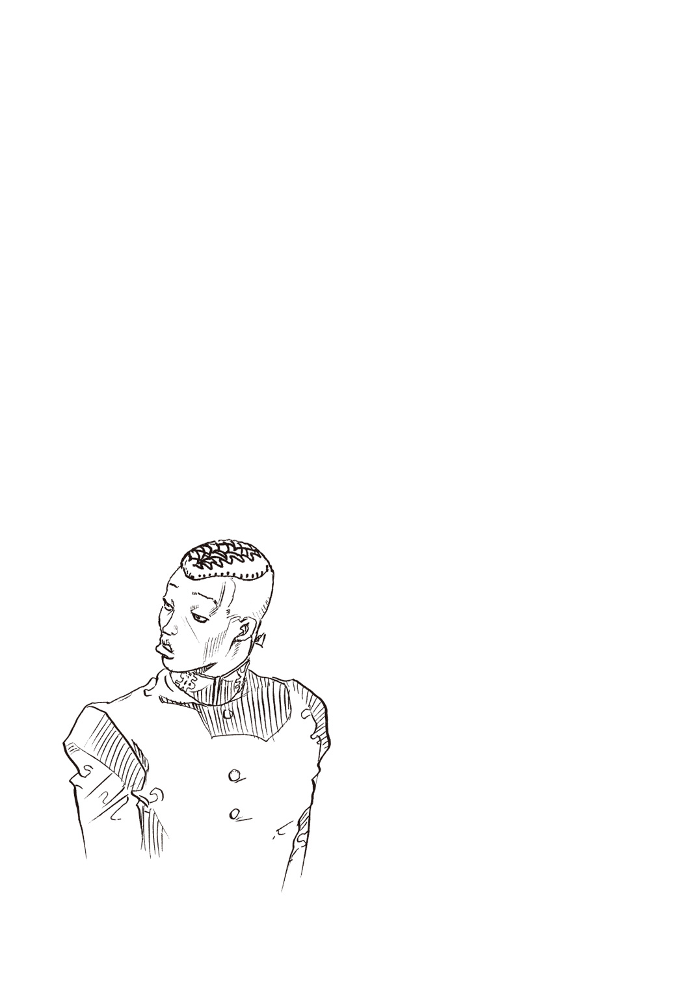

| The Book jojo's bizarre adventure 4th another day | |
| 乙 一 荒木 飛呂彦 | |
砂浜に女の子が二人。野球している人たちと、サッカーボール。サイクリングロードと、車が通りぬける謎の鳥居。ミニチュアのようにかわいらしい一戸建ての家々。この町の空がひろく見えるのは、ほとんど電線がないからだ。再開発されたとき、地中にうめたのだと聞いている。
送電につかっていた鉄塔が町の北西部にいくつかとりこわされずにのこっていた。そのひとつに男がすみついているといううわさを高校の教室で耳にしたとき、最初はただのほら話かとおもったが、そうではなかった。双眼鏡をもって、問題の鉄塔を遠くからのぞいてみると、たしかに男が生活していた。地上から数十メートルもの高さにある鉄骨に、カセットコンロやフライパンがのっており、ふとんもしかれていた。洗濯ロープが鉄塔の梁と梁のあいだにはられてあり、あらった服が干してあった。その男は鉄骨のほそい足場を器用にあるきまわって、罠ですずめをつかまえ、羽根をむしって焼いていた。彼は完全に鉄塔から出てこない生活を何ヶ月もつづけていた。しかし外界と完全に接触を断ったわけではないらしい。お菓子や調味料などをもっていってあげると、よろこんで世間話をしてくれた。鉄塔にすみついて外に出てこない彼のことを、いつからか町の人は鉄塔男とよぶようになった。
「鉄塔から出ずに生活することなんて、可能なんでしょうか？」
双葉千帆は、先輩に質問してみた。先輩は、あるきながら返事をした。
「かつてこの町には、一年ものあいだ、ビルの隙間にはさまったままで生存していた女性がいたんだ。鉄塔から出ずにくらす男がいたって、いいんじゃないか」
その話が本当のことなのか、それともただの都市伝説なのか、千帆にはわからなかった。
終業式の夜、双葉千帆は人を殺した。
台所にあった包丁を、愛する人の胸につきたてた。
その人は、死ぬすこし前に言った。
「【黒い琥珀の記憶】と名づけたんだ。自分の、この能力を......」
一
二〇〇〇年になって数日間、ボクはゲームと漫画にどっぷりと首までつかっていた。ホットカーペットにねころがって、もらったお年玉をかぞえながら、なにを買おうかとかんがえているうちに、いつのまにか冬休みはのこり三日になっていた。課題をまったくかたづけていないことに気づき、数学の問題集をやらなくてはとあせりはじめたのが一月四日の午前中のことである。ところが問題集をひらいていくら数式を見つめてもさっぱりわけがわからない。鉛筆をころがしてみても、まわしてみても、やっぱりわからない。そのうちに、きっと息ぬきが必要なのだとおもいついて、コンビニで肉まんでも買ってくることにした。つめたい木枯らしの中をふるえながらあるいて近所のコンビニエンスストア【SUN MART】に行き、ゲーム雑誌を立ち読みして新作のレビューをチェックした。さらに漫画雑誌を手にとって、目次ページに掲載されている作者コメントに目を通してみる。
ボクの好きな漫画雑誌の目次ページには、掲載漫画の作者がひとりずつコメントを書いているのだ。ひとりのコメントは四十字程度と短いが、それなりに作者の素顔がのぞき見られるのでたのしい。作者にとっては毎週毎週コメントをもとめられるのがめんどうくさいだろうなとおもうけど。コンビニ店員の視線にたえながら読んでいると岸辺露伴のコメントが目にはいった。岸辺露伴といえば日本中に名を知られる有名な漫画家である。十六歳でデビューした彼は、二十歳になる現在までずっと漫画界の第一線をつっぱしっている。彼の描く漫画『ピンクダークの少年』は、グロテスクな表現があるものの、個性的な登場人物と特徴的な擬音、そしてコミック表紙に描かれた登場人物のかっこいいポーズで読者の心をがっしりとつかんでいた。彼のコメントは次のようなものだった。
【設定上はわずか五十日間でしたが長かった第三部もついに今回で終了。次から第四部】
これは期待が高まってしまう。あれほどもりあがった第三部のあと、はたして次はどのような物語がまっているのだろう。そんなことをぼんやりかんがえながら肉まんを購入してコンビニを出た。すると道ばたに、やせた体を折り曲げて、猫に餌をあげているわかい男がいた。岸辺露伴だった。
「やあ康一君じゃないか」
「なにしてるんですか」
「見ればわかるだろ」
彼のふりまいているビスケット状のキャットフードに、三匹ほどの猫がむらがっていた。
なぜ有名な漫画家が東北地方のこの町にすんでいるのかというと、ここが彼の故郷だからだ。昨年の初夏にボクは彼と知りあった。以来、なぜか妙に気にいられてしまい、友人づきあいをしていた。彼の熱狂的なファンがボクのことを見たらうらやましがるだろう。しかし彼とつきあっていてたのしいことばかりというわけではない。
「へえ、露伴先生にも、生き物をかわいがる心があったんですね」
岸辺露伴のあたえる餌を、猫たちはおいしそうに食べていた。ほほえましい光景だった。猫たちが、だらだらとよだれをたらしながら、ぐったりとうずくまるまでは。
「先生......？」
猫が三匹ともよこたわって、おろおろしながらボクは岸辺露伴を見あげた。
「おちつけよ、睡眠薬をまぜただけだ」
彼は、たおれている三匹の中から、灰色の猫を抱きあげると、その前足をつかんでボクのほうにむけた。猫はねむっており、されるがままだった。
「見ろ。こいつの肉球、インクで黒くよごれている。仕事部屋が騒々しかったんでね、行ってみると机のうえがめちゃくちゃになっていた。インク瓶もさかさま、ペン先や筆記具もぶちまけられていた。換気のために窓をひらいていたんだが、それがいけなかったんだろう。描きあげた原稿に、猫のものらしい足跡がスタンプされていた。どうやらこいつが犯人らしいな。そもそも猫ってやつが私は嫌いなんだ。こいつら、ガンをとばすからな。知ってるか、康一君。広州ではかつて猫を食べる文化があったそうだ。なんでも滋養強壮等の効果があるらしい。沖縄でも猫食文化があったそうだ。いったいどんな味がするんだろうな」
彼のほそながい指が、今にも灰色の猫の首をきゅっとしめあげそうだった。
「冗談さ。猫なんか食うかよ」
岸辺露伴は、ボクの顔を見て、悪魔みたいな笑みをうかべた。
「しかし、こいつ、どうやら野良猫みたいだな。飼い主に弁償してもらうこともできない」
「いい大人がなにやってるんですか。猫をつかまえるためにわざわざ睡眠薬を手にいれたんですか？ こんなことしてるひまがあったら、『ピンクダークの少年』の第四部のことでもかんがえたらどうですか」
「第四部？ かんがえてるさ。それどころか、第九部までストーリーはできあがっている」
「また冗談を......」
岸辺露伴は真面目な顔をしていた。
「え？ 本当に？」
「ストーリーから台詞まで、すべて完成している。あとは原稿に描くだけだ」
彼は猫を地面によこたえると、服についた毛を几帳面にはらいおとし、ポケットから携帯電話をとりだした。
「保健所の人間に来てもらう。そいつをひきとってもらおう。誤解するなよ、むかついたから、そうするわけじゃない」
うそだな。ずいぶんたのしそうに、岸辺露伴は携帯電話のボタンをおしはじめた。
「やめましょうよ、この猫をかわいがっている人がどこかにいるのかもしれないし。首輪をしてないってだけで」
ボクがそう言うと、彼は、ぴたりとうごくのをやめた。彼はある一点を凝視したまま、まばたきもしていなかった。
「露伴先生？」
無言でたちっぱなしの彼に声をかけた。
杜王町は東北地方にあり、冬はそれなりに寒かった。ボクたちのはきだす息は白く、風にふかれてちりぢりになって空気中にとけた。【SUN MART】のある通りは、車の交通量もすくなく、比較的しずかだった。店の扉がひらいて、出てきた女性客が、たちどまって短い悲鳴をあげた。店員が外に出てきて、顔をしかめると、口元を手でおさえた。
岸辺露伴はボクの背後に目をむけていた。
「おい、その猫は、いったいなんなんだ？」
岸辺露伴がつぶやいた。いつのまにか、また別の猫がどこかからやってきて、道ばたにちらばっているキャットフードを食べようとしていた。前足でビスケット状の餌をつつき、鼻先でにおいをかぎ、口にいれてカリコリとかみはじめた。そいつは短毛種の猫だったが、もともとどういう色をしているのかよくわからなかった。なぜなら全身が血でよごれていたからだ。それが本当に血なのかどうかすぐにはわからなかったが、すくなくともボクにはそう見えた。体毛に付着して半日以上が経過したような赤黒い色だった。血だまりでころがったらこんなふうになるだろう。そのねばりけのせいで、体毛のみだれぐあいといったらひどかった。猫自身が大怪我をしているように見えたが、そうではない。ふつうに前足とうしろ足をうごかしているし、食欲もあるみたいだ。だからもしもそれが本当に血だったとしたら、どこか別の場所で付着したものだろう。ボクたちが息をのんで見つめていると、睡眠薬がきいてきたのか、猫はよだれをたらしながらよこたわり、夢の世界にはいっていった。
その日、杜王町は冷えこんでいた。バスターミナルの池には氷がはっており、飼い犬は寒そうにうずくまったままうごこうとしなかった。白い雪の粒が、ボクたちの目の前をよこぎって、地面にふわりと着地した。ボクたちは想像していなかった。血まみれの猫の登場が、死体発見につながり、解決まで二ヶ月半もかかる事件の幕あけになるなんて。といっても、これはボクたちの視点から見たはじまりなのであって、本当のストーリーはとっくの昔にはじまっていたともいえる。ボクたちはただ、彼の人生に途中から参加しただけなのだ。まだ彼が母親の胎内でちいさな細胞だったときから、ストーリーは語られるべきなのだろう。
二
杜王町はすこし前まで田んぼと畑しか見あたらない田舎町だった。北東の一部の地域は、古くからある避暑地のひとつとして有名で、今も武家の別荘がいくつかのこっていた。しかし飛来明里は郷土の歴史に興味がなかったので、武家の別荘と聞いてもぴんとこなかった。むしろ子供のころは、この田舎町のことがはずかしくてしかたなかった。大人になったら都会に出てテレビドラマで見るような生活をしたいとかんがえていた。農業を営む両親の姿は、自分もまた田舎でくちはてていく危機を感じさせた。母の手は皮膚がかたくひびわれていた。自分の手もそうなるのかとおもうとたえられなかった。田植えをしたり、田んぼの水を夜中に見に行ったりするのはまっぴらだった。
高校を卒業したのち、都会の短大にかよったが、就職口が見つからずに杜王町へもどってきた。すこしいなかったあいだに、町がずいぶんこぎれいになっていておどろいた。そのころ、杜王町に変化がおとずれようとしていた。日本中の景気が良い時代のことだった。杜王町に隣接するＭ県Ｓ市におおくの企業が進出し、そこではたらく人々が住居をもとめて杜王町になだれこんだ。町の住人数が飛躍的にふくらみ、Ｍ県の役人は杜王町開発のための多額の出資を決定した。大型ショッピングモールのカメユーマーケットが誘致され、道路が整備しなおされた。田畑だった土地に、きれいな家々が建ちならんだ。電線は地中にうめられ、美観をそこなう電柱の大半は杜王町から消えた。
明里は杜王町で就職することに決めたが、田舎くさい実家にはもどらず、駅前のワンルームマンションでひとりぐらしをすることにした。住宅販売会社の面接をうけて事務員の職を得た。住宅の設計、施工、販売をおこなう会社だった。発展のめざましい杜王町ではこの業種に活気があり人手がたりなかった。明里は書類整理をしながら、職場ではたらいているわかい建築士と恋仲になった。
大神照彦はマンションやホテルの設計にたずさわっていた。見ばえの良い外見だったが、あまり仲間うちの飲み会にも参加せず、参加したとしてもいつもすみっこでひっそりとしていた。話しかけてみると、やわらかい物腰で、おっとりとした性格だと判明した。おおぜいでもりあがるよりも、ひとりで設計図に線をひいているほうが好きそうなタイプだった。職場のほとんどの人は彼に話しかけなかったので、彼がすぐれたユーモアセンスの持ち主だということを知る者は明里以外にいなかった。
いっしょにヨーロッパへ旅行に行ったときだ。二人でならんで丘のうえにたち、夕日に照らされる古い町並みをながめた。教会の鐘がひびきわたるのを聞きながら彼は言った。
「あそこであそんでいる子供たちの顔を見てごらん。この町の石畳や建物が、時代を超越して愛されているってことがひと目でわかる。私もそういう町づくりをしたいものだ。自分はひとりのちっぽけな建築士でしかないけれど、町にふえていく建物を見ると、この仕事は町の開発に直結しているのだと感じる。これから杜王町で生まれてくる子供たちのことをかんがえさせられる。あの町の人口はふえつつある。これからおおぜいの赤ん坊が、あの町で誕生するのだろう。その子たちが、ほこりにおもい、胸をはれるような町を、私はつくっていきたい」
彼との結婚生活をひそかに夢見ていた。想像しはじめると時間をわすれた。しかし大神照彦の話はぜんぶうそだった。彼は本当のところ欠陥住宅をつくって売りとばすような男だった。
一九八一年七月末のことだ。ある日、明里のはたらいている部署に電話がかかってきた。
「飛来明里という人をよびだしてください」
女性の声だった。
「はい、私ですけど」
「あなたが明里さん？ 大神さんのことで、話したいことがあるんだけど」
彼女はひとしきり、いろいろな、信じがたいことをおしえてくれた。
「彼の部屋をさがしてみなさいよ。違法な設計図があるはずだから。彼、会社とうらで取引してるの。建設材料を削って、できるだけやすあがりな建物を設計してるってわけ。地震なんか来たら一発でくずれちゃうような代物よ。私が何者かって？ 彼の恋人よ。何番目かはわからないけど、十代のころからの知りあいよ。名前は、オリカサハナエ。漢字は、糸へんの織る、竹かんむりの笠、草かんむりでかんたんなほうの花、そして恵む。織笠花恵。信じられないなら、彼を問いつめてみれば？」
電話はその直後にきられた。トイレに行くふりをして、会社をぬけだすと、もらっていた合い鍵で彼の家にはいった。不正をしめすような書類や浮気の証拠は見つからなかったが、天井うらにかくされている旅行鞄を発見した。鞄の中には一万円札の束が大量にはいっていた。正確にはわからないが、五千万円以上はあった。織笠花恵と名乗った女性の話は本当かもしれない。飛来明里は大金のはいった鞄をもって彼のいる部署に電話をかけた。
「何番目かわからないあなたの恋人という人が、私のところに連絡をよこしてきたんだけど」
「そういう電話、信じるほうが馬鹿だぜ」
「そうはおもえないけど。織笠花恵って人は、なぜ私にあんな連絡をよこしてきたんだろう」
「直接に会って話をしようじゃないか」
「会社の屋上で、十八時にまってる」
雲が空をおおっていたせいで、まちあわせの時刻にはもううすぐらかった。仕事を終えた会社の同僚たちがかえっていくと、ビルの中はしずかになった。
屋上には腰までの高さのフェンスがはられており、よりかかって彼が来るのをまった。霧雨がふってきたので、ハンカチをとりだしてほおの雨粒をぬぐった。急に風がふいて、手からハンカチをもちさった。ハンカチは会社のビルと隣接している雑居ビルの隙間を、ゆっくりと落下していった。
十八時きっかりに大神照彦と屋上で対峙した。本当のことを聞きたかった。自分たちのかわした言葉が、すべて偽りだったのかどうかを知りたかった。
結局のところ、話しあいはおこなわれなかった。言葉をかわす前に、大神照彦に首をしめられた。
水滴が顔におちてきて、飛来明里はねむりからさめた。おきあがろうとすると、鉄の杭をさしたような痛みが背中にはしった。どれくらいの時間、気絶していたのだろう。喉に違和感があり、まともに呼吸できず、空気が通るたびにぜえぜえとつっかえた。
水気をふくんだ泥のぬかるみにたおれていた。服も髪も泥まみれで、段ボール箱や空き缶が周囲にちらかっていた。あたりはずいぶんうすぐらく、目をこらしてみて、ようやく自分のいる場所がわかった。視界におさまりきらないほどの壁面が両がわにそびえており、そのあいだにサンドイッチされる形でよこたわっていた。両手をぴんとのばすこともできないせまさだった。自分のそばに見覚えのあるものがおちていた。さきほど風にもちさられたハンカチだった。
両がわの壁のうち、どうやら片方は、自分と大神照彦の勤務する住宅販売会社のビルのものだった。見あげると、さっきまでよりかかっていたフェンスが、頭上の高いところにあった。
もう片方の壁は、隣接して建っている雑居ビルのものだった。
二枚の壁ははるか上空まで平行をたもった状態でのびており、一番うえでひらいている隙間からは雨雲が見えた。定規でひかれた線のようにせまい空だった。屋上から雨水がつたい、ながれているせいで壁はぬれていた。
自分は屋上からつきおとされたのだろうか。だとしたら、なぜ生きているのだろう。まだぼんやりとする頭でかんがえた。ぬかるんでやわらかくなった泥が、落下の衝撃を吸収してくれたのだろうか。段ボール箱のごみが、自分の体をうけとめてくれたのかもしれない。
彼の姿は見あたらなかった。死んだとおもいこんで、たちさったのかもしれない。
体中の痛みをかばいながら、なんとかたちあがり、指で髪の毛をすいた。大量についていた泥がこそげおちて、地面でしめった音をたてた。うすぐらいため、手さぐりでビル正面の通りをめざした。
通りに到達するだいぶ手前で明里は身うごきできなくなった。両がわの外壁にとりつけられた配水管が、密林のようにからまりあい、明里の行く手をはばんでいた。その隙間から腕をのばして、通りをあるいている人にたすけをもとめようとした。配水管のむこうにはエアコンの室外機らしいものがかさねておかれており、ビル正面の通りは見えなかった。明里は外にむかってさけんだ。
「たすけて！」
ビルにはさまれたせまい空が白色にかがやいた。直後にはりさけるような雷鳴がひびきわたった。明里の声がだれかにとどいた様子はなかった。勤務時間が終わり、人々が会社にいなくなると、通りはほとんど無人になることをおもいだした。
ビルの裏手へまわり、外へ出ようとこころみた。しかしすぐに無駄だと気づいた。うらにはまた別の壁がそびえていた。駅前に面した銀行のビルの背面だった。明里のいる壁の隙間にふたをするような形で建っていた。ぎりぎりまで隣接して建設されたらしく、周囲の建物とは十五センチほどしかはなれていなかった。そのため体をねじこませることもできず、会社のビルのうらをまわって外に出ることは不可能だった。
だいじょうぶ、と自分に言い聞かせた。絶海の孤島に漂流したわけではない。自分がいる場所は町のどまんなかだ。たすけをよびつづければ、だれかの耳に声がとどくはずだ。
したたってくる雨が泥とまざって口や目の中にはいってきた。顔をぬぐうこともわすれてたすけをよびつづけた。一時間ほどそうしていたが、返事はなかった。雷の音と、雨が壁をつたいながれる音しか聞こえなかった。
朝になれば出勤する会社員たちで外はにぎやかになるだろう。そのときがチャンスだ。一晩、ここでがまんをすればいい。声に気づいただれかが、屋上からこの隙間を見おろすだろう。救出されたのち、警察に通報するのだ。
それにしたって、どうしてあんな電話に出てしまったのだろう。織笠花恵と、たしかそう名乗っていた。彼女は、あの男の、何番目かの恋人だと主張した。電話に出なければ、こんなことにはならなかったはずだ。知って不幸な目にあうことと、知らないまま幸福だとおもっていることの、どちらがいいのかはわからないが。
明里は体をまるめてやすんだ。背中の痛みはやわらいでいたが、今度は全身が冷えてきた。目を閉じると、親のことが頭にうかんだ。
あのときとおなじだとおもった。短大にかようため、はじめて都会でひとりぐらしをしたときのことだ。最初の晩、ほとんど家具のないからっぽの部屋によこたわり、自分が世界のはてに来てしまったようなきもちになって、なかなかねむれなかった。町ではおおぜいの人が生活しているのに、だれも自分の存在など知らない。いつのまにか自分は、両親のことをおもいだして、不安にたえていた。この部屋で自分が生きていることを知っているのは、遠い田舎にすんでいる父母だけなのだ。父や母なら、自分のことをおもってくれているという確信があった。
「きみは幸運に感謝するべきだろうね。この高さからおちても、命をおとさないなんて」
うえのほうから声が聞こえてきて、明里は目をあけた。懐中電灯の光が屋上にあった。ビルの隙間が照らされ、落下する水滴がうかびあがった。
「殺したつもりだったのだが、首のしめ方が、ちょいと甘かったのだろう。織笠のやつ、きみに連絡をよこすなんて、馬鹿なことしやがって。嫉妬していたのかもしれないな。私たちの関係が順調だったから、ひと波乱、おこしたかったのだろう」
生涯をともにするかもしれないとおもっていた男の声だった。
三
「見たときはちょっとびっくりして、血だとおもったんですけど。本当は別物なんじゃないでしょうか。赤色のペンキか、それともイチゴジャムみたいなものだとはかんがえられないですか。仮に血だったとしても、きっと魚屋でつけた魚の血かなにかですよ」
「これがジャムかペンキだって？ そんなわけあるか。こいつは本物の血だ。乾きかけてねっとりした感じを見ろ。こいつ、どこかで本物の血を体につけてきたんだ。たとえば、血まみれでたおれているだれかに体をすりよせたら、こんなふうになるはずだ」
なぜこの猫は血まみれなのか？ 【SUN MART】の店先でボクと岸辺露伴はそのことについて意見交換した。
「血まみれでたおれている人なんて、あんまり見かけませんけど」
漫画家という職業は、きっと人よりも想像力が豊かなのだろう。
「じゃあたしかめてみようぜ」
猫は黒い布地の首輪をはめており、銀色のハート形をしたネームプレートがぶらさがっていた。それにはどうやら猫の名前らしいカタカナの羅列と、電話番号と、さらに飼い主の名前がちいさく彫りこまれていた。ボクたちはそれらの情報をメモしてその場をあとにした。猫は【SUN MART】の店員がなんとかしてくれるだろう。それよりも岸辺露伴の好奇心といったらすごかった。猫が血まみれである理由（血かどうかはよくわからないけど）をしらべなくては気のすまない精神状態になっていた。彼はこういうちょっとふしぎな話に出会ったら、つよい興味をしめした。漫画のネタになるかもしれないと、おもっているのだろう。おかげで彼の仕事部屋をあらした灰色の猫は命を救われた。岸辺露伴はもうすっかり事件のことに夢中で、そいつを保健所にひきとらせることなど、どうでもよくなっていたからだ。
まずはネームプレートに彫られていた番号に電話をかけてみた。呼び出し音が鳴るばかりで、飼い主は電話に出ない。しかたなくボクたちは飼い主の名前と電話番号から、その住所をしらべることにした。
人に聞いたり、地図をながめたりしながら、十五分後、ボクたちはさきほどの猫が飼われていた家をさがしあてた。洋風の庭付き一戸建てで、玄関扉には猫用のちいさな出入り口がついていた。首輪のネームプレートに彫られていたのとおなじ名前が表札に記されており、ここでまちがいないとおもわれた。
玄関チャイムを鳴らしたが返事はなかった。ひきとめるまもなく、岸辺露伴は家の壁にそってあるきだした。空から雪の粒が産みおとされて、杜王町にふりそそいでいた。枯れた芝生や、落ち葉をふむと、ものがなしい音が靴のうらで生じた。
家の壁にそって、庭に出たとき、ボクは後悔した。これは確信なのだが、このまま自宅にもどっても、絶対に数学の問題集なんか解く気にはなれないだろう。あたりがさびしく、しずかだったから、ボクたちの服の衣擦れする音が、やけに大きく聞こえた。岸辺露伴が、あごに手をあてて、むずかしそうな顔をした。
家の敷地から出て、ボクたちは深呼吸をくりかえした。車が一台、排気ガスを出しながら、目の前を通りすぎた。世間では日常がつづいている。そのことにボクはほっとした。岸辺露伴がまた庭のほうにあるいていくので、「どこ行くんですか」と聞いたら、「家を一周してくるからそこにいろ」と返事があった。ボクははき気をこらえながら彼がもどってくるのをまった。
「鍵のあいている窓が見あたらない」
もどってきて、彼は言った。
「猫の出入り口だけはひらいていたが。だからつまり、この家はほとんど密室ってことだ。窓ごしにちょっと見えたんだが、リビングのテーブルに家の鍵がのっていた。だから、だれかが外から鍵をかけたわけではないとおもう」
「はやいところ、救急車をよびましょう」
「よぶならパトカーだろ。どうもおかしいぞ、あの死体。老衰や病死じゃないぜ。おかしな死に方してる。太ももに痣があったのを見たか？」
「いいえ」
「たおれた衝撃でそうなったのか、スカートがめくれかえっていたんだ。右の太もものつけ根あたりが変色しておぞましい色合いになっていた。あの痣の形はまるで......。いや、今はよそう。おい、こらえろ。はくんじゃない。ひとまず今は、警察に通報しとこうぜ」
「それがいいとおもいます」
ボクは携帯電話で警察に連絡した。
「もしもし、警察の方でしょうか......。ちょっと説明がむずかしいんですが......」
ガラス越しなのでほとんど腐敗臭はなかった。それでも息をすいこむことに抵抗があり、さきほど庭にたっているあいだ中、できるだけ呼吸はしなかった。庭に面した壁には縦長の大きなガラス窓があり、カーテンがしめられておらず、家のリビングがよく見えた。窓のそばの床に女性がたおれていた。左の肩を下にした状態で横向きだった。周辺に大量の血がひろがっており、ほとんどフローリングの床全体が赤かった。あれだけの血がながれたら、生きていられる人はいないだろう。まぶたはひらいたままで瞳が遠くにむけられていた。リビングの窓は植えこみのせいで外からは見えなかった。だからこれまで発見されなかったのだろう。
発見者はボクひとりだと警察には言っておいた。岸辺露伴の希望である。警察がやってきたら、彼はすぐに距離をおいて野次馬のふりをする予定だった。自分は有名人だから、発見者になると騒ぎが大きくなる、というのが理由だ。理不尽な気がしたけど、しかたない。ボクも岸辺露伴のファンのひとりだし、こういうことで彼の名前が世間にひろまるのはいやだ。
「ボクの名前ですか？ 広瀬康一、ぶどうヶ丘高校の一年生です。いいえ、面識はありません。たまたま、猫を見かけて、家をたずねたら。たぶん、猫は、飼い主にすりよったんだとおもいます。そのときに血が......。なくなっていたのは女の人です。名前ですか？ たぶん、【織笠花恵】という人です。玄関の表札に名前が書いてありました。猫のネームプレートにも。漢字は、糸へんの織る、竹かんむりの笠、草かんむりでかんたんなほうの花、そして恵む、です」
四
読書は昔から好きだった。とくに古い本のにおいをかぐと心がやすらいだ。一番好きなジャンルは、学校の図書館にあるような児童書だった。その次に好きなのは、とびだすしかけのある絵本だ。
小学六年生のときから、父母が喧嘩をするようになった。母が皿をたたきわる音で読書に集中できないので、十二歳の双葉千帆は家出をした。ひとまず駅前のバスターミナルからＳ市行きの直行バスに乗り遠くへ行ってしまおうとおもった。
ドーナツを買って発着所のベンチにすわり、バスの発車時刻をまっていたときだ。この町の外にはいったいなにがあるのだろうかとかんがえて、急にこわくなってきた。家出して、町を出たあと、行くべきところがおもいうかばなかった。自分はこの町で生まれ育った。これからもずっと一生をここですごすのだろう。町の名前は杜王町。名物は牛タンの味噌漬けである。
双葉千帆はベンチでためいきをついて、好物のドーナツをひとくちかじった。駅前商店街のパン屋で売っているものだった。半分ほど食べたとき、もうすっかりかなしいきもちはおちついて、夕飯までには自宅へもどろうとかんがえた。
そのとき、不良の男子高校生がやってきて、すぐとなりにすわった。耳に巨大な金色のピアスをぶらさげていた。たってその場をはなれようとしたら、腕をつかまれて、無理矢理すわらされた。
「そんなにおびえた顔すんなって。なにもしねえよ」
うそだった。三分後、千帆は駅舎の陰に無理矢理つれていかれた。悲鳴をあげるとひどいめにあうと言われた。不良高校生は、千帆から財布をとりあげて、中にはいっていたクレジットカードを発見した。家出する直前、父の財布からぬすんできたものだった。足がすくんでたっているのがやっとだった。
「命ごいするなよ」
少年の声が、不良高校生の背後から聞こえてきた。いつのまにちかよってきたのか、自分とおない年くらいの少年がたっていた。少年の手足はほそく、針金を編んでつくった人形のようだった。まだ寒い季節ではないのに、手首までおおいかくせるような長袖の服を着ていた。上下ともに黒い服装だった。
「たすけてくれって、懇願するところだっただろう。そんなやつは、死ぬまで負け犬のままなんだ」
にらみつけるようなするどい目で、少年は千帆を見つめていた。宇宙空間を想像させる、まっ黒な瞳だった。さらに少年は、冷ややかな口調で不良に言った。
「あんたも、小学生からかつあげってのはどうかとおもうよ。エロいこと目的で茂みにつれこんだのかとおもったよ」
不良は「なんだてめえは」とすごんだが、少年にひるんだ様子はなかった。
「その子からさあ、きたない手をはなせよ。どうせ小便してもあらってないんだろ」
少年はポケットから小型のナイフをとりだした。刃は傷だらけで、長年、つかいこまれたようなあとが見られた。
その後、不良高校生と少年がなにか言葉のやりとりをしていたのはおぼえている。しかし、かけつけてきた警官になにがあったのかと質問されても、千帆は詳細な説明ができなかった。気づくと千帆はひとりでベンチにすわらされていた。
たぶん、少年がナイフでそれをやってのけたのだろう。足下の地面に耳がおちていて、その耳たぶには金色のピアスがはまっていた。不良高校生は駅舎の陰にたおれており、命に別状はなかったが、発見されたときずいぶんおびえていたという。
結局、あの魔少年的な子は、だれだったのだろう。少年の人相を警官に聞かれたとき、逆光で顔はよく見えなかったと話した。警察の手配が少年におよぶのをふせぐためだ。実際ははっきりと彼の顔をおぼえていた。わすれないよう、大切にその記憶を頭の中にしまいこんだ。
中学生になると、なかのいい女の子の友達数人と、学校がえりにファミレスへかよった。利用するのはいつもカメユーマーケットそばの店だった。そこはいつ行っても客がすくなく、先生に見つかる可能性が低いということで、安心して制服のままくつろぐことができた。ドリンクバーを注文して、外が真っ暗になるまで、みんなで少女漫画の回し読みをやった。試験期間中にはテーブルにノートや教科書をひろげて勉強した。全員が赤色の半透明の下敷きをもっていた。
中学二年生のある秋の日、学校からかえる途中、いつもどおり千帆はファミレスにたちよった。その日は小学校時代からつきあいのある三つ編みの友人と自分しかいなかった。あとからほかのみんなも来るのだとおもって、六人がけのテーブルをとっておいたのだが、いつまでたっても来なかった。
「最近、みんな、いっしょにかえらないね」
読んでいた本を中断して、千帆は友人に聞いてみた。そのとき読んでいたのは町立図書館から借りてきた『ガリバー旅行記』だった。
三つ編みの友人は映画雑誌から顔をあげないまま返事をした。
「きっとみんな、男の子といるのよ」
「やっぱり、そうか。どうりで......」
周囲に男女のカップルがふえつつあった。なかの良かった友人たちも、すこし前から妙にうわつきはじめて、化粧品を貸し借りして試していた。化粧という文化はまだ自分のところにまで伝来しておらず、ちいさな子供のころに母親の口紅であそんでおこられたことくらいしか体験していなかった。
「ドリンクバー部も、もう終わりかもしれない......」
空いている席を見ながら、ためいきをついて言ってみた。友人は鞄から鋏をとりだすと、映画雑誌に印刷されているハリウッドスターをきりぬきはじめた。
「しばらくは二人だけの活動がつづくかもね」
「再来年はどうなるかわからないよ」
彼女はきりぬいたぺらぺらのハリウッドスターを、糊でノートにはりつけて言った。
「再来年？」
世界の破滅でもおこるのだろうか。再来年といえば一九九九年だったから、そんな想像をした。
「うちら、高校生になるでしょう。千帆はこのままぶどうヶ丘学園の高等部にすすむよね。でも私はそうじゃないから」
「え、高等部、行かないの？」
「あんな不良ばっかの学校、ごめんよ。もうひとつうえのランクねらってるから」
初耳だった。詳しく聞いてみると、彼女の希望校は、Ｓ市にある女子高だった。彼女はさらにもっと未来の人生スケジュールも作成しているそうだった。高校を卒業したら本格的に英語を学ぶため、しばらく外国にすんでみようとおもっているらしい。彼女の目標は、ハリウッドスターの通訳をすることだった。
「千帆は？ なにか将来、やりたい仕事とかある？」
かんがえたこともなかった。
ファミレスを出ると、すでに夜だった。近所にあるカメユーマーケットの照明で、夜空がぼんやりとあかるかった。カメユーマーケットはまるでアメリカ映画に登場するような巨大なショッピングセンターである。広大な駐車場を照らしだすために、ナイター設備のような照明が設置されていた。
「カメユーに寄ってもいい？」と聞いてみた。「いいよ」と友人が言った。だだっ広い駐車場をよこぎって店内にはいった。しかし買いたいものがあったわけではない。友人とわかれがたかっただけである。世間話をしながら、てきとうに棚のあいだをあるいていると、化粧品売り場の前を通りかかって、いいことをおもいついた。
「これ、買ってみない？」
千帆は一番やすいファンデーションを手にとった。レジでお金をはらっているとき気恥ずかしかった。自分でそういうものを買うのは生まれてはじめてのことだった。友人もおなじだったらしく、ちょっと居心地わるそうにしていた。店の外のベンチに腰かけて、秋のすずしい風にふかれながら、交代で顔にぬってみた。自販機の明かりに何匹もの虫がひきよせられていた。鏡を見ると、多少、ゴージャスにちかづいたような気がしなくもなかった。
友人とわかれて帰宅してみると、家の中はやけにしずかだった。テレビのついていないしんとしたダイニングキッチンで、父母がむかいあってすわっていた。ずいぶん前から二人でその話しあいをしていたらしいのだが、正式に聞かされたのはその日がはじめてだった。しかし前々からそういう雰囲気を感じていたので、離婚することが決まったと報告をうけてもショックはそれほどではなかった。
自室のベッドによこたわってかんがえごとをしていたらドアをノックされた。返事をすると、扉がほそくひらいて、母が顔をのぞかせた。千帆がねころがったままでいると、母は室内にはいってきて、ベッドに腰かけた。
母は千帆のほおを指先でなでて、指先についたものをじっと見つめた。どうしてか罪悪感が心にひろがった。
「さっき、はじめて自分でぬってみたんだ。友達と、外のベンチにすわって」
「クレンジングでおとしたほうがいいよ。肌があれてしまうよ」
母といっしょに洗面所へたった。母が化粧おとしの乳液を貸してくれた。千帆が顔をあらっている様を、母がずっとうしろで見ていた。
深夜になってもねむれなかった。読みかけの本をひらいても、いろいろな思いがうずまいて読書にはいりこめなかった。心の整理が必要なのだと判断して、机にノートをひろげ、日記を書いてみることにした。そんなことをするのははじめてだったが、かんがえたことを、最初から最後まであますことなくメモしておこうとおもった。今日、見聞きしたことが、自分の人生において、重要な要素になるような気がしたからだ。男の子、将来、化粧、離婚......。
ノートにペンをはしらせていると、いつのまにか窓の外があかるくなりはじめていた。時計を確認して、数時間がすぎていることにおどろいた。まるで何者かによって時間を消しさられたかのようだった。自分の書いたものを見てみると、ノート一冊分が文字でうめつくされており、二冊目にはいるところだった。自分にもこんな分量の文字が書けるんだ、とおもった。もともと国語の作文は得意で、読書感想文を書くのも好きだった。しかしあらためて自分の文章を読みかえしてみると、それは日記と言うよりも、私小説にちかいスタイルだった。
これまで、こんなことをかんがえるのは、はじめてではなかったが、本気ではなかった。そのビジョンを、意識して脳内にとどめておくことをしなかったのだ。しかし、将来、作家になっている自分をイメージして、にげていかないようにしっかりつかまえてみると、それがなりたい自分の姿であるようにおもえた。
もしも小説を書いて、それが社会にみとめられたら、そんな素敵なことはない。今はまだ、自分の書いた本が書店にならぶところまでは、現実からかけはなれすぎていて想像できない。しかし、たとえばそんな未来がおとずれたら、家族がばらばらになっても、書店にならんでいる自分の本を見かけて、おもいだしてくれるかもしれない。かつていっしょにすごした、遠い昔のことを。
中学校での三年間が終わりにさしかかり、高校への進学も無事に決まったころのことだった。三つ編みの友人はＳ市の女子高をうけて合格した。彼女がいなくなるのはさびしかったが、千帆の進学するぶどうヶ丘学園高等部には、顔なじみがおおぜい、進学する予定だった。
その少年を目撃したのは杜王町の町立図書館でのことだった。商店街をぬけたさきに図書館はあった。広大な敷地をもっており、門から建物までは煉瓦で舗装された道がのびて、庭には池や噴水、奇妙な形のモニュメントなどがあった。明治時代からある建物を改装したもので、三階建ての古い洋館である。札幌にある赤煉瓦の庁舎によくにていたが、こちらは外壁に隙間なく茨がからまっており、地域住人からは【茨の館】とよばれていた。
その日、一階にある文学のコーナーの閲覧スペースには、ほとんど人がいなかった。そこで『はてしない物語』を読んでいると、本当にはてしない内容におどろいた。章の区切り目で一休みしようと、顔をあげ、背伸びをしていたときだ。いつのまにか、気づかないうちに、高校生の少年がはなれた席にすわって読書していた。彼が閲覧室にはいってくる足音や、椅子をひいてすわる音さえ聞こえなかった。自分が読書に集中していたせいだろうか。しかし、まるで空中から突然にあらわれたような、ふしぎな感じをうけた。彼はぶどうヶ丘学園高等部の制服を身につけていた。本を見おろしている彼の横顔を見て、はっとなった。四年前、駅前で自分をたすけてくれた少年によくにていた。ひらいていた窓から風がはいってきて、『はてしない物語』のページがぱらぱらとめくれていった。
【茨の館】に行けばかなりの確率で彼に会えたが、声をかける勇気はなかった。一階の閲覧スペースに彼がすわっていることを確認するために、中学卒業後の春休みを図書館通いについやした。少年はいつでも上下ともに黒色の学生服で、体の大きさにぴったりとあっていた。
はじめて会話をしたのは、高校生活一日目のことだった。入学式を終えて【茨の館】にたちよってみると、すでに少年がほおづえをついて読書していた。てきとうな席にすわって彼を観察した。彼は読書中、すこしも表情をかえなかった。まるで機械のように、一定の速度でページをめくっていた。壁の時計の秒針をつかって確認してみたら、すこしの誤差もなく一秒ごとに次のページをひらいていることが判明した。読んでいるというよりも、紙面を目に焼きつけている作業のように見えた。
少年の観察をやめて読みかけの児童書をひろげたときだ。千帆は、足下に紙片がおちていることに気づいた。ひろってみると、黄ばんだ紙の裏表にこまかい文字が印刷されていた。どうやら本のページのようだった。
「あの、これ、おちてたんですけど」
ひろったページをカウンターにもっていった。女性の図書館員が二名、千帆の応対をしてくれた。彼女たちは顔をよせあい、こまったように会話した。
「なんの本だとおもいます？」
「さあ......」
ひろったものには本文とページ番号が印刷されているのみで、本の題名がわからなかった。ページに印刷されている文章を読んでみたが、千帆には見覚えのない内容だった。ページをもとの本にもどすのはむずかしそうだった。図書館中の本棚から一冊ずつとりだして、ページのぬけおちている本をさがさなければいけないからだ。図書館員といっしょになってこまっていると、背後から声をかけられた。
「俺に見せてもらえませんか」
少年がいつのまにか千帆のうしろにたっていた。おどろいていると、学生服につつまれた彼のほそながい腕がすっとのびてきた。腕がほおのそばを通ると、古い本のにおいがした。彼は図書館員のもっているページをつまんで、しずかな顔つきで見おろした。その目はするどく、つめたかった。わずかな体温もこもっていないようにおもえた。すこしのあいだ、そうしていたかとおもうと、「ここでまっててください」と言いのこしてページをもったままあるきだした。千帆は図書館員といっしょにその場でまった。少年は無数にある本の中から迷いなく一冊をとりだしてもどってきた。
「この本からぬけおちたものだとおもいます」
彼は本をめくりもせずにカウンターにおいた。海野十三という作家の本だった。図書館員二名と顔をつきあわせて中を確認した。たしかに該当ページがその本から欠落していた。ひろったものをさしこんでみると、紙の色味や字体、文章のつながりが、ぴたりと一致した。少年の言うとおり、その本で正解だった。千帆が図書館員といっしょにおどろいていると、いつのまにか少年の姿がそばになかった。彼はさっさとカウンターからはなれて、玄関ロビーをあるいていた。
この機会をのがしたら、きっともう次はないとおもった。気づくとひとりでに足がうごいて、はしりだしていた。
ロビーの床は木製のほそながい板がしきつめられたタイプで、【茨の館】の建設された年代を感じさせた。床板は黒色によくみがかれており、窓からはいる光で、ぬれたようにかがやいていた。
「まってください！」
天井はふきぬけで三階部分までぶちぬいてあり、千帆の声はよくひびいた。少年は螺旋階段のそばでたちどまり、うさんくさそうに千帆をふりかえった。
「どうしてさっきの本だってわかったんですか？」
少年の背丈は千帆よりもはるかに高かった。彼は、言うか、言うまいか、すこし迷うようなそぶりを見せた。まぢかで彼の顔を見て、あのときの少年だというきもちがつよまった。
「文字の配列に見覚えがあったからな」
少年の声は、感情のこもっていない、無機質なものだった。
「読んだことがあったってことですか？」
「さっきの本がどんな内容の小説だか知らない。印刷されたページを記憶していただけだ。字面を記憶していることと、読んで理解していることはちがう」
「ページを記憶？」
「図書館にある本は、だいたいぜんぶ記憶している」
冗談でわらわせようとしているわけでもないらしく、少年はにこりともしなかった。
「記憶力がいいんですね......」
「昔ほどじゃない。今は、一日に一冊、おぼえるのが限界だ」
「私なんて、以前に読んだ本とも気づかずに、おなじ本を二回も読んでしまうことがありますけど」
少年は、だからどうかしたのか、という顔つきで無言だった。千帆は世間話をあきらめた。
「......質問があるんですけど。以前に、お会いしたことありませんか？ 四年前の十月二十一日のことなんですけど」
家出して、不良にからまれ、少年にたすけられた日だった。彼は数秒間、無言で千帆を見つめた。
「おぼえてないな」
彼は首を横にふった。
「記憶力がいいのに、おぼえてない？」
「めんどうくさいから、そう言っただけだ。訂正するよ。その日、俺はきみになんか会わなかった。四年前というと、一九九五年だな。その年の十月二十一日は土曜日で、午前中は学校だった。昼に施設のほうへ帰宅して......」
「施設？」
「俺の家ってこと。帰宅したらずっとねむっていた。夜に天体観測をしようとおもって、やすんでおくことにしたんだ。きみはおぼえてないだろうけど、一九九五年のその日、オリオン座流星群が夜空に見える予定だったからな」
「でも、あなた、ナイフをとりだして、私をたすけてくれたでしょう？」
「ナイフ？ だれかとまちがえてるんじゃないのか？ 俺は流星群のことで頭がいっぱいだった。夜空を光がよこぎるんだぜ。鳥よりもはやく。馬よりもはやく。まるでそれは、この世が終わるときの光景ににているんだ。そんな夜を前にして、きみをなにからたすけるっていうんだ？」
少年の名前は蓮見琢馬。年齢は十七歳。一学年うえだったので、蓮見先輩とよぶことにした。最初のうちは図書館であいさつするだけだったが、そのうち学校の廊下でもあいさつをするようになった。
彼はするどくつめたい目つきの持ち主で、どんなにおいしいドーナツを食べているときも、おかしなわらい話を聞いたときも、表情をくずさなかった。おそらく感情表現が不得意な人なのだろう。暑いとか、寒いとか、そういう感情もうかがわせなかった。夏場でも彼は上着をぬがず、どんなときも黒い長袖の学生服に腕を通し、首までボタンをしめていた。蝉が鳴いているような季節にファミレスにはいったときも、暑さにやられて千帆がぐったりしているむかいの席で、彼は汗一滴うかべずに窓の外を見ていた。
「なにを見てるんです？」
「ナンバープレートをながめている。道路を行き交っている車の」
彼はふりかえらずに返事をした。
「なんのために......」
「おぼえておいたら、もしものとき、やくにたつだろ。何時何分に、だれの所有する車がこの道を通ったのか」
蓮見先輩はときどき、こういうおかしな言動をする。どこまでが本気なのか、よくわからない。
「それより、暑くないんですか？ 学生服、ぬいだらどうです？」
「それはできない。制服はもう、俺の体と同化してしまってる」
蓮見先輩はいつも黒い学生服姿なので、その上着は彼を構成している記号であるとも言えた。髪の毛の色素はややうすいけど、目や靴がまっ黒なので、彼のいる場所だけ、宇宙が存在しているようだった。片耳だけにつけているアクセサリーと、上着の正面についている金色のボタンが、暗いところでかがやく星のようにも見えた。胸ポケットにはいつも万年筆がささっており、昔の友人からプレゼントされたものだと彼は言った。しかし服が体と同化してしまうなんてことはありえない。彼には身体があり、その表面を学生服がつつんでいるのだ。
夏までには、友人づきあいをしているといっても過言ではない関係になっていた。それでも彼についてはわからないことだらけだ。小学生のときに自分を不良からまもってくれた人なのかどうかもやはり謎のままだった。
Ｓ市の女子高にかよいはじめた三つ編みの友人に、電話で相談してみた。
「本人は否定してるんだけど、うそついているだけなんじゃないかっておもうんだよ」
三つ編みの友人は、高校にかよいはじめてもう三つ編みではなくなったらしいのだが、諭すような声で言った。
「千帆がそう信じたいだけなんじゃないの？」
そうかもしれない、とおもった。このわすれっぽい自分の頭で、あのときの少年の面影をいつまでも正確におぼえていられるものだろうか。あらためてかんがえると、ナイフをにぎっていたあの少年と、本ばかりながめている先輩とは、ちょっとむすびつかないような気がしてきた。それでも、同一人物であってほしいと自分はどこかで願っていた。
ストーリーを感じたいのかもしれない。自分たちは特別な関係性であるといううらづけを期待していたのかもしれない。たとえば背後にストーリーが存在すれば、もっとたやすく、そのきもちに確信がもてるからだ。
電話のむこうから、友人のやさしい声が聞こえてきた。
「いいことじゃん。ドリンクバー部は私ひとりでやってくよ。ふられたら、もどっておいでよ」
学校での蓮見先輩の交友関係を気にしてみたが、特別にしたしくしている女子生徒はいないようだった。体育はすべて欠席しているらしく、病気のせいだと本人は言っているが、ただ上着をぬぐのがいやだったからではないかと想像した。蓮見先輩が学校以外で頻繁に行くところといえば、書店、古本屋、文房具屋、図書館、そして杜王町東部の田園地帯にある家だった。
その家はこぢんまりとした廃屋だった。再開発計画からはずれた地区にあたり、周辺には昔ながらの民家や田畑しか見あたらなかった。彼はその廃屋に、なにか目的があって行くのではない。そばにたちよったとき、ちょっとだけ道をはずれ、ただ空気をかぎに行くのだ。屋根瓦の隙間からは雑草がおいしげっており、目をひくようなものは見あたらなかった。今はもうあれはてているが、庭には家庭菜園のあとがあった。かつてネギや白菜が育てられていたのだろう。乾燥した土で柄のところが真っ白になっているような鍬や鎌が玄関にたてかけられて放置されていた。濃厚な土のにおいがあたりに充満し、意外とそれはわるくなかった。
最初に案内されたとき、先輩はかつてこの家にすんでいたのだろうかとおもったが、どうやらちがうようだった。
「ここにすんだことはない。一度も」
「じゃあ、どなたのおうちなんです？」
「五年前まで、老人の夫婦がすんでいた」
「今どこにいらっしゃるんです？」
「二人とも死んだ。はじめは奥さんが病気で。半年後に、あとを追うように旦那さんのほうが脳溢血で」
「お子さんはいらっしゃらなかったんですね」
「娘がひとりいた。二十年ちかく前に失踪している。その人は、結局、もどってこなかった。ある日、忽然と、煙のように消えてしまった。よくある話だ。とくに杜王町ではね。知ってるか、この町、行方不明者がおおいんだ。そういう統計データがのこっている。一九九九年にはいってからの行方不明者は八十一人。うち四十五人が少年少女だ。まるで杜王町自身が、建物の陰で人間をひとりずつ食ってるんじゃないかっておもう。そんな数字だろ」
先輩は家の中をのぞいた。窓がはずれていたので、外から屋内を見ることができた。奥は真っ暗で、ふかい洞穴のようだった。
「結局、この家にすんでた人たちは、先輩とどういう関係なんです？ 親戚ですか？」
「ちょっとした知りあいだったんだ。何度かバスの発着所でいっしょになって、顔見知りになっただけの。それよりも、千帆、腹がすかないか。あれを食べに行こう。きみのお気に入りの、あげたてで、穴があいてるやつだ。砂糖がまぶしてある、例のやつを」
千帆がいつも買い食いしているドーナツのことを言っているらしい。
「あとそれから、俺に親戚なんているはずないだろ。俺には家族がいないんだから」
駅方向にあるきながら先輩が言った。
後日、あまりにも気になったので、先輩には内緒で、その家にすんでいたという老夫婦のことをしらべてみた。図書館で昔の地図をながめ、近所の住人に話を聞き、過去の新聞で行方不明事件の記事をさがした。先輩が言っていたとおり、老夫婦は二人ともなくなっていた。娘の行方不明という話も本当だった。彼らは昔から杜王町にすんでいた農家で、姓は【飛来】というらしい。いなくなった娘は【明里】という名前で、一九八一年の七月末に、二十一歳で、忽然と杜王町から姿を消していた。
五
タオルにくるまれた赤ん坊が寺の境内で発見されたのは一九八二年六月十日のことだった。住職が町の福祉課に連絡し、赤ん坊はその日のうちに乳児院へうつされた。
乳児院の院長がその子の名前をかんがえた。院の住所が蓮見地区だったので苗字は蓮見となり、赤ん坊の右肩に馬のような形の痣があるので名前は琢馬となった。
蓮見琢馬は乳児院で一歳まですごし、その後に杜王町北西部にある児童養護施設へあずけられた。児童養護施設では、職員が子供たちの食事をつくり、服の洗濯をした。十五人ほどの子供が生活しており、親が刑務所に服役していたり、貧困で育てられなくなったりと、子供のあずけられていた理由はさまざまだった。琢馬のように両親の身元がまったくわからない子供はすくなかった。
琢馬が五歳のころ、体のちいさな三歳の少年が施設にはいってきた。あずけられた理由は義理の父親の虐待だった。少年は夜になるといつも泣いていた。おかげでその子はみんなから【なきむしぼうや】というあだなをつけられた。小学生以下の子供たちは大きな部屋にふとんをしいていっしょにねるきまりになっていた。【なきむしぼうや】の泣き声がやまないせいで、ほかの子もねむれなくなった。おこって彼に枕をなげつける子まで出はじめた。琢馬はある晩、【なきむしぼうや】のそばによりそって話しかけた。
「いつもなんでないてるの」
【なきむしぼうや】はこたえずにしくしくと泣いているばかりだった。琢馬は、彼の頭をだきしめた。背中のひどい痣が襟元からのぞいた。涙と鼻水できたなくなった少年の顔を袖口でふいてあげた。
「しかたないな。ボクが、おもしろいはなしをしてやる。だからもうなくなよ」
少年をねかしつけるように、背中をぽんぽんとたたきながら、『ジャックと豆の木』や『しあわせの青い鳥』を話して聞かせた。施設ではたらく大人が読み聞かせてくれた童話だった。【なきむしぼうや】は、琢馬の朗読があまりに上手なので、泣くのもわすれて熱中し、いい気分でねむりについた。
それから毎晩、琢馬は【なきむしぼうや】にいろいろなお話をしてあげた。いつからか、ほかの子たちもちかづいてきて、耳をすませるようになった。施設の大部屋では、夜になると、琢馬を中心に子供たちがあつまった。暗い中で体をよせあい、今日はどんな話が聞けるのかと目をかがやかせた。
職員らは夜中のお話会に気づくと、部屋の外で耳をすませた。琢馬の話を聞いておどろいた。自分たちが読み聞かせした物語を、はじめから終わりまで一字一句もらさずおぼえていたからだ。本と照らしあわせてみると、その精密さがわかった。琢馬はどこも省略することなく完全に暗記していた。
「あんなにくわしく、どうやっておぼえることができたの？」
ある日、琢馬は大人に質問された。
「ふしぎなことなんかないよ。ボクはおはなしを、ぜんぶ、おぼえてるんだ。これまでに食べたものも、ぜんぶ、おぼえてるよ」
これまでに食べたパンの数をおぼえている人間がこの世にいるだろうか。しかし琢馬は正確に記憶していた。施設で出された食事の献立をすべてこたえることができた。離乳食を終えてから五歳になるまでのすべての食事である。
施設の大人はトランプをとりだしてきて、シャッフルしてテーブルにならべた。
「今からカードのあてっこをしようじゃないか」
五十二枚のカードを、十秒間だけ琢馬に見せたあと、すべてうらがえした。琢馬の記憶力を試すためのテストだった。
「さあ、どのカードが、どんなマークで、どんな数字をしていたのか、あててみてごらん」
琢馬はうらがえしのカードを指さして、正解を次々と口にした。カードを表にする職員のほうがおいつかなかった。大人たちはおどろき、つぶやいた。
「この子は天才なのかもしれない」
車に乗せられて、病院や大学の研究室につれていかれた。研究室では、頭に奇妙な帽子をかぶせられ、脳波を測定された。何万桁にもおよぶ数字のならびをおぼえさせられ、解答を口にすると、大人たちはよろこんだ。
検査をうけたかえり道に、駅前の喫茶店でアイスクリームを食べさせてもらえた。そこはオープンテラス式の喫茶店で、店の外にもテーブルや椅子がならんでいた。施設の人は、いつもかならず、見晴らしのいい外の席にすわった。アイスを食べていると、帰宅途中の中高生がおおぜい、よこぎった。電車やバスを利用する生徒はかならず駅前にやってきたし、どこかであそんでかえる者は駅前商店街をおとずれた。黒い学生服姿がぞろぞろとあるいている様は壮観だった。
十数回目に喫茶店でくつろいでいるときだった。おおぜいの中高生が目の前をよこぎっていたが、【はじめて見かける顔の生徒】がいないことに気づいた。そのことを施設の大人につたえた。
「それはつまり、全員が、見覚えのある生徒ってこと？」
施設の大人は、行き交っている生徒たちをふりかえり、信じがたい表情をした。
「きっときみは、全員の顔を、もう見ちゃったんだ。彼らの顔をひとりのこらず記憶してしまったんだ。この町で制服を着ている生徒のすべての人相を」
のちに資料をあさってみて、当時、おぼえた人相の生徒数と、学校に在籍していた生徒数を照らしあわせてみた。数字はぴたりと一致した。施設の人が言ったように、琢馬は、生徒の顔を全員分、記憶していた。
琢馬はあらゆる物事をおぼえることができた。一度でも見たものは、写真や映像とおなじように、何度でもまぶたのうらがわのスクリーンに投影できた。感情のフィルターをかけて劣化させることなく、視界のかたすみにうつっていた通行人がどんな表情であるいているのかさえおもいだすことができた。耳で聞いたものは、たとえ興味のわかない無駄話も、テープに録音するみたいに保管できた。以前に食べた料理の微妙な塩加減さえ、いつまでも記憶していた。視覚、嗅覚、味覚、聴覚、触覚にくわえて、さらにもうひとつ、おぼえていられる情報があった。それは自分の思考である。数日前に雲を見てどんな想像をしたのか。何年前に友人につねられてどんなきもちがしたのか。何時何分何秒の心のうごきをありのままおぼえていた。
しかし天才というわけではなかった。琢馬は、記憶した情報を組みあわせてあたらしい価値を創造したり、未知の解答にたどりついたりすることはできなかった。琢馬の頭は高速演算をするパソコン本体のほうではなく、情報を記録するハードディスクのほうだった。あらゆるものをすいこんでためつづける、広大な宇宙のような倉庫を頭の中にもっていた。そのことが判明すると、天才を期待していた大学の先生や医者は、多少、がっかりしたような顔をした。そういった周囲の表情も、細部まで、いつまでもおぼえていられた。
小学一年生のとき事件がおこった。下校途中の道ばたで、琢馬はひったくりを目撃したのだ。目の前をあるいていたおばあさんの鞄を、うしろからやってきた原付バイクの運転手が、通りすぎざまに腕にひっかけてもちさった。事件から三日がすぎても犯人はつかまらなかった。鞄には生活費がはいっていたという。なんとかしてあげたいという思いから、琢馬は、事件のあった瞬間を頭の中で再生した。
空を二匹のすずめが飛んでいたことや、犯人の原付バイクのタイヤが小石をはねあげたこと、おばあさんの悲鳴が何秒間つづいたのかまでわかった。しかし、ひったくり犯はヘルメットをかぶっており、顔はわからなかった。ナンバープレートにもガムテープがはられていて特定することはむずかしかった。
細部まで鮮明な視覚の記憶、聴覚の記憶、皮膚にあたっていた空気の質感、心にふくれあがったおどろき、それらがまじりあった中に意識を没入させると、まるでその時間のながれにいるようだった。今自分が存在している世界とは異なる時間が頭の中に展開した。それは現実とかわらなかった。三十回以上も、頭の中でおばあさんの悲鳴を聞いたのちに、ようやく犯人特定の手がかりをみつけた。
犯人が鞄をひったくる瞬間、原付バイクがわずかにかたむいて、車体に陽光が反射した。よく見ないとわからないほどのちいさなへこみが、車体の右側面に、光の反射でうかびあがった。稲妻みたいな形の、特徴ある傷だった。
施設の職員にこのことをつたえると、警察は半信半疑のまま、琢馬の説明するような傷をもつバイクをさがした。ほどなくして犯人はつかまった。しかしそれ以降、琢馬の記憶力が良いことにつかわれることはなかった。
小学二年生のころ、琢馬は交通事故にあった。
原因は、あるきながら、音楽の時間に聞いたクラシックの曲をおもいだしていたことにある。先生がピアノで演奏する様子を、頭の中ではじめから終わりまで完全に再現することができた。その日、先生が演奏した曲はモーツァルトの作曲した音楽だった。どこかで聞いたことがあるような気がしたけれど、どこで聞いたのかわからなかった。
おもいだせない、などという事態はかつてないことだった。琢馬は靴をはいている最中も、道を曲がるときも、横断歩道をわたりはじめるときも、頭の中で先生の演奏を再生していた。
気づくと乗用車が右手からせまっていた。幸運にも命はおとさなかったが、何日も意識不明の状態がつづいた。当時の琢馬はほかの子にくらべて背が低かったせいか、右大腿部のつけ根という高い位置にバンパーのあとがついた。
長い入院生活のあいだ、ベッドに固定された状態で、過去に見たテレビアニメを頭の中で再上映した。すべての台詞、テレビ画面上できりかわる絵、それを全話分、鮮明に記録していた。流動食を飲みこみながら、施設で食べたカレーの味をよびさました。鮮明な味覚を頭の中で再現すると、そっけない味の流動食が、すばらしい味のカレーであるかのようにおもえた。
しかし、生きているだけで脳に情報が蓄積されていくという体質には欠点があった。ほとんどの人がごく当たり前にできる【わすれる】ということが琢馬にはできなかった。どんな時間経過も意味をなさなかった。年齢をかさねるごとに、蓄積される情報は増大しつづけ、ついに処理できなくなった。
病室で夜にねむれないとき、施設でいっしょにくらす友人たちとのことをおもいだした。みんなでしりとりしたときのことや、すごろくであそんだときの記憶をよびだして頭の中で追体験した。そうしていると、自分は病室にいるのではなく、まさに今、友人といっしょにあそんでいるようなきもちになれた。不意に目の前を蠅がよこぎって壁にとまった。琢馬は、そばにあった雑誌をまるめて、蠅をたたきつぶした。蠅はみごとにつぶれ、その瞬間、ある夏の日のことをおもいだした。
その日、みんなで公園をはしりまわっていて、琢馬は、靴のうらでカブトムシをふみつぶしてしまったのだ。近所の子がみんなに自慢をするため公園にもってきていたものだった。容赦なく太陽がかがやいていた。全身の皮膚、頭、髪の毛、すべてが熱をおびていた。靴のうらがわに、昆虫の殻をふみしだいて、うちがわのやわらかい部分をおしつぶす感触があった。靴のうらを確認すると、まだ生きて蠢いているカブトムシがはりついていた。
おもいだした瞬間、きもちわるくなってはいた。そのときの感触が、頭の中で鮮明に再現された。熱気、土のにおい、汗。自分の意志でそうしたわけではなかった。おもいだしたくもないのに、その記憶は、かってによみがえってきた。つぶれた蠅が、壁に染みをのこして床におちた。これが引き金となり、にた光景をおもいだしたのにちがいない。
おなじようなことが退院してからもつづき、頻度は増していった。わすれるということを知らない頭は、雪どけのおこらない雪山とおなじだった。年齢をかさねるごとに過去がふりつもっていき、ついにはその重みにたえきれず、外部からのちいさな刺激が鍵となってなだれをおこした。ふつうならわすれてしまい、もうおもいださないようなきもちわるい光景が、おどろくべき鮮明さで、かってに眼前にあらわれた。
道ばたで死んで内臓をぶちまけている犬や猫の死体や、そこからただよってくるにおいが食事中によみがえった。暗いところに閉じこめられたときの恐怖心が、いきなり胸にふくれあがってきて悲鳴をあげそうになった。交通事故にあったときの、自分の骨がきしんでくだける感触もおそいかかってきた。
信頼していた養護施設の職員が、感情的になって子供をたたいていた。一度でもそういう顔を見てしまうと、もうその大人と話をすることができなくなった。友人にうらぎられたことも、逆にうらぎったこともおぼえていた。自分がだれかをねたんだことも、失敗すればいいのにとねがったこともおぼえていた。視線や言葉が、いつまでも消えずに頭蓋骨のうちがわをめぐり、どのようにつらい経験も、過去にながれていかなかった。ふと気をぬいてぼんやりしていると、生々しい鮮度で再生し、意識は頭の中にひろがる別の時間のながれにとりこまれ、ほとんど自分のいる場所がわからなくなるほど混乱した。
相手の目を見て話すことができなくなり、学校でいじめられることがおおくなった。自分にむけられる、くすくすという笑い声を教室で聞いた。琢馬の記憶力をきみわるくおもう大人たちが、おびえるような表情を、必死にかくしていた。十歳になるころには、もうなにも見たくないし、聞きたくないとおもうようになった。琢馬は施設の一室に閉じこもり、友人との交流を断った。窓からは、広場にあるすべり台と、ブランコと、老朽化してほとんど残骸のような時計が見えた。
一歩も部屋から出ずに、ふとんの中で目と耳をふさいでも、頭の中でかんがえることが記憶として蓄積されていった。思考したことが鍵となって、過去に体験した時間をよびおこした。そのとき琢馬におそいかかるのは、たいていがおもいだしたくもないつらい記憶だった。それは目をあけて見る悪夢とおなじだった。心が動揺すると、よみがえる記憶から時間軸が消滅し、因果関係をもたない場面が無作為に飛びかった。印象にのこっている記憶の断片が抽出され、好きかってに頭の中に出現した。カブトムシの内臓、子供をたたく大人、あらい呼吸、骨の折れる音、数年分の記憶がいりみだれ、頭を混乱させた。
大人たちは、琢馬とどのように接すればいいのか決めかねているようだった。琢馬に食事をはこび、たまに部屋の掃除をしてかえっていった。ある日、大人のひとりが、琢馬の腕にのこっている赤い爪痕に気づき、薬をぬってくれた。ひじから手首のあたりまで、腕のうちがわに何本もの赤い線ができていた。いやな記憶の決壊にたえるため、無意識のうちに爪でかきむしっていたらしい。
ある日曜日の午後、琢馬は鋏を両腕の血管めざしてつきたてた。自殺するつもりだった。大量の血液があふれて、あたりにひろがった。ようやくらくになれる、というやすらぎがあった。しかし昏睡状態から目ざめたとき病院にいた。
病院でも自殺をこころみた。三階の窓から飛びおりたのだ。気絶はしなかったが、植えこみに落下して、顔や首に怪我を負った。枝のさきが首の血管を傷つけてしまい、大量の血液が噴水みたいにふきだした。肋骨も折れて体の輪郭がかわってしまっていた。医者と看護師の応急処置のおかげで一命をとりとめた。
その後はもう病室から出してもらえず、自殺できるような刃物もそばにおかれなくなった。琢馬はあばれて医者や看護師に痣をつくらせた。生きているかぎり体験した情報はふえつづけて、いつか自分の頭は破裂するにちがいない。髪をむしったり、唇をかんだりしてたえるのはもう限界だった。みしみしと脳がふくらんでいって頭蓋骨をうちがわからおしひろげる音が聞こえるようだった。煩雑にちらかった記憶の洪水が、昼夜を問わずおそいかかった。そのうちに医者や看護師が琢馬に見切りをつけたような顔をするようになった。
「かわいそうな子なんです。おねがいです。たすけてあげてください。この子は、親の顔も知らないんです」
ある日、廊下から施設職員の声が聞こえてきた。どうやら医者か看護師と会話をしているらしい。薬を飲んでぼんやりとする意識の中で琢馬はおもった。そういえば自分にも父母がいるのだ。これまで自分が、なにもない空中から自然に発生して地上におちてきたようにおもえていた。しかしよくかんがえてみれば、自分もおおぜいとおなじように、だれかの子供なのだ。
琢馬は涙をこぼした。そのとき、ふと気づいた。
枕もとにいつのまにか本がおかれていたのだ。
大きさはハードカバーの単行本サイズだ。表紙はダークブラウンの革製で、なぜか傷だらけだった。ナイフできりさかれたような大小の傷は、見ていて痛々しかった。だれが枕元においたのかはわからない。ほんの一分前にはなかったはずだし、だれも病室には来なかった。
手にとろうとして表紙に指先がふれたとき、本が人肌のあたたかさをもっていることに気づいた。表紙に手のひらをあててみると、呼吸してゆっくりと胸を上下させるような感触が革表紙からつたわってきた。やわらかく、手のひらにすいつくようなさわり心地で、人間の皮膚をつかって表紙をつくったらこんな感じだろうかと想像した。
題名は印刷されていない。作者名も見あたらなかった。奇妙なことに、ずっと前からこの本の存在を知っているような気がした。しかし、過去数年間の記憶をさぐってみたが視界のどこにもダークブラウンの表紙はなかった。
本をひらこうとしたとき、病室に看護師がはいってきて、腕の包帯をとりかえることになった。看護師は琢馬の精神が安定していることにおどろいていた。包帯があたらしくなり、看護師が部屋を出て行くと、あらためて革表紙の本を読もうとした。しかし、ベッドの下やシーツの隙間をさがしたが、さきほどの本はどこにもなかった。
革表紙の本の出現と琢馬の快復は同時におこった。理由はわからないが、以前のようにいやな記憶がかってにおもいだされることがなくなった。琢馬は退院し、施設でもとの生活をおくることになった。
二度目に革表紙の本を見たのは施設にもどって最初の晩だった。退院できたとはいえ、なにか問題があるといけないので、ひとり部屋をあてがわれた。夜中にふとんでねむろうとしていると、また以前のように、過去のさまざまな記憶がよみがえりかけた。情報が頭蓋骨のうちがわを飛びかい、煩雑にちらばった。腕のうちがわに爪をたてようとしたとき、なにかが落下したような、トスン、という音がした。
ふとんを出て確認すると、床のうえに革表紙の本がおちていた。
だれかが戸をあけてなげこんだ様子はない。空中から出現したとしかおもえなかった。
病院で見たとき表紙がぼろぼろだったはずなのに、目の前の本は、ほとんどの傷が消えていた。傷のあった場所に、うっすらと、線になってあとがのこっていた。別の本ではない。病室で見かけたのと同一のものだという確信がなぜかあった。まるで自分の体みたいだなとおもう。琢馬も病院にいたときは怪我を負っていたが、今は傷跡をのこすだけになっていたからだ。
本をひろいあげてながめた。三百八十ページほどのあつさがあり、相応の重みが腕にかかった。たいていの本とおなじで、右にひらいていくタイプの綴じ方だった。しっくりと手になじむ表紙をひらくと、何ページか白紙の部分があり、数ページ目から日本語の文字がたて書きでならんでいた。
ありとあらゆる言葉や比喩表現を駆使して、暗闇の描写が延々とつづいていた。こまかい文字が紙面を真っ黒にうめつくし、無数の蟻がたかっているかのようだった。じっと見ているとその蟻たちが蠢きはじめ、暗闇の描写がつづいているページの中に意識がおちていきそうだった。質量さえ感じられるような暗闇におそろしくなり、琢馬は読むのをやめた。どうやら小説のようだったが、作者はどうかしているとおもった。
こわくなり、この本はできるだけ遠くにすててこなければとおもった。夜中に施設をぬけだして、橋のうえから本をなげすてた。あぶくをのこして川にしずんだのを確認した。しかし翌朝に目がさめると、いつのまにかふとんの中に革表紙の本があった。小学校に行く途中、歩道橋のうえからトラックの荷台になげいれた。ダークブラウンの表紙が遠ざかっていくのをちゃんと見とどけた。しかし教室で自分の机のひきだしをあけるとその本がさきまわりして中におさまっていた。しかたなく存在を無視して生活していたが、行く先先にその本はあらわれた。病院の診察室では、医者の机にのっていた。小学校の図書室に行けば、あたらしい本のコーナーにならんでいた。奇妙なことにその本は自分以外の人間には見えていないようだった。存在を気にしているのは自分だけで、学校の先生やクラスメイトや施設職員は革表紙の本が床におちていても素通りしていた。
その本は自分にしか見えない幻なのではないか。あるときそう直感した。その本は自分にとって質量があり、手でふれられる。鼻をちかづけると、ぷんと古本のにおいさえある。しかしそれらは、五感がそう錯覚しているだけなのではないか。
ある日、琢馬は施設の一室でその本を観察した。机におくと、窓とは反対がわに本の影ができた。机をゆらすと、本もそれにともなってゆれた。指で表紙をおすと、固いものをおしたときのように、指先が白くなった。鉛筆でたたいてみると、ぱし、ぱし、というかるい音が発生した。
本のうえに鉛筆をおいてみた。革表紙に鉛筆はのった。さらにその状態がずっとつづいた。もしも幻覚なら、鉛筆は本をすりぬけて、おちてころがっていくはずだ。こわいけど勇気を出してふたたび表紙をあけてみることにした。冒頭は暗闇の描写ばかりで気が滅入るので、今度はためしに五十二ページあたりをひらいてみた。数行、読んでみて、やはりうすきみわるくなった。本に書いてある文章は、どうやら一人称の小説のようだったが、その内容におぼえがあった。
......ある晩、【なきむしぼうや】のそばによりそって話しかけた。
「いつもなんでないてるの」
【なきむしぼうや】はこたえずにしくしくと泣いているばかりだった。彼の頭をだきしめた。背中のひどい痣が襟元からのぞいた。涙と鼻水できたなくなった少年の顔を袖口でふいてあげた。
「しかたないな。ボクが、おもしろいはなしをしてやる。だからもうなくなよ」
............。
革表紙の本に印刷されている文字が目にはいると、その風景、におい、空気の印象などが頭の中でよみがえった。それは自分自身の体験が文章化されたものだった。平易な文章だったので、一瞬ですらすらと読めた。それなのに、なぜか自分がその場にいるかのような錯覚があった。紙面のあらゆるところに【琢馬】という名前が書かれていた。視点人物がだれかによばれるときにその名前が記されていた。ページをめくり、ほかの場面を読み、琢馬は確信した。
本に書いてある文章は、自分の記憶で構成された一人称の小説だった。自分の体験した【過去】が、【文字】の状態に変換され、一冊の本にまとめられていた。
六
岸辺露伴がマッチをすると、いきおいよく発火して、彼の顔を赤く照らした。海外製のアンティークのストーブに火をいれると、つまみを調整し、彼はふたたび椅子に腰かけた。すわり心地の良さそうな椅子だった。漫画家はすわっていることがおおいので、仕事場の椅子にはお金をかけるのだろう。二〇〇〇年一月六日、冬休みの最終日に、ボクは岸辺露伴の自宅をおとずれていた。あれから二日がすぎて、ボクはハンバーグを食べられるほどにおちつきをとりもどしていた。漫画資料の写真集が壁一面にならんでいる仕事部屋で、岸辺露伴は机のうえの白紙原稿とむきあった。気をつかってボクはたずねた。
「あの、仕事のじゃまでしたら、また出直してきますけど」
「あと三ページ描けば終わりだ。五分だけ、そこでまっていろ」
彼は下描きをせずに、インクのついたペンを、おそろしいはやさでうごかした。頭の中のビジュアルをコピー機でうつしとるように、白かった紙のうえに高速で世界が描かれていった。ボクは言葉を発さずにすわっていた。やがて完成原稿の束を机のうえでたたく音がした。腕時計を確認してみると、彼は結局三分で三枚の原稿をしあげていた。驚異的なはやさだった。岸辺露伴は椅子に腰かけたままボクをふりかえった。
「例の事件、きみが第一発見者になってくれたおかげでたすかった。わずらわしいことにまきこまれなくてすんだよ」
織笠花恵の件で警察に電話をかけたあと、ボクは警察署で事情聴取をうけた。両親までよびだされて大変だった。
「きみの家族も、おどろいただろうな」
「このことがトラウマになるんじゃないかって心配されてます。ところで今日は、その一件で質問があってきたんですけど」
ボクがきりだすと、すでに質問を予期していたような顔つきで露伴はうなずいた。
「うわさのことが気になったんだろ？ 織笠花恵の死因についての」
織笠花恵という女性が部屋でなくなっていたニュースは、怪死事件として新聞でも取りざたされていた。しかし詳細についてほとんど続報はなかった。ただ彼女の死にまつわるおかしなうわさだけが世間にひろまっていた。
「織笠花恵はひとりぐらしをしていたらしいな。家族もおらず、したしい友人もおらず、近所づきあいもしていなかった。一匹の猫といっしょに、ひっそりと生活していたそうだ。家具はわりと高級なものがそろっていたというし、お金に不自由していた形跡はない。趣味は読書。おもにミステリ小説を読むのが好きだったようだ。ところで、きみの気にしている死因のことだが......」
「もしかして、あの日にもう、気づいてらっしゃったんじゃないですか？ いえ、というより、そもそも本当のことなんですか？」
「捜査員のだれかが、家族か友人にしゃべっちまったんだろうな。その不可解さにたえきれなくなって。奇妙な状況なんだ。ありえないことが、しめきった家の中でおこったらしい。たとえばそれが、家の外だったのなら、ありえたかもしれない。しかし彼女の死体は、リビングの中によこたわっていた。きみはおぼえているか。織笠花恵の右大腿部に痣がのこっていたんだ。スカートがめくれていたんで、偶然にそれが見えた。運動場に白線をひく道具があるだろう。よこたわった彼女のうえを、あれがよこぎったみたいに、くっきりと線状の痣ができていた。気になったので、検死の報告書を入手したんだがね、あの痣は彼女の右大腿部の側面にだけ存在し、左大腿部にはなかった」
ストーブの中で炎が赤色の光を発していた。岸辺露伴は淡々とした調子で話した。血の気がうせてつめたくなった指を、ボクはストーブの炎であたためた。
「痣の形状から、あの人になにがおこったのかを、その時点で想像していたんですね」
「漫画の資料写真で、見たことがあったからな。彼女の痣は、車のバンパーがぶつかったときについたものだろう。つまり彼女は、交通事故にあったのだ。部屋の中でね。痣が右大腿部の外がわの面にあったのは、右手がわから車に衝突された証拠だ。その場合、左の太ももにバンパー痕はつかない」
事前に町でうわさを聞いていなければ、彼の話を容易に信じることはできなかっただろう。しかし彼女の死にまつわるうわさは、書店ですれちがった子供たちや、ビデオショップにいた中学生たちまでが顔をよせて話していた。部屋の中で車にひかれて死んだ女性がいるらしい、と。しかし、そんなことがありうるのだろうか。
「外で交通事故に遭遇して、家の中にはいって、そして死んだってことなんですよね？」
「あの怪我では、はうことさえできないだろう。かといって、人にはこばれた様子もなかった。だれかの手ではこばれたのなら、家の周囲にすこしくらい血痕があったはずだ」
「掃除をして、消したのかも......」
「そうだとしても、鍵がかかっていたはずがない。合い鍵をつくって、鍵をしめていったのか？ それとも、そいつはまだ家の中にかくれひそんでいたのか？ いったいなんのために？ わからないことだらけだ。しかし、車に衝突されたことはまちがいない。それを示すのはバンパーのあとだけではないのだ。はねあげられた体がフロントガラスにぶつかって、われたガラスできったような傷まであったそうだ」
「本当に交通事故だったとしたら、車がリビングにつっこんできたってことになる。もしそうだったら、家具がぐちゃぐちゃになっているはずです。でも、ソファーやテレビはきれいなものでした。あの部屋にガラスなんてちらばってましたっけ？ 室内で交通事故死なんてことがおこりうるのなら、もうどこにいたって安全な場所はないですよ......」
近所でおきた不可解な死に、家族がおびえていた。とくに姉は都市伝説や怪談などが苦手なタイプだったから、最近は室内にいても、外から車の音が聞こえてくるたびに、びくっとしていた。
「わからないことはまだある」
岸辺露伴は足を組んでノートをひらいていた。そのノートには、調査したことがメモ書きされているらしい。
「織笠花恵の検死を担当した医者に会って、記憶をこっそり読んでみたんだ。医者は織笠花恵の体にのこっていた怪我から多くのことに気づいていた。彼女が衝突直後にはねあげられてボンネットに落下したことや、フロントガラスをくだいたこと、さらに、彼女をはねたのがトラックなんかの大型の車両ではなく、ごくふつうの乗用車だろうということも判明していた。しかしたったひとつだけ、どうにもわからない点があった。それはバンパー痕の位置だ。乗用車がぶつかったにしては、位置がふつうよりも高かったんだ」
「高かった？」
「織笠花恵という女性は、記録によると、身長一六九センチだったらしい。日本人女性の平均よりも高い数値だ。体重はむしろかるいほうだったみたいだから、背が高く、すらっとした体型だったのだろう。彼女が直立した状態で乗用車が衝突したとする。ふつうなら車のバンパーは彼女の膝あたりにぶつかり、その位置に痣ができるはずだ。車が急ブレーキをふんだなら、車高がしずんで、痣はさらに低いところにできただろう。しかし彼女の痣は大腿部のつけ根にあった。これはいくらなんでも、地面からの距離がありすぎる。乗用車でそんな高さにバンパーのあとができることなどまずありえない。かといって、怪我の具合から、彼女をひいたのが車高の高いタイプの車だったとはかんがえられない。車が地上から数十センチほどういていたとしかかんがえられないのだ」
ますますわからなくなった。空飛ぶ車がぶつかったとでもいうのだろうか。岸辺露伴はおもいだしたような顔でつけくわえた。
「ちなみに死因は出血多量だったってさ。織笠花恵は、交通事故にあったような怪我をして、意識不明のまま放置された。それがいけなかった。だれかがすぐに救急車をよんでいればたすかったかもしれない」
「どれくらい放置されてたんですか？」
「検視報告書によると、丸一日だと。ぼくたちがおとずれる二十四時間前になにがあったんだろうな。まったくの謎だが、発見の二十四時間前、彼女の身になにかがおこり、たおれて血をながした。そこに猫がちかづいてきて、体をすりよせたか、血だまりの中でころんだかしたのだろう。だからあんなふうに体をよごしていたんだよ、その猫は」
岸辺露伴は床のうえを指さした。白い雌の猫がストーブの前であくびをしていた。織笠花恵が生前に飼っていた猫である。さきほどこの家をたずねてきたとき、ボクがいっしょにつれてきた。首輪にはハート形のネームプレートがぶらさがっており、それによると【トリニータ】というのが猫の名前らしい。
二日前、【SUN MART】の前でねむったその猫は、店員の通報で警察にひきとられた。体毛の血を採取され、あらわれてきれいになったあと、警察署に保護されたらしい。ボクは昨日もよびだされて事情聴取をうけたのだが、そのとき、かごにいれられて部屋のすみに放置されているトリニータを見かけたのだ。
「ちょっと警察からお借りしてきたんです」
「無断でもってきたのか。よくばれなかったな。どうせ【スタンド】をつかったんだろうけど」
トリニータは足のさきをなめて毛並みをととのえはじめた。血をあらい流された今、その雌猫はきれいな顔だちと毛並みであることがわかった。 だれにもさとられずに警察署の中から猫をはこびだすくらいかんたんだった。ボクは一歩もうごかずに五十メートルさきの自販機からジュースを買ってくることもできるのだ。リモコンがなくてもはなれた場所にあるテレビのチャンネルをかえられたし、ソファーにねそべったまま台所からお菓子をもってくることもできた。というか、それはボクの【スタンド】の本質的な能力でさえなかった。
いきなりでもうしわけないが、背後霊とか守護霊とかそういう類のものがボクたちには取り憑いていた。普段はひっそりとかくれていて姿をあらわさない。ボクたちはそれらのことを【スタンド】とよんでいる。その名称は〝傍に立つ〟という意味のStand by me からとったものらしい。
【スタンド】は、【スタンド】をもっている人同士には見えるが、ふつうの人には見えない。人によってそれぞれ固有の形があり、たとえば人間の姿だったり、動物のような形だったり、静物の形の場合もある。ボクの【スタンド】はトカゲのような形をしていた。ボクの意志で出現し、あたりをふわふわと飛び回り、たとえば数十メートルさきにある警察署の中から、こっそりと猫をつれだしてくることも可能である。つまり、まあ、ラジコンみたいなものである。
「露伴先生、なぜボクが、この猫をここにつれてきたのか、わかりますよね」
「きみにはまったくあきれるよな。だが、そういうところは嫌いじゃない」
「家族を安心させたいだけです。なぜあの人が死んだのか、その理由を説明できるようになれば、家族の感じている不安も消えるはずでしょう？」
「ちょうどいい。私もしらべたいとおもっていたところだからね。そいつの記憶を」
もしかしたら飼い猫がなにかを見ていたかもしれない。その記憶をたしかめることができれば、織笠花恵が死んだ理由もわかるはずだった。
気配を察したのか、トリニータは目を見ひらいた。縦長の瞳孔がきゅっとほそくなり、ちかづいてくる岸辺露伴の姿が目の中にうつりこんでいた。トリニータは警戒するような顔で身をひるがえし、にげようとしたが、突然、転倒した。よく見ると、着地につかった前足が、うすい紙の状態にほどけていた。それだけではない。短い毛のはえた顔面の皮膚に切れ目がはしって、定規をあててカッターナイフをひいたように裂けた。わきばらにも直線状の傷ができたけれど、猫はすでに気絶してうごくのをやめていた。岸辺露伴の【スタンド】がもつふしぎな力が、そうさせたのである。
「動物にも効果があるんですね」
「知能がある動物ならね。人間よりもかんたんに【本】の状態にできる。複雑な精神じゃあないだろうからな」
トリニータの肉体がひらいて、雑誌のようにめくれかえった。岸辺露伴は痩身をかがめて、猫のひらいているところを指先でつまみ、ぱらぱらとめくった。うすく紙状になっているところに文字がならんでおり、まるで雑誌の紙面のようにレイアウトされていた。それは猫自身の記憶である。母猫から誕生して以来、これまでどのように生きてきたのかというプロフィールが書いてあるのだ。よくさがせば、事件のあった日の記憶も文章化されてのこっているはずだった。
「この猫の名前はトリニータでまちがいない。飼い主は織笠花恵だ。母親も彼女の飼い猫だったみたいだな」
岸辺露伴は猫の体をめくりながら言った。ボクも顔をちかづけて文字を読んでみた。【わたしのしゅみは毛糸のたまをころがすことよ】と書いてあった。動物の記憶なのに、日本語の文字で書いてある。猫の体には織笠花恵と生活した日々が記録されており、そこかしこに飼い主への愛情めいた言葉がならんでいた。やがて岸辺露伴は、織笠花恵が死んだ瞬間の記憶をさがしあてた。メモみたいに箇条書きの記述で、それはトリニータの胸のうちがわにひっそりと書かれていた。
・窓の外にだれかがたっている。
・人間の男の子。学生服姿。
・ご主人様が、窓ごしに、立ち話をはじめた。
・男の子が、上着をぬいで、半袖シャツの状態に。両腕のうちがわに、赤い爪痕がたくさんならんでいた。
・「ドタン、バタン」。床にたおれる音。
・ご主人様はうごかなくなった。
織笠花恵に衝突したという、空飛ぶ車については一言も書かれていなかった。猫はその車を見てもおらず、エンジン音を聞いたり、排気ガスをかいだりもしていないらしい。
ストーブの炎がゆらめくと、床にのびたボクたちの影がふるえた。岸辺露伴は、猫の体をそっと閉じた。体の裂け目はもとどおりになり、トリニータは目をあけてたちあがった。自分がなにをされたのか気づいていない様子で、鳴き声を発すると、岸辺露伴から遠ざかった。ボクは猫に声をかけた。
「あとでおいしい魚肉ソーセージを買ってあげる。きみとご主人様の家にもつれていってあげよう」
「学生服ってことは、中学生か、高校生だろうな。その少年が、織笠花恵を殺害したとおもわれる。どうやったのかはわからんが、その死に関係しているのはたしかだ。なにか特別な力をもっているのかもしれない。ぼくたちとおなじように」
自分のかよう学校に、その少年がいるかもしれない。身近なところに、平気で人を傷つけるやつがいる。そいつはきっと、ふつうの顔をしていて、ふつうの人のふりをしているにちがいない。織笠花恵は殺された。これは姉や母にも話せない。そんなやつが近所をあるいていると知ったら、どんなにショックをうけるだろう。
「この少年は、まただれかを傷つけるでしょうか」
ボクは岸辺露伴に聞いた。少年の両腕のうちがわには、無数の赤い爪痕がならんでいるという。飼い主を殺された白い猫は、犯人の特徴をしっかり見ていた。これは犯人をさがす手がかりになるはずだ。岸辺露伴が注意ぶかい声で言った。
「その目を見ればわかる、きみがなにをかんがえているのか。だが、気をつけたほうがいいとおもうね。そいつが【スタンド使い】だったとしたら、どんな能力をもっているのか、まださっぱりわからないんだからな」
ボクは窓にちかづいた。葉っぱをおとした木々が、杜王町の住宅地にならんでいた。窓ガラスの隙間から、つめたい空気がただよってきた。この町のどこかに今も織笠花恵を殺した少年がいる。
七
だれかに見られているような気がして、琢馬は椅子のうえでふりかえったが、部屋には自分と双葉千帆しかいなかった。気のせいだろうとおもい、読書を再開した。窓ぎわにおいてあった木製の椅子は、すこし身うごきするだけできしみ、今にもこわれそうだった。だから、だれもすわらないよう、こんな部屋においてあるのだろう。
さきほどから双葉千帆は本棚の前を行ったり来たりしていた。町立図書館【茨の館】の三階は、ちいさな屋根うら部屋をおもわせるつくりだった。天井と壁は屋根の形の都合でななめにかたむいていた。職員もめったにはいらないのか、床や、雑多に放置された骨董品の数々にはほこりがうすくつもっていた。この建物は一階から三階まですべての窓に鋳鉄製の格子がはまっており、侵入者をふせいでいるのだが、この部屋からなら出入りができそうだなとおもった。窓の格子がゆるんではずれかけており、修理される気配もないからだ。
二〇〇〇年一月六日、冬休み最後の日だった。
「......どこにも見あたりません。貸し出し中なんでしょうか」
ふるえながら千帆がちかづいてきた。この階にはヒーターがなく、窓からしのびこんでくる冷気で寒かった。
「最初からそんな本、存在しなかったんじゃないのか」
「小説のネタになるとおもったんですけど......」
彼女は古ぼけた本棚をふりかえった。
杜王町の図書館にあるという奇妙な本のうわさは、昨年の夏ごろからささやかれはじめた。一見するとふつうの本だが、中に印刷されているのは意味をなさない文字の羅列だそうである。まるでシュレッダーにかけられた書類のきれはしが、シャッフルされ、ふたたびよりあつまったような文章だという。その本にはうすきみわるい特徴があった。時折、うめき声をあげるというのだ。図書館ではたらく事務員や、掃除をしていたおじさんが、だれもいない館内で、たすけてくれ、というくぐもった声を聞いたらしい。小説のネタをさがしていた千帆は、うわさに興味を抱いて、問題の本をさがしていた。
【茨の館】の一階には文学の蔵書があり、二階には理工学や哲学などの本が保管されていた。うわさの本があるとしたら三階ではないかと千帆は言った。三階には高価な希少本や贈呈されたものが保管されているというのだ。しかし許可を得てはいってみると、そこは物置のような部屋だった。蜘蛛の巣のはった鷲の剥製や、色あせたうす茶色の地球儀、どこの町のものかわからない虫食い穴だらけの地図などが雑然とおかれていた。いくつかの古い本棚があり、中には洋書がたくさんつまっていたが、目的のものは見あたらないようだった。
「先輩はなにしてたんですか」
千帆は鞄からチョコレートをとりだして、包み紙をはがし、一粒、口にほうりこんだ。
「読書だ。プルーストの『失われた時を求めて』」
「それって、お菓子で思い出がよみがえるやつでしたっけ。でも、本はどこにあるんです？」
千帆は周囲に視線をさまよわせた。彼女には、琢馬の手の中にある革表紙の本が見えていないらしい。小学生のとき手にいれたその本は、自分以外の人間には決して見えなかった。表紙に題名が印刷されていないため、なにかしらこれに名前をつけたかったのだが、いまだにいいものがうかんでいなかった。琢馬は彼女に本のことを言わず、自分の頭をひとさし指のさきでさししめした。
「全巻、一字一句もらさず、この中にはいっている」
「じゃあ私は読めませんね。うらやましくはないですけど。記憶しているページを読むだけなんて、素っ気ないような気がするんです」
「指先に紙の感触と、ページの重みがなければいやなタイプか。電子書籍の時代が来たら、とりのこされちまうな」
「あれはいやなもんです」
「そうか。俺は別に、かまわないけど」
「ただのデータじゃないですか。幽霊みたいで、きもちわるいです」
「幽霊？」
「だってそうでしょう。本を人間にたとえてかんがえてみてください。表紙や紙の部分が肉体で、内容の部分が心ってことです。電子書籍なんて、肉体のない、魂だけのようなもんですよ」
「魂の部分さえあれば、あとはどうでもいいだろ」
千帆はあきれたような顔で首を横にふった。彼女は高校一年で、ひとつ下の後輩である。彼女の趣味はおどろくべきことに小説の執筆だという。貴重な十代の時間を小説執筆にあてるなんてもったいないことをするものだとおもった。宝石をドブにすてるようなものだし、今すぐやめて、もっと外であそんだほうがいいとおもう。もしも自分が十代でデビューした作家なら、そんな忠告をしたいところだが、残念ながらそうではないので琢馬はだまっていた。
彼女の書いた小説をすこし前に読んだことがある。児童文学のおもむきがある幻想小説だった。感想をすなおに言葉でつたえると「先輩は本当にセンスがありませんね」とあわれみのこもった目をされた。
「下の階に行きませんか。ここは寒いし......」
千帆が腕をさすりながら言った。
「奇妙な本のことは、あきらめるってことか」
「ほかに、気になるうわさ話を聞きましたから」
部屋を出て、廊下をすこしあるくと、そのさきに螺旋階段があった。エレベーターのないこの施設で階を移動するには階段をつかうしかなかった。手すりは光沢をはなつ木製で、ボウリングのピンとおなじ形の支えがずらりとならんでいた。ふきぬけになっていたので、黒い床板のしきつめられた玄関ロビーが手すりごしに見おろせた。
「きみの資料さがしに、なぜ俺がつきあわなくてはいけないんだろうか」
「先輩がいると、さがしてる本が、どの本棚に詰まっているのか、一発でわかるじゃないですか」
知りあって最初のうちはもっとひかえめでいいやつだった。半年という時間は、関係性を変化させるのにじゅうぶんだった。冬休み中でも琢馬は学生服を着てあらわれたが、そのことに彼女はおどろきもしなくなっていた。
一階は古代遺跡のように重厚な内装で、女性職員が二名、カウンターに常駐していた。閲覧スペースはヒーターがきいており、千帆がテーブルについてほっとしたように背伸びをすると、セーターの袖がさがって白い腕がのぞいた。さらさらの髪の毛がちょっとしたうごきでゆれて、形のいい耳が見えかくれする。ぶどうヶ丘学園高等部には、ピアスをした生徒や、ワッペンをいくつも制服にくっつけているような生徒がおおぜいいた。琢馬も片耳にアクセサリーをつけている。しかし彼女がそういった類のものを身につけている様子はない。唯一、いつももちあるいているものと言えば、四つ葉のクローバーが押し花にされて封じこめられた透明な栞だった。読んでいる本がかわっても、クローバーの栞だけはいつもおなじだった。
「この前、Ｓ市の女子高にかよっている友人と電話で話したんですけど。バイトさきの先輩から、おかしな話を聞いたそうなんです」
千帆は鞄から手のひらサイズの手帳をとりだした。表紙は緑色で、シールなどははられておらず、大切につかっているような印象である。
「さっき言ってた、気になるうわさ話の件か？」
ちいさくうなずいて、彼女はやや見あげるような視線を琢馬にむけてきた。こちらの興味の度合いをおしはかろうとするような表情だった。目の虹彩が人よりもうすく、茶色がかっており、その中に瞳の黒点がういていた。教室ではきっとだれからも愛されているだろうなと想像させるかわいらしい顔立ちだった。
「つづきを聞こうか」
彼女は、しもやけ気味の赤くなった指で手帳を一枚めくった。
「うわさ話ってのは、怪死事件のことです。......知らないんですか？ 二日前に杜王町でおきた、奇妙な事件のこと」
琢馬がだまっていると、千帆が首をかしげた。髪の毛が肩からながれおちてゆれていた。もちろん知っていた。女性の遺体が家の中で発見された事件である。千帆は手帳をにらみながら、眉間に皺をよせて、むずかしそうな顔をした。
「うわさによると、その人の体には......」
「車にひかれたような怪我がのこっていたんだろ」
被害者は織笠花恵。年齢は三十九歳。彼女は自宅のリビングで失血死していたところを発見された。家の窓や玄関にはすべて鍵がかかっており、だれかが出入りした形跡は見あたらなかった。検死の結果、彼女は交通事故死だと判断された。
「家具にも、服にも、いっさい傷がついていなかったそうです。それなのに彼女は、車に衝突されたような大怪我を負っていたんです。どうですか。これをネタにして小説を書いたら、ジャンル的にはロマンホラーじゃないですか？」
「そんなアイデアで、本一冊分、読者の興味がひけるとはおもえないけどな。しかし、どうしてそんな事件をしらべたい？」
これまで読んだ彼女の小説には人の死が出てこなかった。もっと牧歌的で、幻想的な作風だったはずだ。この事件を小説の題材にするという発想が意外におもえた。
「別にふかい事情なんてないです。ただ、ふしぎなうわさ話には、心がひかれるんです。その背後には、なにかしらのストーリーがあるはずだから......。死体発見者は、うちの学校の生徒だそうですよ。一年生の広瀬康一さんって人で、彼が警察に連絡をいれたんだそうです」
千帆が怪死事件にまつわることをひとしきり話し終えたところで、にたような事件や怪奇現象について本で読んだ記憶がないかと聞いてきた。彼女はこれまでにも、度々、琢馬の膨大な記憶を百科事典がわりに活用していた。あらゆる種類の事典を数万ページ分まるごと頭につめこんでいるのでたいていのことにはこたえられたが、今回の件については首を横にふっておいた。そのうち窓の外が暗くなっていることに気づいてかえることにした。
【茨の館】を出て、門までのびている煉瓦づくりの道をあるいた。すでにライトアップ用の照明が点灯して建物を照らしだしていた。茨のまきついている鉄製の門をぬけると、商店街のパン屋にたちよって千帆はドーナツを買った。あげたてだったらしく、彼女がひとくちかじると、そこから湯気がたちのぼった。わかれ道でたちどまり、マフラーを口のあたりまでひっぱりあげると、千帆はかるく手をふって新興住宅地のほうにあるきはじめた。
琢馬はもう一方の道にすすんだ。その道は、杜王町北東部の、無人の別荘しか見あたらないしずかな地域につながっていた。琢馬の住居はそのかたすみに位置する古い一戸建ての民家だった。収入のない琢馬が一戸建ての家を借りられたのには理由があった。以前にそこで生活していた家族が、屋内で心中したのだ。発見されないまま一家の体は腐り、彼らのよこたわっていた床には今も人型の染みがのこっていた。そのような家にすみたがる者はおらず、ただ同然で琢馬は家を借りることができた。
中学を卒業したとき、養護施設の職員に相談して、ひとりぐらしの許可を得た。それまでいっしょにくらしていた人々とのあいだに、心のへだたりができていた。琢馬の記憶力のせいである。このまま集団でくらすよりも、ひとりでしずかに生活するほうが良いと、琢馬だけでなく、大人たちもかんがえているようだった。そういった経緯もまた、あらためて読みかえしはしないが、革表紙の本に書かれていた。
小学生のときに革表紙の本を手にいれて人生が一変した。本の中には、自分の人生でおきた過去の出来事が、小説の形式で記述されていた。文字がならんでいるのは前半部分だけで、後半は白紙の状態だった。それは過去と未来をあらわしているのだろう。毎秒、文章はふえつづけており、自分がなにかを見聞きするたびに、あるいは、なにかをかんがえるたびに空白の部分はうまっていった。本のあつみは、三百八十ページの単行本とおなじ、三センチほどだったが、実際の総ページ数はちがった。正確な枚数は琢馬にもわからない。どれだけめくっても裏表紙にたどりつくことはなく、永遠にページが産みだされるからだ。
十歳のときに母の顔を知った。直接、本人に会ったわけではない。母の腕に抱かれていたときの記憶が、革表紙の本に書かれていた。自分の鼻先にたれさがっていた黒髪や、ほおをつついていた指先、話しかけられた言葉、つたわってくる体温、皮膚のやわらかさなどが文章化されていた。当時の琢馬はまだ赤ん坊で、視界はぼんやりしていたが、母が顔をちかづけてきたときだけは、ピントがあったようにその目鼻立ちを見ることができた。それらの記述を読むことで、当時の視界が頭の中に展開した。
もっと以前の、まだ胎児だったころの記憶さえ革表紙の本には記述されていた。そのころの描写には聴覚か触覚にもとづくものがおおかった。自分のまわりはあたたかくやわらかいものでいっぱいだった。たまに羊水がこきざみにふるえて、はっとすることがあった。母が胎内にむかって話しかけていたのだろう。
さらに前の記憶になると、はっきりとした具体的な描写はない。本の冒頭に記録されていたとおりの暗闇がつづいていた。あたたかい液体に自分がとろけているような皮膚感覚だけがあり、それが文字におきかえられて革表紙の本に載っていた。
ふしぎな本の存在や、母の顔を知ったことなどを、だれにもおしえなかった。自分だけのひみつにして、これまでどおりの生活をつづけた。やがて琢馬は周囲の人たちを避けるようになり、ひとりですごすことがおおくなった。
自分の最初の記憶についてかんがえることがよくある。本の冒頭にあった、暗闇の描写である。あのころ自分の肉体は母の体の一部で、すこしだけのびた爪のさきと大きなちがいはなかった。自分は母にとって、胎内にのびている肉の芽みたいなものだっただろう。ほんのちいさな突起物で、それがふくれあがり、重力にひきよせられておちるように、自分は母の肉体ときりはなされたのだ。まるで林檎みたいだなとおもった。
帰宅して、夕飯をとり、シャワーをあびてねむりについた。深夜、悪夢を見て目がさめた。髪の毛が自分の両手の指にからみついてはなれないという、いつもの夢だった。窓の外は暗く、世間はねしずまっていた。
洗面所で顔をあらい、自分はさけび声をあげただろうか、とおもった。悪夢を見て、声をあげることが年に数回あった。ひとりぐらしすることに決めたいくつかの理由のうちのひとつである。
手に石けんをぬりたくった。どんなにあらっても、夢の中でからみついてきた髪の毛の感触がはなれなかった。顔をあげて、鏡にうつりこんでいる自分の顔を見たとき、自分が口にした、いくつかの言葉をおもいだした。
「肩に痣があるんだ。ちかづいて、確認してみなよ。こういう痣のある赤ん坊を、あんたは、知っているはずだ」
その日、ガラス窓をはさんで彼女と再会した。学生服の上着をぬいで、肩を出し、馬のような形の痣を彼女に見せた。父のかつての恋人は、あまり老けておらず、年齢よりもわかく見えた。ガラスごしに見える室内には、高そうな木製家具がならんでおり、白い猫があくびをしていた。織笠花恵が近所の住人と交流していないことは事前のしらべでわかっていた。だから、血まみれで床にたおれた彼女を、ほうっておくことにした。彼女の死はやがて、父の耳にはいるはずだった。もうすこし機会をうかがっていたかったが、そろそろ父のもとをおとずれる時期なのだろうとおもった。
一
「明日になったら、たすけてあげよう。でも今晩中は、声を出さないでおいてくれないか。今、たすけをよばれたら、私は自殺をするだろう。なにせきみを殺そうとしたんだからね。警察につかまれば、私の人生はおしまいだ。欠陥住宅を売りとばしていたことも判明するし、私と取引していたおそろしいやつらも芋づる式に逮捕される。そうなれば、命はないも同然だ。たすけをよばれた時点で、私は死をえらぶ。しかし、自殺する前にきみの大切な家族を殺そうとするだろう。私を死においやったきみに報復をして、海に車でダイブするだろう。よくかんがえてみてくれ。きみの声を聞いて、だれかがここにかけつけてくる。その人物は、きみから事情を聞いて、たすけだす。どれくらいの時間が必要かな。二十分ほどだろうか。一時間かかるかもしれない。どっちにしろ私には、このビルを出て、きみのご両親がすむ家まで車を運転する時間があるとおもう。私はきみの実家の場所を知っている。ねむっているきみのご両親の頭に、金槌を三回ずつふりおろすだろう。しっかり三回ずつだ。もしそうされたくなければ、今晩中はだまっていてくれないだろうか」
真っ暗な壁のうえに、看守のかまえるサーチライトのような懐中電灯の光があった。壁面は雨水でぬれているので、光をうけると白くかがやいた。暗闇に目がなれていたので、そのあかるさがするどい針のようだった。目をほそめ、屋上の顔を見ようとしたが、確認するまでもなくその声は大神照彦のものだった。
雷の音が遠くでひびいていた。ビルにはさまれたせまい夜空が、ときおり、かがやいた。ビルの隙間にいるというよりも、ふかい谷底にいるようだった。
「おねがい、すぐにここから出して」
「きみはいつも、そんなにわがままを言うほうじゃなかっただろ。今はだめだ。きみを出してあげるのは、明日になってからだよ。まず、私ににげる時間をおくれ。明日の夜、逃亡先の海外から、警察に電話をかけて、きみの救出にむかわせるから。私が遠くへにげるまでのあいだ、きみに、しずかにしておいてほしいんだ」
今朝までは、この人と一生をともにするのだと信じていた。彼はいつもやさしく、決して声をあらくすることもなかった。喧嘩のあとも、しばらくすると、彼はしゅんとした顔をして自分がわるかったことをみとめるような人だった。しかしすべては偽りだったらしい。
「もしかしたらまだ息があるかもしれないとおもって、もどってきたんだ。どうやら私は、殺人をおかさずにすんだみたいだね。ほっとしているよ」
今、自分が体験しているうらぎりは、本当のことだろうか。彼の仕組んだ冗談か、あるいは夢ではないのか。しかし、かくされていた数千万円は、たしかに本物のお札のようだった。金のはいっていた鞄は彼の部屋を出るとき、いっしょにもってきた。自分はそれをどこにおいたのか、すぐにはおもいだせなかった。公衆電話から彼をよびだしたときも、屋上まで階段であがったときも、ずっと手にぶらさげていた。
すこしかんがえて、鞄のある場所を、おもいだした。
「食事をもってきてあげたんだ。おなか、すいただろう？」
なにかが自分にむかってなげおとされた。懐中電灯の光の中を、影が縦によぎって、ぬかるみのうえにそれは落下した。箱いりのドーナツだった。彼がよく好んで食べていた店のものである。
「それを食べるといい。きちんと食事しないと、肌があれてしまうよ」
これまで彼の本性を見ぬけなかったことがくやしかった。
「これは口にしない......」
大神にむかって宣言した。もう彼にだまされてはならない。今の大神にとって最大の安心とはなんだろう。それは、自分が死ぬことにちがいない。
「あなたがもどってきたのは、私を生かすためじゃない。確実に死んでいることをたしかめにきたんでしょう？ このドーナツには、なにか危険なものがしみこませてあるんじゃない？ それがどんなものかは知らないけど、どこかから手にいれるくらいできるはずよ。あなたの取引相手には、きっとあぶない人たちもいたでしょうから」
このままではすまさないとおもった。ここから出て、あの男を警察につきださなくてはいけない。
「命ごいはしない。絶対に。それから言っておくけど、あなたは、私を生かさなければならない。だって私が死んだら、天井うらにかくしておいたものが、永遠にもどってこないから」
ながい沈黙があった。そのあいだに二回、空がかがやき、低くおそろしい音をひびかせた。
「そんなに今の仕事がいやだったのか。転職なら泥棒以外の職業にしたまえよ」
あきれたような声がうえから聞こえてきた。彼はやはり、部屋から金がぬすまれていることに気づいていなかったのだ。
「ずいぶん貯めてたね。五千万くらい？ かくし場所をえらぶのに手間どらなかったら、まちあわせの時間、もっとはやくできたんだけど。もしもこのドーナツが毒いりで、私が死んだら、お金はもどってこない。未来永劫、永遠に」
すこしあいだをおいて、言葉が頭上からふってきた。
「いいだろう。そのドーナツはふみつぶして、土にかえしたまえ。きみにはまた別の食事をおとしてあげよう」
全能の神が人に託宣を下すような声だった。
雨雲が晴れて、ビルにはさまれたほそながい空が、すこしずつあかるさを増していった。サラリーマンの出勤の雑踏や、排気ガスを出して走行する車の音が、明里のいるところまでかすかに聞こえてきた。杜王町にとっては、無数にあるふつうの朝だったが、明里にとってはビルの隙間ですごす、はじめての朝だった。雨水で化粧や泥をぬぐいおとしたものの、不快さが軽減されることはなかった。
たしかに外では社会生活が営まれていた。人々が両がわのビルにはいっていき、タイムカードをおして一日の業務をはじめているようだ。自分の閉じこめられているところは町でも一番にぎやかな一画である。夜になれば人通りは途絶えるが、平日の昼間に人がいなくなるということはありえない。声を出してたすけをもとめたら、だれかが気づいてくれるにちがいない。しかし、そうすることはためらわれた。父母を傷つけるという大神の言葉が心にのしかかっていた。一晩だまっていれば、海外に逃亡したあとで警察に救出要請するという話をしていたが、その取引はなくなった。彼は金をとりもどすまで自分を殺さないだろうし、杜王町からも出ていかないだろうと、明里はかんがえていた。
腕時計は落下の衝撃でこわれていた。正確な時間はわからないが、そろそろ大神照彦の出社する時間だ。両がわの壁のうち、片方が自分のはたらいていた会社である。壁のむこうにオフィスがあり、彼が図面をひいたり、女子社員にコーヒーを出してもらったりしているはずだ。外でさわがしい音がして、救急車が女をたすけだそうとしていないかどうか、彼はいつも注意をはらっているはずだ。もしも騒動になれば、彼は両親を傷つけに行くかもしれない。
父母に被害がおよぶのはいやだった。それを避けるには、彼に気づかれない方法で、こっそりと外に出る必要がある。しかしそんな方法などあるだろうか。
絶壁にはさまれた空間は、幅約一メートル、長さ約十五メートルほどだった。両がわのビル壁には窓がついておらず、換気扇の穴らしいものがところどころに見えるだけだ。屋上までほぼ完全に平らな面である。だれかが窓から顔を出して明里の存在に気づいてくれるという可能性は皆無だった。まるで自分が体長数ミリの蟻になり、本棚におさまっているふたつの百科事典の隙間にはいりこんでしまったようなきもちになる。
通りに面したほうのからみあう配管をのぼって脱出することもできない。二メートルほどあがったところで、指をひっかけられるようなかたむきの管がなくなった。そこからうえは鉄格子のように屋上までまっすぐな配管がのびているだけである。配管の隙間から目をこらしても通りは見えなかった。エアコンの室外機が縦につみあげられたり、壁面がつきでたりして、視界はさえぎられていた。声は外までとどくにちがいない。しかし体をそのむこうがわにはこびだすことはできそうにない。
こんな状態がながくつづくはずがないのだ。今晩あたりに、彼がかんがえをあらためて、外へ出してくれるにちがいない。夏だったので凍死せずにすごせたが、雨でぬれたおかげで体はつめたくなっていた。朝になっても光はほとんどビルの隙間にさしこまず、つめたい泥のぬかるみにうずくまった。正午になってようやく、屋上と屋上ではさまれたほそながい空から太陽の光がさしこんだ。
うすぐらいビルの隙間がかがやきにみちて、泥だらけの明里の腕を照らした。皮膚のうえに、あたたかさがふれた。太陽の光が、こんなにやさしいものだとは知らなかった。母や父のことをおもいだした。もっと都会のほうにすみたい、農家をつぐのはまっぴらだ。そういう明里の生き方を、父母はすべてゆるしてくれた。まだ杜王町が発展する前のことだった。都会の大学にさっさと進路を決めたときも応援してくれた。就職口が見つからず、杜王町にもどってきたときも、なにも言わずにうけいれてくれた。自分は迷惑ばかりかけた。もうこれ以上、迷惑をかけたくなかった。
太陽がビルの隙間にさしこんでいたのは十分ほどだった。光は屋上のふちにさえぎられて、またうすぐらい空間になった。ここを出たら父母に会いに行こうときめた。
日が暮れて、仕事を終えた人々がビルから出て行く気配があった。通りに面しているほうから、夕暮れのつかれきった足取りが聞こえてきた。彼らは、ビルとビルのあいだに女が閉じこめられているとは想像せずに一日をすごしたのだ。
周囲が暗くなり、人の気配がしなくなったころ、うえからひと抱えもあるカメユーマーケットの買い物袋と、箱いりのドーナツがおちてきた。
「今日一日、よくたすけをもとめずにがんばったな。もしも私がきみの立場だったら、すぐに音をあげていただろう。両親に危害をくわえるぞ、なんておどしが本当にきくなんてね。最高の親孝行をしたじゃないか」
懐中電灯の光が屋上からのびてきた。大神は落下防止用のフェンスをのりこえて、屋上のふちから顔を出していた。距離が遠く、表情まではわからなかった。会社の壁面を手のひらでおもいきりたたいた。絶望的な固さに、指の骨が、じんと痛くなった。
「ちっぽけなきみにとって、その巨大な壁は、こわすことも、こえることもできないだろうね。きみの魂がそこをぬけだすには、キーワードが必要だ。それは一種の地名であり、場所の名前だ。それを口にした途端、巨大な壁はきみの人生から消えさる。きみを自由にするための、【魔法の言葉】だ。はやいところ、となえたまえ。一言、それを口にするだけでいい。あのお金は、幸福な老後をおくるために必要なものなんだ。孫たちに手品を見せてあげたり、お絵描きをおしえてあげたりするためのね」
「もしも家族になにかがあったら、私も舌をかんで死ぬ。金のありかもわからないままになる」
かんたんにおしえることはできない。金を手にいれた彼が、次にかんがえることは、それを知っている者の口封じにちがいない。
「家族になにかがあっても、そんなところにいるきみには、わかりっこないだろう。こまったものだな。私たちは、おたがいの大切なものをまもるために、身うごきできなくなったようだ」
「お金が大切なものだなんて」
「きみの生命は、きみが馬鹿にしたその執着によってたもたれているのだよ。もしも私が、金などいらないとかんがえはじめたとき、きみは死ぬのだ。このように面倒な状況をながくつづけているわけにはいかないんだからね。さて、きみが【魔法の言葉】を口にするまでは、死なないように管理しておかなくてはな。まったく忌々しいことだが、食料のほかにもいろいろ買ってきてあげたんだ。たとえば薬。昨日、ずっと雨にぬれていただろう。風邪をこじらせないように気をつけたまえ」
ビニール袋には、風邪薬や湿布、ビタミン剤、生理用品がはいっていた。瓶詰めの水もある。屋上からおとされても、瓶が割れなかったのは幸いだ。ぬかるんだ泥やゴミがクッションの役割をはたしてくれたのだろう。袋の中身を確認しているあいだも、頭上からの視線を感じて、胸くそがわるかった。大神照彦が、いたずらした子供をさとすような声で言った。
「きみがもちさったものは、私が危険な道をあるいて手にいれたものだ。きみにはただの五千万円に見えたかもしれないが、私にとっては勲章であり、生きた証なのだ。あの金で、孫にすべり台やブランコを買ってあげたいとおもっている。たしかに、金の場所を言ったら、きみは交渉の武器となるカードをうしなう。それでもきみに身の安全が保障されるような取引を、昨日からずっとかんがえている。また明日、食料をもってきてあげよう。毛布や雨をよける道具、ひまつぶしのクロスワードパズルなんかもね」
大神のもっていた懐中電灯が消えて遠ざかると、あたりは暗闇にしずんだ。手さぐりでスーパーの袋から水のはいった瓶をとりだした。手がふるえた。恐怖のせいではない。憤りのせいだ。彼のなげおとしたもので命をつなぎとめておかなくてはいけないこの状況に腹がたった。
水を喉にながしこんだとき、おかしなにおいがした。この水は古くなっているのだろうかとおもったとき、炎を飲みこんだような痛みが喉をつらぬいた。
はきだそうとしたがおそかった。喉だけでなく、舌や口の中も熱くなった。さけび声をあげようとしたが、できなかった。呼吸すらままならず、咳きこむことも不可能だった。地面にたおれてもがき、ぬかるんでいる泥をわしづかみにして口の中におしこんだ。泥のひやりとした感触が、焼けるような熱さをやわらげてくれた。
屋上に人影があった。あの男はかえっていなかったらしい。懐中電灯を消しただけで、実際はずっとうえから観察していたのだ。涙で視界がにじみ、やがて頭の中が暗くなった。
二
朝のニュース番組で、違法建築の話題が取りざたされていた。他県で国の基準を下回る耐震性のマンションが複数見つかったらしい。ほかにも、一階部分を駐車場として確認申請していたにもかかわらず、完成後に店舗となっていたマンションや、屋上にいつのまにかプレハブ小屋が建っている物件、賃貸可能なのべ床面積が確認申請時よりふえているオフィスビルなどが話題になっていた。どの物件も施工が終了して検査機関が【合格】の判定をくだしたあと、つけたしたり改築したりをかってにおこなっていたのだという。このような違法物件は日本中で無数に存在し、背後でひそかに金がうごいているらしい。杜王町も例外ではない。急激に発展した杜王町は、できたてでまあたらしかった。まだ表面化していないだけで、中には違法性をはらんでいる建築がいくつかあるはずだった。
テレビ画面を横目でながめながら支度をととのえた。画面がきりかわり、あかるい音楽とともに、天気予報がはじまった。二〇〇〇年一月七日金曜日、杜王町は朝からよく晴れていた。三学期の初日である。
学生服を着るとき、腕にのこっているいくつかの傷跡が目にはいった。爪でかきむしったあとと、鋏で自傷したあとが自分の体にはのこっている。まだ心が不安定だった少年時代のなごりだった。学生服の長袖は、それらをかくすのにちょうどよかった。ぶどうヶ丘学園では、サマーシーズンでも長袖の学生服が許可されていた。おかげで一年中、腕をかくすことができた。病院で偽のカルテを作成し、着がえる必要のある体育などの授業はすべて欠席した。学校で上着をぬぐことは決してなかった。腕の傷について知っている者は、施設の古い友人や職員たち以外にはいなかった。
家を出る前に、押しピンで壁にはりつけていたポストカードをながめた。カードには草原の写真が印刷されており、二頭の馬が頭をよせあいたっていた。中央にちいさくうつっているだけなので顔立ちはわからなかったが、馬はどちらも黒毛で艶があった。ながめていると、馬が一瞬だけ【黒色の琥珀】に見えた。
【黒色の琥珀】とは、古代の人が、ある鉱物をよぶときにつかっていた名称である。これを自分の能力の名前にしてみてはどうだろうか。鉱物の名称を能力名の一部にするというのはなかなかいいかんがえだ。それが見えるようになってから何年もたつのに、ダークブラウンの革表紙の本には、まだ名前がなかった。
高校にむかう途中、駅前のコンビニにたちよった。新聞をひろげたり、漫画雑誌をぱらぱらめくって店を出た。一分ほどあればすべてのページを記憶できるので買うことはなかった。読んだことにはならないが、一度でも視界にいれておけば、革表紙の本に記述がのこされた。あとでひまな時間にその文章を読みかえせば、頭の中で紙面をすみずみまで正確に展開することができた。毎日、立ち読みして店を出るので、店員にはきらわれていた。
登校してみると、冬休みをどのようにすごしたか、という話題で教室はもりあがっていた。クラスメイトたちの発したあらゆるざわめきが自分の中にすいこまれていった。ひとつひとつの声を聞いてはいないが、音はつねにテープレコーダーをまわしているみたいに記録された。
クラスメイトとのコミュニケーションには気をつけなくてはいけなかった。友人がひとりもいないというのはめだつので、何人か話し相手をつくり、距離感をうまく調整しながらやっていた。教室では、孤立してはいけないし、会話がもりあがりすぎるのもいけなかった。テレビで見た芸能人の話や、先生の愚痴を言うだけにとどめていた。
現在、教室の外でつきあいのある相手といったら、双葉千帆くらいのものだった。彼女を遠ざけなかった理由のひとつは、ひとりくらいなかのいい女友達がいたほうが、健全に見せかけられるとおもえたからだ。ほかにも理由があるにはあったが、そのことを言うと、彼女はおこりだすにちがいないので、ふせたままだった。
三学期初日は、始業式のあとで九十分間だけ授業がおこなわれた。授業内容は歴史と地理だったのだが、開始してすぐに教師がプリントをくばりはじめて、抜き打ち試験がはじまった。クラスメイトたちが悲鳴じみた声をあげていたので、琢馬もひとりだけういてめだたないようにみんなと表情をそろえた。
試験開始五分後に、革表紙の本をよびだした。本のことを頭におもい描くと、潜水艦が浮上するように、手のひらから本があらわれた。通常の紙や印刷技術で製本されたものではない。無限にちかいページをもっていたが、あつさや大きさは、書店にならんでいる単行本とかわらなかった。
ページをめくって、試験問題の解答を検索した。歴史の教科書をめくっていたときの自分の視界も文字化されていた。解答を【過去】からひろいあつめていると、琢馬のしぐさが気になったのか先生がちかづいてきた。カンニングしているとおもわれたらしいが、先生には革表紙の本が見えず、気のせいだとおもったのか、通りすぎていった。
かえり支度をしながら、クラスメイト三名ほどと会話をした。話題の中に、読んだことのない漫画の題名が登場した。革表紙の本をよびだして、その単語を検索すると、三年前に某漫画雑誌で連載されていたギャグマンガだと判明した。雑誌をめくったときの視界が革表紙の本に記述されていたので、クラスメイトらと会話しながら、脳内でそのときの時間を解凍し、視覚イメージのかたすみに記録されていた作品を読んだ。
記憶していた過去の時間は、まるでビデオのように、頭の中で、まきもどしやスロー再生ができた。当時は一瞬でめくり終えてしまった雑誌も、一ページずつ確認していくことができた。漫画の絵も文章による表現へ変換されていた。テレビの映像や音楽が、単純な電気信号におきかえられているのににていた。記述されている文字情報を読みすすめるうちに、漫画のコマ割りが頭の中に再構築された。
たった今、読み終えたばかりの漫画について、クラスメイトと感想を言いあった。彼らの記憶は曖昧だったが、琢馬は細部の台詞まで口にすることができた。もりあがりすぎない、ほどほどの会話を数分間つづけた。退屈きわまりない数分間だった。
クラスメイトとかわしている言葉は、かるく耳の鼓膜をふるわせただけで、すぐに消えてしまった。革表紙の本の中に記述はのこるが、心の中にはひっかかりもしなかった。クラスメイトの笑顔も、眼球の表面をそっとなぞってこぼれおちていくだけで、目の前にたしかにあるはずの教室の風景は、本当に存在しているのかどうか疑いたくなるほど現実味がなかった。
いつか、ここをぬけだして、どこかほかの場所に行こうとおもっていた。電車かバスに乗り、この町を出て、ポストカードに印刷されているような、地平線までつづいている草原にたってみたかった。
帰宅のために正面玄関へむかうと、傘たてのそばで立ち話をしている三名の男子生徒が目にとまった。正午の位置にある太陽が、校舎出入り口からはいりこんで、彼らの学生服のうえにふりそそいでいた。総勢三名のうち、二人は長身、もうひとりはふつうよりやや背丈の低い少年だった。
以前、夜の職員室にしのびこんで、大量の書類に目を通した。書類には、全校生徒の顔写真や住所のデータが書かれていた。そのときの体験は文字の状態に圧縮され、革表紙の本に記述されていた。しかしその本をひらくまでもなく、三人の名前はわかった。
背丈の低い少年は広瀬康一という生徒だった。織笠花恵の死体を最初に発見し、警察に通報したのは彼である。革表紙の本で彼の顔や名前を検索してみると、町や学校で何度もすれちがった顔だとわかった。コンビニで雑誌の立ち読みしている彼のうしろを素通りしたこともあった。すぐとなりにたって信号待ちしたこともあった。しかし彼のほうはこちらのことなどおぼえていないだろう。
広瀬康一の会話の相手は、東方仗助と、虹村億泰だった。どちらも不良である。広瀬康一はふつうの高校生で、不良とつるむようなタイプには見えないのだが、その二人とよくいっしょに行動しているようだった。とくに東方仗助という生徒のほうは、この学校で知らない者はいないというほどの有名人だった。その理由は彼の髪型にあった。彼のリーゼントは、宇宙船のようでもあり、新幹線のようでもあり、軍艦のようでもあった。平凡な風貌の広瀬康一と、異様な髪型の東方仗助がならんでいる様は奇妙だった。
死体発見者である広瀬康一が今、なにをおもっているのか興味があったので、靴ひもをむすぶふりをしながら、はなれたところから口元を観察してみることにした。唇のうごきが視界のかたすみにでもはいっていれば良かった。そのうごきだけで、なにを話しているのかがわかるよう訓練していた。過去の視覚情報を細部まで精密に再現できるという能力において読唇術の有効性は高かった。彼らから十メートルほどの距離をおいて、鞄を廊下のかたすみにおいた。たっぷり時間をかけて、靴ひもをむすびなおした。
おおぜいの生徒が、自分と彼らとのあいだをよこぎった。広瀬康一の発音した声は聞きとれず、耳にはいってくるのは、玄関にひびきわたるおおぜいのざわめき声と、靴音だけだった。
【うでに あかい つめあと】
広瀬康一の唇が、そのようにうごいた。見まちがいではないかとおもったが、さらに彼は真剣な表情で東方仗助と虹村億泰に言った。
【この がっこうに いるかもしれない はんにんが】
女子生徒の一群がたのしげに校舎を出て行った。あかるい雰囲気の中で、彼らはむずかしい表情をしていた。
広瀬康一をふくめた三人組があるきはじめた。外には出て行かず、傘たてのそばをはなれると、一年生の教室がならんでいる方向へむかっていた。廊下のすみにかがんでいる琢馬のそばを通りすぎるはずのコースだ。息をひそめて靴ひもをむすびながら彼らの通過をまった。
決定的だった。広瀬康一らが織笠花恵の事件について話していることはまちがいない。現在、世間では、織笠花恵は殺されたのではなく、不審な死亡事故として処理されていた。しかし彼らは、犯人という言葉をつかった。つまりだれかが殺したという確証が彼らにはあるのだ。さらに腕の爪痕のことまで知られている。
突然、背後からつきとばされ、琢馬はよろけて、廊下に手をついた。胸ポケットにはいっていた万年筆がおちてころがった。琢馬がひとりぐらしをはじめるとき、【なきむしぼうや】というあだ名でよんでいた友人がくれたものだった。彼は今、九州の親戚の家にひきとられ、幸福にくらしているはずだ。
「ぼけっとしゃがんでんじゃねえ。ぶっ殺すぞ」
通行人が前方不注意でぶつかったらしい。二年生の男子生徒が琢馬を見おろしていた。眉を剃って、だぶついたズボンをはき、薬でもやっているんじゃないかというあやうい三白眼の生徒だった。
「すまない」
琢馬が頭をさげると、彼は茶色のつばをはいた。琢馬の靴のうえに、それは命中した。彼は鼻でわらって、たちさった。
おちた万年筆をひろうために琢馬は手をのばした。それは黒色のつるりとした見た目で、金色の輪が装飾としてあしらわれた、どこにでもあるタイプのものだった。指でつまみあげる直前、万年筆に靴がのしかかり、ふみこわされる音があたりにひびいた。
「おっと、すまねえ」
顔をあげると、虹村億泰が目の前にいた。万年筆をふんだのは彼だった。そばに広瀬康一と東方仗助がいて、「なにごとだ？」という表情をしてふりかえっていた。
虹村億泰が片足をあげた。万年筆は、まんなかあたりが砕けて、ふたつにおれていた。中のインクが割れ目からしみだしてこまかい破片のあいだにひろがっていた。
「わざとじゃねえんだぜ。わるかったよ」
虹村億泰がすまなそうな顔で言った。彼はがっしりとした体つきで、髪を刈りあげており、品のわるいつらがまえをしていた。頭のわるい三枚目という印象の不良で、実際に彼は頭がわるかった。二桁の足し算さえできないといううわさがささやかれており、知能のかけらもなさそうな顔をこうしてまぢかで見ると、うわさは事実にちがいないとおもわれた。
「どうせ、いつすてようかと、まよっていたんだ」
琢馬は万年筆の破片をひろいあつめると、手のひらにハンカチをひろげて、そのうえにならべた。破片についていたインクが、ハンカチにしみて、濃い青色にそめた。広瀬康一と東方仗助があつまってきて、琢馬は三人にかこまれた。おもいきり舌打ちがしたかった。
「見せてもらっていいっスか？」
東方仗助が、琢馬の手の中をのぞきこんだ。鳥のくちばしみたいな前髪が、顔にあたって目をつきそうになった。日本人ばなれしたほりのふかい顔立ちの男である。女子からも人気があり、いつもかえり際にはあかるいあいさつをされていた。うわさによると、彼の父親は欧米人らしい。
「ああ、これならだいじょうぶっスよ。ちょっと時間をおいたら、すぐになおるタイプっス」
彼は人なつっこい表情で、犬ころのようにしたしげな印象だった。
「すぐになおるだって？」
彼の言葉を、聞きながしそうになった。そのとき、一瞬、彼の腕が二重にぶれて見えた。まるでこわれたテレビの映像のようだった。しかしまばたきをするあいだに視界はもとどおりになり、気のせいだったと判断した。
「ほら、見てくださいよ。形状記憶合金ってやつっスよコレ。マジにスゲぇ」
東方仗助がおどろいたような表情で琢馬の手のうえを見ていた。さきほどまでは、砕けた万年筆の破片が手のひらにならんでいた。しかし今、その破片は組みあわさって、一本の棒状に復元しており、黒色の筒にはひびさえ見あたらなかった。
こわれていたのは錯覚だったのだろうか。しかし、たしかに自分の手で破片をひろいあつめた。万年筆が復元したあとも、ながれでたインクの染みがハンカチにのこっている。ありえない現象が、自分の手のひらのうえでおこっていた。
「いくぞ、億泰」
東方仗助は友人にそう言うとあるきはじめた。虹村億泰が彼のとなりにならんで遠ざかった。
「良かったですね、もとにもどって」
広瀬康一が言いのこして二人をおいかけた。生徒たちのざわめきが廊下に反響していた。先生がだれかをしかる声や、女子生徒のわらいあう声などが、騒々しさの中にとけていた。制服の一群の中に三人は消えて見えなくなった。
もとどおりに復元しているということ以外、万年筆に変化した点はなかった。外がわについているインクのよごれをハンカチでぬぐい、胸ポケットにさした。ふと、靴についている茶色の唾液が視界にはいり、それもハンカチできれいにした。
すぐに学校を出るつもりだったが、予定を変更して、校舎の三階へむかった。二年の教室がならんでいる廊下で、さきほど靴につばをはきかけた男子生徒を見つけた。彼は人気のない階段の踊り場にむかっていた。不良たちがいつもかくれてたばこをすっている場所だった。生徒たちの声もなく、あたりはしずかだった。踊り場に到着したところで、あとをつけられていることに気づくと、彼はふりかえり、剃ってうすくなった眉をひそめた。「なんだてめえは！」という怒声をあげた。とっさに鞄で顔をかくし、あたりをうかがった。自分たち以外にだれもいなかった。彼の声が消えると、しずかな気配が校舎のかたすみにもどった。
正面玄関へもどる前に、革表紙の本をよびだして、記述されている過去を読んでみた。万年筆がふみくだかれた瞬間の、メキッ、という破壊音が文字情報となって書き連ねてあった。
東方仗助がちかづいてきて、万年筆の破片を見おろしたときの視界も記録されていた。彼の腕が二重になったのは気のせいではなかった。学生服につつまれている右腕から、魂が分離するみたいに、もう一本の腕が浮上した。それは琢馬の手のひらから革表紙の本があらわれるときの光景によくにていた。浮上した腕はおどろくべき速度で移動し、拳をにぎりしめ、琢馬の手のひらにのっていたものにチョンとふれた。かとおもうと、その一瞬後には、ふたたび仗助の腕にかさなって見えなくなった。ふつうに見たのでは目で追うことのできないはやさだった。本の記述を何度もゆっくりと読みかえすことでようやくわかることだった。
東方仗助の三本目の腕がなんだったのか正体はわからない。しかし万年筆の復元はそれによるものではないかとおもえた。破片が復元する瞬間は視界におさまっておらず、残念ながら本に記述はのこっていなかった。熟練の手品師のように巧妙な手つきで東方仗助の手のひらが琢馬の視界をさえぎったせいである。彼の手のひらが、破片のうえにかぶさり、通過する、その一瞬で万年筆はもとどおりになっていた。
あの腕について、確信したことがある。あれは、革表紙の本とおなじで、いつでもよびだすことができて、ふつうの人間には見えず、ふしぎな力をもった存在にちがいない。自分以外の奇妙な能力をもっている人間に会うのははじめてのことだった。もしかすると、東方仗助だけでなく、広瀬康一や、虹村億泰までも、おなじような能力がそなわっているのかもしれない。彼らが織笠花恵の死体の件で、いくつかの情報をつかむことができたのも、情報の交換をしていたのも、そのせいではないのか。
校舎の正面玄関で一年生の女子の一群とすれちがった。彼女たちは十人以上で廊下にたむろしており、いずれもかえり支度をととのえていた。これからみんなでカラオケになだれこもうとでも話しているらしく、たのしそうな雰囲気が発散されていた。
彼女たちの中に双葉千帆の顔があった。校舎内で千帆とすれちがったり見かけたりすることは頻繁にあった。彼女はいつもおおくの友人に囲まれており、ひとりで廊下をあるいているのは希だった。だるそうに鞄をぶんまわして友人とわらいあったり、はしゃぎすぎて先生にしかられたりしていた。
女子の一群のそばを通るとき双葉千帆がこちらを見た。彼女は片手をあげてあいさつしたが、琢馬は気づかなかったふりをして素通りした。今はそれどころではないからだ。
校舎を出ると、一月のつめたい風が学生服のうえから体を冷やした。暑さや寒さには強いほうだったので気にならなかった。校門にむかってあるいていると、うしろから人の気配がちかづいてきた。靴の踵が路面にあたるとき生じる音で彼女だとわかった。
「居のこりですか。こんな時間まで校舎にいるなんて」
千帆がおいついてきてとなりにならんだ。いつものように白色のシンプルな生地のマフラーで口元までおおっていた。ぶあつい手袋をはめた手で鞄をぶらさげてあるいていた。
「きみこそ、なにをしていた。とっくにかえっていてもいい時間だ」
「教室で友だちと話しこんでたんです。おおみそかにやっていた紅白歌合戦のこととか、冬休みの課題をコピーさせてほしいとか」
「それはくたびれただろうな」
「いいえ、気分すっきりです」
「きみはまっとうだな」
彼女はしきりにうしろをふりかえっていた。友人たちが校舎を出てきて、目撃されるのを気にしているのかもしれない。
「先輩はなにしてたんです？」
「掃除だ。うすぎたないゴミの」
校門を出るとき、救急車がサイレンを鳴らしながら、校舎の玄関口にとまった。千帆はふりかえってつぶやいた。
「なにかあったんでしょうか......」
「きっと、怪我してたおれているやつが発見されたんだろうよ。不良たちが、いつもかくれてたばこをすっているという階段の踊り場で」
しばらく病院から出られないだろう。彼が、だれに、どんなことをされたのかを説明することは決してない。なぜなら彼は、相手の顔を見なかったし、そもそも、どのような方法で怪我させられたのかも本当には理解してはいないのだ。
三
授業をうけながら、白い猫のことをおもいだしていた。織笠花恵の飼っていたトリニータという名前の雌猫である。岸辺露伴の仕事場で記憶を確認したあと、こっそりと警察署にもどしておいた。
厚着をした年配の先生がボクにむかって「よそ見するな」と言った。黒板には白いチョークで英語の文章が書かれていた。選択科目の授業だったので、いくつかのクラスから生徒があつまっていた。彼らは、ねむたげな顔をして、教科書をぱらぱらとめくっていた。その手つきを見ていると、トリニータの記憶を読んでいる岸辺露伴の姿がよみがえった。
【天国への扉】。彼は自分の【スタンド】にそのような名前をつけていた。めくれかえったトリニータの体に書かれていた文字は、猫自身の見聞きした記憶である。【天国への扉】は記憶という曖昧なものを文字のつらなりに変換するのだ。猫自身が【毛糸のたま】や【学生服】といった言葉を知っていたわけではない。岸辺露伴が知っていたから、それらの言葉が猫の体に書かれていたのだろう。とすると、岸辺露伴がイタリア語で思考していたら、猫の記憶も、イタリア語で書かれていたのだろうか。
言葉と記憶というのは、ふしぎな関係でむすばれているらしい。たとえば【ニャー】という記号を目にすると、頭の中で猫のイメージをおもい描いてしまう。【ボヨヨ〜ン】という記号を見ると、なにかやわらかいものが想像される。きっと文字記号がボクたちの記憶をよびさましているのだろう。
先生がクラスメイトに教科書の英文を読ませた。自分があてられなくてほっとした。あいかわらず外は寒そうな天気で、空一面に灰色の雲がひろがっていた。グラウンドで体育をしている生徒たちはいかにも寒そうだった。しかし教室はずいぶんあたたかい。厚着をしていた先生は、いつのまにか上着を教卓においていた。額の汗をぬぐい、窓際に設置されているヒーターを操作した。どうやら温度設定を低くするつもりらしい。
ボクはある実験をおもいだした。催眠術をかけた人に「今あなたの手の甲にたばこの火をおしつけていますよ」と信じこませるのだ。もちろん本当はそんなことしていない。しかし被験者は汗をふきだしながら熱がるのだ。手の甲には火傷の火ぶくれまでできる。心で信じこんだことが、肉体に影響をおよぼすというわけだ。呪術師がお札に文字を書いてはりつけるのもそういう効果をねらっているのかもしれない。文字という記号を人が目にする。それに対応したイメージが脳の中からひきだされ、心理的に、あるいは肉体的に、なんらかの効果があらわれる。そうやって人を呪ったり、なにかを癒したりするのだろう。
何度もヒーターの温度調節機能をいじっていた先生が、汗をたらしながら首をかしげた。ヒーターをきっても教室の温度がいっこうにさがらないので奇妙におもっているらしい。クラスメイトたちも暑そうだった。中には下敷きであおぎはじめた者もいる。まだまだ教室の温度は上昇していく。ジリジリと、夏の昼下がりのように。太陽に熱せられ、かげろうをたてているアスファルトのように。【ジリジリ】と。たとえば漫画の一コマにその擬音がつかわれていたら、読者は頭の奥で夏の熱気をおもいだすだろう。その文字は、太陽の熱をイメージさせる。ついに男子生徒のひとりがたちあがり、窓に手をかけた。外のつめたい空気をいれるつもりらしい。しかし鍵をあけようとして彼は悲鳴をあげた。
「なんだよこれ！」
すべての窓の鍵に髪の毛がからみついていた。無数の長い黒髪だった。男子生徒はそれをはずそうとしたが、まるでなにかの怨念でもこもっているようにほどけなかった。空中をただよっていた髪の毛が偶然にからみついたなどとはもちろんかんがえられなかった。ボクは山岸由花子という女子生徒をふりかえった。由花子さんはクラスメイトのざわめきを無視して教科書をながめていた。ライオンなどの肉食獣をイメージさせる美人だった。きつい性格をしているので、みんなからはおそれられていた。彼女は自慢の長い髪の毛をかきあげて、表情をかえずにすわっていた。
ヒーターをきった真冬の教室なのに、温度は【ジリジリ】と上昇しつづけ、ついには八月なみの暑さとなった。みんなは不可解におもいながら、しかたなく学生服の上着をぬいで椅子にかけた。長袖のシャツを着ていた者は腕まくりをした。トレーナーを重ね着していた者はぬいでＴシャツだけになった。それぞれが半袖になり、腕を露出した。それを見てボクは、ようやく心から安堵した。どの友人の腕にも、赤い爪痕など見あたらなかったからだ。
【エコーズ】。それがボクの【スタンド】の名前である。念じるだけで、尻尾をもったそいつが、ボクの背後からあらわれる。トカゲににていたが、たまに二足歩行するし、ちいさな人間型になったりもする。そいつはふわふわとういて教室内をただよったが、クラスメイトや先生が気づいた様子はない。【スタンド】が見えるのは【スタンド使い】だけだときまっている。
ボクは【エコーズ】に命令を飛ばした。尻尾をもったそいつが、床に着地し、【ジリジリ】という文字をひっぺがした。文字をまるめて粘土のようにこねると、形をととのえて尻尾のさきにくっつけた。文字が消えてしまうと同時に教室は冬の寒さをとりもどした。クラスメイトたちはふしぎそうな顔をしながらふたたび上着を着用した。
「さっきはありがとう」
授業が終わると由花子さんの席にちかづいて声をかけた。彼女は照れくさそうな顔で言った。
「いいの。康一君のためになれてうれしかったから」
そのとき、はしって廊下に出て行こうとした男子生徒の肩が、いきおいよくぶつかって、ボクはころびそうになった。男子生徒は「すまん」とかるくあやまってさきをいそごうとしたが、何歩かすすむと、いきなりころんで、床にはいつくばった。よく見なければわからなかったが、彼の足首に髪の毛がからまっていた。しめあげるような形で首にもまきついており、彼はくるしそうにあえいでいた。由花子さんが、虫けらを見るような目つきで彼をふりかえり、フンッ！ と鼻を鳴らした。
「由花子さん！」
名前をよぶと、男子生徒にまきついていた髪の毛が、力をうしなったようにほどけて床におちた。由花子さんは、とくにわるびれた様子もなく言った。
「そうよね、ぶっ殺すなら、人がいないところのほうがいいものね」
二〇〇〇年一月十一日、火曜日。
ボクと仗助君と億泰君は、腕に赤い爪痕のある男子生徒を学校内でさがしていた。織笠花恵を殺害したとおもわれる少年は、学生服を着ていたことから、中学生か高校生だとおもわれた。この校舎で授業をうけている可能性があり、ボクたちはそれぞれのやり方で男子生徒の腕を確認していた。
昼休みになっても犯人らしき男子生徒は見つからなかったが、それもしかたのないことだった。高等部と中等部をあわせて、男子生徒は千人をこえていた。たった一日で爪痕の少年をさがしだせるとはおもっていない。何日もかかる作業になるはずだった。でも、その少年がボクたちと同様に【スタンド】能力をもっているのだとしたらいつかは出会うはずだった。なぜなら【スタンド使いはスタンド使いにひかれあう】という格言があるからだ。惑星同士がお互いの引力でひっぱりあうのとおなじように。ボクたちはやがて望まなくても爪痕の少年に会うのだという確信があった。
ところが爪痕の少年はその日のうちに見つかった。
四
書店の入り口はガラス製なので、店内にいても、外を通りすぎる人の顔が確認できた。千帆は入口にちかい場所で雑誌を立ち読みしながら、ときどき、外に目をむけた。学校がえりの生徒たちが、寒そうに肩をちぢこませながら駅の方角にあるいていた。朝からずっと空はくもっており、太陽がのぞかないまま一日は終わろうとしていた。携帯電話の液晶で時刻を確認すると、そろそろ蓮見先輩が来てもいいころだった。先輩は授業が終わり次第、教室にとどまることをせず、にげるように学校を出る。だから何時にどこを通りかかるのかを予測するのはかんたんだ。
小説のことで、ちょっと聞きたいことがあった。小説を自分でも書いてみようとおもいたち二年がすぎていた。その期間、一日に何度も、小説というものはいったい何なんだろうかとふしぎにおもい、途方もないきもちになった。ふつう、作家をこころざすような人は、そんなことをかんがえずに、情熱のおもむくまま物語をつむぐのだろうか。しかし、そもそも物語というのは、いったい何なのだろうか。
高校に入学して以来、なかのいい友人がおおぜいできた。大半は女子だったが、クラスの男子とも適度に話をした。みんなで学食で食べたり、クラブ活動をのぞきに行ったりもした。しかし、小説を書いているなどと打ち明けた相手はいなかった。趣味はなにかと聞かれて、【読書】とこたえるのはいいが、【執筆】とこたえたら場がおかしな雰囲気になるのではないかとおもった。自分は小説を書いているのだと打ち明けたのは、家族と、Ｓ市の女子高にかよう友人と、蓮見先輩だけだった。小説というものについてだれかに意見を聞くなら、先輩が適任におもえた。
ガラスごしに、例の見知った横顔が見えた。目がするどくて、ちょっと陰気な横顔だった。雑誌をたたんで棚にもどした。書店を出て、凍えるような寒さをがまんしながら、足早に何人かをおいこした。ひとりだけであるいている黒い学生服の背中にちかづいた。蓮見先輩の背中はおおぜいの中でも見分けがついた。筋肉が一切ついておらず、細身とかやせているという形容を通りこして、もはやそれこそ貧弱という印象だった。
となりにならんでかるくあいさつしても、先輩はにこりともしなかった。横目でちらりと確認しただけで終わる。たいていいつも、こんな調子だった。あるきながら、小説というものについてどうおもうか聞いてみたところ、蓮見先輩は永久凍土よりもつめたい声で言った。
「そんなことでなやんでるんなら、書かなけりゃいいだろう」
「先輩なら、なにかおもしろいかんがえをもってるんじゃないかって、期待してたんですけど」
「なんでそうおもう？」
「いろんな本の中身が、頭の中に蓄積されてるわけだから」
そのせいなのかどうかわからないが、彼の周囲には、古い本のにおいがたちこめている。彼のそばで目を閉じると、そこにいるのが人間ではなく、幾層にも高くつみあげられた本のページにおもえてくるほどだ。
「俺が記憶しているのは、数万冊の本そのもの、全ページにならんでいる文字の順序だ。それらはあくまでも本であって、小説とはちがう」
「そりゃあ、本と小説は、ちがうかもしれないですけど......」
「体と心くらい、かけはなれている」
蓮見先輩の記憶とやらは、本のページをスキャンしたデータのようなものらしい。膨大な画像データが頭の中にあり、彼はそれをいつでもとりだしてながめることができるのだ。彼はデータを所有しているにすぎず、データの中身の意味までは、ちゃんと目を通さないかぎりわからないのだ。紙でできた本のほうが断然いいとおもうので、その記憶をつかって読書するのがおもしろいのかどうかよくわからないが、ひとまず長旅の列車の中でのひまつぶしにはなりそうである。
「だが、もしも人類史上、究極の小説があったとしたら......」
蓮見先輩が言った。彼は貧弱だったが、背は高いほうである。千帆の目の高さには、黒い学生服につつまれた彼のほそすぎる二の腕があった。
「......その小説で、人を殺せるかもしれないな」
やがて前方に杜王駅の丸い屋根が見えた。町が再開発されたときに建てなおされた洋風建築の駅だった。駅前にはバスのロータリーがあり、中心の広場には、円形の池がつくられていた。その池に亀がすみついていることは、杜王町に来たことのある人ならだれでも知っていることである。
ロータリーをまっすぐつっきって、池のすぐそばを通りすぎようとしたときだ。うしろから声をかけられて、二人同時にたちどまった。
「あの、ちょっと、すみません。腕時計、もってないっスか。時間おしえてほしいっス。バスの時間まで何分あるのか、知りたいんスけど......」
ふりかえると、背の高い男子生徒がたっていた。一年生の中でも、特別に彼はめだっていたので、顔と名前ぐらい知っていた。長身で、整った顔立ちである。とくにその破壊的な髪型は、ひと目、見てしまうと、何日もわすれられず、夢にまで出てきてうなされそうなほどだった。
「その腕時計、ちょっと見せてもらえません？」
東方仗助は、蓮見先輩の手首を見ていた。
千帆は緊張した。小学生のとき、危険な目にあって以来、不良っぽいかっこうをした人がすこし苦手だった。東方仗助は、だぶついた学生服のズボンをはいており、鞄もぺちゃんこで、これが不良でなかったらだれも不良じゃないだろう。
「腕時計だそうですよ」
千帆は先輩を肘でつついた。彼の腕には銀色の腕時計がまかれていた。
「わかってる」
先輩はあいかわらずにこりともしないまま、うなずいた。東方仗助にほそい腕をさしだし、腕時計を見せてあげるのかとおもったらちがった。彼は駅のほうをまっすぐに指さした。
「駅に時計が設置されてる。それを見ればいいんじゃないか？」
実にそっけない言い方だった。
先輩！ 血の気がひいた。先輩の顔と、不良の顔を、交互に見た。
「そこの時計っスか......」
東方仗助はこまったような表情で駅をふりかえった。そのときはじめて、千帆は気づいた。駅舎の壁に設置されていた時計はこわれていた。長針は折れ曲がり、短針はどこかに消えていた。岩でもぶつけられたみたいな穴が、丸い文字盤にあいていた。
「おかしいな、今朝に見たときは、ちゃんとうごいていたはずだが......」
蓮見先輩も、たった今、そのことに気づいたらしい。
「だれかがこわしたのかもしれないっスね。おかげで時間がわからなくなっちまって」
東方仗助は池の縁に腰かけた。ロータリー中央にある円形の池は、縁の部分がコンクリート製だった。東方仗助は、なにげない様子で、地面におちていたクリップを指でつまんでひろいあげた。ほそい針金を曲げたような形状のクリップだ。彼はそれを両手で折り曲げて、まっすぐな棒状にのばしたりしてあそびはじめた。彼のことが不気味に感じられた。
「先輩、ほら、腕時計ですって」
東方仗助にまつわるおそろしいうわさを、先輩は聞いたことないのだろうか。東方仗助といったら、危険きわまりない人だと友人が言っていた。三年生の不良でさえ、一年生の彼にだけは決してちかづかないようにしているのだという。
しかたなさそうな顔で蓮見先輩は腕時計を見た。何時何分なのかをおしえる気になったらしい。しかし、口頭で時間をつたえる前に、東方仗助がちかづいてきて、ずうずうしいくらいに先輩に顔をよせ、腕時計のまいてある手首をいっしょになってのぞきこんだのである。
「ありがたいっスよ、先輩」
「......いいんだ。きみには、万年筆のお礼があるからな」
蓮見先輩は、感情のつかめない、冷ややかな視線を彼にむけた。
東方仗助は先輩の顔を見て、さらに胸ポケットから出ている万年筆の頭の部分を見て、顔に笑みをひろげた。おもいだした、という表情だった。どうやら二人は初対面ではないらしい。
「あのとき、どんな手品をつかったんだ？」
「言ったはずでしょう。もとにもどる素材だって」
「さあ、もういいだろう」
蓮見先輩が腕をひっこめようとすると、東方仗助が、あわててつかんだ。
「ちょっとまった。目がかすんで、よく見えなかったっス」
腕時計が上着の袖でかくれていた。東方仗助は、片手で手首をつかんだまま、もう一方の手で袖をうえにずらそうとした。時計をよく見るための動作にちがいないが、どこかわざとらしく、不自然だった。袖がずれると、先輩の腕の白い肌が見えかけた。先輩は決して上着をぬがなかったので、手首よりうえの部分の肌を千帆は見たことがなかった。しかし蓮見先輩は、腕があらわになるよりもさきに、東方仗助の手をつかんでうごきを制した。
「人の制服をべたべたさわるんじゃない」
彼は東方仗助の手をふりほどいた。千帆は言いたかった。「もっと、やんわりと！」。しかし声は出なかった。東方仗助をおこらせてしまったのではないかとおもい、おそるおそる彼の顔をうかがってみると、彼はおこるどころか、オロオロした表情でとまどっていた。
「でも俺、時計を見たかっただけで......」
「きみがトイレのあとで手をあらったという保証はないだろう」
東方仗助は傷ついたような顔をした。
「あらってます。信じてほしいっスよ。神にちかって」
精悍な顔つきと、髪型やかっこうのせいで、ふつうの人とはどこかちがう超然とした印象が彼にはあった。しかしあらためてそばで見ていると、表情がくるくるとかわって意外におもしろかった。いつも無愛想な蓮見先輩とは正反対だなとおもった。
「まあいい。今の時刻は、十六時四十分だ。バス、はやく来るといいな」
先輩は腕時計を読みあげると、千帆をふりかえった。
「行こうか」
その瞬間、カチリ、と音がした。先輩の腕時計のベルトが、かってにはずれた音だった。手首からずりおちると、腕時計は銀色の軌跡をのこして、まっすぐに落下した。
自分たちのすぐそばには円形の池があった。腕時計はコンクリート製の池の縁にぶつかったあと、まるで石をなげこんだみたいな音をたてて池におちてしまった。衝撃で水面がゆらめき、ういていたちいさな氷の破片同士がお互いをはじきあった。ここにすみついているという亀の姿は見あたらなかった。きっと冬眠でもしているのだろう。腕時計は池の底にしずんでちいさなあぶくをたてた。
こんなに寒いのに池の水面が凍っていないなんて。もしも昨日や一昨日とおなじように、氷がはっていれば、腕時計が水中にしずむことはなかっただろう。千帆にはまるで、人に不幸をもたらす悪魔が、事前に氷をくだいていたとしかおもえなかった。
「大変なことになったっスね」
東方仗助が、池をのぞきこんだ。
「でも、だいじょうぶっスよ。最近の腕時計は、防水してあるやつがおおいし、仮に故障していたとしても、俺がなおしますから。俺、こわれた機械とか修理するのが得意っス」
蓮見先輩が彼の話を聞いているのかどうかわからなかった。彼は腰をかがめて、地面におちていたちいさなものをつまみあげた。先輩がひろったのは、さきほど東方仗助がもっていたクリップだった。しかし、東方仗助が棒状にのばしてあそんでいたはずなのに、今、クリップはもとどおりの形だった。
「東方仗助君、という名前だね」
蓮見先輩は、彼を正面から見すえた。
「有名人だから知っている。これもまた手品のひとつなのか？ もとにもどる力を利用して、腕時計の留め金をはずしたな。たとえば、棒状にしたクリップを、留め金の隙間にさしこんでおいたとか」
「なんのことかわからないっスね。それ、さっき俺がもってたのとはちがうクリップじゃないっスかね。それよりもはやく、腕時計を池の底からひろったらどうです？ 俺がかわりにひろってあげたいけど、この池、亀がいるんだよなあ。今は冬眠してっけど。そんな水の中に手をつっこむなんて、こわくてできないっスよ」
東方仗助は、もうしわけなさそうな表情で池をのぞきこんだ。一瞬だけ、横目でちらりと先輩のほうを見た。その視線は、なにかを観察しているような印象だった。腕時計を見せようとしなかった蓮見先輩も変だが、この東方仗助というおない年の高校生もちょっと様子が変だった。
「さあ、先輩、ひろってください。手がつめたいのは一瞬っスよ」
蓮見先輩は、だまって池の底を見おろしたまま、腕時計をひろうそぶりさえ見せなかった。東方仗助が、たった今、気づいたような表情で言った。
「あ、そうだ。念のために忠告しときますが、腕まくりしたほうがいいっスよ。水で袖口がぬれないように」
蓮見先輩は、彼をにらみかえした。といっても、先輩の目はふつうの人よりもするどい形をしていたので、ただ見つめただけでも、にらんだように見えた。
「きみは、おもしろいやつだな」
空気がはりつめて、場が険悪なムードになりつつあった。
「......様子がおかしいとおもってたがよお。こいつはマジに正解かもなあ。先輩よお、名前を聞いておこうか」
東方仗助から、急に、ていねいな物腰が消えた。千帆は、彼の低い声に萎縮した。先輩に動じている様子はなかった。
「おい、自己紹介する必要がどこにある。俺たちは、時間を聞いた者と、時間を聞かれた者、ただそれだけの関係だ。それともきみは、町中で人に時間をおしえてもらうたびに名前を聞いているのか？」
「腕を見せてもらえませんかねえ。許可がもらえなくても、力ずくで確認したっていいっスけどよお」
「なぜ腕なんか見たい？」
「すっとぼけるのもいい加減にしろ。こっちはよお、これまで何人に声をかけたとおもってやがる。あんたは、腕まくりすることをためらっている。なぜなら、見られたくないものが、腕の皮膚にあるからだ。それをかくすってことはよお、俺らがさがしてるってこと、あんたは気づいてたんだな？」
「なんのことか、さっぱりわからない。だけどきみは、本当におもしろいやつだよ」
今日はじめて雲間から太陽がのぞき、駅前のひろい空間に光がさした。千帆はまぶしくて目をほそめた。西にかたむいた陽光は、赤色をにじませて杜王町をそめあげた。千帆は息をのんでじっとしていることしかできなかった。やがて蓮見先輩が口をひらいた。
「千帆、さっき、小説のことを質問したよな」
先輩が言った。東方仗助をにらんだままである。
「俺がおもうに、小説というのは、文字がたくさんならんでできているんだ。文字という記号がつらなって単語が成立し、単語がつながって文章、文章がさらに連続して小説になっている。ＤＮＡの塩基配列みたいに、文字がながい一本の線になったもの。それが小説だとおもう」
そう言うと先輩は、腕まくりもせずに水中へ腕をつっこんだ。腕時計をつかんでひきだされた先輩の腕は、すっかり学生服の袖がぬれてしまい、大量の水をしたたらせた。
「きっと作家というのは、糸を編みこんで絨毯を仕立てるような仕事なのだろう。文字列のながい糸によって編みこまれた図形は、単純な視覚的イメージではなく、ある種の価値観であったり、言語化できない感情だったりするのだろう」
東方仗助が、先輩のぬれた袖を見おろした。
「みとめたな？」
確信のこもった声で彼が言ったとき、靴音がちかづいてきた。
長身の男子生徒が駅舎のほうからはしってきた。いつも東方仗助といっしょに行動している虹村億泰という生徒だった。彼もまた学校で有名な不良である。東方仗助は女子から好かれそうな顔立ちをしていたが、虹村億泰は狂犬をおもわせるような、見るからにおそろしい雰囲気の人だった。それも、ただの狂犬ではない。犬種で言うと、土佐犬である。

「仗助！」
虹村億泰がさけんだ。東方仗助は、先輩に注意をむけたまま、彼にむかって声をあげた。
「億泰！ 見つけたぞ！」
詳細はわからなかったが、先輩を見つけたと、そう報告しているらしい。東方仗助と虹村億泰、二人の不良生徒の視線が蓮見先輩にむけられた。しかし先輩はこの事態を気にとめていなかった。まるで二人など存在しないかのように千帆へむきなおった。
「きみは感じたことないか、ストーリーの力を。一本のながい文字列が、大きくうねって、心をからめとり、遠くへつれていってくれるのを。本当に力のある小説を読むと、物語の登場人物が実在しているかのように感じられてくる。登場人物のくるしみやよろこびが、自分のことのように迫ってくる。登場人物の感情のたかぶりに、自分の心が同調する。登場人物が怪我を負ったり、友人にうらぎられたりするとき、読んでいるこちらもまた、ほとんど肉体的な苦痛を感じることがある。それが【感情移入】だ。呪術師がお札に文字を書いて、相手の肉体にまで暗示をかけるのとにている。作家は【感情移入】で人を殺す」
先輩は独白しながら、ポケットからハンカチをとりだして、さきほど水中にしずんだ腕時計をふきはじめた。問題はなにもかも解決し、あとはただかえるだけといったような、余裕のある態度だった。
「まだ腕を確認したわけじゃないが、こいつにちがいねえ」
東方仗助が言った。虹村億泰は、困惑した猿みたいに頭をかいていた。
「ああ、たぶん、こいつの腕にもあるんだろうな。でも、そしたらよお、五人目だぜ。すでに校内で四人ほど見つけたんだ。運動部の更衣室をのぞいたらよお、何人もいたんだよ。そいつら全員の腕には、まったくおなじ形の赤い線があった。全員、本数まで一致している。まだそういうやつは校内にたくさんいるとおもう。ちょっとさがしただけで、四人も見つかったんだからな」
「......全員の腕に、あるのか、赤い爪痕が？」
虹村億泰はうなずいた。
「話が見えないんだが、もうかえってもいいだろうか」
蓮見先輩が声をかけても、彼らは言葉を返さなかった。虹村億泰が、東方仗助の腕をこづいた。学校にもどろう、という合図みたいだった。東方仗助は舌打ちすると、先輩を最後に一瞬だけふりかえって、虹村億泰とともに学校のあるほうにはしりさった。
池のそばに先輩と二人でのこされて、あいかわらずわけがわからなかったが、千帆は胸をなでおろした。たすかったのは、自分の日ごろのおこないが良かったからにちがいない。三十歳以上の人は、【イワシの頭も信心ね】と言うところだろうけど。
「先輩、知ってますか、今のは東方仗助さんという人です。まぢかで見るとやっぱりすごかったですね。例の、つまり、なんというか、イタリアを頭にのせたような......」
「あいつの前で言うなよ。髪のことを馬鹿にされたとおもわれるぞ」
袖口から水をしたたらせながら、指先で腕時計の表面をたたいて、蓮見先輩はつぶやいた。
「こわれてやがる」
いつまでもそこにいてもしょうがないので、ふたたびあるきはじめた。商店街を通りながら、さっきの出来事について話をした。東方仗助はバスに乗ると言っていたのに、なぜ学校へもどったのだろう。なぜ突然に先輩をにらんで喧嘩腰になったのだろう。疑問はつきなかった。
「ほうっておけ。きっと、頭がどうかしているんだ」
「先輩だって変じゃなかったですか？」
先輩はこたえない。【茨の館】で知りあってから、もう九ヶ月が経過した。三学期が終わるころには、ちょうど一年になる。これだけ時間がすぎたのに、先輩はわからないことだらけだった。しかし、さきほどのやりとりの中で、気になることを先輩が口にした。
【きみがトイレのあとで手をあらったという保証はないだろう】
腕にふれようとした東方仗助にむかって先輩の言った言葉である。たしか小学生のときに自分をたすけてくれた少年もにたようなことを言っていた。
【その子からさあ、きたない手をはなせよ。どうせ小便してもあらってないんだろ】
おなじような言い回しをつかったからといって、二人をむすびつけるのは性急だろうか。すこしかんがえてみて、男子ならだれでもこういう台詞が口をついて出てくるのかもしれないなとおもった。
「そういえば、例の怪死事件のこと、まだしらべてるのか？」
商店街のパン屋の前でたちどまり、蓮見先輩は質問した。夕日はすでに地平線のかなたへ消えてしまい、あたりはうすぐらくなっていた。コートを羽織ったおおぜいの人々が行き交っており、店の音楽と雑踏であたりはにぎやかだった。千帆は首を横にふった。
「奇妙なうわさ話なら、ほかにもいっぱいありますしね。たとえば、うめき声をあげる岩のうわさとか。地図にのっていない道のうわさとか」
「怪死事件よりは、おもしろそうな題材だ。この町には、奇妙な名所がたくさんあるんだな」
パン屋でいつものドーナツを買った。円環状の形は、哲学的だった。東方仗助の髪型とは正反対で、女性的な形状だなとおもいながらかじった。途中の三叉路で先輩とわかれ、千帆は自宅にもどった。
リビングのソファーにすわると、家族があたたかいコーヒーをいれてくれた。
【織笠花恵】
そう印刷された新聞記事のことをかんがえた。
事件のきりぬきは、まだ家に保管されている。
なにも知らないふりをつづけていた。
むこうがなにも言わないかぎり、こちらも無言でいようとおもっていた。
千帆は、いくつかの事実に気づいていた。
彼が、織笠花恵の事件に執着していることもわかっていた。
普段は気にしていないふりをしているが、彼女の名前を出せば、彼の心はみだされるにちがいない。
しかし言葉にはしない。今のままの関係性をたもっていたかった。
五
コンクリートの壁にとがった石で傷をつけた。これで七本目になる。屋上からつきおとされて七日が経過したということだ。世間では八月にはいっているはずだ。杜王町の気温も上昇し、明里の閉じこめられている幅一メートルの空間もむしあつかった。地面のぬかるみから水分が蒸発し、きもちわるい湿気がみちていた。
自分とおなじように屋上からなげすてられたゴミがいくつかころがっていた。段ボールの切れ端やこわれて骨組みだけになった傘などだ。風で飛ばされてきたのか、スーパーの垂れ幕も配管にひっかかっていた。それらを組みあわせてテントをつくってみた。体全体をいれることはできず、ねころがって頭の部分をつっこめる程度の大きさだった。それでも頭上が空までふきぬけになっている状態にくらべたら、格段に安心してねむることができた。風呂にはいることはできなかったが、大神照彦のなげおとした物品の中に、瓶詰めの水があり、それで顔をふくことができた。
ジャングルのようにからみあっている配管のそばに、排水溝の口がひらいており、そこをトイレがわりにした。鉄格子のようなふたが金具でとめられていて、とりはずすこともできなければ、隙間に手をつっこむことさえできない。下をのぞくと、二メートルほどのふかさの暗闇がひろがっていた。下水につながっているのか、底を水がながれているらしい。顔をちかづけると悪臭がただよい、用をたしたり、ゴミをすてたりする以外の有効利用はできない。
遠くから聞こえてくる人々の雑踏に耳をすませてひまをつぶした。たまに会話の断片が聞こえてくると、うれしくてしょうがなかった。
正午ちかくになり、明里が喉の具合をたしかめていると、猫の鳴き声がすぐそばから聞こえた。銀行の壁によりそって、猫はたっていた。赤色の首輪をはめた、うす茶色の毛並みだった。なぜこんなところに人間がいるのかな、というふしぎそうな顔だった。しかしすぐにそっぽをむくと、雑居ビルと銀行とのせまい隙間にはいっていった。人間にとってはふたをされているも同然の十五センチほどの隙間である。しかし猫にとっては無数にあるぬけ道のひとつなのだろう。
まって、とさけぼうとしたが声は出なかった。舌がうまくうごかせず、薬品によってやけただれた喉からは、ひゅうひゅうという音しか出なかった。猫の消えた隙間に頭をおしつけて腕をのばした。肩までしかはいらなかった。明里のいる場所よりもさらにせまい空間が遠くまでつづいていた。さきのほうはまた別のビル壁によってふたをされていた。猫のおしりが、ビルの隙間のほそい曲がり角を曲がって見えなくなった。
日が暮れて、いつものようにビニール製の買い物袋がなげおとされた。瓶詰めの水、おにぎり、お菓子などの食料品以外に、サインペンとメモ帳がはいっていた。暗闇の中だったが、手触りやにおいでそれがわかった。
「人間を人間たらしめる特徴は言葉だ。きみにそれをあたえよう。魔法の言葉をとなえることはできなくても、メモ帳に書き記すことができるはずだ。安心したまえ、二週間もすればうめき声くらいは出せるようになるだろうから」
屋上から大神の声が聞こえてきた。月明かりを背景にビルの谷間をのぞきこんでいる彼の影があった。彼はもう懐中電灯で照らさなくなっていた。夜中に屋上で光をともしていると、だれかに見つかる確率が高くなるからだろう。彼がどんな小細工をつかって、こんなに毎晩、ビルに出入りしているのかはわからない。きっと警備員にそれなりの報酬をわたしているのだろう。
薬品入りの水を飲んだとき、自分は死ぬのだとおもった。しかしあの水は、殺すためのものではなく、喉をつぶすために用意されたものだった。とけていた薬品は、唾液にふくまれる消化酵素と反応して発熱し、胃酸によって中和無害化する代物だったらしい。
「死なないように調整してもらった薬なんだが、内臓がすべてとけてしまう可能性もあったんだ。だからきみはやっぱり幸運がついているのだろう。もちろんきみが生きていることは、私にとっても幸運ということなんだがね」
声をうばわなくとも、さけぶつもりはなかった。しかし彼には信じられなかったのだろう。両親に危害をくわえるというおどしが、いつまでも効果を発揮するとは、彼にはおもえなかったのだ。
「ちっぽけなきみが、その巨大な壁の隙間から出るためには、何度も言うけれど、たったひとつのことをするだけでいい。暗くて書きにくいだろうけれど、メモ帳に魔法の言葉を記したら、よくわかる場所におきたまえ。それを回収するために、釣り糸と釣り針をおとしてあげるから」
五千万円のはいった鞄がどこにあるのか、彼はまだ気づいていない。
「そういえばきみがよろこびそうな話があるんだ。きみのご両親が、会社にいらっしゃったんだよ。娘と連絡がつかないって、二人とも心配していた。私が彼らの相談にのってあげたよ。きみとは友だちだったことになっているからね。勇気づけてあげたんだ。【あなた方のお嬢さんはきっと旅行にでも出かけたんでしょう。すぐにもどってきますよ。だから心配しないで】とね。私がきみのご両親の心のささえになっている。きみのお母さんなんて、私の手をつよくにぎりしめて感謝していたくらいだ。涙をながし、ありがとうとくりかえしていた。彼らにおしえてあげたかったよ。【あなたがたのお嬢さんは、この会社のすぐそばにいるんですけどね。まるで死にかけの野良犬みたいに泥まみれではいつくばってますよ】と。それにしてもきみのお母さんの手といったら、太くて、ひびわれていて、棍棒みたいじゃないか。手をにぎられて、正直、ぞっとしたよ。あれは畑仕事のせいなのかね」
父母に彼を紹介しようとおもっていた。しかし彼が、もうしばらくひみつにしていてくれと言った。もしも彼の名を親に話していれば、だれかが彼に注意をはらってくれただろう。あるいは、自分が父母といっしょにすんでいたら、二人も彼の存在に気づいていたかもしれない。
父母は自分の行方をさがして部屋にあがっただろうかと明里はかんがえた。部屋には大神との関係を示すいろいろなものがあった。しかしもうそれらの証拠は消えているだろう。大神照彦に、自分の部屋の合い鍵をわたしていた。むしろ彼の手によって、机のうえに長期旅行のパンフレットがおかれているかもしれない。父母はそれを見て、自分がどこか遠くへ旅に出たとおもいこんだかもしれない。本当はおなじ町の、すぐそばにいるというのに。
翌日、屋上に大神がいないことをたしかめて、傘と布きれのテントを遮蔽物がわりに手紙を書いた。
【......お金の場所を聞きださないうちは、彼は私を殺さないはずです。私がたすけをよぶと、父母に危害をくわえると言っています。彼に気づかれないよう、警察に連絡してください......】
自分のおかれている状況や閉じこめられている場所、大神照彦という男の目的などをできるだけ詳細に書いた。彼のなげおとしたメモ用紙は手のひらほどの大きさで、何枚もついやすことになった。大神照彦に気づかれないよう外部と連絡することができればたすかるはずだった。問題は、その手紙をどのようにして外部へとどけるかだ。
たとえば手紙をまるめて、配管の隙間から腕をつきだし、通りにむかってなげてみる。運良く外に出せたら、通行人のだれかがひろってくれるかもしれない。しかし、まるめた紙クズで何度か実験してみたが、入り組んだ配管や、エアコンの室外機など、障害物がおおすぎるうえに、距離もありすぎた。紙飛行機にして飛ばしたが無駄だった。いずれも途中で障害物にはじかれたり、失速して地面におちたりした。通りにむかって手紙をなげるという方法はあきらめた。
水のはいっていた空き瓶に手紙をいれて、トイレがわりにつかっている排水溝へおとしてみようかともかんがえた。いつか海にでもながれついて、だれかが読んでくれるかもしれない。しかしガラス瓶の径は、排水溝にはまっている格子の隙間よりあきらかに大きかった。格子を通りぬけられるうすさに、ガラス瓶を折りたたむこともできない。たとえば物体をやわらかくする能力でもなければ、手紙のはいった瓶を海にながすことは不可能だ。
手紙を外部におくる方法など、ないのだろうか。いや、ひとつだけ、可能性がのこされている。明里は手紙を抱きしめてねむるようになった。いつ、そのチャンスがおとずれるかわからないからだ。さらに食べ物をいつも少量のこすようにした。うえからおとされたソーセージを、ひとかけらだけのこして保管した。なぜならあのうす茶色の猫がやってきたときに、餌があれば、気をひけるかもしれないからだ。
ビル壁のほそい隙間をぬけてこの場所を通ったあの猫は、首輪をしていた。つまりだれかが猫の世話をしているということだ。首輪に手紙をくくりつけることができたなら、猫が飼い主のところまで送りとどけてくれるはずだ。
明里は決意した。決してあの男に命ごいはしない。自分はここをぬけだして自由になるのだ。いつか朝日を全身にうけて、杜王町にふく風を胸いっぱいにすいこむのだ。
六
かつてインフルエンザにかかったことがある。当時の記憶も文字に変換され、革表紙の本に保管されていた。しかしそのページを見ることは決してしない。なぜならそこは【禁止区域】のページだからだ。革表紙の本には、自分で設定した【禁止区域】がいくつかあった。そこに書いてある記述は、負の記憶である。あやまって読んでしまうと、苦しかった体験が頭の中に展開した。だからインフルエンザで死にかけた記憶をわざわざ読みかえすようなことはしなかったが、本をひらかなくても、あのときはたいへんだったなというぼんやりした思い出があった。
琢馬にとって、記憶と思い出とのあいだには明確なちがいがあった。見分け方は、保管場所である。
記憶は革表紙の本の中に文字の状態で保管されている。見聞きした情報が、感情によってゆがめられることなく、そのままの姿でとりだせた。自分の頭とリンクしているメモ帳が体の外部にあり、そこに逐一、自分という人間の体験した情報が書き連ねられているようなものである。
思い出は、情報というよりも、心にのこった印象にちかい。水彩画のようにあいまいな輪郭で、感情ととけあっている。保管場所は、胸の中である。
記録と思い出は影響しあっている。胸の中にある感情や思い出も情報のひとつとして革表紙の本に記述されるからだ。逆に、その本を読みかえしたとき、心の中に、新たな感情や思い出が発生する。生きている限りそのくりかえしが永遠につづくのだ。
学生服に腕を通して、家を出発したとき、体がふらついた。しかし、今の自分の体調と、十二歳のときのインフルエンザの思い出をくらべて、今回の風邪はたいしたことがないと判断した。先週風邪をひいて以来、ずっと体がだるかった。琢馬は【SUN MART】で封筒を購入し、咳をくりかえしながらあるいた。商店街が終わるあたりに、杜王町の町立図書館、通称【茨の館】はあった。黒い鉄製の門は外国の古城をおもわせる重厚さで、刺々しい茨がまきついていた。
双葉千帆から電話があったのは昼のことだった。
「風邪、まだなおらないんですか？ 病院には行ったんですか？ そんな先輩にぴったりの場所があるんですけど、行ってみませんか。風邪をなおしてくれるそうなんです。いいえ、医者じゃありません」
午後四時にまちあわせすることに決めて、彼女は電話をきった。
【茨の館】は、西洋風のとがった屋根に、七つの尖塔がそびえており、八角形のドームがのっていた。黒い床板の玄関ロビーをぬけて、顔見知りの職員とすれちがい、一階奥の席に腰かけた。四時までだいぶ間があったので、千帆が来る前に作業をすませておこうとおもった。
さきほど購入した封筒をとりだし、宛先に【東方仗助様へ】と書いた。他人の筆跡をまねる技術を身につけていたので、この文字から自分にたどりつくことはむずかしいはずだ。
駅前のロータリーで東方仗助と遭遇した日から四日がすぎていた。あれ以来、仗助や彼の仲間からよびとめられることはなかった。
彼らはとまどっている様子だった。腕に赤い爪痕のある生徒をさがしていたら、学校内で三十人以上も見つかったからだ。なぜこのような事態になったのか、彼らにはわかるまい。
しかし安心はできなかった。東方仗助は、そこらにいる不良生徒とは根本から異なっていた。あれは、自分にそなわっている能力をなににつかうべきか知っている顔だ。
革表紙の本をよびだし、ページを一枚やぶった。【禁止区域】に設定しているページである。紙面をあやまって読んでしまわないよう気をつけながら、東方仗助宛の封筒にいれた。封をしたあとは、ポケットにいれてもっておかなくてはいけない。自分の体から三十メートルの距離をあけると、中のページが消えてしまうからだ。なぜかはわからないが、それが革表紙の本の性質だった。
かつて実験したことがある。革表紙の本を机や床に放置して、となりの部屋に行き、またもどってくるという実験だ。たいていの場合、本はそのままの状態でそこにあった。しかし、琢馬の体との距離が三十メートルをこえたとき、部屋にもどると、本は消えていた。といっても完全にこの世から消滅するわけではない。念じれば、ふたたび手のひらから浮上した。革表紙の本が存在可能な範囲は、琢馬の体から半径三十メートルの球の中にかぎられているらしい。しかしそれだけの距離があればじゅうぶんだった。
封筒が家の中にはいり、仗助があけるまで、自分は家のすぐそばで待機していればいい。家族が救急車をよぶだろうから、織笠花恵のときみたいに、出血多量で死ぬようなことはないだろう。だから、最後は自分の手でやらなくてはいけない。
図書館内はしずかだったので、琢馬が咳をすると、天井や本棚のあいだにひびきわたった。約束の時間より十分ほどはやく双葉千帆は到着した。
千帆はマフラーと手袋を身につけていた。雪こそふっていないが、あいかわらずの曇天だった。商店街と駅をこえると、墓石のならんでいる霊園が見えてきた。霊園そばにはイタリア料理のレストランがあり、外国の一軒家を改装したような外観だった。千帆が案内したかったのはどうやらそこだったらしく、店の前で彼女はたちどまった。
「ここで食事すると、体のわるいところが改善されるそうなんです。きっと先輩の風邪もなおるはずです」
入口に【TRATTORIA／Trussardi】と書いてあった。その単語と音のひびきを、革表紙の本で検索した。
視覚情報での検索ヒット数、０件。
聴覚情報での検索ヒット数、１件。
耳でその店名を聞いたことが一度だけあった。昨年秋のある日、教室で女子が【トラサルディー】という店名を発音していた。そのときは周囲の雑音として気にもとめていなかったが、あらためて彼女たちの会話に注意をはらってみた。革表紙の本に文字として記述されているのは、圧縮された過去の時間である。琢馬の体験した教室のざわめきが、頭の中で展開した。もれ聞こえてきた女子たちの会話は、信じがたいものだった。
手術してもなおるみこみのなかったガン患者が、この店で食事したらしい。その翌日、レントゲン写真から腫瘍の影が消えていたという。
「いいだろう。興味ぶかい。それに、どこかでやすまないと、風邪が悪化してぶったおれてしまいそうだ」
入口横の案内板をながめた。【本日の料理・お客様次第・３５００ＹＥＮより】と書いてあった。店にはいってみると、丸テーブルがふたつしかなかった。雰囲気のいい、おちつく内装だったが、客はひとりもいなかった。千帆とむかいあって、かたほうのテーブルについた。イタリア人のシェフがやってきてあいさつをした。彼は琢馬と千帆の手をじっと見つめ、つぎに両目をのぞきこみ、唇の色やあれぐあいを確認して、うなずいた。
「わかりました」
一言そうつぶやいて、コップに水をそそぎ、彼は厨房にもどっていった。なにがわかったのかよくわからないが、テーブル上にメニューは見あたらず、どうやらむこうでかってにコースを決めてくれる仕組みらしい。店内は暖房がきいていてあたたかかったが、外をあるいたせいで風邪がひどくなっていた。悪寒があり、めまいがしはじめた。もしも料理が口にあわなかったら、のこしてしまおうとおもった。
コップの水を口にふくんで、やけにうまいとおもった。千帆が人から聞いた話によると、その水は、眼球のよごれをとってくれる特殊な水だという。寝不足の人がこれを飲むと、目の老廃物が涙といっしょにながれだすのだ。どうやらこの店は、健康に気をつかったヘルシー志向の食材をつかっているらしい。
「塩分ひかえめの、ものたりない料理が出てきたらいやですね」
千帆の体はどの部分も、ドーナツの輪っかをくぐりぬけられるぐらいにほそかったが、人並み以上によく食べた。
彼女の心配は杞憂に終わった。次々と出てきたコース料理はどれもおいしかった。前菜、パスタ、メイン、それぞれ琢馬と千帆に別々のものが出され、ひとくち食べるごとに千帆は「うますぎる」と言った。スープをひとくちすすったときなど、気が動転して、すっかりパニックにおちいり、頭のどうかしているようなことをつぶやいた。
「これが水道の蛇口から出てくればいいのに......」
料理を食べていると、ふしぎな現象がおこった。琢馬が前菜のサラダを食べているときだった。うえにふりかかっていた香草を、口の中でかんでいるうちに、濃い香りが発しはじめた。香りは喉の奥から鼻腔に侵入し、粘膜を刺激した。琢馬は巨大なくしゃみをして、大量の鼻水を出した。頭の中のものがぜんぶ出てきたかのような量だった。それを最後に、数日間なやんでいた鼻水が消えた。呼吸がらくになり、新鮮な空気をめいっぱい鼻からすいこむことができた。
「げふっ」
パスタを食べていた千帆が、急におかしな咳をした。特別な食感のパスタが、喉の奥にはりついたらしい。苦しげに咳きこんでいるうちに、よほど力んでいたのか、首のつけ根周辺が真っ赤になった。やがてパスタが飲みこまれ、咳がおさまると、彼女は怪訝な表情で肩をさわった。指でおした彼女の肩は、ぐにゃりと、きもちわるいくらいへこんだ。
「肩こりが、なおってる。カチカチだったのに。咳をしたせいで、筋肉がほぐれたのかも......」
琢馬のメインディッシュは、牛肉の煮こみ料理だった。肉を口の中でかむと、うまみがソースととけあいながら舌の表面にひろがった。その味は電気信号へと変換され、火花をちらしながら神経繊維をかけあがり、脳をゆさぶった。最後のひときれを胃におさめたとき、異変がおきた。すりつぶされた肉片とソースが化学反応でもおこしたのか、胃の中が熱をおびてきた。体内に溶岩のかたまりをぶちこまれているような、おそろしい熱さとなった。はきださなければ死んでしまう。そう心配したとき、熱が胃から吸収され、血管をつたって全身へひろがっていくのを感じた。あたたかい腕につつみこまれたかのような安心が体中にひろがり、悪寒は消え、風邪による症状はなくなった。
のこる料理はデザートのみとなった。皿がはこばれてくるのをまちながら、千帆と話をした。彼女はほおを桃色にそめて、頭から湯気がたちのぼるくらい、しあわせそうにしていた。
「過去にもどって、この店にはいるところからやりなおしたいくらい」
なごり惜しそうに彼女は言った。
「おもいだせばいいだろう、食べていたときのことを」
「おもいだしたからって、おなかはふくれません」
「ふつうはそんなものか」
「先輩はちがうんですか」
一度でも口にしてしまえば、料理の味覚情報が革表紙の本に保存された。あとでその記述を読んで、レンジで温めるみたいに解凍すればいい。まったくおなじ料理を、ひとくち食べたみたいに味が舌のうえにひろがるのだ。
「きっと、神経が刺激されて、体が錯覚するのだろう。記憶をたどるだけで、満腹感も生じる」
「まるで過去に時間旅行してるみたいですね。いいな、私も錯覚してもう一度、味わいたい」
千帆はうらやましそうに言った。本は実体がなければいけないのに、満腹感は虚構でもかまわないらしい。
革表紙の本で過去の記述を読んでいるとき、たしかに頭の中だけが過去に移動しているような感覚があった。連続した文字記号が一瞬で意識をからめとり、過去の、ある時間に存在している自分の脳内へはこびさるのだ。そんなとき、過去を追体験している自分の意識があり、さらにそれを俯瞰でながめているような自分の意識がある。それは肉体をともなわない過去への時間移動のようなものだった。
「夢みたいな話ですけどね、時間移動なんて」
「どこかにはいるかもしれない。そういう超能力者が」
過去や未来に行くことのできる能力の持ち主が、いないとは言いきれない。
「たとえば、その人物の能力で過去に飛ばされて、子供のころの自分に会うといったことも、おこりえるかもしれない。たまたまそれが雪の降る晩で、少年のころの自分が命をおとしかけていて、それを救うことだってできるかもな」
デザートは二人ともティラミスだった。スプーンでひとくち食べると、しっとりなめらかな舌ざわりだった。食べ終わったとき、いつのまにか肌もしっとりなめらかになっていた。
レストランを出ると、あたりは暗くなっていた。千帆はこれまで小説執筆が原因で肩こりになやんでいたらしいが、すっかりその肩もほぐれて、足取りがかろやかだった。たしかにあの店で出される料理には、体調を回復させる効果があったらしい。どのような仕掛けがほどこされていたのか、二人でかんがえてみたが、わからなかった。
「母から手紙がとどいたんですよ。元気にやってるみたいです」
人気のない住宅地をあるきながら千帆が言った。
「再婚相手の職業は？」
「牧場経営者です」
「意外な選択だな」
両親の離婚の話を彼女から聞かされていた。母親がほかの家庭をもとめたのは、どこにでもありふれた理由からだった。
点々と外灯がともっており、緑色の芝生や、青い犬小屋や、赤い自転車を照らしていた。双葉千帆が無言になったので、そのとなりをだまってあるいた。
教室にいる連中とはほどほどのつきあいしかせず、親しくなりかけたら距離をおくというバランスを維持していた。しかし双葉千帆だけは特別である。彼女との関係において、ずっと保留状態にしていることがある。東方仗助や広瀬康一らを殺すことよりもはるかに複雑で難解な問題だった。
無言であるいていたら、曲がり角のところで、見知らぬ男とぶつかりそうになった。男は携帯電話を操作していたので、こちらに気づくのが一瞬、遅れた。完全にはよけきれず、肩と肩がぶつかり、かるい音をたてて男の携帯電話が路面にころがった。
「すまない」
男にあやまってさきにすすもうとしたら、うしろからよびとめられた。
「まてよ、こら」
ふりかえると、男が電話をひろって、操作しながらにらんでいた。
「すまないじゃねえだろ。見ろよ。うんともすんとも反応しねえ。ぶっこわれちまったみてえだぜ」
外灯の明かりの下で、あらためて男の姿を確認した。類人猿そっくりの目鼻立ちである。屈強な体つきで、がらのわるい服を着ていた。彼の太い指には、天使の装飾をほどこされた趣味のわるい指輪がはまっていた。
顔をこわばらせている千帆の横で、琢馬は頭をさげた。
「マジですみませんでした。反省してます。携帯電話の件は、そうですね、保証書をもって行けば修理してくれるかもしれませんよ」
「ふざけんな。なんだその面。ガンとばしやがって。馬鹿にしてんのかよ」
男は逆上したようにさけんだ。自分でも気づかないうちに、にらみつけていたらしい。昔からおなじようなことで不良にからまれることがあった。
「......いえ、本当にもうしわけないって、おもっています。かんべんしてください」
今度はもうすこし許しを請うような表情で謝罪をしてみた。しかし男は気分がおさまらなかったらしく、いきなり琢馬の左ほおをなぐった。避けることもできたが、あえてうけることにした。
千帆がうしろで、短い悲鳴をあげた。ほおに痛みがはしった。男の指輪が皮膚をひきさいたらしい。顔に手をあててみると、ぬれたような感触があった。外灯の明かりに照らされて、指についた血が赤くきらめいた。
「痛いか、クソガキ。その怪我、保証書があればなおるのかい？ 俺が言いたいことは、保証書なんてもんは完璧な存在じゃねえってことさ。この電話はおまえが金をはらって弁償するしかねえんじゃねえの？」
千帆がよってきて、心配そうな顔をしていたので、おちつかせようとおもった。
「おい、なんて顔してる。不安なのか？ じゃまだからあっちに行ってろ。俺はちょっとこの類人猿と話があるんだ」
彼女を遠ざけようとしていたら、男が聞きかえすようにわりこんできた。
「おまえ、今なんて......」
「まあまてよ。人間の言葉がわかるからって、人の話にわりこむのはマナー違反だ。おちついて彼女と話をさせてほしい。あとでちゃんときみの話は聞いてあげよう。それともなにか？ いそいでるのか？ このあと、故郷行きの船にでも乗らなくちゃいけないのかい？ ジャングル行きの？」
琢馬がそう言うと、男のこめかみに血管がうきだして、地殻変動でもおきたみたいな顔になった。
「こまったな、どうやらおこらせてしまったみたいだ。そんなつもりは、ひとかけらほどもなかったんだが」
革表紙の本を頭におもいうかべた。手のひらから本が浮上し、そっと重みがかかった。子供のころは、収拾のつかなくなった自分の記憶を整理するためにそれがあらわれたのだとおもった。しかし実際は逆だったのではないか。この能力が潜在的にそなわっていたからこそ、自分はあらゆることを記憶できていたのではないか。
男が琢馬になぐりかかってきた。どうやら今度は右ほおをなぐるつもりらしい。迫ってくる彼の拳を見ながら、おそいな、とおもった。これなら革表紙の本のほうがはやかった。ページがめくれていき、目的の文章に到達するほうが、断然、はやかった。
この本にはルールがある。かならず、現在から過去へ、ページがめくれるのだ。だから、たった今おきた出来事の記述なら一瞬でひらくことができた。
男の拳が琢馬の右ほおにあたる直前のことだ。パン、という音が住宅地にひびいた。目の前で、男の左ほおがはじけた。ぷつ、と顔面の皮膚に裂け目がはいり、血のしぶきが空中にちった。男は、自分の左ほおに手をあてた。なにをされたのか、理解していない表情だった。
「あんたが天使の指輪をしていなければ、皮膚を傷つけて、そんな怪我をすることもなかったはずだ。うちにかえって鏡を見たらわかるだろうけど、俺の顔にできたのと、まったくおなじ傷ができてるぜ。そのなぐられたような痛みは、あんた自身が、俺に体験させたものだ。あんたは、俺の【過去】を、【追体験】したんだよ」
男がきみわるそうな顔をして、琢馬から距離をおいた。
「どうした？ これまで何人もおなじようにして痛めつけてきたのに、どうして今晩のやつは恐怖していないのかって、ふしぎにおもってるのか？ おい、あとずさりするなよ。その顔のホクロ、見覚えがあるぞ。交番にポスターがはってあった。指名手配犯の似顔絵とそっくりだ。あんた五年前に強盗事件をおこしてないか？」
男の顔を革表紙の本で検索し、過去に自分の視界にうつりこんでいたかどうかをしらべてみたら、類似した顔が交番のポスターに描かれていることがわかった。似顔絵とともに、事件のあった日付や地名などが掲載されていたので、読みあげてやると、男の顔はあおざめた。
「あんたを指名手配しているポスターは、すこし前にはがされちまってるな。だから安心してこういう場所をうろついてるのか？」
「......通報するのか？」
「しない。だから、さっさとどっかに行っちまえ」
「うそだ、警察に電話する気だろ？」
男は上着のポケットから、ナイフをとりだした。携帯に便利な小型の刃だった。かんべんしてくれ、と琢馬はおもった。
千帆は住宅地の塀に背中をつけて、恐怖にたえるような顔をしていた。泣いたり、わめいたりはしなかったが、なみだ目で琢馬を見つめていた。うす茶色の虹彩が、外灯に照らされて、きれいだった。
「おしまいなんだ。連絡されたら。おねがいだよ、俺のこと、だれにも言わないでくれよ」
男はナイフをかまえた。銀色の先端が、こきざみにふるえていた。男はあきらかに正気をうしなっている表情で、どんな言葉をかけても、かえってくるのは刃物のひとつきだろうとおもわれた。
琢馬はすでに観念していた。目の前の男にではない。あらがうことのできない大きなながれに対してだ。
男がナイフをつきだした。その瞬間、琢馬は男の手を蹴りあげた。ナイフは空中に高くあがり、銀色の軌跡を描いておちてきたところを、ひとさし指と中指ではさんでキャッチした。テスト中にペンを回転させるように、ナイフを一回転させて柄のほうをつかむ。彼には、いったいなにがおきたのか理解できなかっただろう。琢馬は、ホールのスポンジケーキに生クリームをぬるときのように、サッサッサッと、ナイフで男の顔をなでた。
「これは返す。あとそれから、ちゃんとわすれずにひろっていけよ。今すぐ病院に行けば、くっつくかもしれないからな」
ナイフを男に手渡した。そのときまだ彼はつったっており、ぼんやりと琢馬の顔を見ていた。琢馬が千帆の手をひっぱってあるきだしたころ、ようやく彼の顔からぽろぽろといくつかのものがはずれて地面におちた。男は膝をつき、顔をおさえて、うめき声をあげた。指の隙間から、大量の血のあぶくがあふれだした。
三百メートルほど移動して、町の管理する自然公園にはいった。住宅地と商業地区の境目にその公園はあった。昼間には、散歩に来た老人や子供でにぎやかだったが、暗くなると一転して人の気配がなくなった。真っ暗な池に外灯が点々とうつりこんでおり、ときどき、魚のはねる音がだれもいない空間にひびいた。
小さな橋のうえで、千帆がたちどまった。むせかえるような池のにおいがあたりにたちこめていた。彼女は肩で息をしながらその場にすわりこんだ。膝がふるえており、力がはいらない様子だった。ちかづいて肩に手をおくと、彼女が足にしがみついてきて、嗚咽をもらしながら言った。
「ナイフをもった男の子が言いました。命ごいすると、一生、後悔するって。あのとき、たすけてくれたのは、やっぱり先輩だったんだ」
彼女は泣いていた。もうごまかしはきかない。自分はこの少女の前でナイフをつかってしまった。一九九五年の、あの日とおなじように。いつかはばれるとおもっていたが、今日がその日になるとはおもわなかった。
琢馬は、千帆のとなりにかがむと、彼女のほおについている涙の雫を、ひとさし指のさきでぬぐった。
「俺にかかわらなければ良かったとおもうときが、そのうちくるだろう」
問いかけるように彼女が見あげた。赤味をおびた目に、琢馬の顔がうつりこんでいた。虹彩の色は母親ゆずりにちがいない。
「そのうちわかる。生まれてきたことまでさかのぼり、後悔する」
魚のはねる音が聞こえた。暗い水面に波紋がひろがり、消えていくのが見えた。
ひとりの男を絶望につきおとすために自分は生きていた。男の名前は大神照彦。彼は十七年前に結婚し、苗字をかえていた。現在、彼には一人娘がいた。娘の名前は千帆。今、自分の腕の中にいた。
七
のちに仗助君から説明をうけて、ボクははじめて詳細を知った。
仗助君のすむ東方家は、閑静な住宅地に建つ、洋風の一軒家だった。彼はそこにお母さんと二人ぐらしをしていた。ボクもその家には何度かおとずれたことがあった。行くたびに仗助君のお母さんから「由花子さんとの交際は順調なの？」と質問された。仗助君のお母さんはわかく、とても高校一年生の息子がいるようには見えなかった。
その晩、お母さんはお湯をわかそうとしてガスコンロにヤカンをかけた。青い炎がヤカンを熱しはじめ、金属の引き締まるような、かんかんかんという音がキッチンにひびいた。
玄関のチャイムが鳴り、お母さんは玄関にむかった。しかし扉をあけても外にはだれの姿もなかった。チャイムの故障だろうか。そうかんがえて、冬の冷気に身震いしながら室内にもどろうとしたとき、足下に封筒がおちていることに気づいた。
【東方仗助様へ】
宛先にはそう記されていた。
「あんたに封筒がとどいてるけど」
封筒をつまんでお母さんは言った。しかし仗助君は手がはなせない状況だった。先日、発売されたばかりのレースゲームで好タイムを記録するところだったのだ。
「手紙？ だれからだよ？」
封筒には切手もはっておらず、消印もなかった。直接、はこばれてきて、ドアの前におかれたらしい。
「チラシかなにかかも。学生服の業者かな」
「中、確認してくれよ」
「あけちゃっていいの？」
「ああ」
仗助君はゲームコントローラーを操作し、ディスプレイ内の車をドリフトさせた。高速で風景がながれていき、火花をちらしながら車はカーブを曲がった。仗助君の背後で、封筒のあけられる音がした。
「なにもはいってないみたい......」
仗助君の操作する車が、ほかの車と接触し、後輪をすべらせた。ヤカンが笛のような音を発した。水がふっとうし、蒸気がいきおいよくふきだしはじめたのだ。
「お湯、わいたみたいだぜ」
仗助君は、背後にたっているはずのお母さんに言った。しかし返事もなく、火をとめにいく足音も聞こえなかった。くるったようにヤカンが高い音を出していた。仗助君は奇妙におもい、ふりかえった。床に、血だまりがひろがっていた。ディスプレイの中で車がコントロールをうしない、壁にぶつかり、大破した。仗助君のお母さんはよこたわっており、大量の出血のせいで、すでに意識をうしなっていた。両腕にひらいている穴から、噴水のように血がふきだしていた。自殺するために、鋏かなにかをつきさしたような傷だったという。
八
夢を見た。彼と海外旅行に行ったときの記憶だ。
「路地の奥に、いい雰囲気の骨董屋を見つけてね」
大神照彦が言った。そこは、老人がひとりでやっているちいさな店で、観光客のために工場でつくられたような土産物はひとつもなかったという。
「奥の棚で、うつくしい首飾りを発見したんだ。きみに買ってあげようと、それを手にとったとき、背後の棚をうっかりゆらしてしまって......」
棚につみあげられていた商品が、彼のうえにおちてきたという。そのとき彼は、肩にきり傷をつくったのだ。
「古い鉄器の類が床にちらばった。中に先端のとがっているものがあって、うっすらと血がついていた。矢じりのようだったが、ひびがはいって形もゆがんでいた。すてられた失敗作じゃないかって、店主は話していたよ」
肩のきり傷は、時間とともに痛みをましていき、ホテルにもどったとき、あるけないほどのはき気に見まわれていたという。細菌がはいったのかもしれない。彼の肩は、熟したトマトをくっつけたみたいにはれて、おまけに熱も出てきた。
「自分の不注意で、せっかくの旅行がだいなしだ......」
ベッドによこたわったまま彼は言った。ホテルの窓からは、夕日にそまる西欧の町並みが見わたせた。
「だいじょうぶよ。明日になったら、きっとらくになるから」
大神照彦の手を、明里はにぎりしめた。
彼は反対の手を枕の下にいれて、首飾りをひっぱりだした。骨董屋で買ったものらしく、銀色の鎖の先に、黄金虫のような丸い玉がぶらさがっていた。玉は艶のある黒い石で、彼の話によると、樹木の化石だという。軽量で、摩擦によって帯電し、大昔の人はその石に魔力がやどっていると信じていたらしい。そう人におもわせるのも無理はない。まるで夜が凝縮したかのようなうつくしい黒色だった。
大神照彦の肩には、そのときの傷が、痣となっていつまでものこっていた。馬のような形の痣だった。矢じりに付着していた細菌が、傷口から体内にはいりこみ、そのまま肩に居ついてしまったかのようだった。
目がさめて、自分のいる場所を確認した。布きれと傘の骨組みでつくったちいさな天井の下で、体をまるめるようにしてよこたわっていた。
すでに夜はあけているものの、ビルの隙間はうすぐらかった。おきあがると、髪の毛のあいだから、ぱらぱらと土がおちた。鏡がないので確認できないが、乾燥した土がこびりついて顔はすさまじいことになっているだろう。壁に傷をつけて、周囲を見回した。ビルの隙間の地面は湿気があり、やわらかくぬかるんでいた。猫の足跡は見あたらない。ねむっているあいだにもここを通らなかったらしい。
変化のない時間がすぎていった。自分の人生がすこしずつ無駄に削られているような気がした。猫の気をひくために、いつも少量の食料をのこしていた。ある日、ふと気づくと、その食料に一匹の鼠がかぶりついていた。全身を汚物でぎらぎらとひからせているきみのわるい鼠だった。昔からこの動物が苦手だった。テレビを見ていて画面に登場するとチャンネルをかえるほどだった。おそろしくて、おいはらうこともできず、食べ物を口にいれて排水溝ににげさるのを見ていることしかできなかった。
ビルの隙間に食べ物があると学習したのだろう。三日に一度の割合でそいつの襲来があった。排水溝から出現するらしいとわかり、段ボールのきれはしを、鉄格子状になっている排水溝のふたにかぶせて、泥で重しをした。しかし、鼠は段ボールに穴をあけ、土をほってあらわれた。ねむっているとき、足や首筋がくすぐったくて飛びおきたら、鼠の汚物まみれの尻尾が肌にふれていた。
毎晩、大神が屋上にやってきた。話しかけてくるのだが、明里は無視をつらぬいた。鼠を殺す道具がほしかったが、彼になにかをたのむ気にはならなかった。
ねむっていると、ひと抱えもある箱が騒々しく落下して飛びおきた。また罠かもしれないので、夜があけてから慎重に箱の中を確認した。
タオルケットや鏡、石けんやビニールシート、賞味期限が何年もさきのビスケットがはいっていた。また、大神照彦は屋上の水道にホースをつなぎ、つねに水が壁面をながれおちるようにした。ちょろちょろとした少量の水だったが、これで水ののこりを気にせずに喉をうるおしたり、体をふいたりできるようになった。
これは大神のやさしさではない。彼はしかたなく物資をおとしたのだ。彼は明里を生かさなければならない。病気にかからせてもいけない。正気をうしなわせてもいけない。メモ帳に金の場所を書かせられる状態にたもっておくため、自分の健康と精神を管理する必要があるのだ。同時に、持久戦になることを予感したのだろう。壁の線は十五本をすぎていた。
すべてのものが貴重だった。なにかにつかえるかもしれないとおもい、空になった水の瓶もすてなかった。補給物資のはいっていた段ボール箱も大事に保管した。鏡で自分の顔を見て、また涙がこみあげてきた。壁をつたってくる水で顔をふき、自分は人間だ、と言い聞かせた。人間の言葉をつぶやこうとしても、舌や喉がやけただれて、ウーウーとしか発音できない。しかし自分はたしかにものをかんがえる人間なのだ。人間の父と母をもち、飛来明里という名前をもっていた。これからは毎日、百回くらい鏡を見て、自分の顔をながめようと決めた。手はじめに髪の毛をととのえた。鏡の中に見える髪の毛は、ぱさついて、よごれていた。
補給物資のビニールシートをつかって、雨を防げるような屋根をつくった。これまでのような、ねているときに顔のうえをおおうだけのものではない。全身がすっぽりとはいれるほどの大きな天井だった。貧弱なものだったが、ビルの隙間には風がふかなかったのでこわれることはない。
壁をつたってながれてくる水が、むやみに地面をしめらせた。そうならないように、地面に溝をほって、排水溝のそばまで水の通り道をつくった。もともとおちていた空き缶をふみつぶし、スコップがわりにした。湿気の量がへり、いくらか快適になった。
鼠をしとめる罠になりそうなものは見あたらなかった。結局、対処することのできないまま日々をおくった。汚物まみれの鼠は、いつ見てもみにくかった。
猫がいつまでたっても来ないので、だんだん不安になってきた。先日のはたまたままよいこんできただけで、もう二度とここにはあらわれないのではないか。あるいは、交通事故か病気で死んだのではないか。飼い主が引っ越していなくなったのではないか。いろいろなわるい可能性をかんがえた。猫に手紙をたくすという希望があるから正気をたもっていられた。そのことだけを毎日、かんがえて生きのびていた。
大神は雑誌や新聞をくれないかわりに、クロスワードパズルの本と、『家庭の医学』という本をおとした。ひまで死にそうなときはクロスワードを解いて、体調がわるかったら自分でなんとかしろという意味らしい。新聞がないので、世間でなにがおこっているのかわからなかった。
ときおり、クラシック音楽が外から聞こえてくるようになった。壁の隙間につきおとされる以前、オープンテラスの喫茶店が近所にできるといううわさを職場で耳にした。そこからもれてくるのにちがいない。この調べはモーツァルトだろうか。くぐもっていて、とぎれとぎれだったが、必死に耳をすませた。
ある朝、目がさめたら、自分の頭のそばにポストカードがおちていた。未使用の新品で、よごれや染みもなかった。地平線までひろがっている草原の写真が印刷されていた。草の中で二頭の馬が身をよせあってたっていた。親子なのか、恋人なのか、兄弟なのかはわからない。風に飛ばされてきて、このビルの隙間にまいこんだのだろう。雨でぬれないよう、ビニール袋につつんで大事にした。
音楽を聞きながらポストカードをながめていると、印刷されている草原の写真の中に、はいりこめそうな気がした。手の中にある四角形のカードが、いつしかちいさな窓になり、ただの写真だった草原が、風にふかれてゆれているようにおもえてくる。目を閉じると、裸足のまま原っぱにたっている自分が見えた。そこにはすがすがしい草のにおいがたちこめていて、足のうらにさらさらと草のとがった葉先がふれてこそばゆかった。風がふくと、むこうからこっちへ、そして遠くまで、草が波打った。草原にいる馬は自分よりも大きくて、そばにちかづくと圧倒された。黒い体は光沢をおびて、手のひらをあてると、呼吸するときのゆるやかなうごきを感じた。二頭の馬が、鼻息を出してはしりさるまで、明里は想像の世界にいることができた。
目をあけると、やはり自分の体はビルの隙間に閉じこめられていた。しかし、自分はまだ生きられる、とおもうことができた。
朝が来るたびに、石でつけていた壁の傷がふえた。傷が五十をこえても、猫は来なかった。音楽の聞こえる、ある昼さがりのことだ。大神照彦のなげおとした物品のうち、生理用品をつかっていないことに気づいた。壁の傷を何度もかぞえなおした。
一
杜王町の商店街にちいさな古書店があった。さきほど、同級生の友人が店にはいるのを見かけて、ボクもその店にはいった。ばったり会ったように見せかけて、あたりさわりのない会話をした。彼とは掃除当番のときなどに会話をするなかで、仗助君や億泰君とはちがう、ごくふつうの少年である。背丈や体格はボクとおなじくらいで、部活にははいっていない。店にはボクと彼しかおらず、店主のおじさんはレジのむこうの自室にこもっていた。同級生の彼が「そろそろかえろうかな」と言いだしたとき、外から雨音が聞こえてきた。ボクたちはどちらも傘をもっていない。
「もうすこし店内にいようか。すぐにきっとやむだろうから」
ボクは彼に言った。雨音が聞こえなくなるのをまちながら、漫画の話などでもりあがった。
「広瀬君、小説は読まないの？」
棚にならんでいる古い文庫本をながめて彼は聞いた。
「たまに読むけど、漫画ほどじゃないかな。せいぜい、好きな漫画のノベライズくらいだね」
「それって、漫画の内容をそのまま文章におこしたもの？」
「おなじ登場人物が出てくるけど、内容はオリジナルだったよ」
「そういうの、同人誌とどこがちがうんだろうな」
ザーザーと雨音がつづいていた。出入り口の扉はしまっている。同級生の少年は、棚の高いところから文庫本をとりだして、めくってながめはじめた。ボクは彼の手もとを見つめていた。学生服の袖口がずりさがって、腕についている赤い爪痕がのぞいていた。ボクは世間話をするみたいに質問した。
「ねえ、きみの腕に赤い線が見えるけど、それって爪痕だよね。どこかでひっかいちゃったの？」
「自分でつけた傷がね、のこっちゃったんだ」
友人はなにげない様子でこたえた。
「いつ？ どこで？」
「最近、学校にいるときだよ。あれは、どこの教室でのことだったかな。窓からすべり台やブランコが見えてたんだけど......」
「すべり台やブランコ？ そんなもの、うちの学校にはないはずだけどなあ」
「そういえば、そうだな......。でも、そういう記憶があるんだ。おもいちがいかな。なんで僕は腕なんかかきむしったんだろうな......」
彼はかんがえごとをするような表情で本をめくりつづけていた。ほとんど無意識に手をうごかしているようだった。
「おかしいな、こんな爪痕がのこってるのに、その理由をわすれてしまうなんて......」
左手で本の背表紙をささえており、右手の指で一枚ずつページをつまんでひらいていった。ぱらぱらと本がめくれていき、のこりのページがすくなくなった。雨音が一瞬、つよくなり、またもどった。扉をあけて人が店内にはいってきたのだ。友人は一度だけ、ちらりと入口のほうに目をむけたが、ふたたび本にむきなおった。
「そういえば岸辺露伴って漫画家のこと知ってる？」
ボクが質問すると、彼は顔をかがやかせた。
「最高の漫画家だよ。彼の作品はもうアートの領域だとおもう」
そう言ってページをめくりつづけた。彼は気づいていなかった。もっている本が、とっくに最後のページまでめくり終えていることに。奥付をひらき終えて、裏表紙もすぎていた。彼が無意識のうちに右手でめくっていたのは、本をもっている自分自身の左腕だった。彼自身がそれに気づいておどろいた顔をしたとき、ボクの背後から声が聞こえた。
「ありがとう。私自身も、そうおもっている」
岸辺露伴がたっていた。同級生の少年はすでに気絶していたので、漫画家の言葉を聞いたかどうかわからなかった。床のうえにたおれると、その衝撃で、彼の手や顔の皮膚がいっせいにはがれた。めくれた部分の一枚一枚は、雑誌のページみたいにうすく、肉体の一部というより紙のようだった。表面には文字がつらなっており、それは彼自身の記憶やプロフィールである。
「またせたね。今日がしめきりだったんだ。電話をもらったとき、十六ページがすべて白紙状態だったもんでね」
古書店にはいる直前、ボクが携帯電話でよびだしていた。このわがままな人が来てくれるのかどうかわからなかったが、どうやら彼も事件の顛末に興味があったらしい。これもいつか漫画のネタになるのだろう。
「だいじょうぶなんですか、原稿、ほったらかしにして」
「ほったらかし？ なに言ってる。ちゃんとしあげて、さっき出版社におくってきたところだ」
岸辺露伴はやせた体を折り曲げると、同級生の袖をめくって、皮膚に赤い爪痕があるのを確認した。その腕は岸辺露伴がもちあげた拍子にほろほろと紙の状態にほどけた。
「三十人ちかくの生徒に、これとおなじ爪痕がのこってるんです。男子だけじゃなくて、女子生徒や、先生にも......。中等部の生徒の中にも、爪痕のある生徒が見つかりました」
「この現象も、そいつの【スタンド】の能力なんだろうな」
「全員がおなじ日に、たまたま、腕をひっかくなんて、ありえません。無意識に爪痕をつくることもできないはずです。だって冬ですよ。全員が長袖を着ています。無意識に爪をたててひっかいても、服のうえからこんなあとができるとはおもえない。それに、クラスメイトの腕は全員、授業中に確認したはずなんです。彼の腕にも、そのときは爪痕なんてなかった」
爪痕のある男子生徒をさがそうとした矢先だった。犯人がボクたちの行動に気づいてなんらかの処置をほどこしたにちがいない。きっとそいつは、自分とおなじ特徴の人間をふやして、のがれようとしているのだ。
「それに、もっと不気味なことがあります。彼らが全員、自分で腕をひっかいたと信じていることです......」
岸辺露伴は、気絶して本の状態になっている少年を見おろした。
「チェックしてみるか。猫のときみたいに、なにかわかるかもしれないからな。爪痕のできた経緯について」
同級生の友人にはもうしわけないが、その方法以外に手がかりがなかった。岸辺露伴は、紙状にめくれているクラスメイトの顔を、まるで雑誌でも読むようにめくった。ボクたちは、文字化された同級生の記憶を読んだ。
「この子は【スタンド使い】ではないらしいな。どこにでもいる、ふつうの少年だ。つまり、ぼくたちがさがしている犯人ではないということだ。学校の成績は並よりちょっといいくらいか。おっと、好きな女の子の名前が書いてあるぜ」
「そういうのは見ないでください」
「あいかわらず、きみはちゃんとしているな。ふむ。趣味は読書で、ひまな時間は、ずっと本を読んでいるらしい。最近、読んだのは創元社から出版されている『本の歴史』だ。そういえば人類史上、もっとも売れつづけているベストセラーってなんだか知ってるかい？」
「聖書でしょう？」
「古書店にいるついでだ。本についての豆知識をおしえてあげよう。そもそも本の歴史と聖書は関係がふかい。本というものが、どのようにして生まれたのかをしらべると、かならず聖書の話が出てくる。大昔、教会が神のおしえをひろめるために、聖書を出版していたんだ。印刷機なんてないから、修行僧が一文字ずつ言葉を書き写していたらしい。グーテンベルクが印刷機をつくったのは聖書を出版するためだった。本の歴史とは、宗教活動の歴史なんだ。神の言葉は印刷機で次々と刷られるようになり、やがて地球上をおおった」
「宗教のことは、ボクにはちょっとよくわからないな」
「文明というものについてかんがえはじめたとき、避けては通れない問題だ。政治、芸術、科学、すべてに関連しているから。おい、これを見ろ」
岸辺露伴が、同級生の顔のうらがわを指さした。記憶が文章化されてならんでいるところに、一部分、奇妙な箇所があった。そこだけ文字の密度が高い。横書きの行と行のあいだに、こまかい文字がならんでいるのだ。わずかにあった空白のスペースに、無理矢理、文章がねじこまれていた。ほかの部分と字体がちがっており、あとで書き足されたような印象をうけた。
【ガリ、ガリ、ガリ、ガリ、ガリ、ガリ......。頭がはれつしそうだよ。こうしなくちゃ、たえられない。腕に爪をたてて、ガリ、ガリ、ガリ、皮膚が削れて、爪のあいだにはさまっていく。体に穴をあけて、空気をにがすんだ。でないと、頭がどうにかなっちまう。みんなの声がうるさくて、ますますいらついてきた。窓の外にある、ブランコやすべり台のほうから、声が聞こえてくるんだ。能天気にあそびやがって。くそったれ。ぶちのめしたいよ。広場にたってる時計の針が、ちっともすすみやしない。いつまでこの状態が、つづくんだろう。頭がはれつしそうだよ。体に穴をあけて、中の空気をにがさなくちゃ。腕に傷をつけて、はれつしないように、そこから熱や空気をにがさなくちゃ。ガリ、ガリ、ガリ......】
雨の音がしずかな店内に聞こえていた。ボクと岸辺露伴は、目を見あわせた。
「この部分だけ、まともじゃない」
「文章校正でもやったみたいなあとですね。むりやりほかのシーンをねじこんだみたいな」
ボクたちは直感していた。その部分は同級生の少年が体験したことではない。何者かに書きこまれた文章ではないかと。
「この子は、この文章を、自分の過去だとおもいこんでいるらしいな」
「犯人の【スタンド】は、記憶をねつ造する能力ってことでしょうか。でも、書きこまれたのは、あくまでただの記憶なんでしょう？ どうして体に爪痕ができたんでしょうか？」
床に文庫本がおちていた。さきほどクラスメイトの少年がもっていたものだ。岸辺露伴はそれを見おろした。
「きみはこんな気分をあじわったことないか。よくできた漫画や小説を読んだとき、登場人物の痛みが、自分のことのように感じられるんだ。この少年におきた現象は、そういう類のものじゃないかな。書きこまれた体験を、本当にあったことだとおもいこんだのかもしれない。その体験が、あまりに真実味をおびていたから。書きこまれた記憶のとおりに、肉体のほうが影響をうけたんだ。それに、心と体はむすびついている。【スタンド】が怪我をすれば、【スタンド使い】の体も怪我を負うだろ。心に言葉を書きこまれるってことは、体を傷つけられるってのと、おなじなのかもな」
犯人の【スタンド】の正体が、ぼんやりとわかりかけてきた。彼の話が本当なら、織笠花恵は、交通事故の記憶を書きこまれたのにちがいない。彼女の肉体は錯覚したのだ。自分は車につきとばされたのだと。だから家の中で、居間の家具はそのままに、交通事故にあったような大怪我を負っていたのではないか。
「ところで、きみはさっき、【記憶をねつ造する能力】と表現したが、正確にはちがう。おそらく犯人は、自分のおもいどおりの記憶をつくりだすことはできない」
「どうしてわかるんです？」
「織笠花恵が即死じゃなかったからだ。彼女の死因は失血死だった。怪我を負った状態で、長時間、放置されたから死んだのだ。おかしいとおもわないか。なぜ犯人は、彼女を即死させなかったのだろう。自由に記憶をつくりだせて、そのとおりに相手を傷つけられるのなら、心臓発作にでもなって死亡するような記憶を植えつければいい。そのほうがリスクがすくない。たおれている彼女をだれかに発見されたとき、命がたすかってしまうというリスクだ。おそらく、相手に書きこめる記憶には制限があるのだ」
「制限？」
「相手に書きこめるのは、【自分の記憶】に限定されるのではないかとおもう。そうかんがえると、いくつかの疑問が消える。たとえば、即死でなかった理由も。相手が即死する記憶を植えつけられなかったのは、犯人に、即死した経験がなかったせいだ」
「空飛ぶ車の件はどうするんです？ 彼女についていたバンパーの痣は、ふつうではありえないほど高い位置にあったはずです。まるで空中にうかんだ車が衝突したかのように」
自由に記憶をつくりだせるのだとかんがえなければ、そんな痕跡などできるはずがない。しかし岸辺露伴はおちついてこたえた。
「こうはかんがえられないか。事故の記憶は、犯人の子供時代のものだったんじゃないかって。事故にあった当時、犯人の体はひどくちいさかったんじゃないだろうか。そのためバンパーの痣は右大腿部のつけ根あたりにできた。その体験が身長一六九センチもある織笠花恵の体に植えつけられたとき、バンパー痕はおなじ位置に刻印されたが、その車高をもつ車など存在しないというおかしな事態になった。犯人の【スタンド】は【自分の記憶】しか植えつけられない。そうかんがえてみると、納得がいくとおもわないか？」
岸辺露伴はペンをとりだすと、同級生の顔のうらがわに文字を書いた。
【目をさましたとき、なにもおぼえていない。古書店にいるときずっとひとりだった】
彼が目ざめたとき、ボクがそばにいたことや、本の状態にされたことなどは、おぼえていないはずだ。ついでに岸辺露伴は、犯人によって書き加えられていた箇所にペンで横線をひいて消した。
「忌々しい記憶もこれで消えたはずだ。腕についた爪痕までなくなるかどうかはわからんがな」
「記憶を操作するなんて、犯人の能力、露伴先生の【スタンド】ににてますね......」
「そういえば、まだ解けていなかった疑問がある。犯人は、窓ごしに織笠花恵と対面したとき、なぜ学生服の上着をぬいだんだ？」
「結果的に良かったじゃないですか。おかげで腕に爪痕があるってわかったんです。飼い猫のトリニータがその場面を見ていなかったら、手がかりはほとんどなにもなかった」
「きみはおかしいとおもわないのか。こんな真冬に、外で半袖になる必要なんてあるか？」
「返り血を上着につけないためとか......」
「織笠花恵と犯人とのあいだには窓ガラスがあったんだぜ。血が飛んでくるとはおもえない。もしかすると、この行動こそ、犯人の【スタンド】を知るうえで、もっとも重要なポイントなのかもな。今は正解がわからない。だが、いつか犯人と対峙することになったら、この些細な疑問が勝敗を決することになるかもしれないぜ」
ボクたちは沈黙した。店内には古本のにおいが充満しており、お寺の中にいるような、しずかなきもちにさせられた。
「仗助のやつはどうしてる？」
天気の話でもするように岸辺露伴が聞いた。
「あのあと、一日だけ学校をやすみました。まだぴりぴりしてますね」
先週の夜、仗助君のお母さんが腕から血をながしてたおれた。幸運にも、発見者は仗助君だった。彼の【スタンド】の能力で、すぐさま治療され、傷跡ものこらないほど完璧に快復した。しかし、ながれでた血はもどらない。早急に輸血する必要があり、病院にはこばれた。五日がすぎて、すでにお母さんは退院していたが、仗助君は不安定な状態がつづいていた。
「あんな髪型をしてるから、ねらわれちまうんだ」
岸辺露伴は、フン、と鼻を鳴らした。彼と仗助君はなかがわるく、顔をあわせるとかならず険悪な雰囲気になった。今では、偶然に町ですれちがう以外、二人が会うことはない。
「どこかに【スタンド】がかくれてたんでしょうか。たとえば、配達された封筒の中に......」
仗助君のお母さんは封筒をあけた直後に腕から出血してたおれたようだ。しかし封筒にはなにもはいっていなかった。封筒そのものは大量に市販されている種類で手がかりにはならず、書かれていた【東方仗助様へ】という文字からも犯人特定にはいたらなかった。
病院で治療をうけたのち、仗助君のお母さんは、どうやって怪我したのかを医者にたずねられ、次のようにこたえたという。
「発作的に自分で鋏をつきさしたんです」
それを聞いて仗助君がどのようなきもちになったのか想像もつかない。重く口をとざした彼に対し、かけてあげられる言葉が見つからなかった。きっと仗助君は犯人を絶対にゆるさないだろう。
「仗助君のお母さんに書きこまれた記憶も消してくださいよ」
「そうしといたほうがいいだろうな。仗助のやつは気に入らないが。さて、そろそろかえるとするか」
めくれていた同級生の体がもとどおりになった。岸辺露伴の能力【天国への扉】が解除されたのだ。同級生はねむったままだが、そのうちおきるはずなので、ほうっておくことにした。
ボクと岸辺露伴は古書店を出た。雲ひとつない、きれいな夕焼けがひろがっていた。だからこそよけいに、古書店の周囲にだけ聞こえる雨音は異様だった。道行く人が通りすぎるとき、【ザーザー】という音を聞いて首をかしげていた。
「この音、康一君のしわざか？」
「露伴先生がなかなか来ないから。彼をひきとめるのが、大変だったんです」
トカゲのような尻尾がボクたちの前をよこぎった。【エコーズ】と名づけたボクの【スタンド】である。
「犯人の【スタンド】は、どんな形をして、なんという名前なんでしょうね」
あるきながら、ボクは気になって質問した。
「名前？ 意外とこういう【スタンド】名ってやつは、洋楽からとったりする場合がおおいんだよな」
「本当ですか？」
「冗談さ」
エコーズが【ザーザー】という雨音を解除すると、きゅうにあたりはしずかになった。
二
異常なストレスなどで、それが止まることはある。しかし、この状態がそういうものではないことを直感していた。明里はメモ用紙にこのことを書いた。
【妊娠している あなたの子だ】
深夜になり、大神照彦が屋上にやってくると、声をあげて注意をひきつけた。喉は完全に回復しておらず、かすれたうめき声しか出なかった。それでも意志はつたわったらしく、屋上から釣り糸と釣り針がなげこまれた。メモ用紙を針にひっかけ、糸を何度かひっぱると、彼が糸をたぐりよせてメモ用紙を回収した。ビルの隙間から出してくれるかもしれないと、期待しないではなかった。しかし、彼はそれほど甘くなかった。
「神に感謝しよう。きみは祝福されたのだ」
彼がはしごやロープをおろしてくれる気配はなかった。命ごいし、たすけをもとめそうになるのを、必死にこらえた。
外部へとどくような大声はまだ出せなかった。もしもさけぶことのできる状態だったら、外の通りにむかってよびかけていたかもしれない。自分の体の内部で、ひとりの人間ができつつあった。できることなら、すぐにここをぬけだして、病院で手術をしたかった。堕胎し、あの男の遺伝子がまじっている胎児を地上から抹殺したかった。
大神照彦は、妊娠や出産についての本をいくつかなげおとした。明里の健康を管理する必要があるからだ。本によると、妊娠から十一週目までならかんたんな方法で中絶手術がおこなえるらしい。十二週目以降は、胎児がある程度の大きさになるため、分娩という形をとらないと摘出できないという。
最初はただのちいさな細胞が、分裂をくりかえし、ふくらみ、人の形にちかづいていくのだ。肉片と人間の境界線はどこにあるのだろうか。どうやら十二週目をすぎると、堕胎のときに死産届を提出する必要があるという。おなかの中の胎児もまたひとりの人間なのだと、書類上で判断される境界はそこなのかもしれない。できることなら自分も、その日までにここから脱出して病院にかけこみたかった。しかしその望みはかなわなかった。
むし暑い日々がおさまり、夜が寒くなった。大神照彦は、厚手の毛布や、冬用の衣類をなげおとした。猫が来ないまま、あっさりと十二週がすぎた。おなかのふくらみはほとんどなかった。しかしこの一ヶ月間、さまざまな体調の変化があった。はき気をもよおし、排水溝に嘔吐することがひんぱんにあった。どうしたらこのつわりがやわらぐのだろうかと、妊娠関連の本を読んだ。【つわりの症状は心理的な要因に左右されます。ストレスのたまらない生活をおくってください】と書いてあり、無理だとおもって本を壁になげつけた。
一日がはじまるたびにつけていた壁の線が百本をすぎたとき、自殺をかんがえるようになった。方法はいくらでもあった。おちていたガラスの破片で、手首をきってもいい。衣類を配管にひっかけて首をつるのでも、食べ物を口にせず餓死するのでもいい。しかし、明日にでも猫がこの場所をおとずれるかもしれない、などとかんがえると、もう一日だけまってみようかという気になった。生きる望みがすこしでもあるなら、それにかけてみようとおもった。そのままずるずると死なずに壁のあいだで生きのびていると、やがてつわりはおこらなくなった。飛行機のゆれがとまったように体は安定した。
ある朝、顔のみにくい鼠があらわれて、袋の中の食料をあらしはじめた。
遠くから、うつくしい音楽が、とぎれとぎれに聞こえていた。
鼠からにげるのもわすれて、その場でおなかに手をあてた。
おなかのはっている感じはすこし前からあった。
しかし、おなかのうちがわで、もぞりとうごく感触は、はじめてだった。
自分の意志とは無関係にうごく物体が体の中にある。
異物ではない。むしろ異物とは対極にあるもの。
この世界の中で、どんな存在よりも自分自身にちかいもの。
地球上にありふれた、どこにでもある奇跡にちがいない。はるか昔から、人間も、そのほかの動物も、これをくりかえしながら数をふやしていったのだ。
胎動があるたびに、ビルの隙間にひとりでいるというさみしさがうすれた。おなかの中でうごいた回数を、一日中、かぞえてすごした。今はねむっている。目がさめて、うごきだした。そんなことまでわかるようになった。
ポストカードをながめながら涙をこらえた。草原にたっている二頭の馬が母子に見えた。あの男の血が半分はまじっている。決してゆるすことはできない。この赤ん坊は殺さなくてはいけない。しかし、いつからか、殺すことよりも、のこすことをかんがえるようになった。
大神照彦はさまざまな物資をなげおとした。妊婦用の服や、栄養価の高い食品などがありがたかった。冬にはいり、気温がさがってきた。自分とおなかの子が無事でいられるのか心配になってきた。ビルの隙間は無風だった。つめたい風にさらされることはないが、夜は凍死しそうなほど冷えた。大神のおとした大量の衣類と毛布をすべて体にまきつけてねむった。ビル壁をつたいおちてくる水道水はながれつづけていたので凍ることはなかったが、保管していた瓶詰めの水は氷になって飲むことができなかった。石油ストーブなどの暖房器具をおろすように何度かメモ用紙に書いてつたえた。暖房器具は支給されなかったが、携帯用のカセットコンロと燃料のガス、さらにヤカンが屋上からふってきた。大神にとってみれば、火をあたえることは大きな決断だったにちがいない。煙をあげてたすけをよばれるといった可能性をかんがえたはずだ。しかし彼は、凍死させる危険を減らさなくてはいけないと感じたのだろう。
『十五少年漂流記』の少年たちとちがうところは、命が保証されているという点だった。カセットコンロを手にいれてからは、いつでも好きなときにお湯をわかすことができた。湯気のたつほかほかのお湯で体をあらった。鏡をのぞきこむと、皮膚はあれて色味をうしない、唇は青くなっていた。自分ではよくわからないが、においもひどかっただろう。これからはもっと清潔にしていなければならない。病気にかかると、おなかの子供の生命にかかわってくるからだ。
地面に段ボールをしき、そのうえに毛布と服でだるま状になってねむった。シートはピンとはってあるわけではないので、たれているところに雪がたまった。やがてクリスマスの音楽が外から聞こえてきた。商店街では毎年、クリスマスセールのときに「ジングルベル」や「きよしこのよる」がながれた。町はかざりつけされてにぎやかになっているだろうなとおもいながら、コップにそそいだお湯を口にふくんだ。そのコップはビルの隙間にすてられていたもので、コップではなく本当はひびわれた茶碗だったのだが、コップなのだとおもいこむようにしていた。毛布を何重にもはおって、熱いお湯をすすると、はく息がもくもくと白くなった。雪の粒がビル壁のあいだをゆっくりとおちてきた。
おなかがふくらんで、小ぶりのスイカを丸飲みしたみたいになった。胎児のうごきも活発になった。ひびわれた声で、自分の子供によびかけた。
「あなたが生まれる前に、ここを出られるといいんだけど」
脱出をあきらめたわけではない。猫の首輪にくくりつけるための手紙を、いつも手元に用意していた。雨にぬれて文字がにじまないよう、何重にもビニール製の袋につつんでいた。買い物袋だけは大量にあった。食料などの生活物資が、カメユーマーケットの袋につめられた状態でなげおとされたからだ。
「きよしこのよる」が聞こえなくなったある日のことだ。子供のうごく感触で目がさめた。体にまきつけていた大量の毛布をはいで、湯たんぽがわりにだいていたヤカンをたおさないようおきあがった。ヤカンの水は、夜のうちにはあたたかかったが、朝にはもうつめたくなっていた。あらためて湯をわかそうとおもい、ガスコンロにヤカンをのせた。火に手をかざしてあたたまっていると、動物の鳴き声が聞こえた。
猫がはなれたところにたっていた。赤い首輪をはめており、うす茶色の毛並みである。以前にこの場所をおとずれたのとおなじ猫だった。急にうごいて、びっくりさせてしまい、にがすわけにはいかなかった。心臓が鼓動をはやめた。その異変に気づいたのか、おなかの中で子供がせわしなくうごいた。じっと猫の目を見つめながら、昨日、食べのこしたソーセージを袋の中から出した。猫は興味をしめして、手のとどく範囲にまでちかづいてきた。おそるおそる背中をなでると、あたたかみと、その感触で、胸に熱いものがこみあげてきた。いつまでもふれていたかった。しかし、その猫にはやってもらうべきことがあった。自分の【言葉】をだれかにとどけてもらわなくてはいけない。
手紙を首輪にはさんで、落下しないように、ひもでむすびつけた。そのひもは、ビニール袋をさいて手づくりしたものだった。
体をはなすと、猫はソーセージをくわえたまま銀行と雑居ビルの隙間にはいっていった。人間のはいりこめない、わずか十五センチほどの隙間だった。うしろ姿が見えなくなるまで、隙間に顔をくっつけて見おくった。
三
校舎うらのゴミ捨て場にいくつかの椅子と机がすてられていた。どれも変形して奇妙な形をしていた。椅子の背もたれ部分がらせんを描いていたり、机の天板にトゲがはえていたり、それぞれの脚がからまりあったりと、うすきみわるい形をしていた。椅子と机が融合して、あたらしいなにかになっているものもあった。ぜんぶで何体の作品があるのかさえよくわからない。それらが椅子と机だとわかったのは、億泰君が説明してくれたからだった。
「仗助のクラスからはこびだされるのを見たぜ。あいつの仕業だろうな」
いらついて机をなぐりつけている仗助君の姿が想像できた。ゆがんだ椅子や机は、仗助君の心境をそのままあらわしているのだろう。いらついているとき、彼の【スタンド】で破壊されたものは、いびつな姿に変形することがあった。
危害をくわえた犯人がまだ見つかっていないのだからしかたない。織笠花恵殺害犯が仗助君のお母さんを傷つけたのはまちがいなかった。岸辺露伴が【天国への扉】でしらべたところによると、やはり仗助君のお母さんも記憶を書きこまれていた。【両腕に鋏をつきさして自殺をはかった】という内容の文章が、同級生の友人のときみたいに書き足されていたのだという。その文章には犯人特定につながるような情報はふくまれていなかったそうだ。
犯人を明確に【敵】として認識し、ボクたちは話しあいをした。その結果、【事件の調査なんてあきらめた】というふりをすることになった。【敵】はこちらがかぎまわっていることに気づいて見張っているはずだ。表だって腕に爪痕のある少年をさがしたらなんらかの攻撃をしかけてくるかもしれない。そのとき、仗助君のお母さんの一件のように、家族が危険にまきこまれることもかんがえられた。それだけは回避しなくてはならない。
かといって【敵】の捜索を断念したわけではない。ボクたちは杜王町にある公園を手分けして調査した。【すべり台】や【ブランコ】などの遊具が設置されているかどうか、どこかに【時計】がたっていないかどうかをしらべた。
【ガリ、ガリ、ガリ......。頭がはれつしそうだよ。こうしなくちゃ、たえられない。腕に爪をたてて、ガリ、ガリ、ガリ......みんなの声がうるさくて、ますますいらついてきた。窓の外にある、ブランコやすべり台のほうから、声が聞こえてくるんだ。能天気にあそびやがって。くそったれ。ぶちのめしたいよ。広場にたってる時計の針が、ちっともすすみやしない......】
同級生に書きこまれていた文章は、岸辺露伴によると、【敵】自身の体験だという。それが本当なら、ボクたちのさがしている人物は、窓から公園が見える場所にすんでいるか、かつてすんでいたはずだ。でなければ、【ブランコ】や【すべり台】が窓から見えるはずがない。
公園のそばに住居があり、さらに現在はぶどうヶ丘学園高等部か中等部に在籍している者で、爪痕がある少年をさがせばよい。そいつが犯人だ。
ボクたちはまず、条件にあいそうな公園をさがしてみることにした。杜王町に点在する公園の数は二十ヶ所ほどで、森をかかえこむほど大きなものから、マンションの隙間にあるちいさなものまであった。【すべり台】と【ブランコ】と【時計】がそろっている場所はすくなかった。
しかし、該当する公園の周辺住民をしらべてみたが、【敵】らしい少年の存在は感じられなかった。なんの手がかりも得られないまま月日がたった。
二〇〇〇年二月下旬、期末試験がはじまると、山岸由花子さんにひっぱられて町立図書館につれていかれた。図書館は駅前商店街のさきに建っている洋風の建築物で、壁は隙間なく茨の蔓におおわれていることから、通称【茨の館】とよばれていた。一階の閲覧スペースにむかいあってすわらされ、無理矢理、問題集を解かされた。さからうと命の保証がないことは、コミックスを読むとわかっていただけることだろう。【茨の館】で勉強させられていると、由花子さんの小学校時代のクラスメイトだという女の子があらわれて話しかけてきた。由花子さんは外国人のモデルみたいな体型をしていたが、その子は花の茎みたいにほっそりしていた。
「由花子さんもここをよく利用してるの？」
「広瀬君と勉強するときだけね」
由花子さんはボクのことを恋人だというふうに説明した。その女の子はあらためてボクにむかっておじぎした。
「どうも、お名前だけは、知ってます」
「え、どういうふうに？」
彼女はこたえずにかわいらしくほほえんだ。その子の名前は双葉千帆といって、由花子さんの家のすぐ近所にすんでいるという。二人はそれほど親密なつきあいをしているわけではないみたいだが、顔をあわせたらあいさつをするというくらいの関係らしい。
図書館で勉強させられたおかげでボクの期末試験は無事に終わった。仗助君もなんとかなったようだが、億泰君はちっとも無事ではすまされなかった。億泰君の壊滅的な試験結果のことは学校中に知れわたっていた。もどってきた答案用紙を本人から見せてもらったのだが、たしかにそれは学校がはじまって以来の歴史的不毛の大地だった。面識のないほかのクラスの女子たちが、億泰君と廊下ですれちがったとき、彼のほうを見てひそひそとなにごとかを話していた。億泰君がそれに気づいてふりかえると、彼女たちは悲鳴をあげながらにげていった。知りあってみるとやさしい男だとわかるのだが、億泰君は劇画の不良みたいにこわい顔をしているので、顔をあわせただけで命の危険を感じる生徒がすくなくないようだった。
ボクたちが期末試験に苦しめられていたころ、岸辺露伴は織笠花恵についての情報をいくつか手にいれていた。彼女の銀行口座には、数年おきに何者かから大きな額がふりこまれていたらしい。ひとりでくらすにはじゅうぶんな貯金があったという。また、彼女は一年前に子宮ガンをわずらっていた。手術は成功したものの、子供の産めない体になっていたという。
そのころになると杜王町の公園をすべてしらべ終えていた。杜王町の中で、【すべり台】、【ブランコ】、【時計】の三つがそろっている公園をしぼりこんで、さらにそれらが見える窓をさがしてみた。該当する窓はかぞえるほどしかなく、そこにすんでいる人や、かつてすんでいた人を割りだしてみたのだが、中高生の少年はついに見つからなかった。【敵】の記憶に描写されていた広場は、どこかほかの町の公園だったのかもしれない。もしもそうだったらお手上げだった。
ある朝、目覚まし時計が鳴ってボクは目をさました。もうそろそろ春のおとずれを感じてもいいころのはずなのに、ベッドの外は絶望的に寒かった。カーテンをあけると、窓の外で雪がちらついていた。その日、ボクのかよっているぶどうヶ丘高校は終業式だった。
二〇〇〇年三月十七日。
終業式の途中から雪の量がふえはじめた。粒は学生服のボタンほどになり、窓枠できりとられた外の風景は雪しか見えなかった。天変地異でもおこったみたいに、雪の粒は上から下へ、どすん、どすん、と落下し、あっというまにグラウンドが白色の底にしずんだ。教室で先生から通信簿をもらい、ボクは学校をあとにした。いきおいを弱めていたが、まだ雪はふりつづいていた。二十センチほどつもっていたので、自転車でかえるのはやめにして、バスをつかうことにした。校門をぬけて、駅前のバスターミナルまであるいた。バスが来るのをふるえながらまっていると、偶然に仗助君と出会った。
仗助君はターミナル中央にある丸い池をながめていた。ボクと同様に傘をもっておらず、肩と、リーゼントに、雪がうすくつもっていた。
「いつものマウンテンバイクはどうしたよ」
「学校におきっぱなし」
仗助君のお母さんを傷つけた犯人は結局のところつかまっていなかったが、さすがに二ヶ月ちかく経過すると、彼もおちつきをとりもどしていた。ボクたちは二人そろっておなじバスにのった。家にむかうぶどうヶ丘高校の生徒で車内はこんでいた。座席はあいておらず、ボクたちは吊革につかまった。バスが発進すると、ゆられながら、窓の外を通過する白い風景をながめた。
「こんなにふったのは、子供のころ以来かもしれねえ」
仗助君がつぶやいた。ボクたちが四歳のころ、杜王町に記録的な量の雪がふった。そのときのことを言っているのだろう。
「いや、こんなもんじゃねえ。あの晩のほうが、つもってたような気がするな」
バスが二ツ杜トンネルにはいった。窓の外が一転して暗くなり、夜の中をはしっているみたいだった。仗助君は、窓にうつりこんでいる自分の顔を見つめていた。
以前、仗助君から聞いたことがある。彼は四歳のとき、大雪の晩に死にかけたのだ。
すこしながくなるが、その晩の話を説明しておこう。
一九八七年冬のことだ。仗助君は原因不明の高熱におそわれた。お母さんは夜中に車を出して、Ｓ市内の病院に仗助君をはこぼうとした。
その晩、杜王町は記録的な大雪だった。農道のまんなかで、運悪く雪にタイヤをとられてしまい、お母さんの運転する車が、うごかなくなってしまった。チェーンをつけているにもかかわらずスリップするばかりで、前にもうしろにもすすまない。
仗助君の容態は一刻をあらそうほど深刻だった。お母さんはだれかにたすけをもとめたかったが、杜王町は開発途中で、今のように住宅や交通量がおおくなかった。民家が見あたらず、雪のつもった畑が闇の中にひろがっていた。そのとき、母子を救ったのはひとりの男子高校生だった。
うごかない車の中でこまりはてていたお母さんは、バックミラーにうつる人影を発見した。その人はガクランを着た不良で、髪の毛はリーゼントで固められていた。雪の晩に、農道のまんなかで、【彼】はなにをしていたのだろう。不良の高校生は車の中をのぞきこんだ。たった今なぐりあいの喧嘩でもしてきたようにボロボロの体だった。顔には青痣や傷があり、唇はきれていた。仗助君のお母さんはとっさに警戒した。しかし【彼】は、助手席でくるしんでいる四歳の仗助君を見て言った。
「その子、病気なんだろう？ 車おしてやるよ」
【彼】はためらいもせずにガクランの上着をぬいで後輪の下にしいた。車のうしろにまわると、両手で車をおしはじめた。仗助君はもうろうとした意識の中で、【彼】の姿を見た。
「さっさとアクセルふみなよ。はしりだしたら、とまんないでつっぱしりなよ......。また雪にタイヤとられるからな」
お母さんは祈りながらアクセルをふんだ。チェーンをまいたタイヤがガクランをかんで、車はついにはしりだした。
無事に病院にたどりつくと、すぐさま治療をうけて、仗助君は入院した。その晩から五十日間、彼は生死をさまよった。混濁した意識の中で、たすけてくれた少年のことをおもいだした。チェーンタイヤにふまれ、【彼】のガクランはずたずたになったにちがいない。雪にぬれながらかえっていく彼の背中を想像しながら、仗助君はついに、高熱のくるしみにたえぬいた。
のちに仗助君のお母さんは、その少年をさがそうとしたが、見つけることはできなかったという。あの高校生が何者だったのか、知っている者はだれもいない。
見知らぬ他人を救うため、自分の服をタイヤにふませるなどという行為が、ふつうの人にできるだろうか。【彼】にとって、自分のガクランは、価値のないものだったのだろうか。いや、そんなはずがない。【彼】は正真正銘の善意からそれをおこなったのだ。その行動が、仗助君のその後の人生や生き方をかえることになった。今でも【彼】は仗助君にとっての【あこがれ】なのである。
仗助君のリーゼントは【彼】の髪型をお手本にしているのだという。高校に入学した当初、不良の先輩が仗助君の髪型を馬鹿にした。その先輩の鼻は、仗助君に話しかける前後で、その形がかわってしまった。普段の仗助君はむやみにあばれることのない性格だが、髪型のことを馬鹿にされると態度が一変した。子供のころにたすけてくれた【彼】まで侮辱されたようにおもえるのだという。
チェーンをまいたタイヤの、がりがりと道路を削る音が聞こえていた。窓ガラスのうつりこみを利用して、仗助君は髪をととのえた。
「いまいち、決まんねーな」
仗助君はむずかしい顔で言ったが、ボクには、どこがみだれているのかよくわからなかった。
「仗助君がそれ以外の髪型してるところ、想像つかないな」
「この髪型をやめたら、そいつは【東方仗助】じゃねえ。別のだれかだぜ」
今さらなにを言いやがる、という顔だった。
身にまとっているものを自らぬぎすてて、他人を救うという【彼】の行動が、仗助君の心にふかくきざまれている。命の恩人という以上に、【彼】は父親のような存在だったのではないかとおもう。仗助君は、ずっと父親の顔を知らないまま育ったのだ。父親のかわりに、【彼】の背中が、すすむべき道を提示してくれたのではないだろうか。
「今でも、あの人に会いたいっておもうの？」
「正直な話、俺はそうすることがこわくもあるんだ。あの人の名前や素性を、今でも知りたいとおもう反面、おそろしいきもちがすこしある。あの晩から時間がたちすぎたからな」
すこし間をおいて、仗助君がつづけた。
「だが、正体を知るチャンスがあれば、それを絶対にのがさないだろうな」
ところで、幼少時代の仗助君をたすけたリーゼントヘアの少年について、漫画の連載当時、ファンのあいだでさまざまな憶測がかわされた。後々の伏線に設定されているような印象のエピソードだったからだ。しかし、その後、この話は一度も登場することなく、ジョジョ第四部は終了した。この少年に関する憶測の中で一番おおかったものは、「敵の【スタンド】能力で過去にタイムスリップした仗助君自身だったのではないか」というものだ。これは、漫画の回想シーンに出てきた少年のシルエットや服装が、高校生の仗助君のものと酷似していたためである。
バスが二ツ杜トンネルをぬけると、ふたたび窓の外に雪景色がひろがった。町の中心からはなれた場所だったので、木々や田畑ばかりが見えた。民家のある通りにはいると、ときどき停車して、バスが客をおろした。ボクは自転車通学だったので、バスに乗る機会はほとんどなく、窓から見える風景は新鮮だった。
ながれていく景色の中に、【ブランコ】と【すべり台】があった。目の前をよこぎって、後方にすぎさった。ボクはとっさに風景を目でおいかけて、頭がガラス窓にぶつかり、ガンと音をたてた。
「どうした？」
仗助君が聞いた。
「今、公園があったような気がするんだけど......」
「公園？ こんな場所に、そんなもんあったか？」
杜王町の公園はすべてしらべた。しかしさきほどの地点に公園などなかったはずである。
ボクと仗助君は次のバス停でおりてみた。エンジン音をひびかせてバスが行ってしまうと、雪がすべての音を吸収しているのか、あたりはしずかになった。寒さにふるえながらボクたちは道をもどった。家がちらほらと点在する中に、植えこみでかこまれた一画があった。子供のはしゃぎまわる声がそこから聞こえてきた。公園ではない。そこは周囲を田畑におおわれた児童養護施設だった。
四
「先輩、緊張してますか」
雪に足をとられながら、前をあるいている蓮見先輩に聞いてみた。終業式の途中から雪のふりがつよくなり、すでに杜王町は白一色になっていた。道ばたにとまっている車やバイク、店の看板や柵のうえにまで雪がかぶさっていた。千帆が何度もすべってころびそうになるのに対し、蓮見先輩は平然とした様子で道をあるいていた。雪景色を見ても、なにかしら感慨をもらすわけでもなく、いつもどおり淡々としていた。千帆がすべって街路樹につかまっているあいだも、先輩はすすみつづけて距離があいた。一面が白い景色の中で、先輩の着ている学生服の黒色だけがういていた。先輩がふりかえりもせずに、感情のこもっていないようなつめたい声で言った。
「緊張はしていない。超わくわくしている」
これから自分の家に先輩を案内するところだった。彼が父と対面するのははじめてのことである。
「だいじょうぶですよ、うちのお父さん、やさしい人だから」
恋人ができたらうちへつれてくるようにと、以前から父に言われていたのだ。
先輩に手を貸してもらいながら、あるきにくい道をすすむと、自宅のある住宅地にはいった。案内しながら、蓮見先輩の顔を何度もちらちらとうかがった。
つきあいはじめて、すでに二ヶ月が経過していた。関係が急進展したのは、イタリアンレストランで食事をした日に、男の人にからまれたのがきっかけだった。あの人がその後どうなったのかはよくわからない。人々の話題にもならない、ちっぽけな喧嘩として処理されたらしい。
先輩はなぜナイフのあつかいになれていたのだろう。そのことを質問すると、施設の友人とあそびでナイフ投げをしていたのだと彼は説明した。つきあいはじめてみると、それまで知らなかった蓮見先輩のさまざまな面を見た。彼の家の壁には草原の写真のポストカードがはってあった。彼の腕や体に傷跡や痣があり、それは少年時代の交通事故の名残だと聞かされた。人並みはずれた記憶力のせいで混乱し、腕をかきむしったあとだとも彼は言った。少年時代をすごした養護施設へいっしょに出かけて行き、彼が先生や友人と話すところも見た。Ｓ市の女子高に行った友人とファミレスで会って、蓮見先輩のことを報告すると、彼女はよろこんで夕飯をおごってくれた。
いつもかえり道に先輩とわかれていた三叉路を、今日はおなじ方向に曲がった。住宅地をぬけて、しばらくすすむと自宅が見えてきた。父がみずから設計した、平屋の洋風建築である。
「花を育てているのか」
先輩が門の外から庭をのぞきこんだ。鉢植えや花壇にも雪がつもっていた。
「母が出ていってから、さきませんけどね」
両親の離婚は、父の昔の恋人が原因だった。一時期、その女性をうらんでいたが、今はもう、なんともおもっていなかった。
鍵で玄関扉の錠をあけた。父のはいている革靴が土間においてあった。先輩のぬいだ靴が、父の革靴の横にならぶと、大きさはほとんどおなじだった。
「靴のサイズ、お父さんといっしょだ」
「つまらんことに、気づくやつだ」
リビングにはクラシックの音楽がながれていた。父が木目調の家具をあつめているので、スピーカーも木製の巨大なやつだった。リビングの横がキッチンになっていて、そちらからビーフシチューのいいにおいがただよってきた。父が料理をしているのだ。はやめに会社から帰宅したとき、父は夕飯をつくってくれた。声をかけると、水道の蛇口のきゅっとしめられる音がした。エプロンで手をふきながら父が出てきた。父は先輩に目をとめると、眉間に皺をよせ、気むずかしげな表情をした。先輩の全身をじろじろながめたかとおもうと、いきなりひとさし指をつきつけた。
「このやろう、にくたらしいガキめ。きみがうちの娘をたらしこんだ男か。私がゆるすとおもってるのか」
先輩は数ミリも動じなかった。
「でも、まあいい。今日、きみが来ると聞いたから、シチューをつくってまっていたんだ。食べていきなさい」
父は親しそうに先輩の背中をたたいた。おこったふりをしただけなのだ。二人がならんでたつと、雰囲気がにていた。目の形や、顔の輪郭がそっくりだった。
「鞄をあずかりましょうか」
千帆は先輩に聞いた。彼が学生鞄をにぎりしめたままだったからだ。彼は首を横にふり、父にむきなおると、深々と頭をさげた。
「蓮見です。よろしくおねがいします。いつかあなたと、ゆっくり話をしたいとおもっていたんです」
五
鏡をのぞきこんで、自分の目つきが正常であることを確認した。よく心がもっているものだ。脱出の希望がなければ、とっくの昔におかしくなっていた。年があけて人々は正月休みをとっているのだろう。いつも聞こえていた通勤者の雑踏もなく、コンクリートの巨大な壁にはさまれた空間は、時間がとまったように一日中が無音だった。妊娠にともなって胸がはっていた。出産関連の本を暗記するほど読みこんだり、草原の写真のポストカードをながめたり、クロスワードパズルを解いたりしてすごした。
あいかわらず夜になると、大神照彦が屋上をおとずれて、食料や補給物資をおとし、かえっていった。いつこわれてもおかしくない、あやういバランスの関係がつづいていた。あの男が自分をさっさと殺さなかったことが奇跡におもえた。
この関係の維持につとめたのは彼だけではない。自分は喉を破壊され、大きな声でさけぶことはできなくなった。しかし配管をたたくなどの方法でだれかをよぶことはできたはずだ。もちろん、そうすることをかんがえなかった日はない。だが結局、父母の安全を気にしてできなかった。
屋上から大神以外の人間が見おろさなかったのもめずらしいことだ。もっとも、会社のビルにしろ、雑居ビルにしろ、屋上は転落防止用のフェンスでかこまれており、それをのりこえなくてはビルの隙間を底の部分までのぞくことはできない。会社では、屋上に来る者はほとんどおらず、立入禁止の看板でもかけておけば人の侵入をふせげるだろう。大神はそうしてだれもはいらないように細工しているのかもしれない。
しかし、本当にそれだけで、半年ちかくものあいだ、だれもビルの隙間をのぞきこまないという状況が維持しつづけられるものなのだろうか......。
長いあいだ、大神照彦の声しか聞いていなかったので、雑居ビルの屋上から女性の声がしたとき、明里は恐怖を感じた。
「あの......、すみません......」
その声は寒そうにふるえていた。一月上旬の夜明け前のことだった。その瞬間をこれまでに何度も想像した。夢や幻聴でないことを祈りながら、毛布からぬけだした。
「本当に、いるんですか......？」
懐中電灯の明かりが、屋上からビルの隙間を照らしだした。明里は目をほそめて見あげた。シルエットと声から、そこにいるのが女性だとわかった。
言いたいことがたくさんあった。しかし胸がつまって、なんと言ったらいいのかわからなかった。腕をふりながらなんとか「ここにいます」とだけ返事をした。屋上までとどくほどの大きな声が出なかった。しかし、気づいてもらえたらしい。屋上にいるその人の息をのむ気配がつたわってきた。彼女は明里を目にして言葉をうしなっていた。が、すぐにおもいだしたように彼女は言った。
「警察に知らせました。でも、あの手紙のこと、信じてくれないの。だから、私だけでたしかめにきたんです」
あたりをはばかるような声だった。心臓がはやくなるのを感じた。子供がおなかの中でもぞもぞとうごいた。脱出すればこの子を安全に出産できるはずだった。
「今すぐたすけてさしあげます。だから安心して。本当にひどい......。でも、ちょっとまって......」
無言の時間がすぎた。やがて彼女はためらいがちに言った。
「私の話を聞いてください」
うえからなにかがおちてきた。紙の束だった。
「それ、見てください。こまってるんです......」
輪ゴムでとめられた大量の請求書だった。
「ぜんぶじゃなくていいんです。半分だけ。それだけでも、杜王町に一軒家が買えるくらいはのこるはずでしょう。その条件をのんでくれたら、私、あなたに手を貸します。ビルの前に車をとめてるんです。トランクに縄ばしごがはいってます。それをすぐにもってきてあげます」
猫の首輪にくくりつけた手紙には、大神照彦の金をかくしたことも書いておいた。そのせいで彼が明里を生きのびさせていることも。
この場所から出られるのなら、お金なんてぜんぶあげてもいい。彼女の条件をのむことにした。わかった、と声でつたえることができない。大きくうなずいて見せた。彼女は安堵するような声を出した。
「よかった。じゃあ、そこでまっててください」
彼女は奥にさがり、ビルの隙間はまた自分ひとりになった。彼女は懐中電灯をもっていったので、あたりは暗かった。良かった。これで自分はかえれるのだ。父母のいる家にもどれるのだ。そうよろこぶ反面、彼女を疑うきもちがあった。
手紙には、大金をかくしたと書いたものの、その金額はふせておいた。鞄の中身は、数百万円かもしれないし、数億円かもしれない。しかし彼女は【半分だけでも、杜王町に一軒家が買えるくらいはのこるはずでしょう】と言った。まるで鞄にどれくらいのお金がはいっているのかをあらかじめ知っているような言い方だった。
もうだまされてはいけない。猫にあずけた手紙を、大神照彦が入手したのではないかと、推測をたててみた。ありえないことではない。手紙を読んだ彼は、それを逆手にとるような計画をたてたのではないか。この膠着状態から脱するため、彼には、なにかしらの行動が必要なはずだ。さきほどの彼女が、大神照彦の罠だとしたら、分け前のお金を要求したことにも納得がいく。一度、自分を外につれだして、分け前をもらうために、金の場所まで案内させることが目的なのだ。もちろん、金の場所がわかったら、そこで自分は用なしになる。
しかし、この推測が事実だとして、今のこの状況は自分にとって危機だろうか。
いや、ちがう。残念ではあるが、決して最悪ではない。むしろこれはチャンスだ。こちらが気づいているということに、まだむこうは気づいていないのだから。だまされているふりをして、この場所から脱出すればいい。金の場所を話し、彼女がそこをさがしているあいだに、にげだす機会があるかもしれない。このままいのこるよりも、はるかに希望のもてる計画だ。
鏡を割り、凶器としてつかえそうな三角形の破片をえらんで、上着の中にかくしもった。
ほどなくして、騒々しい音をたてながら、屋上から縄ばしごがおりてきた。
「おちないように、気をつけてください」
屋上のふちに懐中電灯の光があらわれた。壁にぶらさがっているはしごは、屋上から、ビルの隙間の底辺まで、蜘蛛の糸のようにほそくのびていた。垂直に、約三十メートルの高さである。はやく外に出たい一心で、縄ばしごをつかみ、足をかけた。体重がかかると、縄がきしんだ。
一段ずつあがり、視界が高くなるにつれて、外に出られるのだといううれしさがこみあげてきた。手がふるえそうになって、しっかりとはしごをにぎりしめた。屋上で風を感じるのがたのしみだった。ビルの隙間には風がふかず、いつもよどんだ空気がたちこめていた。
問題がひとつだけあった。金の場所について、どのように説明するかということだ。はしごをのぼりながら、かんがえをめぐらせた。自分が屋上にあがったら、彼女は金の場所について聞こうとするだろう。あるいは、案内するように要求してくるはずだ。しかし、本当のことを言うことはできない。これが罠だとしたら、そばに大神が息をひそめているはずだ。
この場所をはなれて、どこか人のいるところに行かなくてはいけない。周囲におおぜいの人がいれば、たとえ自分が用なしになったとしても、いきなり危ないことはしないだろう。
自分には【移動】が必要だ。【移動】して、逃亡のすきを生じさせるような【時間】が必要だ。しかし、金のつまった旅行鞄の場所を、正直におしえたら、この場所から一歩もうごけない。
なぜなら、彼の知りたがっていた【魔法の言葉】は、【ビルの隙間】だからだ。
旅行鞄はここにあった。この半年間、ビルの隙間から出られない自分の鼻先にころがっていた。
大神照彦を屋上までよびだしたあの日、鞄をもってまちあわせ場所に来た。はじめのうち、大金をつきつけて彼に問いかけるつもりでいた。このお金はどのようにして得たものなのか。織笠花恵という女が電話で言ったことは本当なのか。
しかし、屋上で彼が来るのをまっているとき、頭が冷静になった。彼の話を聞かないで、かってに彼の部屋をかぎまわり、天井うらまで見てしまった自分のほうが、むしろ行きすぎた行動をおこしているようにおもえてきた。こんなものを見せたら、話がよけいにこじれそうな気がした。鞄をどこかへかくそうとおもいたったとき、すでに腕時計は、まちあわせの五分前をさしていた。まもなく彼は来るだろう。しかし屋上はだだっ広いだけの空間で、ものをかくす場所はなかった。
名案というわけではないが、ひとつだけ方法をおもいついた。会社のとなりに雑居ビルが建っており、屋上の高さはほぼおなじくらいだった。ビルとビルのあいだは一メートルほどの幅しかない。自分の力でも、となりのビルの屋上に鞄をなげこめるのではないか。
すぐに実行したが、結果は失敗だった。ふりだした霧雨の雨水で、手がすべってしまった。失速した鞄は、となりのビルの屋上にはってある金網を、こえることができなかった。ガシャン、と金網をふるわせて、雨水の雫をちらせたあと、ビルの隙間の、入り組んだ配管のあいだにおちていった。
屋上からつきおとされ、巨大な壁のはざまで生活しながら、大神照彦にさとられないように配管の奥をのぞいてみた。空き缶や腐った紙くずにまじって、黒色の旅行鞄がころがっており、雨水や配管のつなぎめからにじみでた水滴がそのうえにしたたっていた。鞄は防水性の布で、中のものはビニールの袋にいれられていたから、ぬれても大丈夫だろう。いつそれが発見されるかと心配だったが、大神照彦は気づかないままだった。配管の陰になり屋上からは見えなかったらしいのと、鞄が黒色でめだたなかったおかげだろう。
【魔法の言葉】を正直におしえるわけにはいかない。山の中とか、コインロッカーの中とか、ほかの場所にあると説明しなくてはいけない。自分をそこまで案内させるのだ。車か、徒歩で移動するときに、にげる機会がかならずあるはずだ。
縄ばしごをのぼりながら、頭の中に杜王町の地図をひろげた。金のかくし場所として最適なところはどこだろう。
突然、あたりがまぶしくなった。自分の顔にむかって、ビルの屋上から光をむけられた。映画などで、警官が容疑者の尋問をするときのような、あからさまな照らし方だった。光でなにも見えなくなったので、のぼるのを中断し、縄ばしごにしがみついた。
「最初はなにも知らない純真な娘だったのに。あのちっぽけな存在は、いつしか疑いぶかい心をもつようになったらしい」
男の声だった。まるであわれむように、彼は言った。目をほそめると、縄ばしごのさきに、ふたつの懐中電灯の光があった。
「あの表情を見ろ。気づいてるぞ。きみが、たすけに来たわけじゃないってことを」
まぶしさになれてくると、彼女のそばにあるもうひとつの人影が見えた。
「屋上にあげても、私の望んでいる言葉を、彼女は口にしないだろう。彼女がならべたてるのは、ひとつも真実をついておらず、ぐるぐると私をまどわすばかりだ。このせまくてしめった芝居小屋での公演は失敗に終わったってことだ。きみが演じてるってことを、彼女はもう知っているんだからね」
全身が重い鉛に変質していくようなひどい気分だった。縄ばしごの途中で、力がぬけておちないようにしているのがやっとだった。
「彼女が気づいてる？ どうしてわかるの？」
「最初はインスピレーションだ。そして観察。あれを見ろ、鏡が割れて地面にちらばっている」
顔にむけられていた光が、すこしだけずれて、ビルの谷底を照らした。
「彼女は逆転劇を披露するつもりだったのだ。それは流血をともなう凄惨なものだっただろう」
「ひとまず外に出してみようよ。しゃべるかもしれないよ？」
「外の風を体にうければ、両親のことをおもいだして、むせび泣きながら、許しをこいながら、私の望む回答を口にするかもしれない。しかし、そうはしない。なぜなら、彼女はそんなことをしてもたすからないということがわかっている。そういう者は、逆に本来の能力以上で抵抗するはずだ。はたして彼女が、むせび泣くのか、それとも壮絶な抵抗をやるのか、私はそんな賭け事は好きじゃない。彼女には、おりてもらう。ふたたび、地の底へ」
途中までのぼりかけた蜘蛛の糸を、ぷつんと切断されたにひとしい。一瞬、このまま彼の言葉を無視して屋上まであがることをかんがえた。できるかぎりのはやさで彼らのいるところまで到達し、彼らの体にしがみつくのだ。
「もしも抵抗にあってかみつかれたら、傷口からばい菌がはいって腐ってしまうだろうね。あれは、今、不衛生の塊みたいな状態だから。よく見たまえ、はたしてあれがかつて人間だったものだろうか。百人が百人とも目をそむけるにちがいない。今まで生きのびさせることが、どんなにむずかしかったことか。さあ、下にもどりなさい。このうえは、きみのいるべきところではないのだ。あらかじめ言っておくが、縄ばしごは一瞬ではずせるようにしてある。きみがあと一歩でもはいあがろうとすれば、はしごといっしょにきみはおちるぞ。この高さから落下すれば、おなかの子も無事ではすまされないだろう」
涙が出そうになるのをこらえた。彼らにうえから電灯で照らされて、泣き顔を見せるのはいやだった。
ふたたびおりるのには時間がかかった。一段ずつ、屋上が遠ざかると、名残惜しさに、心から血がふきだしそうだった。地面におりたつと、縄ばしごは屋上にまきとられて、回収されはじめた。頭上から女の声が聞こえてきた。
「ごめんなさいね。でも、私があの猫のご主人様ってのは本当なの。大神さんに、ちょっと猫を貸してほしいってたのまれて。こんなふうに芝居までさせられるとはおもわなかったけど。あの猫、あなたが生きる希望をうしなわないように、わざとビルの隙間に行かせたんだって。あなたの心がこわれてお金の場所を言えなくなったらいけないでしょう。それをふせぐために【希望】をぶらさげておくことにしたんだって。【希望】こそがあなたの心を生かしつづけるにちがいないから。ねえ、ひさしぶりね。前に私たち、電話で話したのをおぼえてる？」
たった今、気づいた。時間で風化しない記憶力があれば、半年前に聞いた電話の声だとすぐに気づいていただろう。彼女は織笠花恵だ。
「じゃあ、またね。これからは、大神さんといっしょに、ときどき、様子を見に来てあげる。そういえば、知ってる？ 彼、結婚したのよ。私とじゃないの。最近、知りあった人だって。どうでもいいか、そんなこと」
やがて二人とも屋上からたちさった。ふたたびビルの隙間はふかい暗闇に満ちた。
六
外であそんでいる子供のわらい声が、室内にも聞こえていた。窓に目をむけると、ふりつもった雪を手でまるめてなげあっている子供たちの姿が見えた。ほとんどは小学生くらいの年齢だったが、中には幼稚園児くらいの子や中学生くらいの子もいた。児童養護施設は、ボクのかよった幼稚園ににていた。生垣と門があり、子供の生活する建物があり、広場と遊具があった。
建物内に、学校の職員室をちいさくしたような部屋があった。デスクが三つほどならんでおり、窓際に来客用のぼろいソファーセットがおかれていた。ボクと仗助君はそこにならんですわっていた。ストーブにヤカンがのせられており、注ぎ口のところからしずかに湯気をのぼらせていた。
子供の何人かが窓ごしに外からのぞいていた。仗助君がおどかすような仕草をすると、彼らは、騒々しい声を出してちっていった。
「こういう場所があるってことに気づかなかったぜ」
「でも、ボクたちのさがしている場所は、ここじゃないかもね......」
ボクは広場をながめた。ここには雪のかぶった【ブランコ】と【すべり台】がそろっていた。しかし【時計】は見あたらなかった。三つすべてがそろっている公園なら杜王町にいくつかあった。ふたつしか条件をみたしていないこの場所よりも、そちらのほうが【敵】の記憶の場所である可能性が高いようにおもえた。
施設職員が、湯飲みにお茶をそそいでもってきてくれた。二十代くらいのわかい女性だった。彼女はボクたちの正面に腰かけて、すこしだけ雑談をした。今日の天気について話すと、この大雪で院長が外出先からもどってこないのだ、と彼女は言った。ボクたちは学校の宿題で児童養護施設のことを勉強しているのだとうそをついて、この施設の概要や歴史について説明をうけた。
「子供たちは、あなたがふしぎな力で怪我をなおしてくれたんじゃないかって、冗談言ってますよ」
女性職員はおかしそうにわらった。ボクと仗助君は目くばせした。
さきほど、バスをおりて施設をたずねてきた直後のことだ。広場であそんでいたちいさな女の子が、ころんで両手のひらを地面でこすってしまった。その子が手をついた場所は、建物の屋根のはりだしたところで、雪がつもっておらず、そのかわりに凍った地面が大根おろし器みたいに露出していたのだ。おかげで女の子の両手のひらは、泥と血とすりむけた皮でひどいありさまだった。女の子が泣きやまず、女性職員がこまっているところに、仗助君がちかづいた。彼は、女の子のちいさな手を、大きな両手でつつみこんだ。次の瞬間、女の子は泣きやんで、ふしぎそうな顔をした。仗助君が手をひらいたとき、女の子の手にあった傷と、たえがたい痛みは、きれいに消えていた。
「あれはどういう手当だったんですか？ まさか本当にふしぎな力をもってるとか？」
彼女の話を聞きながら、ボクは、棚にかざられているちいさな置物をちらりと見た。赤ん坊を抱いた陶器製のマリア像だった。仗助君は首を横にふった。
「もともと、たいした怪我じゃなかったみたいっスね。俺、学校で保健委員っスから。ああいう手当は慣れてるっス。それより、聞きたいことがあって、時計のことっスけど」
「時計？」
「こいつがものすげー時計好きで、駅とか公園にある時計の写真ばっか撮ってるんスよ」
仗助君がボクの肩をたたいた。え、そういう設定でいくの、とおもったけど、しかたなくボクはうなずいた。
「......ええと、なんか、興奮するんですよね、時計見ると。うまく言えませんが、長針と短針に、ロマンスを感じるんです。恋人同士みたいな。追いつ追われつみたいな。ところで、そこの広場にも、何年か前までなかったですかね、時計が......」
今は見あたらない。でも、かつてはあったのかもしれない。もしもそうだったら、この施設も【敵】の記憶の候補地に入るはずだ。しかし女性職員はぴんとこない様子だった。
「はあ、ちょっとわからないですね。いえ、あなたの趣味のことでなく、時計があったかどうか......」
「最近になって撤去されたとか？」
「ここに配属されて、まだ一年目だから。以前のことはちょっと......」
「わかる人はいませんか？」
部屋にいる大人は彼女だけだった。
「院長に聞けばわかるとおもうんだけど。さきほどご説明したとおり、雪のせいで外出先からもどれなくて。ほかにわかりそうな人をさがしてきますね。五分くらい、ここでまっていただくことになりますけど」
女性職員がたちあがったとき、廊下に通じる引き戸がひらいて、小学校高学年くらいの少年が部屋にはいってきた。
「ねえ、鋏、つかいたいんだけど、借りていい？」
少年は家族に話しかけるような調子で女性職員に言った。女性職員は名簿をとりだして、少年の名前らしきものを記入した。さらに、何時から何時まで借りるのか、なんの用途につかうのかを質問してそれも書いた。ちいさな子もくらしているので、刃物類のあつかいには注意しているのだろうか。鋏を借りて少年がたちさると、女性職員はボクたちに「すぐにもどってきます」と言って出て行った。ボクと仗助君だけが、職員室風の部屋にのこされた。
子供の描いた絵が部屋にかざられていた。この施設では、さまざまな理由で両親とくらせない十五人ほどの子供たちが生活しているという。このような施設が全国に五百ヶ所以上あるそうだった。仗助君はソファーからたちあがり、棚にかざってある子供の工作をながめた。さらに陶器製のちいさなマリア像に手をのばし、腕の中の赤ん坊を指先でふれながら言った。
「この子は水をぶどう酒にかえたって話だが、まさか【スタンド使い】だったんじゃないだろうな」
さきほど仗助君が女の子の手から怪我をとりさったとき、そばにあつまっていた子供たちは、おどろいて目を大きくひろげていた。女の子の怪我をなおしたのは、もちろん【スタンド】の能力だった。
仗助君の【スタンド】は、中世時代の戦士をおもわせる人間の形をしていた。名前は【クレイジー・ダイヤモンド】。力がつよく、破壊できないものはない。その拳でなぐられると、コンクリートの壁も一瞬で粉々だった。さらに、こわれたものを修復するという能力までもっている。きり傷や骨折を一瞬でなおしてしまうこともできた。
破壊と再生という正反対のことが、なぜ矛盾せずに同居しているのかふしぎである。仗助君自身がそういう二面性をもっているのかもしれない。そういえば仗助君には二重人格めいたところがあるような気がする。ひとなつっこい印象を見せたかとおもえば、次の瞬間、髪型を馬鹿にされて容赦なく人をぶちのめす。
いつのまにか子供の顔が窓の外にならんでいた。雪合戦を中断し、ほとんど全員が好奇の表情をうかべて室内をのぞきこんでいた。彼らの目は、おもに仗助君の髪へとむけられていた。指さして、おかしなことを言わなければいいのだがと心配した。仗助君が、おどけるような表情で、わーっと言って彼らをおどかした。子供たちはわらいながら窓からはなれてにげさった。
扉がひらいて、さきほどのわかい女性職員がもどってきた。もうしわけなさそうに彼女は言った。
「時計のこと、やっぱりわかりませんでした。ここにながくつとめてる方と連絡がつかなくて......」
「じゃあ、しょうがないですね」
ボクと仗助君はお互いの顔を見て、かえることにするか、とうなずきあった。やはりほかの町の公園などをさがしてみたほうがいいだろう。事件から時間が経過するたびに、犯人が遠くなっていく気がして、ボクたちは途方に暮れた。
女性職員にお礼を言ってかえり支度をはじめたら、引き戸がひらいて、さきほど鋏を借りていった少年があらわれた。
「工作はすんだの？」
「うん」
女性職員は少年から鋏をうけとると名簿にハンコをおした。返却済みをしめすしるしだろう。少年が部屋を出て行くと、仗助君はほおをひとさし指でかきながら言った。
「あのよお、鋏を貸すだけだろ。ちょっと慎重すぎやしませんかね。名簿なんてつくる必要あるんスか？」
女性職員はこまったような顔でうなずいた。
「きっと、ここの施設は特別なんです。昔、鋏を両腕にさした子供がいたらしいから」
雪合戦が再開したらしく、子供たちのさわぐ声が外から聞こえてきた。正反対に部屋の中には、沈黙がたれこめた。彼女は、しまった、という顔をしていた。来客に言ってはならない話題だったらしい。
「......今、なんて言った？」
仗助君が聞きかえした。
「鋏を両腕にさしたって、あんた、そう言わなかったか？」
彼のお母さんは鋏を両腕につきさした。そういう内容の記憶を植えつけられていたのだ。それは【敵】がかつて体験した出来事なのだと、岸辺露伴は推測している。
「昔、そんなことをした子供がいたってのか？ この施設に？」
仗助君がつめよると、女性職員はおびえた顔つきであとずさりした。
話を聞きだすのに苦労した。子供の情報を部外者に言うことはできないらしく、女性職員はなかなか詳細をおしえてくれなかった。やがて施設院長でもある中年女性が外出先からもどってきた。
「交通事故にあった少年が、かつてこの施設にいませんでした？ その子が鋏を両腕にさしたんですね？」
ボクが質問すると、施設の院長はあきらかに表情をかえた。
「あなたたち、ぶどうヶ丘高校の生徒ね？ タクマ君のおともだち？」
院長は、蓮見琢馬という名前を口にした。彼のことを聞きだそうとしたが、名前と年齢ぐらいしかおしえてもらえなかった。
そのかわり、【時計】のことだけはおしえてもらえた。以前は広場に【時計】があったらしいが、七年前、老朽化にともなって撤去したという。確定的だった。ボクたちは、当たりをひいたのだ。
施設をあとにして、何人かの知りあいに連絡し、蓮見琢馬に関する資料をできるだけあつめた。友人の兄弟が、一九九七年度のぶどうヶ丘学園中等部の卒業アルバムをもっていた。それには、長袖の上着を着ている蓮見琢馬の写真があった。仗助君がそれを見て言った。
「どっかで見たことある顔だとおもったんだが、一月によお、駅前のロータリーでこいつと話したぜ。たしか女子生徒といっしょにあるいてたっけなあ。胸に万年筆をさした、ふざけた野郎だったぜ」
七
「この子の痣、あなたとおなじね」
「つまらんことに、気づくやつだ」
男女の会話が革表紙の本に記述されていた。まだ自分は本能で母乳をさがしまわるだけのちっぽけな生き物だった。複雑な感情はもちあわせておらず、本に書いてある描写も、五感で受信した情報が羅列されているだけだった。たまに感情の描写も出てくるが、不安か、心地いいか、のふたつくらいしかなかった。
文章を読むと、当時の視界や皮膚感覚が頭に再現された。体全体をあたたかい毛布にくるまれており、フランスパンやトマトでもいれておくみたいな籠の中につめこまれていた。
女が顔をちかづけてきた。遠くの距離にあるものはまだぼやけて見えないが、数十センチの距離までなら把握できた。女の胸元に、【百合の形をした金色のブローチ】がついていた。一方、男のほうは顔をちかづけてこなかったので、ぼんやりとしたシルエットにしか見えなかった。
「さようなら、赤ちゃん」
女はそう言うと遠ざかっていき、もう二度と視界にははいってこなかった。それが、寺の境内に自分が放置された日の、革表紙の本の記述である。
小学四年生のころ、革表紙の本を自由によびだせるようになって、すぐに過去をしらべてみた。自分が主人公の自伝小説を読んで、はじめて自分の生い立ちを知った。
【百合の形をした金色のブローチ】は、杜王町のちいさな雑貨店においてあったものらしい。すべて手づくりで、売れたのはたった十個のみだという。店の常連客をしらべているうちに、琢馬は織笠花恵という女性にたどりついた。
織笠花恵は新興住宅地にある一軒家で猫とともにくらしていた。家族はいないらしいが、半年に一度、男と会っていた。ちかづいて、彼の声を立ち聞きしてみる。自分が寺に放置されるとき、織笠花恵といっしょにいた男だと確信した。
「信じられないのか。証拠を見せてあげるよ。肩に痣があるんだ。ちかづいて、確認してみなよ」
二〇〇〇年一月三日、織笠花恵を殺害した日のことだ。琢馬は学生服の上着をぬいで、窓ガラスごしに言った。リビングにいる織笠花恵は、おずおずとした様子でちかづいてきた。ソファーのうえにいる彼女の飼い猫だけがその場面を見ていた。
父のかつての愛人は、あまり老けておらず、年齢よりもわかく見えた。傷だらけの腕におどろきながら、彼女は琢馬の肩に視線をうごかした。馬の形の痣を見て、あの赤ん坊だと彼女は気づいたらしい。目をほそめ、ほとんど泣きそうな顔だった。恐怖しているようにも、感激しているようにも見えた。しかし彼女の感慨や、これまでたどってきた人生に興味はなかった。
織笠花恵にむかってガラスごしに革表紙の本をかざしたとき、彼女に本そのものは見えていなかっただろう。ふつうの者はその本を目で認識することができないからだ。
しかし、見える、見えないにかかわらず、その距離から視界にはいったということが肝心だった。視覚で認識できなくとも、彼女の魂はその存在を察し、本の文字を判読する。何者もその文章を拒否することはできない。その文章は、この世のどんな小説家が書いたものよりも魂にひびく。否応なくその場面にひきこまれ、琢馬自身の記憶や感情の筋道を体感させられる。
その現象を琢馬は【感情移入】とよんでいる。記述されている背景、空気、空の色、におい、それらが迫真性をもって意識をつつみこみ、彼女に擬似的な体験をさせる。織笠花恵はおもいこんだ。自分がたった今、車に衝突されたのだと。魂が確信したことに、肉体は抵抗できない。
彼女の骨は、きしみ、くだけ、粉砕された。服にはいっさい傷のつかないまま、彼女の体は、幻影の車によってねじりあげられた。とどめをさすためにナイフをもってきていたが、つかう必要はなかった。ほうっておけば、彼女は出血多量で死ぬはずだった。彼女が近所の住人と交流していないことは、事前のしらべでわかっていた。
「昔、すてた赤ん坊をさがして、どうするつもりだったんだ？ 育てようとでもおもったのか？」
床にはいつくばって、死に絶えようとしている彼女に声をかけた。返事はない。【感情移入】によって彼女は死ぬ。本のページを見せることで記憶を植えつけ、琢馬とおなじ体験をさせる。それが革表紙の本の能力だった。
猫がおどろいたように部屋の奥へにげていった。本の能力は動物にはきかなかった。本を読ませることで効果を発揮するので、日本語の文字を読めるということが前提だった。たとえば字の読めない子供や、目がかすんで見えなくなっている老人、日本語の読めない外国人に効果はあらわれない。
さらに、相手が読書できる環境にあることが大事だった。たとえば、視界がクリアでなければ本のページは相手に見えず、暗闇の中で本をかざしてもなにもおこらなかった。距離の制約もあり、相手まで約二メートルの距離にちかづかなくてはいけなかった。それよりも遠くからだと、通常の視力では文字が判読できず、記憶を植えつけて傷つけることもできなかった。
琢馬は上着に腕を通した。学生服をぬいで肩の痣を見せたのには理由があった。彼女がリビングの奥にいては、本の効果が得られないからだ。ページの文字を判読させるためには、彼女を二メートル以内にちかづけさせなくてはいけなかった。ちかづいてこなければ、窓をぶちやぶってほかの方法で殺害していた。
「乳児院に俺のことを問いあわせなければ、あんたは死なずにすんでいたんだ」
予定外の殺人だった。彼女が赤ん坊の行方をさがしはじめて、いつか自分にたどりつくのを避けるためだった。彼女がどのような動機で赤ん坊をさがそうとしたのか、本心はわからない。彼女は病気をわずらって、子供の産めない体になっていた。そのことが関係あるのかもしれないが、興味はない。
リビングの床に、彼女の体からながれでる血が、ひろがっていった。部屋のすみににげた白い猫が、鼻先までにじりよってきた血だまりをじっと見つめていた。
赤くて、とろとろのビーフシチューを、琢馬はスプーンですすった。濃厚で、ふかい、肉の味がした。おいしいのか、まずいのか、味はわからない。しかし口にしなければ、この場合、不審におもわれるだろう。
双葉家の屋内は暖房がきいており、窓ガラスはくもって白くなっていた。テーブル上の料理を食べながら、双葉照彦と、双葉千帆の会話に耳をすませた。二人の関係は良好らしく、親友同士のようにわらいあっていた。会話の内容は、千帆が書いている小説のことだった。彼女は小説の展開について父親に相談していた。
「小説のラストシーンは、きっとだれでもなやむものなんだ。私は小説家だったことなんてないけれど、きっとそうだろうって想像する。だから、ちっぽけなきみがあれこれラストシーンになやむのも当然だろうな。これはひとつのアイデアだが、こういうふうにしてみたらどうだい。最後は、ヒロインの少女だけが生きのこる。相手の男は、死んでしまうというわけだ」
「できればハッピーエンドがいいんだけど」
「蓮見君は、どうしたらいいとおもう？」
スプーンをおいてこたえた。
「原稿を読んでみなければわかりません」
「彼に読んでもらってはどうだ」
父に言われて、千帆はうなずいた。
食事のあと、彼女は自分の部屋で原稿をプリントアウトすることになった。千帆がいなくなり、父もキッチンの流しで食器をあらいはじめた。琢馬は木製の家具をひとつずつ手のひらでなでながら室内をあるいた。いつも外から見ているだけだったので、ふれるのははじめてだった。
はじめておとずれたふりをしていたが、何度もこの住所には足をはこんでいた。以前、窓をのぞきこんだら、まだおさない妹が、大事そうに父母に育てられていた。母親が異なる自分の妹、双葉千帆である。彼女は、琢馬にないものを、生まれつきもっていた。それは、ふつうの人が歩む、平凡で幸福な人生だ。琢馬がかかわらなければ、彼女は一生をおだやかにすごしていただろう。
サイドボードのうえに今日の新聞がおりたたまれていた。
父はおそらく、織笠花恵が不審死した記事を読んだにちがいない。千帆は事件に興味を示していた。その理由はだいたいわかっている。父が保管していた織笠花恵の記事を、彼女は発見し、奇妙におもったのだ。死んだのが、父の昔の恋人だということにさえ気づいていたかもしれない。
壁に現代美術の絵がかざってあり、それをながめていたら、プリンターの音が聞こえてきた。千帆が部屋で小説の原稿を印刷しはじめたらしい。食器洗いを終えた父が琢馬にちかづいてきた。
「あの騒々しいプリンターの音、こわれたバイオリンみたいだろ。旧式だからな。今度、進学祝いにあたらしいのを買ってあげようとおもっている」
娘に買い物をしてあげるのが、彼にとって最高のよろこびであるらしい。どこにでもいる、ふつうの男に見えた。顔にもいくらか皺があり、おだやかな空気をまとった大人である。絵画の横に写真がかざられていた。海辺にたっている三人の家族がうつっていた。琢馬が家族写真を見ていることに気づくと、彼はばつのわるそうな顔をした。
「母親のことは聞いてるか？」
「彼女が言ってました。お母さんがいなくなってから、あなたがよけい過保護になったって」
「生きがいなんだ、あの子のことを、かんがえるのが。私には夢があってね、孫たちに手品を見せてあげたり、お絵描きをおしえてあげたりするんだ」
父は娘を心のよりどころにしているようだった。彼の交友関係はほぼ把握していたが、笑顔を見せる相手は千帆のほかにいなかった。もしも彼女が怪我を負ったり、死ぬようなことがあれば、彼はたちなおれないような悲しみにおそわれるだろう。
文字が刷られ、紙の排出される音がつづいていた。父について調査した結果を再確認するため、革表紙の本を読むことにした。心の中で念じると、手のひらから本が浮上した。
「その本はなんだ？」
父が聞いた。琢馬のもっている、ダークブラウンの革表紙の本を指さしていた。あてずっぽうではなく、しっかりと、指先は本にむけられていた。
「......ただの手帳です。ポケットにいれてたんです。学生服の内ポケットに」
琢馬が本をうごかすと、父の目が、それを追ってうごいた。
「おかしいな。いつからもっていたっけ。ポケットに、よくそんな大きさのものがはいっていたな」
「意外とはいるものなんです。ポケットってやつは」
おどろきをかくしてふるまった。彼には、革表紙の本が見えている。ある可能性が頭をよぎった。
「奇妙におもわれるかもしれませんが、いくつか聞いてもいいですか？」
「なんのことをだね？」
「これまでになにか、ふしぎな力にまもられていると感じたことは？」
「ふしぎな力？」
「なにかまぼろしみたいなものを見たり、窮地にたたされたとき、信じがたい幸運にたすけられたり......」
なぜ自分には人とちがう能力があるのか。
たとえばこれが、親から子へ、つたわっていくような形質のものだったとしたらどうだろう。
父は、あごひげをかきながら、目をほそめた。
「幸運というものは、能力のようなものだとおもわないか、蓮見君」
「どういう意味です？」
「地べたにはいつくばって、たえしのいだ苦しみも、寒さにふるえながら夜通しつづけた祈りも、すべてはその能力の前では無駄だということだ。昔、仕事の関係でこまった事態になった。あの子の母親と結婚する直前のことだ。幸運という能力がなければどうなっていたことか」
「どういう種類の幸運です？」
「だれも来なかったのさ。つまり、来てほしくない場所に、だれもやってこなかった。学校にもあるだろう、屋上につづく階段の踊り場とか、不良が喫煙するような、ひみつの場所さ。そういうところに、かくしものをしていたんだ。あのとき、だれかが来ていれば、私は今の生活をしていない。あの子も生まれずに、このささやかな一軒家で、あたたかい食事をとることもなかっただろう。しかし、ふしぎとだれもその空間にはちかづこうとしなかった。まるで、その周囲にいた全員の方向感覚がおかしくなったみたいに。その場所へ至る道が、すべての人間の視界から消えさったみたいに。そこから聞こえてくる物音も彼らの鼓膜を素通りし、そこは完全に世界から隔離された袋小路となっていた」
「【かくしもの】って、具体的には、どういうものだったんです」
「犬みたいなものだ。ビルの谷間に、こっそり飼っていた。会社の建物の、すぐ横の隙間で。すこしでもほえられたら、私は、クビがとんでいた。そう、あれは犬だ。毎日、餌をあげていた。ずいぶん泥だらけで、小汚いやつだ。私が幸運という特別な能力をもっていなければ、あの犬の気配に、だれかが気づいたにちがいない。しかし私は、かくしおおせた」
上着の中に、三本のナイフを仕込んでいたが、それをつかうつもりはなかった。できるだけ表情をかえず、声の調子もそのままで対応した。琢馬はひとしきり彼の話に感心するようなふりをしながら、鞄からＡ４サイズの紙を数枚、とりだした。その紙には、いくつかの人物名や会社名が印刷されていた。なんでもない話をするようなそぶりで彼に言ってみた。
「俺はてっきり、【かくしもの】って、あなたが手を染めてきた悪事のことを言ってるのかとおもいましたけどね」
「おおぜいいるパーティで、どんな話をすればいいのか、いつもわからなくなる。だから、きみのそういうユーモアを、見習わなくてはね」
父は顔に笑みをうかべた。ソファーに腰かけ、たばこに火をつけた。
「でも、娘の恋人だからって、そういう笑いのとり方は良くないとおもうぜ」
「俺は、あなたのことなら、なんでも知っているんだ」
琢馬はＡ４サイズの紙を父の前においた。彼が手にとって目を通しはじめるのを、すこしはなれた場所から観察した。
ひとくちだけ吸って、父はすぐにたばこを消した。さきほどまでのなごやかな雰囲気は消えさった。空気がきしんでひびわれていくような緊張感が生じた。印刷されているいくつかの名前を見て彼の表情が変化した。視線が紙の表面を何度もよぎり、見まちがいでないことを確認する様子をながめた。皺がふかくなり、これまでのような饒舌さが彼からうしなわれた。
一切の様子が眼球で受信され、本の記述としてのこっていく。父のはやくなった息づかいを耳で聞き、空気の硬化を肌で感じ、それらの情報は文字となり、いつまでも本に保存される。このひとときの文章は、あとで読みかえし、何度でもたのしむだろう。
それらの名前をあつめるのに五年かかった。彼の車をおいかけ、話し相手の顔から素性をしらべた。密談中の彼の唇を読んで、会話の内容をさぐった。はじめのうち、彼がなにをしているのかわからなかった。話し相手のひとりが、検査機関の人間だということがわかって、あとは推測した。母が彼に虐げられていたのも、この件がからんでいたのではないかとおもった。
十数年前、この町には建物の需要があった。急激な発展にともない、人々は生活する場所を確保する必要があった。建物を売るがわにとって、すばらしい狂乱の時代だった。彼はほかの土地から移りすんできてパーティに参加した。飛び交っている札束をかすめとるため、やってはいけないことに手をそめた。建築士と施工者がこっそりとうしろで握手しながらおこなう、ありふれた詐欺だった。
「今、なにが、おこっているんだ......？」
父が、ようやく言葉を発した。いつのまにか音楽が消えて、木製のスピーカーは沈黙していた。彼はまるで、ぽっかりひらいた穴のような表情をしていた。
「ねらいがあって娘にちかづいたのか......」
リビングの中をゆっくりと琢馬はあるきまわった。
「ねらい？ そんなの、決まってるじゃないですか......」
木製ソファーの肘掛けを手のひらでなでた。なめらかで、心地よい曲線を描いていた。うつくしい、と感じた。
人間はなんのために生きているのだろう。生まれてきて、死ぬまでの時間など、ほんの一瞬だ。時間はまたたくまにすぎていく。死んでしまえば、頭の中に蓄積された思い出も、感情も、すべて消えていく。人は一生の中でどれだけのことをなしとげられるのか。自分はなんのために生まれてきたのだろうか。おおぜいの人がそのことでなやむ。しかし自分はちがった。小学生のとき、自分の生まれた意味をさとった。生きがいというものを人生にあたえてくれて、彼は立派な父親だった。
「祝福してほしい、この俺を。あなたの家族の一員として、みとめてほしい」
彼は意外そうな顔をした。
「どういうことだ？」
「婚約ってことです。彼女とはもうそういう話をしている。作為的なことをするまでもなかった。もちろん、今ってわけじゃない。このさき、いつの日か......」
小説の印刷が終了したらしく、プリンターの音まで止んでしまい、家の中は完全な無音となった。父は琢馬の顔を見つめていた。やがて、廊下に通じる扉がひらいて、紙の束をもった千帆があらわれた。部屋にはいってこようとして、彼女はたちどまった。空気が重くはりつめていることを感じとったらしい。
「どうかしたんですか？」
彼女は琢馬に聞いた。
「なんでもない。ただ、もうそろそろかえろうとおもってね。そうでしょう、お父さん？」
「......ああ。彼は、つまり、用事があるらしくってね」
父はソファーに腰かけたままうなずいた。琢馬がリビングを出て行くときも、彼はたちあがらなかった。琢馬は彼に声をかけた。
「さっきのこと、冗談ですよ。本気にしないでください」
彼は、なにかを問いかけるような表情をしたが、結局、なにも言わなかった。琢馬は彼にわかれを告げて、家をあとにした。書類を見せたことも、婚約の話も、大部分が、ただの余興だった。このあと、まちうけている運命にくらべたら、たいした意味はない。それでも彼にあいさつをしたかったのだ。直接に会って、話をしなくては気がすまなかった。
夜の住宅地に外灯がともり、洋風の家々を照らしていた。ほおをはじくようなつめたい空気だった。靴をはいて家の外に出ると、路面につもっていた雪が靴うらにふまれてきゅっと鳴った。見送りに出てきた千帆が、ほそい肩をふるわせていた。彼女は外出するときいつもマフラーをしているが、今は白い首がむきだしだった。
「お父さん、どうしたんですかね」
「考えてみろ。一人娘に彼氏がいるって状況。この小説、どのあたりまで書きあがったんだ？」
「これからクライマックスです」
プリントアウトした紙の束をうけとって鞄の中につっこんだ。
「これが書きあがったら、次の作品にとりかかるのか？」
「次は児童書みたいなファンタジーをやるつもりです」
「どんなやつだ？」
「お風呂が、はしりだすんです。車みたいに、町中を」
「本当に？ 入浴中にか？」
「そうです」
「それは大変だな」
「ええ、大変です」
「ところでこれが見えるか？」
「え？」
千帆は首をかしげた。
「きみには遺伝しなかったらしい。なんでもない。ひとり言だ」
会話の最中にとりだしていた革表紙の本など、彼女には見えていないようだった。ふと、彼女にページを読ませたい衝動にかられた。たとえば、自分が生まれてからこれまでの全ページを彼女に読ませたらどうなるだろう。それは、自分の人生をそのまま彼女の脳にコピーするのといっしょだった。夜の河原でナイフのあつかいの練習をしたことも、ひとりの男を憎んで生きてきたことも、すべて自分の体験だと彼女はおもいこむだろう。十七年分の過去を、彼女はうけとめられるだろうか。二十分もあればそれができるはずだ。全ページの記述を、彼女の目の前にかざすだけでいいのだから。
それ以前と以後で双葉千帆という人間はすっかりかわるだろう。自分の体験した過去の時間が、彼女の性格や人間性、未来にまで影響をのこすだろう。【過去】が、彼女の心の中に根付き、のこっていくのだ。生物の遺伝情報が次の世代へうけつがれていくように。
この能力は、生物の繁殖や、宗教の布教活動ににている。自分の子孫をふやし、活動範囲をひろげ、あるときは他の種族を淘汰し、またあるときは統合して進化する。本は、遺伝情報を書き記した染色体そのものだ。人に言葉を植えつけて、あとは知らないふりをする。
表紙を閉じると、手のひらへしずむように、本は姿を消した。
「どうかしたんですか。さっきから様子が変ですけど」
「プレゼントがある。わたす機会をうかがっていた」
学生服のポケットから首飾りをとりだした。鎖のさきには、艶のある黒い玉がぶらさがっていた。小指の先端くらいのちいさなものである。千帆が、信じがたい、という顔をしていた。
「これはジェットという石だ。【黒い琥珀】ともよばれている。石というよりも、実は樹木なんだが」
「これ、植物なんですか？」
「何万年もかけて、化石になったものらしい。摩擦で帯電するから、古代人は、この石が魔力を秘めたものだとかんがえていた。魔を追い払うものとして身につけていたんだ」
彼女のうしろにまわって、首飾りをはめようとした。鎖が彼女の白い首にふれると、つめたい、と彼女が言った。金具をひっかける十秒ほどの時間、お互いに息をとめていた。服のすれあう音と、雪をふむ音が聞こえた。金具がとまって、彼女の首にさがってしまうと、琢馬は一歩うしろにさがって、彼女の全身をながめた。千帆は細身の体をしていて、腕や首まわりが、まるで子供みたいだった。胸も、おなかも、厚着をしているにもかかわらず、ぺったりとしていた。首飾りの鎖は、彼女にはすこし、ながすぎたかもしれない。千帆が礼を言って、なにかしらすこし馬鹿げた会話をして、恋人らしい話もひとしきりすんで、それからようやく彼女とわかれた。かるく手をふったとき、いくつかの感情がよぎった。しかしもう彼女に会うことはない。
復讐は完了していた。あとはここをたちさるだけだった。父と娘が、こちらの真意に気づくのは、もっとあとになるだろう。どれくらいあとなのか、それはわからない。織笠花恵は殺したが、父の命はうばわなかった。慈悲からそうしたのではない。生きて、後悔しつづけるがいい。
最後の夜を琢馬は、町立図書館、通称【茨の館】ですごすことに決めた。町を出る前に、もらった原稿ぐらいは読んでやろうとおもった。
八
首飾りについている黒い玉は、もともと植物だったせいか、おもいのほかかるかった。夜をそのまま凝縮して固めたような色艶で、先輩の瞳のようだとおもった。まぢかでのぞきこむ彼の目も、宇宙のように黒色だった。森の樹木が、このような石になるまで、いったいどれほどの時間が必要だっただろう。にぎりしめると、長い時間のながれを、そのまま手のひらでつつみこんだような気がした。
家の中にもどると、父がリビング中央にたっていた。目は空中にむけられており、まるでそこになにかがうかんでいるみたいだった。
「あの少年とは、もう会わないほうがいい。きみがゆるしてくれなくとも、私が望めば、あの少年は二度ときみにちかづけない。私には、そうする力がある。特別な者にだけそなわる能力だ。あの少年が、きみに会うことをどれだけ望んでも、決してきみのいる場所にはちかづくことができないだろう。私はこの能力に名前もつけた。【黒い琥珀の記憶】、それがこの能力の名称だ。かつて私を窮地におとしいれた、ある人物の思い出にかさねている」
そのときはじめて、父が、首飾りに気づいた。とっさにかくそうとしたが、手首をつかまれて、むりやりこじあけられた。手のひらにのっている黒い玉を見おろし、時間が停止したように父は沈黙した。あらゆる音は死に絶えて、自分たちを無音がおしつぶそうとしているみたいだった。それから父は言葉を発した。まるでこの世は終わったとでも言うように。
「暗闇だ......」
一
しばらくは、泣きもおこりもしなかった。鼠があらわれて、汚物まみれの体を足になすりつけても、なにも感じなかった。屋上からおとされたサンドイッチが、泥まみれになり、かちかちに固くなっていた。どれくらいの時間がすぎたのかわからない。一日に一本、壁に傷をつけることも、すでにやめていた。手足がうごかなかった。どうやってうごかしていたのかさえ、わすれてしまった。蠅が目の前を飛んでいた。顔にとまり、唇のうえをあるいた。このまま死んでしまってもいい。あの男に金の場所を言わないまま死ぬというのが最後のプライドだった。
視界のすみに、黒い玉の首飾りがころがっていた。ゴミといっしょに、なかば地面にうまっていた。かつて旅行先で彼がくれたものである。あんなもの、トイレがわりの排水溝にすててしまえばよかった。
屋上からつたいながれてくる水道水で壁はぬれていた。つきおとされた直後になんとかはいあがれないかと努力したあとがある。爪がはがれて、壁についた血は、もう黒ずんでいた。
ビルの隙間に閉じこめられなかったら、どのような人生をおくっていたのだろう。自分は幸福になっていただろうか。父母を結婚式によんで、親戚や友人に祝福されただろうか。
これまでなんのために生きてきたのかとおもう。母が自分を産んだのは無意味なことだったのだろうか。父がはたらいて育ててくれたのは、すべて無駄だったのだろうか。今現在、自分が生きて、なにごとかをかんがえていることに、いったいどれだけの意味があるというのだろう。生きているときに見た風景、聞いた音、感じたこと。全部、肉体とともに消えていく。あとはもう、自分のいない世界がつづいていく。体の中で、どれだけの感情がうずまいても、ひとかけらも影響しない。自分なんてものは、ないにひとしい。かんがえるのは、もうやめよう。そうすれば、らくになる。
そのとき、おなかの中で子供がうごいた。自分の意志とは無関係に活動する生命が体内にいた。今のは足だ。今度のは手だ。おなかのうちがわからおされた。力が日に日につよくなっていた。なにかを主張されたような気がして、途方に暮れた。
頭上から、あの男の声が聞こえてきた。
【魔法の言葉】だ。そいつをつぶやけば、子供の命は保証する。
おなかの皮膚がつっぱった。この子は外に出たがっている。自分がビルの隙間から解放されたいのとおなじように。
すぐにはうごけなかった。その認識が体にしみこんでいくまで、ながい時間がかかった。くだけてちらばっていた心が、すこしずつあつまってきた。
無理だ、という思いと、できる、というきもちが交錯した。【魔法の言葉】。その言葉で、ひとりだけでも救いだせるはずだ。
まずはじめにしたことは、指先に力をこめることだった。うごいて、と命令すると、よわよわしく指がふるえて、顔にとまっていた蠅がにげだした。カセットコンロにむかって腕をのばすと、体にはりついてかたまっていた泥がはがれおちた。
ダイヤルをひねる。ガスのふきだす音とともに、青い炎がたちあがる。熱をうけて、体がよみがえっていくのを感じた。いいだろう。この子がそのつもりなら。自分のもっている、のこりすべての時間をささげよう。もしも神様がいるとしたら、やりとげさせてほしい。それが無事に終わるのなら、なにもかもをささげよう。血も、肉も、骨も、すべてもっていくといい。
二
児童養護施設を出て、蓮見琢馬についての資料をいくつか入手したボクと仗助君は、彼の家を今日中にたずねるかどうか迷った。彼は杜王町北東部にある家でひとりぐらしをしているそうだったが、会いに行くのは今日でなくてもいいのではないかとボクたちはかんがえた。
「これまで二ヶ月間もほったらかしになっていた問題だしよお、こんな雪の晩にわざわざ行かなくても、明日の昼間にそいつの家をたずねればいいよな」
仗助君はそう言うと、ボクとわかれて、自宅のあるほうにあるきさった。
帰宅して、ボクは家族と夕飯を食べた。今日は雪のせいで大変だったね、という会話で家族ともりあがった。明日からはじまる春休みにどこへ旅行に行こうか、という話もした。母や姉はあかるい表情をしていた。外から車の音が聞こえてきても、姉はびくびくしなくなっていた。時間というやつは名医なのだ。あたらしい災難がおこらないかぎりは。
「もしもし、康一君？」
夕飯をすませて自分の部屋にいると、ボクの携帯電話に、山岸由花子さんから連絡がはいった。さきほど児童養護施設を出たあと、彼女に電話したのだが、そのときは留守電になってしまった。着信履歴がのこっていたので、彼女のほうからかけなおしてくれたらしい。
「なんの用件だったの？」
「ある人のことで情報をあつめてたんだ。ところで由花子さん、料理中なの？ そこ、台所？」
ボクは携帯を耳におしつけた。彼女の声のうしろから、なにかを燃やしているような音が聞こえてきた。
「料理って、なんのこと？ ある人のことって？」
ボクは、放課後に仗助君と児童養護施設に行ったことや、蓮見琢馬という生徒がどうやら織笠花恵殺害の犯人で【スタンド使い】らしいことなどを説明した。
「蓮見琢馬？」
「そう、ボクらよりも一学年うえの人なんだけど。知ってる？」
「ちょっと目がするどい感じの人？」
ボクの部屋には、友人から借り受けた卒業アルバムのコピーがあり、蓮見琢馬の顔写真が印刷されていた。それをちらりとながめてから返事をした。
「するどいと言えば、するどいかな。ほかに特徴は......。仗助君の話によると、胸に万年筆をさしてたみたいだけど」
「たぶん、同一人物だとおもうけど、その人のことを知ってる。話をしたことないけど。見かけたことなら」
「どこで？」
「前に図書館で勉強してたとき、女の子が話しかけてきたのをおぼえてる？」
「【茨の館】で？ 小学校時代の友達の？」
「双葉千帆って子よ。あの子といっしょに行動してるのをよく見たっけ。たぶん、つきあってるんじゃないかな。学校がえりに、ほとんど毎日、図書館にいりびたってるみたいよ」
図書館で話しかけてきた、花の茎みたいにほっそりした少女のことをボクはおもいだした。そういえば仗助君も言っていた。駅前のロータリーで蓮見琢馬に会ったとき、そばに女子生徒がいたと。それは彼女のことにちがいない。
「あ、そういえば。双葉千帆って子......」
由花子さんの声のうしろから、あいかわらずなにかの燃える音が聞こえていた。人のざわめきや、ガラスの割れるような音がして、ついにボクは無視できなくなった。彼女の話を途中でさえぎって、ボクはたずねた。
「あの、さあ、由花子さん、なんだか、火が燃えてるような音が聞こえるんだけど、気のせいかな？」
「もしかして、火事のことを言ってるの？ 気のせいじゃないとおもう。だって今、近所の家が燃えてるんだから」
「ずいぶん冷静だね」
「康一君の部屋からは見えない？」
カーテンをあけたら、由花子さんの家のある方角が、ぼんやりとあかるかった。炎は見えないが、雲が照らされて、橙色と灰色をまぜたような、うすきみのわるい色合いにそめられていた。
「消防車がかけつけてきて、水をまいてる。おおぜいの人があつまってきて、炎を見あげてるの。私も今、そこにいるんだけどね。それで、さっき言いかけてたことにつながるんだけど......」
「すごくどきどきするんだけど、なに？」
「双葉千帆って子の家なのよ。つまり、今、燃えてる家」
「ごめんね、由花子さん。ちょっとだけ電話をきっていいかな」
ボクは仗助君の家に電話をかけた。電話に出たのは彼のお母さんだった。
「仗助君いますか？」
「どこほっつきあるいてんのかな。アイツ、まだうちにもどってきてないのよね」
「......そうですか。じゃあ、仗助君の携帯電話にかけてみます。あとそれから、退院おめでとうございます」
電話をきって、窓の外を見ながら、ボクはかんがえた。まったく自分はなんて馬鹿なんだろうか。仗助君が「明日でいい」なんておもうわけがなかった。彼はボクとわかれるとき、すでに決めていたのだろう。さっそく、蓮見琢馬の家をたずねて、彼をぶちのめしに行こうと。自分ひとりで、片づけるつもりだったのだ。
双葉千帆の家が火事だという。彼女は蓮見琢馬の恋人らしい。火事と仗助君のあいだに関連はあるのだろうか。しかし、彼が双葉千帆の家に行ったとは想像できない。仗助君は、蓮見琢馬の家の住所しか知らないからだ。
ボクは仗助君の携帯電話に連絡をいれた。昨年の夏まで、ボクたちは外にいるとき公衆電話をつかっていたのだが、秋ごろに二人とも携帯電話を契約していた。
「あのやろう、まだうちにもどってきてねえみてえだぜ」
彼は雪におおわれた道をあるいているところだった。予想したとおり、蓮見琢馬の家に行ったが、彼はまだ帰宅していなかったらしい。
「仗助君、さっき、由花子さんから電話があったんだけど......」
ボクはさきほど聞いた話を彼につたえた。
「住宅地のほうがやけにあかるいとおもったけどよお。様子を見に行ってみるか？」
「うん」
「もしもそこに蓮見琢馬がいなかったら、ほかにそいつのいそうなところはねえのか？」
心あたりは一ヶ所しかおもいうかばなかった。彼は学校がえりに、ほとんど毎日、図書館にたちよっていたらしい。町立図書館、通称【茨の館】である。
仗助君との電話のあとで、ボクは仲間たちに連絡をいれた。
身支度をととのえて玄関先で靴をはいていたら、姉が「どこに行くの？」と聞いた。「ちょっとコンビニで漫画を読んでくる」と返事をしてボクは家を出た。
マウンテンバイクは学校においてきたので、あるいて【茨の館】にむかった。ボクの家からは距離があったので、たどりつくのにすこし時間が必要だった。仲間のうちで家が【茨の館】に一番ちかいのはだれだったかなとかんがえた。
三
その建物は夜になるとライトアップされて暗闇の中にうかびあがった。茨のからみついている鉄製の門から建物まで煉瓦の道がつづいており、石づくりの階段をのぼったところに重厚な玄関扉があった。夜十時の閉館までは、まだ一時間あった。図書館員二名がカウンターにいるだけで、琢馬以外の来館者はいなかった。
一階のいつもの席にすわり、双葉千帆からもらった紙の束を読みはじめた。紙に印刷されたものを手にもって読書するのはひさしぶりだった。その原稿は杜王町を舞台にした恋愛小説のようだったが、どこがおもしろいのかよくわからなかった。
途中まで読みすすんだとき、外が騒々しくなった。図書館員が二人とも様子を見に外へむかったので、館内は琢馬以外に人がいなくなった。
窓に目をむけると、千帆の家のある方角があかるかった。なにかがおこったらしい。詳細はわからないが、なにがおこったにしろ、やるべきことはすんでいた。あとはただ、この町を出て行くだけだった。自宅にもどったら、鞄に着替えをつめこむのだ。壁にはっていたポストカードをはがし、荷物の隙間にいれなくてはならない。ポストカードに印刷されていたような、どこまでもひろがっている緑色の草原に、出発するつもりだった。
上着のうちがわにかくしていた三本のナイフは、つかわずにすみそうだった。父が予想外の対応をしたときのために、ナイフを携帯して家を出た。革表紙の本でも彼をだまらせることができただろう。しかしこの能力には三つの欠点があった。
・記憶を植えつけるには、二メートル以内の距離からページを見せなくてはならない。
・視界がわるかったり、相手の目が見えない場合は、効果があらわれない。
・即死させることはできない。
もしも父が拳銃などをもちだしてきたらやっかいなことになっていただろう。そこでナイフが必要だった。この武器を選択したのは小学六年生のときだ。当時、アウトドアショップにこっそりしのびこんで十本ほどのナイフを手にいれた。夜中に施設をぬけだすと、だれもいない河原でナイフスローイングの技をみがいた。つまりナイフ投げである。ぬすんだナイフは、折りたたみ式のものから鞘付きのものまで、形状やながさもさまざまだった。種類によって、なげやすかったり、なげにくかったりした。
まずは河原につきたっている木の杭を的がわりにして練習した。最初のうちは近距離からでもまったくあたらなかったが、百回目くらいにようやく一度だけ命中した。手からはなれたナイフが、回転し、杭につきささった。偶然の成功だったが、その一回があればじゅうぶんだった。
すぐさま革表紙の本をひろげて、たった今の記述を読んだ。
手からナイフがはなれ、杭にすいこまれていく。文字の状態に圧縮されていた過去が、頭の中で展開した。自分自身の筋肉のうごき、ナイフの角度、力加減、すべてが完璧に再現され、頭の中で琢馬は二度目の成功を体験した。
それはただの記憶でしかなかったが、琢馬の肉体と精神は、本当におきたことだと錯覚した。一投したときとおなじだけの疲労が体にのこり、手応えや感触が心にきざまれた。
何日もかけて、何千回もの成功の瞬間を追体験した。その一投は自分の中に蓄積され、すこしもぶれることがない成功のイメージと、ナイフをただしくスローイングする体のうごかし方を手にいれた。
ナイフの種類や距離によってなげ方を補正する必要があった。ナイフごとに重心の位置がちがっており、手をはなれて命中するまでの回転数も一定ではなかった。それらも本による反復練習で改善した。やがてどのような体勢からでもナイフを命中させられるようになった。いつのまにかナイフという道具が、血や神経のかよう体の一部のように感じられてきた。
コツン......、コツン......。
硬質な靴音がロビーをぬけて、一階の閲覧スペースにちかづいてきた。図書館員の靴音ではなかった。こんな時間に自分以外の来館者はめずらしかった。
窓のそばにたち、外をながめると、サイレンの音が聞こえてきた。これまでのことや、これからのことをかんがえていると、いつからか靴音のことが意識からはずれていた。ふたたび椅子にすわろうとして、背もたれを手でつかもうとしたときだった。見えない糸でひっぱられるように、椅子が横すべりして琢馬から遠ざかった。十メートルをスライドしたところで、本棚の陰にたっていた男が靴のうらでがつんとふみつけると、椅子はうごきをとめた。
「なあ、あんた、これにすわろうとおもったのか。聞きたいことがあるんだがよお。あんたの名前のことでね。もしかして、蓮見琢馬って名前なんじゃねえの？ ああ、やっぱりそうだ。胸に万年筆がさしてある。電話で康一が言ったんだ、そいつは胸ポケットに万年筆をさしてるかもって」
身長の高い、がっしりとした男子高校生だった。東方仗助や広瀬康一といつもいっしょにいる男だ。ズボンのポケットに両手をつっこみ、片足を椅子にのせた状態で、周囲に視線をむけた。
「どうやら、俺が一番のりらしいな」
琢馬は机においている原稿の束を見おろした。
「おい、知ってるか。他人の読書を中断することくらい、重い罪はないんだぞ、虹村億泰君」
億泰は歯をむきだしにすると、威嚇する犬のような顔をした。
「てめえが蓮見琢馬で、まちがいねえらしい。おい、すわるのはこの椅子じゃねぇだろ。取調室の椅子とか、電気椅子のほうがよお、にあってるとおもうぜ」
ためいきをつく。この数ヶ月で、一生分、ついたような気がする。
「このまま無視して小説を読みつづけてもいいんだが。犬とおなじで、あそんでやらないと、吠えまくってうるさいだろうし。いいだろう、相手をしてやる。きみのデータはあるんだ。身長一七八センチ、体重八十キロ、星座は天秤座。もうわすれているだろうが、俺の万年筆を靴でふみつぶしたよな。ところで、きみ、ちゃんと二年生に進級できたのか？ きみの試験の点数を知っているんだが、いったいどうやったらあんな記録が出せるんだ？ そこらのドブねずみのほうが、よっぽどいい点とるんじゃないか？」
彼もなんらかの特別な能力をもっているのだろう。その正体はまだわからないが、すいよせられるように椅子が横すべりしたのはその能力のせいにちがいない。
億泰は、椅子にのせていた足を、床におろした。彼との距離は十メートルほどだった。図書館内はしずかで、ヒーターの努力もむなしく、底冷えするような寒さだった。彼の顔を見て、あらためてその迫力にあきれた。億泰は、は虫類のような目をした強面の男だった。
「刈りあげた髪に、太い首......、まるで、トーテムポールみたいだな。その顔、小学校の運動場にあったトーテムポールの顔にそっくりだぜ。いつも悪ガキどもに小便ひっかけられてたっけなあ」
億泰が半目になった。口を半分あけて、首をひねり、コキッ、と音をたてた。
「そいつは、うける話だ。これで遠慮なく【削る】ことができる」
猛牛の首にまかれていた鎖が、たった今、はずれた。ナイフをもってきて良かった。上着にかくしているものは、半年前に購入した新品で、殺傷力は高い。心臓をはずさなければ、一撃で億泰を死に至らしめるだろう。閲覧スペースには机と椅子があるだけで、身をかくすような障害物はなかった。ナイフもなげやすい。
上着からとりだす動作と、なげる動作を、ひとつながりでおこなった。右手からはなれたスローイングナイフは、億泰にむかって回転しながら飛んだ。それは銀色で、刀身から柄までがおなじ金属でできていた。刀身に重心があるので、柄をつかんでなげるとき、スピードをのせやすい形状になっている。手をはなれた次の瞬間、ナイフは億泰の鼻先に到達していた。しかし命中はしなかった。切っ先がその顔につきたつ直前、まったく唐突に消滅した。億泰は微動だにせず、表情さえくずさなかった。
いつのまにか彼の体と重なるようにして、もうひとり、人間がたっていた。しかしそいつは本物の人間ではなかった。身長と体つきは億泰そっくりだが、頭部の形状や皮膚表面の装飾が人間でないことを示していた。まるでＣＧでつくられたマネキンのようだった。
「そいつが、消したのか？」
ナイフが消滅する瞬間、億泰のそばにたっている人型のものが右腕をうごかし、手のひらではらったように見えた。まるでうるさい蠅をおいはらうような、かんたんな動作だった。命中するはずだったナイフは、手のひらへすいこまれるようにして消えた。はたきおとされて、床にころがるのでもなければ、遠くにはじきとばされたのでもない。音もなく、とけるように、空中でなくなった。
「もっと削りたがってるぜ。聞こえるか、【ザ・ハンド】の息づかいが。こんどは、てめえ自身だってよ」
人型をしたそいつの、コオォォォという不気味な呼吸音が聞こえた。体重を感じさせないゆるりとした立ち姿だった。革表紙の本とおなじような、ふつうの人には見えない存在なのだろう。背後霊のように、ぴたりと億泰のそばによりそっていた。あきらかに人間とは異なる無機質な表情だった。人間の顔というよりも、昆虫の顔ににていた。あるいは、ブリキのロボットだ。たとえば電卓がなにをかんがえているのかわからないように、そいつがなにをおもっているのかわかる人間はいないだろう。
「【ザ・ハンド】という名前なのか、そいつ」
返事はない。ちかづくのは危険だと直感し、距離をおくことにした。本棚のあいだにかくれようとおもい、後方にステップしたときだ。
【ザ・ハンド】がふたたびうごいた。琢馬のほうにむかって右腕をつきだし、手のひらをひろげた。まるで空中の見えないほこりをはらうように、上から下へふりおろした。琢馬と億泰のあいだにはずいぶんな距離があった。だから【ザ・ハンド】の手は琢馬にとどかなかった。はなれた場所で、手のひらを上下にふったにすぎなかった。
しかしその瞬間、異常な事態がおこった。遠ざかったはずなのに、気づくと億泰との距離がせばまっていた。億泰がちかづいたのではない。彼はさきほどの場所から一センチもうごいてはいなかった。彼に接近したのは、後方にステップしたはずの自分だった。うしろに移動したはずなのに、自分の体が、億泰のほうに二メートルほどちかづいていた。
ふたたび【ザ・ハンド】が、億泰によりそった状態で、手のひらを上から下にうごかした。さきほどとおなじ行動だった。ぐるん、と一瞬のうちに視界がかわった。億泰の体が、ぐん、と大きくなった。一歩もうごいていないのに、億泰にむかって数歩分、自分の体がちかづいていた。はじめのころよりも、お互いの距離が半分にちぢまっていた。
さきほどの椅子とおなじ現象だった。人型の幻影が手のひらをうごかすと、横すべりした椅子のように、体が彼のいるほうへすいよせられるのだ。これも【削る】という能力が関係しているのかどうかはわからない。しかし、このまま彼にすいよせられ、不気味な手のひらにちかづくのは避けなくてはならない。そいつの手のひらにはこまかい線で隙間なく模様が描かれており地図の等高線のようだった。不気味な気配がただよっており、耳をすますと【ザ・ハンド】の右手のひらから、底なしの穴の音が聞こえてくるような気がした。ふかく真っ暗な穴のふちで、風が低くうなっているような音である。
【ザ・ハンド】がさらに手をうごかそうとした。琢馬はそばにあった椅子をつかんでおもいきりなげつけた。とっさの行動だったが、結果的に良かった。
【ザ・ハンド】が手のひらで椅子をなぎはらった。手のひらの表面にふれた部分から、椅子の木材はズズズズズと消滅した。しかし、手のひらで削りきれなかった部分が、破片となって億泰にふりそそいだ。
舌打ちしながら、億泰はズボンのポケットから手を出し、破片を腕でうけとめた。
彼の注意が自分からそれた瞬間、机と椅子のある閲覧スペースをはなれ、本棚の林立する中へ飛びこんだ。高さ二メートル半の本棚は、億泰の視界からかくれるのに利用できた。距離をとってたちどまり、息をととのえた。
億泰のそばにあらわれた【ザ・ハンド】という人型の幻影は、彼の意志で自由にうごかすことが可能らしい。ひとつわかったことがある。うごける範囲は、彼の体から数メートル程度だということだ。もしも遠くまで腕をのばして攻撃できるのなら、とっくにそうしているはずだ。それができないから、相手をすいよせ、ちかづけさせてから、攻撃しようとしたのだ。
革表紙の本もちかづかなくては効力を発揮しない。幻影同士で勝負するためには、お互いに接近しなくてはならないらしい。しかし、削りとるという彼の能力は危険だった。間合いにはいったら、負けるのはおそらく自分のほうだろう。すいこまれて、さきほどのナイフや椅子のように、存在を根こそぎ削られてしまう。決して【ザ・ハンド】の手のひらにはちかづいてはいけない。
上着のうちがわにナイフがあと二本あった。これを彼に命中させ、戦闘不能においこむことは、はたして可能だろうか。ちかづいてはいけないのなら、遠くから致命傷をあたえるしか方法はない。
そのとき、耳元でささやかれるみたいにちかくから声が聞こえてきた。
「てめえの【スタンド】はよお、相手に記憶を書きこむって聞いたぜ。どうやって戦うのか知らねえが、交通事故にあったみたいにできるってのは本当か？」
声は、よりかかっていた本棚の、すぐうらがわからだった。不穏な気配を感じ、とっさにその場をはなれて床にころがった。次の瞬間、背後にあった本棚の中央部分が真横にズカッと削りとられた。巨大な彫刻刀が棚と本をひとまとめにくりぬいたようだった。断面はあざやかで、削られた瞬間には木片も紙片も舞ってはおらず、ひらいた穴のむこうがわに億泰の顔が見えた。彼は、は虫類のような目で、琢馬を見おろしていた。
児童養護施設の院長が、いつだったか、話してくれた。敬虔なクリスチャンだったその人が言うには、この世には創造主がいて、いつも地上を見おろしているそうだ。罪をおかした者は、いつの日か、罰されるらしい。いっしょにくらしていた少年たちは、それを信じたが、琢馬は信じなかった。
騒々しい音とともに本棚がくずれた。上半分が中身の本をぶちまけながら落下した。本棚のたちならぶ通路に、削れた本の残骸が大量に散乱した。
琢馬は、はしって距離をとり、革表紙の本をよびだした。潜水艦が浮上するように、手のひらからダークブラウンの革表紙の本があらわれた。億泰は【スタンド】という言葉を口にした。幻影のことをそうよんでいるのかもしれない。革表紙をひらいて、ついさきほどの自分の体験を読みかえした。これまで琢馬が目にした【ザ・ハンド】の動作がすべて記述されていた。手のひらの表面がナイフや本棚を削りとる様をあらためて分析した。
不気味な能力だった。こまかい模様の描かれた手のひらは、物質の強度を無視して、あらゆるものを消滅させるらしい。はじいたり、うけとめたりもせず、沼へしずめるみたいに、手のひらへすいこまれて消えた。【ザ・ハンド】は、痛みも、恐怖も、感じさせずに生命を消滅させることができるだろう。
遠くからそいつの防御をかいくぐって億泰を死に至らしめる方法を模索した。革表紙の本をつかえば、観察が容易にできた。一度でも目にしたものなら、細部まで正確に視界を再現できるからだ。やがて【ザ・ハンド】のもっている癖を発見したとき、頭の中に、院長へ言いたかったことがおもいだされた。
神様なんてものがいるのだとしたら、罪深い者を生かしておくはずがない。いないから、人生をかけて、自分がやるしかなかったのだ。結局、そのかんがえは、院長にも、友人にもだまっていた。知っているのは、自分の心まで文章化して記述している革表紙の本だけだった。
琢馬は本の表紙に手をのせた。
「せっかくだから、お前にも名前をつけてやろう。俺の人生を、ずっとそばで見ていた、お前にも」
【ザ・ハンド】という名称を参考にさせてもらった。シンプルで力づよいとおもえたからだ。
「これから戦いがはじまる。【The Book】、用意はいいか」
億泰の足音が図書館の玄関ロビーにむかって移動した。耳をすませていると、鉄の棒をねじ曲げられるような音が聞こえてきた。玄関扉に細工をしてひらかないようにしたのだろう。息をひそめていると、億泰の声が聞こえてきた。
「図書館っつー場所は、正直、俺の人生にあんまりかかわりがねえとこなんだよな。こういう場所があるってのは知ってたけどよ。どうしてこんなにたくさんの本が世の中にあるんだ？ 書かれたきり、だれにも読まれてない本もあるんじゃないのか？」
「質問がある。さっき、玄関を塞いだのか？」
「ここの職員らしい二人とよお、さっきすれちがったんだが、もどってこねえようにしとかねえとな。じゃまがはいると面倒だろ。わすれるな、おまえがにげられないようにって意味でもあるんだぜ」
彼の低い声が、本棚のあいだでうねり、反響した。日本人作家の文学のコーナーに、琢馬は身をひそませた。五十音順に作家名がならんでいる本棚に、背中をぴたりとくっつけた。その場所がとくにいいのは、足下に消火器が設置されていることだ。
「仲間がここに来るんじゃなかったのか？」
「あいつらなら、どうにかするさ。出てこいよ。てめえのことは、仲間の【スタンド使い】が全員でさがしてるんだ。てめえはもうこの町ではくらせねえ。といっても、ほかの町でくらすこともできねえんだけどな。人を殺しておいてよお、このさき、まともな生活があるとおもうなよな」
一歩ずつ靴音がちかづいてきた。声の大きさから判断すると、二十五メートルほどの距離だろう。琢馬は上着から二本のナイフをぬいた。どちらもスローイングナイフである。片方は銀色。もう片方はカーボン製の黒色だった。これらをはずしたら、もう武器はのこっていない。
「この町には、何人の【スタンド使い】とやらがいるんだ？」
会話しながら【The Book】を読みかえした。億泰が【ザ・ハンド】で椅子を削りとる場面が頭の中に展開する。コマ送りで映像を見るように時間をひきのばし、検討してみた。過去を追体験している自分の意識があり、それとはまた別に、その状況を俯瞰でながめているような自分の意識もあった。
椅子をなげる。【ザ・ハンド】が削りとる。手のひらにふれなかった部分のこまかい破片がのこり、億泰にむかって飛んでいく。
あたりに舞っていたほこりが、ふしぎなうごきをしていた。透明なガラス板にはさまれた空気が高速でスライドするように、一瞬で億泰のほうに移動したのだ。自分の体も同時にひきよせられ、視界がずれた。
【ザ・ハンド】の手のひらが通過したあとは、空気さえも削られ、消滅し、真空状態になるのではないか。そこに空気がおしよせて、すいこまれるように、物体がずれるのではないか。そう最初はおもったが、かんがえをあらためた。
ただの真空状態なら、風がふいて、周囲に舞っているほこりは、ゆらゆらと乱れるだろう。しかし、視界にうつったものは、一部のほこりが位置をずらしただけで、ほかは影響をうけていない。真空状態が生じているわけではない。
【ザ・ハンド】の右手のひらが削っていたのは物体ではない。おそらく、人間が知覚することの困難な、もっと哲学的なものをその手のひらで消しているのだ。言葉にするなら、それは宇宙そのもの。形而上の思想までをはらんだ宇宙が、その手で削られているのだ。真空状態が生じることさえゆるさない、それは絶対的な【削除】だ。それがおこなわれたとき、パソコンのバックスペースキーをおしたときみたいに、削ったところにむかって宇宙がしわ寄せするのだろう。億泰のほうへすいよせられたとき、自分の体は、ずれる空間にのせられていたのだ。彼は相手を自分の射程距離にすいこみ、とどめをさす。接近しなければとどかないリーチが、そうした戦術によって補われているのだろう。
「おい、あんまり聞きたくねーけどよ、あんた、どうして人を殺したんだ？ あの織笠って人だよ」
億泰の声が本棚のむこうから聞こえてきた。距離、二十メートル。彼は通路をちかづいてくる。
「理由を言えば、たちさってくれるのか？ いい加減、読書にもどりたいんだが」
「そいつは無理だな。だが、もうしばらくまってればよお、本なら獄中でいくらでも読めるぜ」
「俺のことは、ただの冷酷な殺人者とでもおもってろ」
距離、十五メートル。靴音からそれを推測した。相手との距離は常に把握しておかなくてはならない。なげたナイフは、回転しながら飛んでいき、空中で刃と柄がいれかわる。的に命中する瞬間、刃の部分があたらなければささらない。刃の部分から命中させるためには、相手との距離を計測する必要があった。
「なあ、億泰君さあ。昨年の初夏に、きみの兄さんがなくなられたみたいだね。もしかして、だれかに殺されたんじゃないのか？ 人からうらまれやすいタイプの人だったみたいじゃないか、きみの兄さん」
【The Book】で億泰にまつわるうわさ話を検索したところ複数がヒットした。彼の兄の評判はきわめてわるかった。億泰の低い声が本棚のむこうから聞こえてきた。
「兄貴のことをそれ以上、言ってみろ。クソが。体のきれはしも見あたらないくらい、完璧に削ってやる」
「わるかったよ。おこったのか。血の気のおおいやつだな」
琢馬はナイフの柄をにぎりしめたまま、本棚の陰からすすみでた。通路の奥に億泰がたっていた。彼は鼻息のあらい猛牛のような顔だった。琢馬を視界にいれると、彼は「いやがったな！」とさけんだ。
「これはうわさ話なんだが、きみの兄さん、電線のうえで感電死してたんだって？ そんなところでなにやってたんだ？ のぞきの趣味でもあったのか？」
スローイングナイフの熟練者は、自分のなげたナイフが、どの程度の距離で一回転するのかを正確に把握している。なげるときに手首をスナップさせなければ回転数は一定にたもたれるからだ。琢馬の場合、三・五メートルでナイフが一回転する。空中で刃と柄が交互にいれかわるナイフを、刃の部分から命中させるためには、この数字を利用する。三・五メートルで一回転するのだから、その倍数の距離に相手がいるとき、かならず刃から命中することになる。これはナイフスローイングの初歩的技術である。
「おい、だまってないで、なんとか言えよ」
琢馬が挑発すると、火山の火口で溶岩がたぎっているみたいに、億泰のこめかみがふるえだした。「ぶっ殺す」とさけんで、彼は一気に距離をつめてきた。牛や猪みたいに、単純明快な、直進する動物のようだった。
たちならんでいる本棚の間隔を目盛りがわりにして距離をはかった。ナイフの柄をかるくにぎった。スローイングナイフはなげるために製作されたものである。通常のものより重く、つきささりやすい。重心が刃にかたよっているため、スピードをのせてなげるのに適している。映画などでよく見られるように、刀身をつかんでなげる必要がない。
億泰のはしる速度、ナイフの到達する距離をはかって、一本目のナイフをなげた。銀色のスローイングナイフは、琢馬の手をはなれて、正確に三・五メートルの位置で一回転し、七・〇メートルの位置で二回転目をおこなった。蛍光灯の明かりをきらめかせて、本棚のあいだを滑空し、億泰の心臓へ直進した。
億泰の腕がぶれて、二重になり、人型の幻影があらわれた。【ザ・ハンド】の右手のひらが、あらあらしく、弧を描きながら、上から下にふりおろされた。銀色のナイフが、その空間にふくまれていたあらゆる物理的法則ごと消滅した。ナイフは地上からなくなり、【ザ・ハンド】の手の軌跡には、えぐりとられた空白がのこった。いや、そこには空白さえないのだ。それをよびあらわす言語はまだない。
ナイフが消されることは、予測の範囲内である。
【ザ・ハンド】の手のひらは、ふりおろされたままだった。億泰が、目を見ひらいた。一本目の直後にひっそりとなげられていた黒いナイフが、ようやく彼の視界にはいったらしい。しかしもうおそい。
【ザ・ハンド】のつくりだした無の軌跡に、空間がおしよせた。視認しにくい黒色のナイフをのせて宇宙がずれた。
一本目は削らせるためになげた。二本目に神経をそそいだ。億泰のむかってくる速度や、空間がどれだけずれるのかも考慮した。でなければ、ナイフの回転があわなくなり、刃が最適な角度で命中しないからだ。しかしその調整もうまくいった。ずれる空間にのったぶんだけ、加速度もつき、より高速で、ナイフは億泰にむかって接近した。
【The Book】による観察で判明したことがある。【ザ・ハンド】には癖があるのだ。それは、大振りだということ。手のひらがなにかを削るとき、弧を描くように大きく腕をふる。一度、大振りしたあとは、次の攻撃体勢をとるまでに時間を要する。そこがわずかなすきとなる。空間を消滅させるという破壊力とひきかえのことなのだろう。わずかなすきをついて、【ザ・ハンド】の腕のうちがわを、ナイフがかいくぐった。
【ザ・ハンド】は対応しきれない。黒いナイフは刀身をかたむけ、三回転目にはいった。ねらいもぶれていない。完全に回転し終えたとき、億泰の心臓につきたつはずだった。
しかし、そうはならなかった。次の瞬間、目を疑った。億泰が、信じがたい行動に出た。彼はナイフにむかって身をのりだし、さらに加速して、突進した。まるでダイブするみたいに、黒い刃のほうへ、自分からあたりに行った。
ナイフが命中し、彼の学生服にささった。致命傷でないことはあきらかだった。億泰はたちどまらず、突進をつづけた。刃は心臓に達していなかった。胸に一瞬ささったあと、すぐにおちてころがった。学生服と億泰の胸の皮膚にきれこみをいれただけだった。
垂直な角度で命中していたら、億泰は即死していただろう。しかしナイフの命中角度があさかった。彼が加速して身をのりだしたぶん、こちらの意図したミートポイントをずらされたのだ。
億泰が琢馬から五メートルほどの距離につめよった。彼の肉体から浮上するように、空中へ姿をあらわした人間型の幻影が、あらあらしく右手をふりあげ、削りとる準備をした。その顔は表情がなく、無骨な機械のようだった。なんの感傷も抱かずに、あらゆる存在を消滅させていくのだろう。【ザ・ハンド】が手をふりおろした。琢馬にとどくような距離ではない。空間ごとすいこもうとしたのだ。自分のリーチ内にひきよせて、とどめをさす。それが億泰と【ザ・ハンド】の基本戦術だ。
琢馬の足下に、消火器が設置されていた。空間がえぐりとられる瞬間、それをもちあげて、なげつけた。【ザ・ハンド】は、円柱状の消火器の側面を、ほんのわずかにまきこんで空間を削った。億泰が舌打ちした。白煙がふきだし、一瞬であたり一帯が白くなった。
琢馬は距離をおいて、態勢をととのえることにした。問題がひとつだけあった。もう一本もナイフがのこっていないということだ。
むかってくるナイフに身をのりだせる男が、この世にいったいどれだけいるだろう。甘く見ていたつもりはなかった。しかし、心のどこかで彼のことを軽んじていたのかもしれない。それゆえに攻撃を防がれたのだ。
「もしかしてよぉ、さっき片手にもってた古い本がおまえの【スタンド】なのか？ しらばっくれるなよな。ちらっとだけ見えたんだぜ」
白煙の中から億泰が声をあげた。本棚の並びがとぎれた空間に、古代遺跡をおもわせる丸い柱があり、そのそばに琢馬は身をひそませた。【ザ・ハンド】の攻撃に壁などやくにたたないかもしれないが、体を柱から出さないよう注意して億泰のいる方向をうかがった。
消火剤の煙がたちこめていた。床に落下したカーボン製のスローイングナイフをひろいに行きたかった。それが今、手もとにあれば、彼にむけてなげていただろう。視界がわるくとも、声の位置から距離と方向がわかった。そのふたつの情報があれば、最適な角度で命中させられるだろう。しかしナイフのおちている地点に移動するには、彼のすぐそばを通りぬけなくてはならない。今の段階では、あきらめるしかなかった。
ナイフをなげつくした現在、一瞬で致命的なダメージをあたえる武器は革表紙の本、【The Book】以外にない。しかし本の文字を判別させ、相手に記憶を植えつけるためには、二メートルの距離までちかづかなくてはならない。
二メートル。それは【ザ・ハンド】の射程内でもある。その範囲にはいりこむことは、バックスペースキーであっけなく削除されるということだ。
胃がうらがえりそうなきもちになった。感情をかくさずに記述してしまう【The Book】を読めば、自分の内面が今、どのような状態にあるのかを知ることができた。【The Book】によると、自分の心は、今現在、恐怖がふくれあがり、無視できない大きさになりつつあるという。手や足が気をぬくとふるえだしそうなのだ。しかし、億泰をのりこえなくてはならないという決意は、心の奥で完了していた。【The Book】にそのような内面描写があるのなら、きっと自分は、そうなのだろう。
「読書を阻んだきみのことを、うるさい犬ぐらいにおもっていた。しかし、これは卒業試験みたいなものだとかんがえておく。明日の朝には、母の復讐が終わり、真の意味で俺の人生はスタートする」
この十年間、障害はほとんどなかった。【The Book】をつかえば、たいていの相手は一瞬で沈黙させられた。しかし今、自分の目の前にいる男はちがった。気をぬけば、こちらの生命をうばわれる危険があった。しかし、こうでなければならない。この恐怖には、価値があるはずだ。
「さっきの本の【スタンド】を、どうやってつかうんだ？ すくなくとも、接近しなけりゃあ、効果を発揮させられないらしいな」
白煙がしだいにうすれていき、本棚や億泰の影が見えてきた。直立不動でかまえている影から、低い声が聞こえてきた。
「長距離タイプの【スタンド】だったらよお、もうとっくに攻撃してるはずだよな。そういえば、康一が言ってたっけ。どうして人を殺すときに上着をぬいだんだ？ ガラスごしに、交通事故の記憶を書きこんだんだろ？ もしかしてよお、腕の爪痕を見せようとしたのか？ そうやって注意をひきつけて、ちかくによびよせたのか？」
爪痕ではなく、肩の痣を見せたのだ。しかしまちがってはいない。【The Book】の三つの特性のうち、ひとつを言いあてられた。【近距離】からページを見せなくてはいけない、という性質だ。
【即死させられない】という性質についても仲間から聞いて知っているかもしれない。彼らがどのような経路をたどって自分にたどりついてきたのかはわからないが、ハードディスクをコピーするみたいに、記憶を書きこむという能力についてはさとられているらしい。そこから【即死させられない】という性質を推測することは可能だ。
問題は、のこりひとつの性質についてだ。ページを【視認】させなくては、【The Book】は効果を発揮できない。これをさとられる前にたおさなくては、やっかいなことになるだろう。
消火剤の白煙が完全にはれると、白い粉をおびた本棚や床やカウンターがあらわになった。億泰の姿が見あたらない。本棚のあいだを移動して、こちらをさがしまわっているのだろう。
ナイフが一本もなくなった現在、【The Book】で億泰を戦闘不能におちいらせるしか勝つ方法はない。そのためには、【ザ・ハンド】の攻撃をかいくぐり、懐に飛びこみ、本のページをしっかりと目の前にかざす必要があった。心の中にポストカードの写真をおもいうかべた。草原だ。どこまでもひろく、壁はない。呼吸がすこしだけらくになった。
靴音が背後から聞こえた。突然、攻撃がはじまった。身をひそませていた柱が、ほとんど音もたてずにえぐられた。バターの塊を熱したナイフで彫ったみたいに、なめらかでつるりとした断面だった。琢馬は一瞬はやく移動を開始し、距離をとっていた。えぐれた柱のむこうがわに、熊のような巨体がたっていた。本棚のならんでいる空間と、閲覧スペースとの境界にそって、琢馬ははしった。
「ちょこまかにげやがる」
彼の右手に、黒色のカーボン製ナイフがにぎられていた。さきほど、彼の胸につきささらず、床におちたものだ。本棚のあいだを移動しながらひろっていたのだろう。
億泰はナイフを力まかせになげた。もち方やなげ方を見れば、彼がナイフスローイングに不得手であることはわかった。もちろん命中はしなかった。琢馬からずいぶんはなれた場所をよこぎって、本棚にあたり、ささりもせずに床へおちた。
「おい、ナイフは、ぶんなげればいいってもんじゃないぞ」
琢馬はとっさに横へころがった。直後にひと抱えもある木製のテーブルがなげこまれ、折れる音がした。一瞬おそければ、それにまきこまれていた。あの人型の幻影は、物体を削るだけではなく、人間以上の筋力をもちあわせているらしい。
たちあがって、息をととのえた。どちらかというと文系なので、体をうごかすのは得意じゃない。
「おまえの死んだ兄貴も、【スタンド】ってやつをもってたのか？」
「兄貴のことを口にするんじゃねえ。汚されたみたいでむかつくぜ」
ふたたび十メートルほどの距離をはさんで億泰と対峙した。そろそろ決着をつけたがっているようだ。こちらにとっても、そのほうがいい。距離をとるためにいつまでもはしりまわっていたら、さきに疲労でつぶれるのは自分だろうから。
億泰がにじりよってきた。彼のほうは、すこしも息をみだしてはいない。距離が六メートルをきった。ほとんど目の前に【ザ・ハンド】がたっている。
琢馬は【The Book】の革表紙をひらいた。心でおもうだけで、本のページがめくれ、一瞬で彼の意識を刈りとるはずの記述にたどりつく。しかしまだ、そのページはふせたままである。なぜなら、自分でさえ、その記述を視界にいれてはいけないからだ。
【禁止区域】。読みかえすと、精神にも、肉体にも、ダメージをうける過去の体験だった。織笠花恵に読ませたのも、【禁止区域】に設定したページのうちの一枚だった。【ザ・ハンド】は弧を描くように攻撃する。いつも大振りで、それさえはずしてしまえばすきが生まれる。腕をかいくぐり、懐に飛びこんで、【禁止区域】の記憶をつきつけなくてはならない。ひと目、見せるだけで勝負は決まる。
億泰が四メートルの距離までちかづいた。琢馬も一歩、ふみだして、三メートルの距離で相対した。彼の顔がよく見えた。息づかいや、体の熱までがつたわってきた。
「兄貴ってのは、きみにとってどんな存在だったんだ？ すこし興味があるんだよな。俺にも妹がいてね。千帆って名前なんだ。きみのような顔の弟じゃなくて、ほっとしている。もしもそうだったら、不幸だったろうな」
「あんた、記憶力は、いいほうじゃないよな。言ったはずだぜ。兄貴のことを口にするなって」
「記憶力がいいほうじゃない？ 反論したいところだが、まあいい。きみの兄貴、忍耐づよかったんだろうな。弟が、その顔で、おまけに頭もわるかったんだからな」
億泰がどう反応するかを観察した。かっとして、腕をぶんまわすのだろうか。それとも、まだ頭は冷静だろうか。さらに琢馬はつづけた。
「なあ、どうしてそんなに兄貴のことが大事なんだ？ おなじ血がながれているからか？ だからって、兄貴のほうは本当にきみのことを大事におもっていたのかな？ 本当は、屁ともおもってなかったんじゃないのか？」
億泰は、とっくの昔に、ぶちぎれた顔をしていた。死んだ兄貴のことを、彼は今でも大切におもっているのだろう。そこをつついてやると、じゅるじゅるした膿をつぶしたときみたいに、彼から怒りがひきだせた。良い、と感じた。億泰が怒りに身をまかせて、直進するだけの愚鈍な怪物になってくれたほうがやりやすい。
攻撃がはじまった。まず【ザ・ハンド】の腕がふりおろされた。手のひらはまだ琢馬にとどかない距離である。空間をすいよせ、自分の射程距離にひきこむためのうごきだった。琢馬はぎりぎりまでその場にとどまり、腕が完全にふりおろされた瞬間、横に跳んだ。億泰が、虚をつかれたような顔をした。さきほどまで自分のいた空間が、億泰のほうにずれるのを感じた。その現象は目で知覚できない。【ザ・ハンド】のつくりだすベルトコンベアーには、なにも乗っておらず、完全な空振りだった。
【ザ・ハンド】の能力の解明はほぼ終了していた。空間をずらし、自分のほうにすいよせるという能力には法則性があった。かならず、ふりおろした腕の方向、直線上の空間がずれるのだ。体ひとつぶん、横にずれてしまえば、すいよせられずにすんだ。【ザ・ハンド】の空振りは代償が大きい。
琢馬の右手のうえで、【The Book】のページが高速でめくれていった。おもうだけで、目的のページをひらいてくれる。一瞬後には、【禁止区域】の記述にたどりついた。
一歩、億泰にむかってふみこんだ。距離がついに二メートルをきる。おたがいの射程距離だ。
本をかざした。確実に、億泰の視界の中だった。
勝利を確信した。そのとき、予想外のことがおきた。
億泰は固く目を閉ざしていた。それは、ページを【見せる】ことで記憶を植えつける【The Book】への、最大の防御だった。彼は、気づいていた。【The Book】の、最後の性質に。いつ、そのことをさとったのかは推測できた。さきほど、【ザ・ハンド】が消火器を破壊して空振りした直後のことだ。琢馬は近距離から攻撃をおこなわずに撤退をえらんだ。消火剤が周囲にたちこめている状態では、億泰にページを【視認】させることができない。【The Book】による攻撃が不可能となり、琢馬はなにもせずに距離をおくしかできなかった。あのときなぜ【スタンド】による攻撃をしかけなかったのか、という疑問から、億泰は、【目を閉じる】という解答へたどりついたのにちがいない。戦いなれているのだろうか。それとも、本能でかぎつけたのだろうか。どちらにしろ、攻撃は防がれた。
億泰にむかってふみこんだ足を、精一杯の意志の力でキャンセルした。【ザ・ハンド】のにぎりこぶしが、鼻先をかすめた。気づくのが一瞬でもおそかったら終わっていた。
億泰は、最初から目を閉じるつもりで、まちかまえていたのだ。最初のベルトコンベアーがよけられることまで見こして、カウンターをくらわせるつもりだったのだろう。獣の直感が、彼にやどっているとしかおもえない。
【ザ・ハンド】が手をのばした。物を削るときの大振りではない。つかまえてうごきをふうじようとしたのだ。【ザ・ハンド】の指が上着のポケットのふちにひっかかり、一瞬、後退するのがおくれた。【ザ・ハンド】の足が空中を蹴りあげ、その風圧で、空気がしなった。上着の布地が破れポケットは縫い目から引きちぎられた。つま先が首をかすめていき、皮膚が風圧で裂けた。
選択をせまられた。億泰は目を閉じたまま、琢馬のいるであろう場所にむかって拳をつきだしている。彼がまぶたをおろしているかぎり【The Book】はきかない。視界を放棄した男を前にして、どのような行動をとるべきだろう。
１、このまま逃亡する。（ありえない）
２、億泰が目を閉じているあいだにうしろからなぐりつける。（一撃で気絶させなくては、返り討ちにあうはずだ。しかし、そこまでの筋力が自分にあるとはおもえない）
３、一撃で戦闘不能に陥らせるような武器をさがしに行く。（これが良い）
琢馬は後方にむかってはしりだした。武器ならすぐそばにある。心臓につきたてればこの戦いは終了するはずだ。目を閉じた億泰にナイフを命中させるのは、木の杭にあてるよりもかんたんだろう。
カーボン製の黒いナイフをはこんできてくれたのは億泰自身だった。命中させるような技術もないのに、わざわざ彼がなげてくれたのだ。ナイフは本棚の足下にころがっていた。昔の作家の古い本がつまった棚である。ひろいに駆けよりながら、不安がよぎった。
今、勝利を確信した。しかし、その瞬間こそがもっとも足をすくわれやすいのだ。億泰は粗野で、知性のかけらもない。しかし、はたしてそれだけの男だろうか。ちがう。それだけの人物なら、とっくに勝負はついているはずだ。
ひそかに【The Book】を確認した。高速でページがめくれて、目的の描写に達した。ほんの数十秒前のできごとが文章となって記述されていた。億泰が力任せにナイフをほうりなげた瞬間である。視界にうつったものをすみずみまで検証した。億泰はきっと、これまでの人生でおおくの失敗を体験し、そこから学んだのだろう。怒りにまかせて、行動してはいけないと。さきほどは気づかなかった点を、琢馬は発見した。それは億泰の目のうごきだった。彼はナイフをなげる瞬間、琢馬ではなく、その後方にある本棚をちらりと見ていた。
やはり認識をあらためなくてはいけない。虹村億泰は、敬意に値する男だと。彼ははじめからあてるつもりなどなかったらしい。相手に命中させる技術が自分にはないことを自覚していたのだ。自分の能力を把握し、なにをするべきで、なにをするべきでないかを判断したのだ。億泰は、餌をまいた。目を閉じていても、琢馬がどこへむかうのかがわかるように。
本棚の前にたどりつき、おちているナイフをひろおうとしたとき、背後から億泰の声が聞こえてきた。
「やっぱりな。おまえはそれをとりに行くとおもったぜ。最後の一本だったんだろう、そのナイフ」
後方五メートル付近に億泰がたっていた。すでに目をあけており、琢馬を見すえていた。まるですべてが予想通りという表情だった。
「ほかにかくしもっていたら、とっくになげてきているはずだもんな。それがなかったってことは、もうナイフをもってねえのかもしれねえって、俺は直感したんだ」
動物が本能で行くべき道をさぐりあてるかのように、億泰はこちらのうえを行く。彼のかたわらで、厳粛な処刑をおこなうように、【ザ・ハンド】がうごいた。その手のひらには、指先までびっしりと不気味な模様がある。手のひらで空中をかくようにうごかすと、その表面が、ズズズズズ、と空間を削った。あらゆるものが飲みこまれ、消えていく。そのさきがどこへつながっているのかわからない。あらゆる想念、思想、論理までが削られる、神の手のひらだ。
古い本のつまった本棚がうかびあがった。ちいさな棚ではない。大人が数人あつまらなければもちあげられないほど巨大なものだ。それが空中へもちあがり、一瞬、静止した。【ザ・ハンド】の手のひらにとって、物体の重さなど無関係なのだろう。周囲の空間ごとずらすのだから。
鳥をつかまえるための罠ににていた。餌と棒と籠をつかった、単純明快なつくりの罠である。鳥が餌をついばみはじめたら、棒にくくりつけた糸をひっぱる。棒がひきぬかれると、籠がたおれて、鳥におおいかぶさる。ナイフは、籠の下に鳥をさそいこむための餌だったのだ。目を閉じれば、琢馬がナイフのある場所にむかうことを、億泰は予想していたのだ。
蛍光灯の明かりが、頭上にうかんでいる本棚にさえぎられて、琢馬の周囲は暗くなった。圧倒的な質量が、空中でかたむいて、たおれかかってきた。巨大な重みが肩のうえにのしかかり、骨のくだける感触があった。古い本が棚からこぼれおち、衝撃で分解した。紙吹雪のようにページが散乱し、あたりにぶちまけられた。地響きのような音とともに、床がかるくたわんだ。
つぶされた蛙のように、琢馬はうつぶせの状態で本棚と床のあいだにはさみこまれた。すさまじい重量に圧迫され、呼吸するのもやっとだった。右肩と首からうえは棚のふちから出ていたが、分解した大量の本に頭が埋没しかけていた。破れたページが、雪崩をおこした雪山のように周囲へひろがっていた。
完全に本棚がたおれてしまうと、あとはしずかなものだった。億泰の靴音と、ページが空中を舞うときの、かさかさという音が聞こえた。
気絶せずにすんだことを幸運におもった。たおれてくる本棚からにげてはならなかった。これで決着がついたと億泰におもわせるためには、この重みをあえてうけなくてはいけなかった。たおれかかってくることが事前にわかっていたので、頭をかばって意識不明を避けることは可能だった。あとはただ、億泰が勝ち誇ればいい。
五メートルほどはなれた場所で、億泰の靴のつま先がたちどまった。【The Book】による攻撃を警戒し、一定の距離をおいているのだろう。床にはりついている状態で、長身の彼を見あげた。彼は、すがすがしい顔をして言った。
「どうだ、圧迫されてる気分は。今のてめえは、まさに圧迫祭りってやつだぜ。身うごきのできねえ今なら、目を閉じていても、ぶんなぐることができる。今回のは俺にしちゃあ上出来だとおもうね。もしかしたらひろいに行くんじゃないかなとおもって、なげておいたら、やっぱりそうなった。てめえがそっからはいだす前によお、ひとねむりしておいてもらうぜ......」
話をしながら億泰は口に手をあてて、コホン、と咳をした。
その音は、しずかな閲覧室によくひびいた。
「......風邪でも、ひいたのか、億泰君」
声を出すだけで、頭がもうろうとするような痛みが体をつらぬいた。自由にうごく右腕で、本棚をもちあげようとしたが、びくともしなかった。
「今......」
億泰は、こめかみをおさえつけて、周囲に視線をさまよわせた。いつのまにか自分が鼻水をすすりあげていることにさえ、彼はまだ、気づいていない。まるで白昼夢でも見たような表情である。
記憶の追体験が終了した。それは一瞬のことだったので、ふつうの人の場合、他人の記憶を魂に書きこまれたことにも気づかないことがおおい。それはデジャヴを体験したときの感覚ににている。
「ここはずいぶん、寒いからな。急に風邪をひいたって、ふしぎじゃない。だが、あえておしえてやろう。もう決着はついたしな。たった今、きみの意識がつつみこまれた風景は、頭にふくれあがった【過去の時間】だ。きみの体はすでに信じこんでいる。それが実際におこったことだと」
億泰が体を折り曲げて、二度、三度と空咳をくりかえした。自分の体調の変化を自覚したらしく、彼は表情をかえた。
「【The Book】は、自分でうごくことができない。なにせ本だからな。だからずっと自分の手にもっていた。だけど、遠くに行けないってわけじゃあない。三十メートルくらいの距離なら、はなれていても消えない」
変化は急激にはじまった。脂汗が億泰の顔面にうかびあがり、ついに彼は膝をついた。にらみながら、なにかを言いたそうにしていたが、次々とおしよせてくる咳で、しゃべれないようだった。
「きみは、俺が本棚でつぶされても、きちんと二メートル以上の距離をたもった。しかし距離をたもたなくちゃいけなかったのは、俺からじゃない。【The Book】からだったんだ。きみは、【The Book】のページを視界にいれてしまったのだ」
右腕で床をはいずるようにして、琢馬は本棚の下から脱出しようとした。骨折した箇所が痛みを発した。すぐに重さから解放されることはできなかったが、数センチずつ、体をずらすことができた。
「俺がそういう状態になったのは、十二歳のときだった。症状は、悪寒、発熱、頭痛、筋肉痛......。あと一分もかからずに、きみは気をうしなうだろう。なあきみ、スペイン風邪って知ってるか？」
億泰の頭は、熱でもうろうとしている。彼によりそっていた【ザ・ハンド】も、いつのまにか消えていた。散乱している本の中で、億泰は膝をつき、涙と鼻水と汗を顔面からドロドロとしたたらせた。
「一九一八年から一九一九年にかけて、ある病気が世界的に流行した。感染者数六億人、死亡者数四千万人以上。それがスペイン風邪。現在の呼び名は、インフルエンザだ」
本棚の下から体をひっぱりだした。たちあがり、痛みをこらえながら、億泰の顔を見おろした。彼はすでによこたわっており、意識はまだあるようだが、たちあがる気配はなかった。今、本当に危険なのは彼ではない。【禁止区域】のページをひらいたまま、床に放置されている【The Book】のほうだった。まちがって視界にいれてしまうと、自分まで彼とおなじような状態になってしまう。
「勝てたのはきみのおかげだ。きみが俺に勝利をはこんできてくれた」
本が一冊だけおちていたのなら、警戒されて、彼は目を閉じていただろう。彼が本棚をたおしてくれたおかげで、理想の状況は完成した。無数の本がちらばっているという状況。それは【The Book】を地雷がわりにしかけておくのに最適な環境だ。
【The Book】は、本棚でつぶされる直前、ページをひらいた状態で床におき、億泰のいるほうへすべらせていた。億泰はすこしはなれた場所から床を見るだろうと確信していた。床にはいつくばっている琢馬を見おろすために。
琢馬は指示を飛ばした。【The Book】よ、表紙を閉じろ。
億泰のすぐ目の前におちていた本が、だれにもふれられていないのに、ひとりでに閉じた。その表紙は革製で、題名はなかった。億泰の顔におどろきがうかんだ。彼は気づかなかったのだ。大量の本にまぎれて、見すごしてしまった。この世でもっとも危険な本が床のうえでひらかれていることに。
ダークブラウンの革表紙にむかって、億泰は手をのばそうとしたが、すでにおそかった。インフルエンザは彼から体力をうばい、その手が到達する前に、琢馬が【The Book】を回収した。
骨折した箇所をしらべた。左肩と右足の脛がやられていた。幸運なことに、胸ポケットにさしていた万年筆は無事だった。おちていた黒色のスローイングナイフをひろいあげて、学生服の上着にしまいこんだ。右のポケットが裂けて、布地が一部分、なくなっていた。さきほど【ザ・ハンド】の指にひっかかって、引きちぎられたことをおもいだした。ひどいめにあったとおもい、琢馬はためいきをついた。
「今さら読書って気分じゃないしな。俺はかえらせてもらうよ。明日の用意をしなくちゃいけない。この町を出るためのね」
億泰がよだれをたらしながら、唇をうごかし、なにかをつぶやいた。唇を読むことができるので、彼がなんと言ったのかがわかった。
「おい、言葉に気をつけろ。今のは、本に印刷することもできないような、やばい言葉なんだぜ」
億泰は腕で顔をおおい、体をまるめて悪寒にたえていたが、やがてそのままのかっこうでうごかなくなった。うつぶせになり、顔を腕でかくしていたので、どんな表情をしているのかわからなかった。
千帆の執筆した読みかけの原稿を回収し、鞄の中につめこんだ。足をひきずりながらカウンターの前を通過し、玄関ロビーへとぬけた。出血はしていないが、負傷した箇所が熱のかたまりのように感じられた。
玄関扉は収監施設のように重厚なつくりだった。ちかづいてみて、様子がおかしいことに気づいた。取っ手に鉄の棒がさしこまれて、強大な力で折り曲げられていた。とても自分の力ではひらきそうになかった。さきほど億泰が細工したのだ。【ザ・ハンド】の腕力なら鉄棒をゆがめることもかんたんだったのだろう。しかしそれほどの力が自分や【The Book】にはなかった。
ほかの出入り口をさがしてみたが、どこもひらかないように細工がしてあった。一階廊下の通用口などは、扉の枠がゆがんでおり、びくともしなかった。どれも億泰の仕業にちがいない。面倒なことをしてくれた。【茨の館】から出る方法がなかった。窓には黒い鋳鉄製の格子がはまっており、通りぬけられるのは鼠ぐらいのものだった。
じきにここへ億泰の仲間がやってくる。長居することはできなかった。どこか外に出られる通路がないかと、【The Book】をよびだし、記憶を検索してみた。一ヶ所だけ、可能性のある地点が浮上した。
琢馬は玄関ロビーにもどり、螺旋階段を見あげた。木製の手すりは、優雅な曲線を描きながらふきぬけを上昇し、二階や三階までつながっていた。
三ヶ月前、千帆といっしょに三階へ行き、屋根うら部屋のような場所で、【うめき声をあげる本】をさがした。そのとき、格子のはずれかかっている窓が視界にうつりこんでいた。そこからなら、もしかすると、屋根のうえに出られるかもしれない。外に出たら、今度は、外壁にからまっている茨につかまり、はしごがわりにしておりればいい。怪我した体には大変な重労働だろうが、ここでじっとしているよりはいいだろう。
琢馬は螺旋階段をのぼりはじめた。体が鉛のように重く感じた。すこしでも力をこめると、怪我した部分が熱を発し、呼吸ができなくなった。頭上を見あげながら、意識が途切れるのを防ぐため、「上へ、上へ......」と心の中でつぶやいた。茨の檻をぬけだすため、目がまわりそうな螺旋状の足場をのぼっていきながら。
四
ビルの隙間につきおとされて十ヶ月がたとうとしていた。正午の十分程度しか光がささず、あいかわらずうすぐらかったが、夜の底冷えがずいぶん弱まっていた。
子供のことだけをかんがえて生きていた。もう自分は外に出られないだろうという確信があった。しかしそれでもかまわない。おなかの子が無事に生まれ、安全な場所に保護されるのを確認したら、もう自分は外に出る必要がなかった。
こころのこりがあるとすれば父母のことだった。なにも言わずにいなくなったことを気にしない日はなかった。
子供がおなかの中でぐるぐるとうごいていた。いつ生まれてもおかしくない状態だった。この生命は、ずっと自分のそばにいたのだとおもうと、ふしぎなきもちになった。
つきおとされた当初は孤独でしかたなかった。外をおおぜいの人があるきまわっているのに、気づいてもらえないということがさみしかった。しかし今では、夜も昼も、さみしいきもちになることはなかった。この世のだれよりも孤独ではないと言えた。
おなかをうらがわからおされるような感触があった。こっちに行ったりあっちに行ったりするのがわかった。そのたびに、ふくらんだおなかの形がかわった。手のひらでさわってみると、おなかがはって、かたくなっていた。腰に鉛をとりつけられたような重さがあった。
痛みで目がさめた。毛布をよく見ると、出血のあとがあった。屋上からなげこまれた本により、出産についての知識を暗記していたので、それは子宮口のひらいたしるしだとわかった。ヤカンの水をガスコンロにかけて、お湯を用意した。
ちょうど出勤時間らしく、外の通りから雑踏が聞こえてきた。杜王町の経済がうごきだす音だった。人々がビルにはいり、業務をはじめようとしていた。それは、明日も明後日もつづく、いつもの朝のことだった。
数時間ほど小康状態がつづいたのち、突然、呼吸ができなくなるほどの痛みがつきあげた。尾てい骨を鉄の棒でしめあげられるような痛みだった。出産を前にして、子宮が収縮をくりかえしているのだ。全身に汗がふきだして、じっとしていられなかった。かといって、あるきまわることもできない。しばらくすると、痛みはひいた。さきほどのは気のせいだったのではないかとおもえるほど、ふつうの状態にもどった。
一時間後、ふたたび体のくだけちるような痛みにおそわれた。周囲にはだれもいなかった。大神照彦も、織笠花恵も、夜にならなければやってこないはずだ。ひとりきりで出産することには、危険がつきまとう。子供の首にへその緒がまきついて死なせる可能性がある。大出血して自分ともども死ぬこともありうる。手に負えない事態になったら、あきらめるしかない。
母にたすけをもとめたかった。もしもここに母がいたら、不安をとりのぞいてくれるはずだ。自分も経験したことだからだいじょうぶだと、手をにぎってくれるだろう。
陣痛には波があった。はじめは一時間ほどの間隔で、痛みがおしよせてくる。間隔はしだいにみじかくなり、痛みの度合いもつよまっていく。子供がおなかの中であばれているのがわかった。うちがわでぐるぐるとうごいていた。
痛みでもだえているうちに、全身が泥まみれになっていた。両がわの壁が頭上高くまでそびえており、青色の空をきりとっていた。涙で視界がゆがんで、壁が自分にむかってたおれてきそうにみえた。
最初のうち、これ以上の痛みなどないだろうとおもっていたが、まださきがあった。腰や下腹部のあたりから、痛みの波がせりあがってくる。すこしでも呼吸しなければいけないと、息をすいこもうとするのだが、それさえ困難である。痛みの波は頂点に達したのち、またひいていく。そのくりかえしは、永遠につづくようにおもえた。
涙をふくこともわすれるような疲労が全身を支配した。痛みと痛みの合間に意識がもうろうとして、ねむりなのか気絶なのかわからない状態になった。短い夢を見たとおもえば、痛みの波がまたおしよせてきて目がさめた。
夢と現実の区別があいまいになり、自分がだれで、どこにいるのかもわからなくなっていった。痛みの間隔が十分おきになり、やがて五分をきった。名前も、過去も、人間としての思考もはがれおちた。最後にのこったのは、産むという意志だけだった。そのためだけに自分の肉体が存在していた。酸素を肺にとりこみ、体を裂かれるような痛みにたえた。
正午になると、ビルの隙間に光がさしこんだ。服をまくりあげ、破裂寸前のおなかのまるみを出すと、つっぱってかたくなった皮膚に陽光があたり、にじんでいる汗をかがやかせた。とぎれとぎれになる意識の中で、頭をよぎる思いがあった。
子供は今、おなかの中でこの光を見ているだろうか。目は見えなくとも、皮膚をすかしてぼんやりと赤く見える太陽を感じているだろうか。おなかの子におしえたかった。これからあなたの行くところには、いつもあの光がふりそそいでいるのだと。
五
「上へ......。上へ......」
無意識のうちに琢馬は声に出して、螺旋状につづいている階段をのぼっていた。気づくと最上階にたどりついており、手すりから見おろすと、自分の体がさきほどよりも空にちかいところまで上がっているのだと実感した。廊下に人の気配はなく、明かりもついていなかった。いくつかある部屋のうち、かつて千帆とはいったことのある扉をあけた。前に見たときとおなじ場所に、蜘蛛の巣のはった鷲の剥製や、色あせた地球儀がおかれていた。床にはほこりがうすくつもっており、天井や、外に面している壁は、ななめにかたむいていた。
窓は屋根の途中につきでているような状態で設置されている。うえにスライドするタイプの窓だった。錆びついてなかなかひらかなかったが、力をこめると一気にひらいて、外の冷えた空気が部屋にはいった。以前に見たときのまま、窓の格子は、ほとんどはずれかかっていた。つかんでゆすってみると、錆びたボルトがこわれて、かんたんにとれた。窓枠に足をひっかけて、【茨の館】の屋根に出るとき、鞄が手をはなれて途中でなくなっていることに気づいた。ひろいにもどることはあきらめた。鞄には千帆の小説がはいっていた。まだ最後まで読み終わっていなかったが、会って感想をつたえることなど、もうないのだ。
自分が千帆に対してどのような感情を抱いていたのか、【The Book】を読めば詳細に書いてある。心におもいうかべたことは、鏡にうつりこむ景色のように、うそ偽りなく記述されるからだ。千帆といっしょにいるとき、自分の胸の中には、あらゆる思いがうずまいていた。憎しみ、呪い、家族への情。あの男の血筋を呪う負の感情と、同じ血をわけた妹に対する愛情の、両方が矛盾したまま自分の胸にあった。世界中の辞書に掲載されている、人間が感じることの可能なほぼすべてのきもちを、妹に対して抱いていた。しかし残念ながら、彼女がもっとも望んでいた感情は、ひとかけらもそこにふくまれていなかった。それは世界中にごくありふれた、たったひとつの感情だった。それのために書かれた本が書店にならび、人々はその感情について歌を口ずさむ。言葉にするのがばかばかしいようなそういうきもちを、ついに自分は最後まで千帆に対して抱くことはなかった。彼女がどれだけ望んでも、自分の心にその感情が生じることはありえない。それでも最後まで自分は完璧に演じつづけた。罪悪感と、はき気にたえながら。
琢馬は屋根のうえにたった。外にふいているつめたい風が全身をつつみこんだ。洋館独特の急傾斜した屋根には、十個ちかい出窓がつきでており、琢馬が出てきたのはそのうちのひとつだった。いくらかの雪が急傾斜の屋根をすべりおちずにのこっていた。
眼下には星くずをばらまいたみたいに、住宅地の家々の窓明かりがひろがっていた。はるか東のほうは真っ暗で、どうやら海がひろがっているらしい。北西の方角には駅とロータリーの広場が見えた。そこを中心にして蜘蛛の巣みたいに道がのびており、外灯がつらなっていた。
視界のすみにぼんやりとした明かりが見えた。息をつめて、その煙をながめた。町の一角に赤い炎が見えた。【茨の館】からちょうど北の方角である。こまかいパズルのピースがあつまっているように家々が集合していた。その中でぽつんと一ヶ所がかがやいていた。周辺の家や雪におおわれた道路が、夕日に照らされたみたいに赤色だった。
罪人の家が業火につつまれているのだ。父が首飾りを見て、こちらの正体に気づいたのだろう。娘となにかしらのやりとりがあったにちがいない。あの光は、その結果だ。良心の呵責から、家に火を放ったのかもしれない。詳細はやがて耳にはいってくるだろう。父が死んでいたとしたら、それは彼にとって幸福なことかもしれない。
風のふきすさぶ音が聞こえていた。呼吸すると、白くなった息が屋根のうえをすべっていき、杜王町の上空にとけた。後方で屋根がきしみ、聞きおぼえのある声が聞こえてきた。
「先輩、今日は、あの子、いないんっスか。ほら、女の子といっしょだったじゃないっスか、駅前で会ったとき」
【茨の館】の屋根には、中央部のひときわ高いところに八角形のドームがあり、その周囲に七つの尖塔と、鉄でつくられた蔦状の飾りが設置されていた。空にはあつい雲がかかっていて暗かったが、外灯の明かりと【茨の館】のライトアップ用の照明のおかげで周囲はよく見えた。
屋根の高い位置にある八角形ドームのそばに、黒い学生服を着た男子生徒がたっていた。億泰と同様に不良のかっこうだった。彼の立ち姿はうつくしかった。ポケットに手をつっこんで、ただたっているだけなのに、芸術家が彫刻したような気品をかもしだしていた。
「玄関を破壊してはいってきたのか？」
屋根のうえにいるということが、なぜさとられたのだろう。
「億泰の症状、俺にはなおせねえから、救急車をよんどいたけどよお、もう一台たのむのをわすれてたっスよ。二台、必要だったっけ。億泰の分と、先輩が乗る分」
人生に誤りがあるとしたら、こいつを殺しそこねたことだ。琢馬は、東方仗助を見あげて、そうおもった。
頭上で雲がながれていた。手をのばせばとどきそうな距離だった。足下には、人々の生活している町がひろがっていた。建物がちいさく見えるせいか、なにもかもが模型のようだった。道路も、植木の配置も、すべてが何者かにデザインされた箱庭のように見えた。膨大な数の本が保管されている図書館の屋根は、天に近く、地上から遠かった。この場所に来る人間はまずいない。やってくるのは鳥や風くらいのものだろう。自分たちの息づかいのほかに物音は聞こえなかった。
東方仗助はポケットから手を出すと、髪型のみだれをていねいにととのえた。指の腹と、手のひらの表面をつかって、髪の毛一本のばらつきさえゆるさないという慎重さだった。外灯の明かりで、顔が下から照らされていた。彼のシルエットが、背後の壁面に大きくうつしだされていた。距離は二十メートルほどだった。
「もう学校は休みだしよお、もうすこしおそくまでつきあってもらうぜ、先輩」
不良が喧嘩相手を挑発するときのような口調だった。声をあららげているわけではない。しずかに、有無を言わせない強固な意志をもって言葉を発していた。
「どうして俺の人生に首をつっこむ？」
「お袋を殺そうとした」
「きみらが俺に干渉したからだ」
「どんな事情があったか知らねえが、俺には、おめーをぶんなぐるのにじゅうぶんな理由がある。ポケットが破裂するくらい、たくさんの理由がな」
彼の学生服の裾が、風をうけて、ばたばたと音をたてた。これくらいの風なら、ナイフをなげても、それほどながされることはない。学生服の上着のうちがわに、さきほどひろった黒色のナイフが一本だけあった。骨折したのは左肩なので、利き腕でナイフスローイングするのに問題はない。外灯のおかげであたりはあかるかった。【The Book】に記述されている文字が、暗闇でかき消されることもない。にげれば追ってくるだろう。ならばここで東方仗助をなんとかするしかない。
「ポケットといやあ、先輩よお、もう破れないように気をつけたほうがいいっスよ。忠告っスけどね。さっき、億泰とやりあったとき、破けてたっスよねえ。今はもう、そんな様子、すこしもないっスけど」
仗助を警戒しながら、琢馬は手探りで上着の右ポケットをさぐった。【ザ・ハンド】の攻撃で、縫い目部分からひきちぎられていたポケットの布地が復元していた。
「お得意の手品か......」
こわれたものをもとどおりにする。傷ついた人の体をなおす。それが仗助の【スタンド】がもっている能力だ。いくつかの観察結果から、そのことを推測した。万年筆を修復したときのように、今度はちぎれた学生服をもとどおりにしてみせたらしい。しかし、いつのまにそれがおこなわれたのか、気配を感じなかった。
「【クレイジー・ダイヤモンド】」
仗助が、言葉を発した。彼の背後に、いつのまにか、男がたっていた。そいつはぴたりと背中にはりついて、仗助自身のコピーのようにおなじ立ち姿だった。そいつは、彼の影であり、背後霊であり、魂そのものにちがいない。いつもひっそりと、仗助のそばによりそってたっているのだ。
「こいつが、おめえの顔を、前衛芸術にしてやるよ」
彼の背後にいた【スタンド】が、ボクサーのようなかまえをとった。【クレイジー・ダイヤモンド】というのが、そいつの名前らしい。中世時代の戦士をおもわせるかっこうだった。その肉体は、うちがわから発光でもしているかのようにかがやいて見えた。腕や首まわりの筋肉は、完璧な均整で、石膏像のようになめらかだった。【ザ・ハンド】はブリキのロボットみたいな顔つきをしていたが、こちらはより人間にちかかった。目にするのははじめてではない。彼が母親を治療するとき、すこしはなれたところにある木のうえから双眼鏡でのぞいていたからだ。
しかしふたつの疑問があった。
１、この局面で、なぜ学生服のポケットを修復したのだろう。
２、ちかづいてもいないのに、いつ、それをやってのけたのだろうか。
母親を治療した際の観察結果によると、【クレイジー・ダイヤモンド】は、拳でふれるという行為をきっかけにして、時間のまきもどしをするみたいにものを修復するらしい。たとえそれが、瀕死の重傷であっても、傷跡さえのこらないほどに、もとどおりとなる。しかし、【クレイジー・ダイヤモンド】に上着をふれられるような瞬間はなかったはずである。
もしかしたらそいつは、ばらばらになった破片の一部分にさえふれられればものを修復できるのではないか。ちぎれたポケットのきれはしは一階の床におちていたはずだ。それになら、いつでも【スタンド】でふれられただろう。
彫像のようにひきしまった体が、空中をなめらかにうごいた。琢馬は【クレイジー・ダイヤモンド】の挙動を観察した。仗助がなにをしかけてくるのか、まだなにもわからなかった。先手は彼に打たせようと決めていた。距離は二十メートル。なにかをされても、避ける余裕はある。
【クレイジー・ダイヤモンド】が、おもむろに、仗助の背後にあるドームの壁をたたいた。さほど力をこめたように見えなかったが、爆発するような音とともに土煙がふくれあがって、茨の蔓ごと煉瓦づくりの壁が破壊された。屋根に巨大な破片がころがり、【茨の館】のふきぬけに大量の壁材の落下する騒々しい音が聞こえた。
【クレイジー・ダイヤモンド】は、人間の頭部ほどもある破片を片手でつかみあげると、野球の投球フォームのようなかっこうで、それをほうりなげた。動作に無駄がなく、舞踏のような優雅ささえあった。
破片が【クレイジー・ダイヤモンド】の手をはなれた直後、琢馬の足下に穴がひらいた。大砲を打ちこまれたような音が発生し、衝撃で屋根が波打ったようにおもえた。
空中を一直線に飛んできたはずだが、その軌跡がほとんど見えなかった。軽々と巨大な塊をなげつけた姿には、力の半分もつかっていないという余裕が感じられた。
仗助が、ふむ、とうなずいた。にげなければ危険だった。一投目があたらなかったのはただの幸運である。彼は距離と角度を補正して、次は正確にあててくる予感がした。【クレイジー・ダイヤモンド】が、また別の巨大な塊をひろいあげた。
とっさに琢馬は急傾斜の屋根をすべった。衝撃がはしり、直前までいた場所にふたつめの穴がひらいた。骨折した足でのろのろとにげていたら大怪我を負っていただろう。
茨の蔓が屋根にまでのびていた。それにむかって手をのばし、ブレーキをかけた。無数のトゲが手のひらに食いこんで血がふきだした。琢馬の体重にたえきれず、茨はぶちぶちときれたが、屋根の終端から空中になげだされる直前、なんとか落下はとまった。体勢をたてなおし、ほとんどはいずるようにしながら、間近にあった尖塔の陰に身をひそませた。
屋根につきでている七本の尖塔は、三メートルほどの幅をもつ巨大な四角柱である。いずれも赤煉瓦製で、刺々しい蔓が表面をおおっており、上部はピラミッド型にとがっている。そのため【茨の館】の屋根は、遠くから見ると針山のように見えた。琢馬のかくれた尖塔は、屋根の最北端に位置しており、そのさきに屋根はなかった。足場がとぎれており、断崖のように地面までなにもない。それ以上、遠くへにげることはできず、尖塔を盾がわりにして、仗助の視界からのがれることしかできなかった。
「凍え死にしそうな夜だよな」
仗助の声が聞こえてきた。姿を見なくとも、声の聞こえてきた方向から位置がわかった。屋根の中央上部にある八角形ドームのそばからうごいていないらしい。
「かくれたつもりかよ。無駄だぜ。おめーのはきだす息が、白くなってただよってるからな。顔を出した瞬間よぉ、頭蓋骨がくだけて、脳みそが屋根のうえにちらばるだろうよ」
琢馬は自分の手のひらをみつめた。茨のトゲのおかげで無数の穴がひらいていた。【The Book】と心の中で念じると、ダークブラウンの革表紙が血まみれの手のひらから浮上した。表紙にところどころ、傷や、折れ曲がっているところがあった。肉体の傷を反映して、【The Book】までぼろぼろになっているのだ。
【クレイジー・ダイヤモンド】が攻撃してきた瞬間の記述を読んだ。その時間が頭の中で展開し、視界にうつりこんでいたものを分析した。しなやかなうごきと、腕をふるスピード。飛んできた壁の破片の大きさから、その重量を推しはかり、それを砲弾のように飛ばすパワーを算出してみた。本気でその拳が体にたたきこまれたら、原型をとどめていることはできないだろうということがわかった。さきほどの砲弾が命中したら命はない。たすかったとしても重傷はまぬがれない。自分が今、対峙しているのは、まったく手のつけられない、破壊の力そのものだった。
琢馬は尖塔の壁に背中をあずけ、身をかくしたまま仗助に話しかけた。
「一歩もうごかずに遠くからでもこちらを殺すことができるという圧倒的な力を見せつけたつもりか？ いや、ちがう。きみは【クレイジー・ダイヤモンド】の性質の一端をさらけだしてしまったのだ。つまり、そいつは、あまり遠くには行けないってことだ」
攻撃してくるとき、こちらにむかってくることなく、彼のそばからはなれようとはしなかった。おそらく彼の【スタンド】は、仗助の肉体からはなれて遠くに行くことはできないのだろう。【ザ・ハンド】とおなじで、強大なパワーとひきかえにうごける範囲がせまいのだ。だからこそ壁をくだいて破片の塊をなげつけることしかできなかったにちがいない。
「......しかし、奇妙なものだな。破壊と、再生か。両方同時にもっているなんて、危ういバランスだ。きみの性格がそうだからなのか？ きみの精神には、分裂気味なところがあるんじゃないか？ うわさに聞いたことがあるぞ。普段は温厚なやつだが、ブチギレすると態度が豹変するんだってな」
有利な点がある。こちらは【クレイジー・ダイヤモンド】の能力について把握しつつあるが、仗助はそうではないということだ。記憶を書きこむという能力については知られているかもしれないが、【The Book】のページを視界にいれることで発動するという性質まではわかっていないはずだ。億泰のときは、視界にいれてはならない、ということを推理する材料があった。消火剤による煙幕の中で、攻撃に転じず、退却をえらぶ、という琢馬の行動だ。仗助はその事実をしらない。だから防御のために目を閉じることはしない。ならば最初の一手で戦いは決着するはずだ。
【The Book】の革表紙に手をおくと、ほのかなあたたかさがつたわってきた。
だれにも心の中にたちいらせはしなかった。しかしさびしいなどと感じたことはない。どんなきもちになろうと、泣いたりもしなかった。自分にはこの本があった。ずっと自分のそばにいて、見守られているような気がしていた。弱音をはくことはしない。おもうことさえ許さない。みっともない記述を、この本にのこしてはならない。
屋根のきしむ音で、仗助が移動を開始したらしいとわかった。彼は琢馬のひそんでいる場所にちかづきつつあるようだった。尖塔の直角な壁をはさんでお互いの姿は見えないが、仗助はこちらの位置を正確に把握していた。はきだす息が白くなり、こちらの位置を示しているのだ。かまわずに尖塔の角でまちぶせた。仗助の足音や息づかいを聞きのがしてはいけない。ナイフをなげるにしても、【The Book】をつきつけるにしても、まずは彼との間合いを正確にはかることからはじまる。
突然、頭のすぐそばで破壊の音がした。こまかくなった煉瓦の破片があたりに飛散し、尖塔の角が削りとられた。【クレイジー・ダイヤモンド】が、琢馬のかくれているあたりにむかって壁の破片をうちこんだらしい。ふつうの人間にはもちあげることさえ困難な重量の塊は、角を削りとっても直進をやめず、虚空へと消えた。何キロもさきの人気のない畑にでも着弾し、巨大なクレーターをつくったことだろう。
「まちぶせしてるつもりかよ。言ったはずだ、そこにいるのはわかってるってよお」
仗助の声は、さきほどにくらべて、よりちかい場所から聞こえてきた。
急傾斜の屋根からは大部分の雪がすべりおちていた。しかし尖塔と屋根のつなぎめにはまだ多少の雪がひっかかっており、琢馬はそれを手であつめて口におしこんだ。さきほどなげられた塊が命中していたら頭がふっとんでいた。気をぬけば一瞬で命をうしなう。判断やタイミングをあやまったらやり直しはきかない。悔いることさえできない。全身の神経をとぎすませて、ちかづいてくる脅威を感じとった。
雪をつめこんだせいで、口の中が冷却され、舌がおもうようにうごかなくなっていく。もうしゃべってはいけない。仗助にこちらの行動をさとられてはならない。彼と対峙するこの緊張感も、あと数秒で消える。なにもかも終了し、明日になれば、自分は望む場所へ行っていいのだ。だれかを憎みつづける日々は、ようやくおしまいになる。
仗助の足音がとまった。琢馬のかくれている場所から、わずかに数歩しかはなれていない地点だった。彼のはきだす白い息が、空中にただよって、目の前を通りすぎた。手をのばせばとどくような距離だった。尖塔の角を曲がってすぐのところに彼はいる。疑いもなく【The Book】の有効な距離だった。
仗助が攻撃してくる気配はない。彼はとまどっているのだ。不用意にうごくのを中断し、あたりを見まわして、観察することを余儀なくされたのだ。琢馬が呼吸し、白い息のはきだされる瞬間を仗助はまっている。彼は白い息を目印に移動してきた。しかし今、その目印を見うしなったのだ。
冬にはく息が白くなるのは、人間の体温と外の温度の差が大きいためである。息にふくまれる水蒸気が冷やされて水の粒になるから白くなるのだ。その現象をふせぐには、雪を口にふくむだけでいい。口の中が冷却され、外にはきだされる息と外気温との差がなくなり、水の粒は生じなくなる。結果として、息は白くならない。
琢馬の呼気を見うしなった仗助は、足をとめ、あたりに視線をはしらせるだろう。【敵】は尖塔の陰から移動したのではないかと、心に疑念が生まれたはずだ。勝機があるとすれば、その瞬間だ。
琢馬は尖塔の陰からふみだした。予想通り、角を曲がったすぐうらに仗助はたっていた。距離は二メートルをきっている。彼のそばには【クレイジー・ダイヤモンド】がよりそっていた。視線はほかの場所にむいていたが、気配を察知して、こちらをふりかえった。常人よりもはるかにはやい反応速度である。しかし、一手、こちらのほうがはやい。
【The Book】のページが高速でめくれた。次の瞬間には、交通事故に遭遇したときの記述がよびだされた。【禁止区域】の中で、もっとも破壊力のあるページである。視界にいれれば一瞬で意識をかりとるだろう。どれだけ肉体をきたえていても無駄である。
仗助が【クレイジー・ダイヤモンド】に攻撃の態勢をとらせた。同時に琢馬は【The Book】のページを彼の鼻先にかざした。
風向きがかわった。仗助は、まぶたを閉じていた。
【The Book】の発動する条件をすでに彼は知っていた。見てはならない、という情報をすでにどこかでつかんでいたらしい。【The Book】による攻撃はきかない。
一瞬で頭の中をきりかえる。これは、億泰のときとおなじながれだ。琢馬はとっさにうしろへさがった。
【クレイジー・ダイヤモンド】が攻撃を決行する。一瞬のうちに拳が二回、つきだされ、目の前をよぎった。風圧を顔に感じた。目を閉じたままの攻撃である。ねらいはさだまっていない。しかし、うしろへひかなければ、まともにくらって致命傷を負っていた。
上着からスローイングナイフをぬいた。最後の一本だが、今がつかいどきだ。億泰のときと、決定的にちがうのは、今、ここにナイフがあるという点だ。仗助は目を閉じており、ナイフがむかってくることには気づかないはずだ。この近距離からならはずすことはない。琢馬のナイフスローイングでは、通常なら三・五メートルで一回転する。仗助との距離がその数字になったところで、スローイングをおこなった。正確に仗助の心臓をねらってナイフが手をはなれる直前、背中に衝撃をうけた。
息ができなくなり、体内で骨が何本かくだけた。
ねらいがそれた。仗助のほおに赤い線をひいて、ナイフは空中に消えた。
尖塔の壁によりかかって、たおれるのをこらえた。背中にめりこんでいた拳ほどの塊が、屋根に落下して、重い音をたてた。その正体がすぐにはわからなかった。仗助とは逆の方角から、その塊は飛んできて、琢馬の背中を打ったのだ。
「あのころにもどりたい、ってきもちがだれにでもあるだろう？ そういうのが、壁や花瓶なんかにも、あるのかもな」
仗助の声が、ほとんど頭上から聞こえてきた。原因は身長差と、自分が膝をつきそうになっているせいだった。
「【クレイジー・ダイヤモンド】が、すでに【それ】を【再生】していた。最短ルートを一直線にもどってくるからな、おめーが尖塔の角にたっていたら、命中するように決まっていた」
琢馬は咳きこんだ。飛びちった唾液には血がまじっていた。
足下にころがっていた無骨な塊が、すこし目をはなしたすきに消えていた。だれもふれてはいない。かといって、どうやら傾斜した屋根からころげおちたのでもないらしい。
遠くで、コトリ、という音がした。さきほど【クレイジー・ダイヤモンド】が破壊した八角形のドームの壁に、さっきまで大きな穴がひらいていた。その穴の縁に、塊がぴたりとおさまる音だった。破片はふたたび建物の一部となり、ひび割れもとけるように消えた。
仗助はなぜ琢馬の学生服を修復したのか。
彼の【スタンド】は、やはり、破片の一端にふれさえすれば、こわれたものを修復することができるのだ。仗助は一階で、ちぎれた布地の破片をひろい、それに【クレイジー・ダイヤモンド】の手でふれたのだろう。それはすぐさま【再生】を開始した。遠くになげられた壁の破片が、一直線にもどってきて、穴の縁へおさまったみたいに、黒い布地は上着の縫い目をめざしてやってきた。屋根のうえにいる、分け隔てられた自分自身のかたわれのところまで移動すると、琢馬の気づかないうちに、上着の縫い目にはりついて修復が完了した。
【茨の館】から逃亡しようとする琢馬を仗助が発見できたのは、偶然ではない。彼は、上着の一端をおいかけて、ここまでやってきたのだ。こちらの位置を知るために、彼は上着を修復したのだろう。
しかし、まだわからないことがある。なぜ彼は、目を閉じたのだろうか。かんがえようとするが、背中にうけた衝撃で頭がまわらなかった。内臓がゆすぶられたのか、はき気がした。
仗助が琢馬の眼前でほおの血をぬぐった。手をのばせばとどくほどの近距離である。攻防があったあとも、仗助は後退せず、【The Book】の有効範囲にとどまっていた。同時にそれは【クレイジー・ダイヤモンド】の間合いの中である。
彼は【クレイジー・ダイヤモンド】の拳のスピードに絶対の自信をもっているのだ。こちらが本をかざそうとすれば、即座に反応し、さきに拳をぶちこめるという確信があるのだろう。
「なぜ俺が目を閉じたのか、わけがわからない、って面をしてるな」
怒りをおさえつけているような低い声だった。
「一階に億泰がたおれていたんだがよお、あいつは〝見ちゃいけねえ〟ってことをつたえたかったんだろうな。指で両目をつぶしてやがった。二本の指を、目につっこんでよお。あの馬鹿。俺がこの場所に来ることを信じてやがったんだろう。俺が両目を修復してくれるってことを。先輩、あいつの馬鹿さ加減にはあきれるよな」
億泰が顔をおおってうごかなくなったとき、その寝顔を、ちかづいて確認するべきだった。
「だからピンときたぜ。おめーがその本をかざそうとしたときに。その本が【スタンド】なんだろう？ さっきはもってなかったよな」
琢馬が右手にもっている革表紙の本を、仗助がちらりと見た。【The Book】は、背表紙や角のあたりが、さきほどよりもぼろぼろになっていた。
「本を相手に見せて攻撃するってわけか。しかも近距離でなければいけない。遠くからでも攻撃できるのなら、とっくにやってるはずだ。おい、うごくなよ。おめーが本をひらくよりさきに、その顔をギャグマンガみてえにしてやっからよ」
「おもいあがりにも、ほどがある」
血のまじった唾液が喉にはいりこむせいで、咳をしながらでないと声は出なかった。
「ページのめくれるほうが、はやい。そこの、無愛想な男が、拳をつきだすよりも」
仗助によりそっている【クレイジー・ダイヤモンド】をちらりと見た。顔は人間にちかいが、無表情である。感情はほとんどうかがえない。彫像のようにぴたりと静止し、眼球のみを琢馬にむけていた。仗助は挑発するように言った。
「勝負してもいいぜ。拳がはやいか、それとも、本をかざすのがはやいか」
「ほおの傷、治療しないのか？」
仗助のほおからは血がながれつづけていた。彼は質問にこたえない。【クレイジー・ダイヤモンド】は、東方仗助自身の怪我を治療できないのだろうか。それが本当なら朗報と言えた。一撃で勝負を決する必要がなくなったからだ。ダメージは仗助の肉体に蓄積される。彼の体内で折れた骨や、破裂した内臓は、もとにもどらないのだ。
最後になげたナイフは、まったくの無駄ではなかった。この情報をひきだしただけでも価値がある。ほんのすこしだけ、気分がらくになった。仗助の【スタンド】は無敵ではないのだと、そうおもえることが重要だった。
「それに、怪我はなおせるみたいだが、病気はなおせないみたいだな。億泰の症状をなおせないって、さっき言ったよな。生命はどうなんだ？ 死んだ者を生きかえらせることはできないのか？」
仗助はやはり無言である。彼の横におなじかっこうでたっている【クレイジー・ダイヤモンド】の皮膚は、産毛やよごれが一切なく、みがきあげられた陶器のようにうつくしかった。目の錯覚などではなく、まぎれもなくそこにいるという、質量をともなった存在感がある。しかしほおに一筋の傷がついていた。仗助のほおの怪我とおなじ箇所である。自分と【The Book】の関係とおなじで、仗助が傷つけば【クレイジー・ダイヤモンド】も傷を負うのだ。
サイレンはもう聞こえなくなったが、火災は完全に鎮火していなかった。父と娘のくらしていた家は、朝までのあいだに灰となるだろう。【茨の館】の屋根に建っている七本の尖塔が、風をきり、高い音を発した。すべりおちずにのこっている雪が、分解し、くだけて、屋根のふちからちらばった。
これからやるべきことを頭の中でまとめた。【クレイジー・ダイヤモンド】は、強大な力をもっている。まともにはりあってはいけない相手だとわかった。しかし勝利までの道が途絶えたわけではない。すさまじいパワーの車があったとしても、それを運転するのは人間である。運転手の心に動揺がはしれば、その一瞬のすきをつかれて、他の車に追いぬかれることだってあるだろう。
「きみに聞きたかったことがある。今をのがすと、もうこんな機会はないだろうからね」
仗助に琢馬は話しかけた。
「聞きたいことってのは、つまり、その髪型のことなんだが......」
『千夜一夜物語』に登場する少女は、毎晩、物語を王に語ることで処刑を回避した。最終的に王は、少女の語る物語によって寛容さと倫理観を得た。処刑はとりやめになり、王と少女は結婚し、子供をもうけたという。ストーリーには、人間を生かし、発展させる力があるのだ。東方仗助へ反撃する前にやらなくてはいけないことがあった。それはストーリーを語ることである。『千夜一夜物語』のように、命をかけて語らねばならない。
琢馬は頭の中でストーリーの構想を練った。結末はすでに確定している。
【本の存在により、仗助は死ぬ】
あとは、そこに至る物語を語ればよい。
今すぐに【The Book】をかざそうとすれば、その気配を感じとった瞬間、人型の【スタンド】が拳をつきだすだろう。彼は現在、戦闘中という異常な心理状態にある。お互いの距離も二メートルをきっており、〝頭に拳銃をつきつけあっている〟にひとしい。ページがひらききるのがはやいか、それとも【クレイジー・ダイヤモンド】の拳のほうがはやいのか、試すつもりはない。この状態で一瞬のすきなどというものが生じることはありえない。しかし、生きのこるためには、それを生じさせなくてはならないのだ。そのために、ストーリーを語ることが必要だ。まばたきするほどの時間でも、こちらが先手を打つことができたらいい。たったそれだけで、仗助を殺せる確率がぐんとはねあがる。
「この髪型が、どうかしたか？」
仗助の顔がひきしまった。【クレイジー・ダイヤモンド】の手が、拳をにぎった。うわさには聞いていたが、やはり髪型のことは、仗助にとっての聖域らしい。彼の生き様そのものであり、信じるものすべてだという。彼の心をつかむストーリーの材料としては最適で、かつ危険なものだった。ほんのすこしでも調理をまちがうと、残酷な王は処刑を実行するだろう。
「世間話の延長みたいなもんだけど。きみがその髪型をしている理由、みんなのうわさ話で聞いたんだ。あれはたしか、四歳のころの、大雪の晩だったらしいね。今日とおなじような、世界が真っ白になった夜のことだよな」
彼についての情報は、【The Book】で調査し、すべて頭にはいっていた。この話は、仗助の心の最深部に位置している。【東方仗助】というキャラクターをうちがわからささえている重要なエピソードである。
咳払いすると、怪我した箇所に痛みがはしった。右手にもっていた【The Book】を消して、骨折している左肩に手をあてた。琢馬は仗助の目を見ながら話した。
「【彼】がいなければ、車はうごかなかった。きみはその晩に、死んでいた。本当に、謎の人物だよな......」
おさないころの、彼の記憶である。雪の晩、仗助と母親の乗った車がスリップしてうごかなくなったのだ。そこにあらわれたガクラン姿の少年は、上着をタイヤの下にしいて車をうごかしたという。
人助けの行動が、心をうつのではない。重要なのは、その少年が、身にまとっているものを犠牲にすることで、母子の乗っているものをうごかすという構造だ。聖書の一節のように、神聖なものをはらんでいる。
仗助の奇抜な髪型は、おさないころに自分を救ってくれた【彼】の髪型ににせているのだという。【東方仗助】というキャラクターを構成している記号的なパーツの起源は、このエピソードに由来する。だからこそ、この逸話はタブーなのだ。決して手をふれてはいけない。
「この町のどこかに、今も【彼】がすんでいるとおもうかい」
「さっきから、なにが言いたい？」
琢馬の真意をつかみかねているような顔である。いい兆候だった。【質問】は、話を聞いているから発生する。仗助は、ストーリーに足をふみいれかけている。
「俺の能力は【The Book】という名前だ。自分の記憶を植えつけるだけじゃない。本当のつかい方は、もっとシンプルだ。本に書いてあるのは、自伝小説で、過去に俺が見聞きしたことやおもったことが書き連ねてある。いつでも好きなときに検索し、閲覧することができる。たとえば、はじめて会う人に、【あなたとは何年前の何時何分何秒に道ばたですれちがいましたね、おぼえてないでしょうけど】なんてことをおしえてあげられる。この革表紙の本は、俺の人生そのものだ。生きてきた中で、視界にはいったものが、すべて記録されている」
琢馬は左肩をおさえて話しつづけた。痛みをこらえきれないという印象をよそおって体をやや前屈みにする。仗助の身長は高い。この距離で前屈みになってしまえば、角度的に仗助の視界からはこちらの右手が見えづらくなるはずだ。
「きみが【彼】に会ったのは四歳のときだな。俺は当時、五歳だった。通行人の顔や、はしっている車のナンバーをながめるのが好きだった。今でも当時の光景を細部までおもいだすことができる。あのころの町並み、空の色、ながれていた音楽......。まだ四歳だったきみをつれて、きみの母親が買い物しているところだって俺はおぼえている。実は俺たち、この町の中で、何度もすれちがってたんだぜ。当時はきみのことなんて知らなかったがね。現在のきみや、きみの母親の顔を検索すると、どこですれちがっていたのかがすぐにわかる」
「それで？」
さきほどより険悪な表情で仗助がにらんでいた。琢馬は確信をこめて言った。
「五歳の俺は、【彼】を目にしたはずだ。俺はこの町の住人の顔ぶれを、ほとんど全員、把握している。おさなすぎたころは不完全なデータしかないが、五歳のころだったら、まちがいなく、【彼】を見かけたはずだ」
その当時、琢馬は施設の大人につれられて、頻繁に大学へかよわされた。無限の記憶力について検査をうけるためだった。研究室で膨大な桁の数字をおぼえさせられたり、迷路を解かされたりした。施設へかえる前に駅前の喫茶店でアイスを食べさせてもらうのがたのしみだった。
「当時の高校生の顔は、まちがいなく全員、記憶している」
オープンテラスの喫茶店にすわっていると、おおぜいの中高生が前をよこぎった。電車やバスを利用するにしても、駅前商店街でちょっとあそんでいくにしても、帰宅する生徒はかならず駅前に移動したからだ。十数回目に喫茶店へたちよったときだ。目の前をよこぎる学生服姿の人々をながめていて、【はじめて目にする顔】がゼロになった。のちに資料をあさってみた。当時、おぼえた人相の生徒数と、学校に在籍していた生徒数を照らしあわせたら、数字が一致した。その年度に在籍していた生徒の人相を、全員分、たしかに琢馬は記憶していたのだ。
【The Book】の記述を読めば、【彼】をさがしだせるはずだった。東方仗助とおなじ髪型をしていたというのならよけいに見つけやすいだろう。視界のすみに、ちらりとでもそいつがうつっていれば、これが東方仗助の命を救った男だとわかるはずだ。
仗助は、息をすって、はいた。
「先輩、あんたの本によお、あの人のことが書いてあるって言いたいのか？」
「書いてあるはずだ。まちがいなく」
仗助が髪型を否定されるたびに不安定な状態になるのは、精神的な支柱である【彼】の存在がゆらぐからだろう。【彼】の存在が、父のいなかった仗助にとって、どのような役割をになっていたのか、たやすく想像できる。【彼】は仗助の内面世界における原理であり、言葉なのだ。法律であり、倫理観だ。姿を真似する様は、父親の真似をする子供といっしょだ。【彼】についての情報を、仗助が素通りするはずがない。ストーリーの続きを聞くまで、処刑は中止である。琢馬は仗助の目を見ながら話しつづけた。
「まだ、【彼】のことを【The Book】で検索したことはない。きみのことをしらべる過程で、そういう存在がいるってことは知っていたけど。もしもきみが許可してくれれば、今ここで、十三年前の記述を読んでみたってかまわないが、どうする？」
ガクランを着て、仗助とおなじ髪型をしているという条件で絞りこみをおこなえば、十秒とかからずに結果は出るだろう。【彼】の記述を見つけだしてしまえば、あとはかんたんだ。【彼】を見かけた場所や時刻、もち物などから、人物像を推測することができる。明確な人相がわかれば、すでに髪型をかえていたとしても、現在においてその人物を見つけだすこともできる。
「きみ、ずっとさがしていたんだろう？ 今、ここで【彼】についてなにかがわかるかもしれないぞ。【The Book】を、ただひらくだけでいい」
【茨の館】を夜の中でうかびあがらせるための照明が、自分たちにむけてかがやいていた。仗助の額表面に汗の粒がういていた。
へこたれそうになったときも、少年時代に見た、その男のことをおもいだして、生きてきたのにちがいない。皮肉なものだなとおもう。自分たちは、どちらも、父を追っていたらしい。こっちは、血のつながりをもっているが、破滅させるべき相手として。仗助は、血のつながりを欠いているが、尊敬すべき相手として。
「ああ、そうだな。あんたが、本の【スタンド】をひらくだけでいい。だが、もしもそれが、なんかの冗談だったらよお、あんたの命は保証できねえぜ。【彼】のことを最高に侮辱したってことだからな」
さきほど冷却した口の中は、すでにもとの状態にもどっていた。はきだす息が白くなり、風でちりぢりになった。膨大な数の光が遠くまでちらばっていた。杜王町を構成する無数の家の窓である。真っ黒な夜の海に、星があつまっているようだった。自分たちが銀河のうえにたっているような錯覚をする。
「今から、【The Book】をよびだす。きみを攻撃するためじゃあない。きみの恩人をさがすためだ。だから、その無口な男はうごかすなよ」
琢馬は【クレイジー・ダイヤモンド】をちらりと見た。仗助は、やめろ、と口にしない。許可が出たのだと、理解する。
右手のひらを、左肩からはなし、【The Book】をよびだした。潜水艦が浮上するように、手のひらから革表紙の本がうかびあがる。同時に、ひとさし指と中指で、胸ポケットからつきでている万年筆の頭を、そっとはさんだ。一連の行動を不自然には見えないよう、注意ぶかくおこなった。前屈み気味だったので、身長の高い仗助からは、胸元でおこなわれた右手のうごきが見えなかったにちがいない。
【The Book】の表紙を仗助に見せた。彼は、本がひらくのを警戒していた。しかし、さきほどのように、本がひらかれそうになったら問答無用で攻撃するという意志が希薄だった。こちらの行動を見守っている、という様子である。仗助は、知りたがっているのだ。【彼】にまつわる情報を。
すぐにでも【彼】の記述を検索することもできた。しかし琢馬は、はじめから、そうする気などなかった。
「ところで、さきに意見を聞いておきたいのだが。はたして【The Book】には、【彼】の記述があるだろうか、それともないだろうか......」
【The Book】を見おろして、琢馬は聞いた。ひろげたストーリーを、折りたたむ時間だ。
「おちょくってんのか？」
仗助の理性をたもっている糸が、きしみをあげている。髪型や、【彼】のことになると、沸点が異様に低くなる。あつかいをまちがうと、理性の糸は、かんたんにプツンととぎれるだろう。
「このストーリーは、ここからが重要なんだ。よく聞け。俺が過去を検索して、【彼】を見つけられたら、なにも問題はない。だが、そうでなかった場合......。【彼】を見つけられない場合、どういう事態をさすのだろうか？ 俺は、当時、杜王町にすんでいたすべての人間の顔をほぼ把握している。中高生の顔なら完璧だ。前提条件として、それをみとめてもらわなくてはいけない。それでも【彼】の記述が【The Book】になかった場合、俺に非はない。それはとても、ふしぎなことだけれど。なぜなら、【The Book】に記述がない場合、当時、杜王町にいないはずの男が、あの晩にだけあらわれて、きみと母親の前に出現したってことになるんだから」
「そんな状況は、ありえねえだろ」
「きみの母親は、【彼】にお礼をしようとおもい、さがしてみたんだろう。しかし結局は見つけられなかった。奇妙だとはおもわないか。めだつ髪型をしてるのに、なぜ見つけられなかったのだろう......」
お互いに呼吸があらくなっていた。視界を白い粒がよぎった。息をふきかければ、くるくると回転するような、ちいさな雪の粒だった。怪我の痛みとともに、汗がしたたった。
「だれにもこたえられるはずがない、永遠の問題の解答が、この本には書かれている。今から【彼】のことを調査してあげよう。だが、ちらりとでも、考えたことはないか。【彼】なんて存在は、本当は、いなかったんじゃないかって」
仗助の拳が、ゆっくりと、力づよく、にぎりしめられた。その目つきには、一片の慈悲もなく、ほとんど犯罪者の顔だった。想像するだけならいいが、口にしてはいけない話題だった。
「どうして、そうおもう？」
「きみの母親は、もちろん学校にも問いあわせてみたはずだよな。そういう髪型の生徒がいなかったかどうか。それでも発見できなかったのなら、【存在しなかった】とかんがえるほうが自然じゃないのか。それに【彼】は、まるで喧嘩したあとみたいに、傷だらけだったそうじゃないか。大雪の晩に、農道のまんなかで、【彼】はなにをしていたんだろうか。こいつは、できすぎた話だぞ。まるで時間ＳＦの〝伏線〟のようじゃないか。そこで俺は、【彼】の正体について、ひとつの仮説をたててみたんだ」
仗助の呼吸から、彼の精神状態を推測する。息をすいこむ音。胸の上下するうごき。彼の唇のあいだから空気がはきだされる。さきほどより、さらにみだれたリズムである。しかし拳はにぎりしめたままだ。地雷に足をのせたまま、うごいてはいけない。怖じ気づいて、足をうかせた瞬間、爆発するにちがいない。
「これはたんなる想像でしかないが......」
自分がしなくてはいけないこと。それは、爆発を止めるくらい地中深くに地雷をふみこむことだ。
「【彼】って、きみ自身だったんじゃないのか？」
【茨の館】の傾斜した屋根が、みしり、と音をたてた。仗助が、目に見えないほどの重心移動をしたせいだろう。今、意味不明のことを口にしなかったか？ 仗助は、そう言いたげな顔だった。にぎりしめられていた拳が、わずかにひらいている。きれる寸前だった理性の糸が、あたえられていた張力をとりのぞかれ、一気にゆるんでいた。そのとき生じる現象を【弛緩】とよぶ。自然発生したものではない。琢馬が意志の力で、仗助からひきだしたものである。
今、【The Book】をつきつければ勝負は決まるだろうか。いや、たとえ【弛緩】の状態にあろうと、目を閉じる動作のほうがはやい。勝つためには、【クレイジー・ダイヤモンド】の攻撃をうけることなく、目をあけた状態の仗助に本をかざさなくてはならない。そのためには、いくつかの手順が必要だった。
琢馬は予備動作もなく万年筆をなげた。革表紙の本はささえをうしない、空中を落下した。
この場に【スタンド】のつかえないふつうの人間がいたら、右手にかくしていた万年筆がとっくに発見されていただろう。【スタンド】が見えてしまうということは、その背後にかくされているものが視界から消えるということだ。万年筆は【The Book】の裏表紙と右手の指ではさみこむようにもっていた。表紙をむけているかぎり、彼には万年筆が見えない。【スタンド】が見えてしまうため、【The Book】にさえぎられて、背後にある物体が見えなくなる。
【本の存在により、仗助は死ぬ】
もうすこしで、ストーリーは語り終える。
仗助が身構えているときであれば、こちらのうごきを感じた瞬間、【クレイジー・ダイヤモンド】の拳がたたきこまれていただろう。万年筆は彼の顔にむかって飛んだ。ねらいは正確だった。的までの距離や回転数はこの際、関係なかった。ささることが目的でなげたのではない。
鼻先まで数センチのところにせまっていたその筆記具は、【クレイジー・ダイヤモンド】の手によってはたきおとされた。彼の【スタンド】の反射速度には目を見張るものがあった。しかし、万年筆の外殻は衝撃にたえきれず、空中でひび割れ、くだけちった。仗助の顔の前で、破裂するように中身のインクが飛散した。彼はとっさに目を閉じると、顔をななめにそむけて、インクの飛沫が目にはいるのをふせいだ。
彼が視界をまもってくれると信じていた。インクが目にはいっていれば、【The Book】の能力が発動できなくなっていただろう。とっさにそれができたのは、彼が優秀な戦士である証拠だ。琢馬の描くストーリーの範疇で、仗助は行動していた。インクから目をまもったこと、それが敗因である。
目をまもった者は、次にかならず、目をあける。周囲を見て、無事に目がまもられたことを確認するためだ。それが人間の心理であり、反射的行動なのだ。
【The Book】は、空中を落下しながら表紙をひらいていた。念じるだけでいい。人生の記されたページが次々とめくれていく。交通事故の記述を仗助の視界にいれさえすれば勝負は決まる。琢馬は、空中で【The Book】をうけとめた。
視界にうつった景色、耳で聞いた音が、文章化され、紙の表面にならんでいた。ページはいつも、現在から過去へとひらかれていった。まるでひとりの人間が、過去をおもいだすみたいに、昨日から一昨日へ、一週間前から一ヶ月前へ、一年前から十年前へと、記憶のページがさかのぼっていく。文字を判読できるような速度ではない。しかし、どのページになにが書いてあるのかは漠然と把握していた。
学校でクラスメイトとおざなりの会話をしている記憶や、双葉千帆と図書館にいた記憶が、あらわれてはほかのページにおしながされ一瞬で通りすぎた。父の家を監視していたときの記憶や、施設でくらしていたときの記憶が文章になっていた。次の瞬間、それらのページはすぎさってしまい、膨大な記憶にうもれた。
空中でくだけた万年筆の破片が、お互いの体の中間地点を、まだ落下しつづけていた。インクの青い飛沫が無数のちいさな球体となり、雪の粒と交差した。
仗助が目を閉じたまま攻撃に転じた。【クレイジー・ダイヤモンド】が全身の筋肉をフル稼働させる。一瞬、そいつの姿が巨大にふくれあがって見えた。背中の筋肉が隆起し、果実のようにはちきれんばかりになったかとおもうと、はじけるように右の拳がつきだされた。信じがたい速度である。【The Book】のページが一枚めくれるごとに、【クレイジー・ダイヤモンド】の拳がちかづいて大きくなる。目を閉じていても、おおまかなこちらの位置はわかっているらしい。拳のすすむ延長線上に琢馬の顔があった。
交通事故に遭遇したのは八歳のころだった。そのページへたどりつくには時間がかかった。現在から過去へとページがめくれていくため、五分前や昨日の記述なら一瞬で到達できるが、昔の記述になるほど、よりおおくの枚数をめくらなければいけない。ふつうの人間相手なら【一瞬】という言葉で形容してもいい短い時間だ。しかし【クレイジー・ダイヤモンド】が相手の場合、勝手がちがった。甘く見ていたわけではない。その能力にはじゅうぶんな敬意をはらっていた。しかし、その拳の速度はこちらの予想以上だった。
空中を舞っているインクの粒子や万年筆の破片をおしのけながら、そいつの拳がちかづいていた。その速度と、ページのめくれるはやさをくらべた。どうやら拳の到達するほうが、交通事故のページをひらくよりもさきのようだった。
のびてくる腕のむこうに、インクでほおをよごした仗助の顔があった。彼の目が、うすくあけられようとしていた。交通事故のページをひらききれていたら、仗助をぶちのめすことができていただろう。あるいは【クレイジー・ダイヤモンド】の拳をよけられるような運動能力があれば、拳をよけて【The Book】をつきつけて終了していただろう。しかし【クレイジー・ダイヤモンド】の速度は、人体の運動神経で対応できるようなものではなかった。
琢馬は覚悟を決めた。当初、おもい描いていたストーリーを変更するという覚悟だ。
仗助のまぶたがひらいて、眼球が外気にふれた。その瞬間、彼の肋骨が、ぽきり、と鳴った。仗助の顔や首に無数のきり傷がはしり、枝をふみしだくような音をたてながら拳がぐにゃりと変形した。彼の肉体がどのような損傷をうけたのか琢馬には手にとるようにわかった。肋骨が三本、手の指の骨が二本、そして膝の靭帯、仗助は一瞬で重傷を負ったのだ。
【クレイジー・ダイヤモンド】にもその衝撃がつたわった。彼の負傷と同じ部位が、傷つき、ゆがむ。琢馬にせまっていた【クレイジー・ダイヤモンド】の拳がぶれた。
攻撃をうけるよりもさきに【The Book】を視界にいれさせることができた。交通事故のページではない。拳が到達するよりもさきにひらくことのできる別の【禁止区域】だった。
これまでに自殺未遂をおこしたことが二回あった。一度目は腕に鋏をつきさし、二度目は病院から飛びおりた。仗助に書きこんだ記憶は、病室の窓からおちて植えこみにつっこんだ十歳のときのものである。その記述を目にした彼の魂は、【感情移入】によってそれを自分の体験だとおもいこみ、錯覚した肉体が怪我を負ったのだ。
交通事故の記憶ほどの殺傷能力はない。意識不明にもならない。しかし今、必要なことは、【クレイジー・ダイヤモンド】の攻撃をうけないことだ。仗助は怪我の衝撃で攻撃の手を止めるだろう。ふつうの人間なら、たちあがれず、痛みで呼吸することもできない怪我だ。彼は、自分の体の怪我をなおせない。【クレイジー・ダイヤモンド】の攻撃をうけなければ、うごきのにぶくなった仗助にとどめをさすことなどかんたんだ。
しかし、誤算があった。東方仗助の意志である。彼は決意していたらしい。どのようなことがあっても、最後まで拳をふりぬくと。
怪我を負い、【クレイジー・ダイヤモンド】の拳は内部からくだけてゆがんでいた。しかし仗助は攻撃をやめなかった。そのことに気づいたとき、【クレイジー・ダイヤモンド】の拳はすでに目の前にあった。
琢馬のほおを衝撃がおそった。怪我によって威力がそがれていたとしても、その拳は岩の塊のように重かった。顔面の骨がくだけ、首がちぎれてしまうのではとおもった。頭がはげしくゆさぶられ、一瞬、気が遠くなった。顔のあった場所で小爆発でもおこったように、琢馬ははじかれて、尖塔の壁にたたきつけられた。ついに【クレイジー・ダイヤモンド】の右腕がのびきって、拳は最後までふりぬかれた。
「......どっちだって、かまわねえ」
ジェット機が耳のそばをかすめていったみたいに耳鳴りがひどかった。それでも仗助の声はしっかりと聞こえてきた。かすむ視界の中で、傾斜した屋根に膝をついている仗助が見えた。彼の首筋からは大量の血液があふれ出ていた。苦痛に顔をゆがめ、なんども息つぎをしながら、彼は言葉をつづけた。
「あの人が、本当にいたのかどうか、それともいなかったのか......。知ったところで、意味はない」
琢馬の鼻の奥から溶岩のような赤い粘液がたれてきた。最初は麻痺していたようになにも感じなかったが、顔の左側面の痛みがしだいに明確になってきた。
「先輩よお、あんたになにを言われようが、生き方はかわらねえ。この髪型以上のかっこういいものを、まだ俺は、見つけられてねえからな」
仗助は目がうつろで、気をうしなう直前の表情だった。右手の指が二本、奇妙なほうにねじれていた。仗助はゆっくりと腕をもちあげ、その手を頭にそえた。なにをするのかとおもったら、彼はていねいに髪のみだれをただしはじめた。彼は血をしたたらせながら、なによりもまず、髪型のことを気にしていた。
琢馬の歯が血の混じった唾液とともに屋根へころがって、あぶくといっしょに傾斜をながれていった。手でふれてみて、まだ顔が原型をとどめていることがふしぎだった。尖塔の壁につかまってたちあがろうとしたが、上下の感覚が曖昧で、急傾斜の屋根をころげおちそうな気がして、できなかった。
ばさばさと、鳥のはばたくような音が聞こえた。大量にぬけおちた【The Book】のページが、風にまいあげられる音だった。革表紙の本はすぐそばにおちていた。さきほどの衝撃でいくらか記憶がふっとんだらしい。ぬけおちたページは町の上空へと風にはこばれ、まるでその光景は、無数の鳥が旋回しているようだった。
六
なまあたたかい水があふれだした。液体は太ももをぬらし、泥の地面にすいこまれた。赤ん坊をつつんでいた膜がやぶれ、羊水がしぼりだされたのだ。これまでに一度も体験したことのない体の変化だった。一生の中で経験しない人もいる、貴重な感覚だった。
痛みのあり方が変化した。子供が膜ごしに頭でおしひろげていたものが、直接になり、するどい痛みとなった。子供がいつもいた場所をはなれて、おりてこようとしていた。外におくりだすため、腹筋に力をいれて、いきんだ。
痛みに間隔がなくなり、肉体に存在しつづけた。自分の意志ではコントロールできない力が体内にあった。こわいからといって、まってもらうこともできなかった。重力で落下するのを、まってもらうことができないのとおなじだ。人間はその摂理にしたがうしかなかった。自分の肉体から子供の出ようとする意志を感じた。おりてくる波にあわせ、力をこめた。涙がずっととまらなかった。
ほそながい空が青かった。今日はよく晴れているなとおもった。
泣き声が壁のあいだにひびいた。
子供は男の子だった。
七
「母の死体を、ひろいに行ったんだ......」
わすれないため、言葉にしたかった。記憶が風にはこばれて消えていく前に。
「ある晩、屋上にあがって、俺はビルの隙間を見おろした......」
十二歳のときだった。気がかりではあったが、その年齢になるまで勇気がわかず、その場所に足がむかなかった。そこでなにがあったのかも、推測まじりだが気づいていた。転落防止用の金網をのりこえ、屋上の縁にたった。雨ざらしになったコンクリートの壁には、たくさんの染みがついていた。ふたつの平らな壁にはさまれ、底のほうは暗闇だった。足がふるえた。とても人間のすめるような場所ではない。つめたく、暗い、神から見放された場所だった。
ロープをたらしたものの、底におりる決心がつかなかった。夜明けまぎわになって、ようやくビルの隙間をおりはじめた。底がちかづくと、空気がしめりけをおび、生ぐさいにおいが鼻をついた。大量の毛布や、段ボール箱の残骸がちらばっており、そのうえに着地した。雨水をすっていたので、体重をかけると、じゅっという音とともにきたない水がしみでてきた。無数の空き瓶がかたすみにならべられ、かさねられた買い物袋のたばに石の重しがのせられていた。そこはさびしい場所だった。ひとりきりで長時間いることにたえられなかった。
壁に無数の傷跡があった。錆のういたカセットコンロやヤカンがころがっていた。ぼろぼろになり、腐っている本がおちていた。ほとんどもとの色がわからなくなった衣類が、大事そうに折りたたまれていた。十年以上ものあいだ、ここにはだれもたちいらなかったのだ。
地面のうえに、白いものが散乱していた。鼠が食いちらかしたのか、原型はとどめていなかった。こまかい破片となって、母の骨は、しめった地面にうもれていた。それらをひろいあつめながら、母は杜王町に分け与えられたのだとおもった。一部は鼠の食料となり、一部は地面に吸収され、一部は塵となり空気へとけたのだ。
やわらかい土の中に髪の毛がうもれていた。ひっぱると、ほとんどひとり分の量のながい髪の毛が泥といっしょにひきずられて出てきた。琢馬の十本の指にそれらがからみついた。こんなにもほつれていたんでいる髪の毛を見たことがなかった。
ビルの隙間にあった母のものはすべてもちかえった。その中に、黒い玉の首飾りと、ポストカードがあった。
「父に復讐を。それだけをかんがえて生きてきた」
粉々になった万年筆の破片がそばにおちていた。それをふみしだきながら、琢馬はたちあがった。気をぬくと膝が折れそうだった。しかし、あと一分か二分くらいなら、まだ戦えるはずだ。
東方仗助は無言のままだった。なにも聞かず、語らず、身をおこした。あいかわらず距離は二メートルをきっていた。彼も琢馬と同様に限界がせまっているようだった。常人ならばとっくに意識をうしなっている量の血液が屋根のうえにしたたっていた。
「その怪我、はやいところ病院に行かないと失血死するぞ」
琢馬は彼に忠告した。歯が折れていたのでしゃべりにくかった。
病院で飛びおり自殺をこころみたとき、首の血管を植えこみの枝が傷つけたのだ。当時、医者と看護師がすぐにかけつけたおかげで自分は死ななかった。しかしここに医者はいない。
「決着をつける時間くれえはよお、あるとおもうぜ」
【クレイジー・ダイヤモンド】は拳をにぎりしめた。その全身にも無数の傷があった。しかし闘志はすこしもうすれてはいない。むしろ傷ついた【スタンド】からは、光かがやくような神々しいオーラがたちのぼっていた。
「先輩よお、まってやるから、用意しな。次で確実に、終わらせてやっからよ」
口元の血をふきとり、地面におちている【The Book】をひろいあげた。
「どうあっても、自分の拳のほうがはやいってことを、証明したいらしい」
拳がさきか、ページのめくれるのがさきか。仗助は、小細工なしのスピード勝負をしたいようだ。
「だが、俺のほうがはやい」
さきほどの勝負でなにがいけなかったのか、その原因がわかっていた。【The Book】のページ数だ。自分は生きすぎたのだ。おかげで過去がつみかさなり、記述が増大し、目的の記憶に達するまで、よりおおくのページをめくらなくてはいけなくなった。圧倒的なスピードで拳をくりだす【クレイジー・ダイヤモンド】が相手では、そのタイムロスは致命的だった。
しかし、さきほどなぐられたとき大量のページがぬけおちた。風にはこばれ、町の上空に消えた。もうその箇所はもどらない。だからこそ【The Book】のほうが【クレイジー・ダイヤモンド】の拳よりもはやいのだ。ページ数が減少したおかげで、過去のページに到達する時間が短縮された。
「次は交通事故の記憶だ。きみは、この屋根のうえで、全身の骨をくだかれるだろう。今の怪我のうえに、そんなことになってみろ。まずたすからない」
出血で頭がもうろうとしたのか、仗助の長身がゆらいだ。しかし瞳の焦点はさだまっており、琢馬の言葉を、鼻でわらいとばした。
「おめーの本は、ぶちのめして、古本屋に売り飛ばしてやるよ。百円でたたき売りされてる店先のワゴンにつっこんでよお、日光であぶって変色させてやる」
【The Book】を閉じた状態で右手のひらのうえにのせた。ふかく息をすいこむと、つめたい空気が肺の中にみちた。どちらかの意識が途絶える前に決着をつけなくてはいけない。相手の息づかいが聞こえてくるほどの静けさがたちこめた。むかいあったまま、お互いに指先さえうごかさなかった。
雲が晴れて、月がのぞき、あたりがぼんやりとあかるくなった。空中を舞っていた雪の粒が、月光をうけてかがやきはじめると、屋根のうえは、この世とはおもえないうつくしさになった。
ここはどこだろうか。宇宙だろうか。地上にひろがる光も、あたりの空間にうかんだ白い粒も、まるで星がひしめいているようだ。
【クレイジー・ダイヤモンド】がふみこんだ。同時に【The Book】の革表紙をひらいた。スタートに差はなかった。自分のたどってきた時間そのものが、一枚ずつ高速でめくれていった。大量のページが消失し、頭の中はかるかった。おもいでぶかい場面が、次々とあらわれては、ほかのページにおしやられ、目の前をすぎさった。瞬間的に、いくつかの場面が頭をよぎった。
天体望遠鏡で少女に木星を見せてやった。恒星になり損ねた球体は、暗闇で音もなくうかんでいた。
朝日が照らしだす水たまりに、杭にささったナイフがうつりこんでいた。
いつも泣きやまなかった少年が、いつからか涙をこらえるようになり、背丈ものびていた。
風が木の枝をゆらし、きしむ音に、子供たちがおびえていた。
生まれてから、これまで、おおくの人に会った。かぞえきれないほどの会話をした。ひとりですごした時間は、心の中で、おおくの言葉をつむいだ。おぼえていることに、はたして、意味があるのだろうか。死んでしまえば、すべての記憶は消えてしまう。心にうかべた感情も、どこにもたどりつくことはない。ただ消えてしまう。地面にすいこまれる水滴のように。だからあの少女は、小説を書こうとしたのだろうか。
仗助の声が聞こえた。いや、声をあげていたのは、【クレイジー・ダイヤモンド】だった。彫像のように無表情だったそいつが、口をあけて、おたけびをあげていた。
【The Book】。もっとはやく。ページを加速させろ。革表紙の本にむかって、脳内で言葉が生じる。あの拳がここへ到達するよりもはやく。自分たちは【禁止区域】にたどりつかなければいけない。
やがてページの隙間に、かがやく粒が凝縮しはじめた。空気との摩擦で発光しているのか、自分の瞳孔がひらいてしまってそう見えるのかはわからない。【The Book】が小刻みに振動しはじめ、紙を綴じている糸がほつれはじめた。手によくなじんでいた革表紙が、収縮し、亀裂がはいった。
表紙のひびわれから、光があふれだし、ささえている指の隙間からもれた。
目がくらむような、白い光だった。
あと数ページ、紙がめくれていたら、交通事故の記述にたどりついていた。
しかし、永遠にそのページはひらかれなかった。
めくれかけたページがたわみ、つぶれて、空中にふき飛んだ。飛びちる自分の血を見た。痛みを感じるよりさきに二発目が腹にはいった。三発目、四発目と、【クレイジー・ダイヤモンド】は拳をくりだした。
なぐるたびにそいつは「ドラァッ！」とさけんだ。コンクリートの塊のように重く固い拳が連続して体を打った。そいつのおたけびは無数につらなり、機関銃が一斉掃射されているようだった。
体が折れ曲がり、骨という骨のくだける感触があった。それでも拳はたたきこまれた。第一肋骨から第十二肋骨までがすべて粉砕され、肩胛骨、鎖骨、上腕骨が音をたててくずれた。大腿骨や腰骨が、破片を体内にまきちらした。血管という血管が破裂し、筋肉はおしつぶされ、顔の形がかわるのを感じた。頭の中から、父のことや、母のことが消えさった。
やがて【クレイジー・ダイヤモンド】のおたけびが消えた。なぐられた衝撃で、体が後方にはじき飛ばされた。そのさきに足場はなかった。
視界一面に夜空がひろがった。雲間から白い月がのぞき、無数の雪の粒がうかんでいた。上下左右のわからない状態で、自分の体は虚空に放りだされた。【The Book】が自分の横を落下しながら、本としてのまとまりをうしない、ページの断片に分解した。仗助が屋根のふちから身をのりだし、自分にむかって腕をのばした。
生まれおちた瞬間の記憶があった。まだちいさな子供のころは、ほかの記憶にうもれておもいだすことはできなかったが、【The Book】をつかえるようになってからは、記憶の整理整頓ができて、いつでも記述を読みかえすことができた。その日、自分は母の胎内を出て、泥水の中にぼちゃりとおちた。そこはビルの隙間で、ぬかるんだ地面のうえには、羊水や血で水たまりができていた。まだへその緒のつながっている状態の自分は、その水たまりに落下したのだ。人生最初の災難だった。寒くて、心細く、視界はぼんやりとしており、なにがなんだかわからなかった。やがて母が自分を抱きあげ、体中の泥水をぬぐってくれた。無我夢中でその腕にしがみつくと、途方もない安堵感があった。自分は必死に息をして、空気を肺にとりこんだ。母の胸に頭をくっつけていると、心臓の音が聞こえてきておちついた。三日間、ビルの隙間で母とくらした。自分はねむってばかりいたが、たまにおきると、母が目をのぞきこんで、体中を手のひらでなでまわし、語りかけてきた。当時は言葉がわからなかったので、音としてそれを聞いた。のちに【The Book】で過去を頭の中で展開し、母がなんと発音していたのかがわかった。遠くから音楽がとぎれとぎれに聞こえていた。のちにそれはモーツァルトの曲だとわかった。母の願いを本能で察したのだろう。自分は【わすれない】という能力を手にいれた。
茨におおわれている壁が鼻先にあった。ライトアップ用の照明に照らされて自分の影がうつっていた。足の下にはなにもなかった。はるかさきに地面が見えるだけだった。まるで枝からたれている林檎みたいに体がぶらさがっていた。
東方仗助が屋根の縁から身をのりだし、琢馬の左腕をつかんでいた。正確には、学生服の上着の長袖を、右手のひとさし指と中指と親指だけでにぎりしめていた。あいかわらず彼の出血ははげしかった。【クレイジー・ダイヤモンド】も見あたらなかった。なぐることにすべての力をつかいはたしていなくなったのだろう。
一切の物音が聞こえなかった。耳の機能がうしなわれてしまったらしい。仗助は琢馬を見おろしてなにかをしゃべっていたが、あたりは静寂そのものだった。しかし話の内容はわかった。唇を読むことができたからだ。もう片方の手を出せと彼は言っていた。琢馬の学生服の左袖が、体重をささえきれず、肩のつなぎめから破けようとしていた。
彼が自分をたすけようとしている理由のいくつかが頭をよぎった。はじめから生命までは奪うまいとおもっていたのかもしれない。あるいは、【彼】にまつわる永遠の謎について、もっと話を聞きたかったのかもしれない。
【The Book】はどこにも見あたらなかった。すでに表紙から裏表紙、さらに背表紙にいたるまで、完全にほどけてちらばったらしい。身をのりだしている仗助の背後に、無数のページが飛んでいた。夜空をおおいかくすほどの枚数だった。見聞きしたものや、うちがわでふくれあがった感情の分だけ、ページは存在する。夜空をうめつくすだけの言葉を、自分はこの町で、得られたということだ。
そっちの腕を、と仗助が苦しそうな表情で言った。彼の肉体も限界のようだった。琢馬は、のこった力をふりしぼった。たれさがっていた右腕をうごかし、もちあげた。手の皮膚をつきやぶって、折れた骨がつきでていた。血だらけの指をうごかして、学生服の上着の金ボタンを、ひとつずつはずしていった。
一個をはずすのにも、ながい時間がかかった。最後のボタンをはずした瞬間、仗助と目があった。口の中がひどい状態だったので、なにも言わなかった。無音の、しずかな時間がながれた。地球の自転が停止したみたいに、すみずみまでがくっきりと見わたせた。彼の表情、本のぺージの一枚一枚。もしも耳がまともだったなら、まるで本をめくっているような、紙のこすれあう音が聞こえていただろう。
地球にひっぱられて、上着から体がぬけた。仗助のいる屋根が遠ざかり、茨におおわれている赤煉瓦の壁にそって落下した。八角形のドームと七つの尖塔をもった【茨の館】の上空につよい風がふいて、大量のページが渦をまいた。やがて鳥の群が飛びたつように空へ高くあがったかとおもうと、風の中へ、とけるように消えた。
一
生まれたばかりの子供はちいさかった。みずからうごいており、やわらかく、ぐにゃっとしていた。さいしょは青かったが、すこしずつ赤みがさしていった。自分の体から血と肉をうけつぎ、はなれていった、一個の存在である。鏡の破片でへその緒をきった。ゴムをきるような感触だった。産後の痛みは気にならなかった。腕の中で泣いている子供を見つめた。素っ裸のまま赤ん坊は、ちいさな腕と足をうごかしていた。虫眼鏡がないと見えないくらいちいさな爪が、指の一本一本のさきに、確実についていた。神様はこんなこまかいところまで気をぬかずにつくってくださった。腕の中の赤ん坊が、ちいさな頭を明里の胸にくっつけた。心臓の音を聞いているのか、その子は泣きやんだ。母乳をあげるため乳首をすわせた。赤ん坊のちいさな口が、必死にすいついてきて、いとおしさがこみあげた。
植物の素材で編まれたその籠は、取っ手の部分にひもが結ばれており、屋上からひっぱりあげられるようになっていた。明里はその中に赤ん坊をいれた。ふつうの人生でその子を産んでいたなら、いっときも手放したりはしなかっただろう。しかしビルの隙間で育てることは不可能だった。
赤ん坊のはいった籠は、父親の手でひっぱりあげられた。その子が真っ平らな壁面の隙間をあがっていく様は、まるで空にすいこまれていくようだった。青い空のむこう、天上のどこかへつれていかれるように見えた。
赤ん坊が安全な場所に保護されたとわかるまで、鞄の場所は言わないという取引をしていた。彼は、赤ん坊が寺の人に発見され、施設に保護されるところまでを、物陰から写真撮影した。現像されたものが屋上からなげこまれ、自分の子供は、この忌まわしい場所から遠くはなれたのだと納得した。明里は、【魔法の言葉】を口にした。うまく発声できない喉でさけんだ。
「【ビルの隙間】！ 【ビルの隙間】！ 【ビルの隙間】！」
彼は、配管の隙間に落下していた鞄を明里に回収させた。そのための道具も屋上からなげおろした。その後、赤ん坊とおなじ要領でビルの隙間からひっぱりあげると、彼はもう屋上に来なくなった。
それからも数日間、明里はその場所で生きた。ぬかるんだ泥にまみれ、壁に背中をあずけてすわっていた。朝には人々の出勤する音を聞いた。夕方には自宅へもどっていく気配を感じた。杜王町にすむおおぜいの生活や人生に思いをはせた。
あたりが暗くなり、静けさがみちると、ほそながい夜空に星がかがやいた。神話の時代から人類の頭上に存在しつづける無数の光だ。
あの子が自分の足でたちあがり、言葉を話すようになるころにも、空に星はかがやいているのだろう。自分にも父と母がいるのだろうかとかんがえるようになるころにも、ずっとおなじ光が暗闇をうめつくしているのだろう。ひとりになるのは、どんなにおそろしいものかと想像していたが、あの子がどこかにいるのだとおもうだけで、心にゆたかな感情があふれてくる。不安なことは消えさり、ただしずかなきもちでいられる。
明里は毎晩、自分の体から出て行った子のことをおもいながら目を閉じた。いつも夢の中には、成長したあの子がいた。風のふく草原に、その子は黒い学生服姿でたっていた。明里が来たことに気づくと、彼はふりかえって、かるく会釈をした。さびしくない。だれもさびしくはないのだ。この世に生きている人は、ひとりのこらず。夢の中で彼を見るたびに、明里はおもった。
二
二〇〇〇年三月十七日に発生した火災は、周囲の建物に燃え移ることなく、民家一棟を炭にして鎮火した。焼け跡からは男性の焼死体が見つかった。歯の治療痕から、家主である双葉照彦のものだと判明した。彼は煙にまかれて死んだのではなく、火の手があがったときすでに絶命していた。炎からにげようとした形跡がないことや、肋骨にのこっていた傷から、刃物で胸をさされて死んだのだろうと推測された。庭先の花壇から包丁が発見され、刃には双葉照彦とおなじ型の血液が付着していた。包丁の柄には、彼の娘である双葉千帆の指紋がのこっており、彼女が殺害および火災発生に関与している可能性が指摘された。
同日深夜、男子高校生の遺体が【茨の館】の正面玄関で発見された。彼はうつぶせにたおれており、背中には雪がうすくふりつもっていたという。発見者は救急隊員だった。彼らはそのすこし前に電話で図書館へよびだされていた。通報者の正体はわかっていない。名前も告げないまま電話がきられたためである。
たおれていた男子高校生は蓮見琢馬という名前で、ぶどうヶ丘学園高等部の二年生だった。彼の遺体は損傷がはげしく、全身が粉砕骨折した末に屋根から転落死したものとかんがえられた。彼の遺体は養護施設の院長がひきとって寺で供養した。蓮見琢馬は双葉千帆と親交がふかかったという証言があり、火災ともなんらかの関連があるものと見られている。
火災のあった十七日の夜以降、双葉千帆を目撃した者はいない。焼死体として家の残骸から発見されることもなく、春休みが終わって学校が再開しても登校してこなかった。双葉家の火災がなぜおこったのか。男子高校生はなぜあのような場所で死んでいたのか。解明されないまま時間はすぎていった。
以上が、世間に発表された顛末である。ボクはそれらのことを新聞やニュースや家族の世間話で知った。春休み明けの教室でもしばらくはこのことが話題にされていたが、やがて人々の口にのぼらなくなりわすれさられていった。ボクがある女性の遺体の第一発見者になったことをおぼえている人もほとんどおらず、蓮見琢馬や双葉千帆といった生徒など最初からいなかったみたいに日常がつづいた。
あの少年が何者だったのか、ボクたちには推測することしかできなかった。怪我で入院している仗助君の病室と、インフルエンザで入院している億泰君の病室を、行ったり来たりしながらボクは情報をつなぎあわせてみた。彼らを発見したとき瀕死の状態だったが、病院で治療をうけてなんとか快復した。ボクが図書館にかけつけるのがもうすこしおそかったら危険な状態になっていただろう。ちなみに、図書館で発見された彼らが重要参考人として警察に取り調べをうけることはなかった。岸辺露伴が救急隊員の記憶を改竄してくれたおかげである。
「チホという名前の妹がいる」
蓮見琢馬は、億泰君との対話の中で、そのように発言していた。
また、彼は父親に対してうらみを抱いていたらしい。
「母の骨をひろいに行った。父に復讐することだけをかんがえて生きてきた」
仗助君は蓮見琢馬がそう話すのを聞いたという。
ボクたちは蓮見琢馬周辺の人物相関図を想像した。彼は捨て子として杜王町に放りだされたが、実はその【スタンド】能力をつかって両親のことを知っていたのではないか。彼の父親というのは、双葉照彦のことだったのではないか。世間では、双葉千帆と蓮見琢馬が恋愛関係にあったと言われている。しかしそれは偽装だったのではないか。なんのための偽装だったのだろう？ 自分の父親にちかづくためだろうか。しかし、父を殺害して家を燃やすだけなら、腹違いの妹に接近する必要はない。もしかしたら、血を分けた存在と話をしたかっただけなのかもしれない。
織笠花恵は、なぜ殺されなくてはならなかったのだろう。岸辺露伴のその後の調査により、どうやら双葉照彦と彼女に親交があったらしいとわかってきた。彼女の銀行口座に送金して生活をささえていたのは彼だったのだ。二人は高校時代の先輩と後輩のなかで、ほぼ同時期に杜王町へ引っ越してきたことも判明した。もしかしたら彼女は、蓮見琢馬の人生にもなんらかの役割でかかわっていたのかもしれない。
すべてのことは推測でしかなかった。彼の動機と心情を完全に把握している者が、はたして存在するのだろうか。背後にあるはずのストーリーを、ボクたちは想像する以外になかった。仗助君は彼をたすけようとした。しかし彼は自ら死をえらび、ひみつを永遠の中にもっていってしまったのだ。
時間はながれ、いつのまにか杜王町は夏になった。
町の花はフクジュソウ。
特産品は牛タンの味噌漬け。
一九九四年の国勢調査によると人口は五八七一三人。
杜王町はＳ市のベッドタウンとして一九八〇年前半から急速に発展しました。
しかしその歴史は古く、縄文時代の住居跡があり、侍の時代には別荘や武道の訓練場があったそうです。
ちかいうちにＳ市に吸収合併されるといううわさもありますが、現在は独立した自治体です。
テレビの中で女性リポーターが杜王町の説明をしていた。彼女の背後には巨大なマンションがうつしだされており、それを指さして、「ごらんください、これが新たに見つかった違法な物件です」と話しはじめた。母と姉がリビングでテレビをながめながらスイカを食べていた。自分の町がうつしだされることほど新鮮なものはない。父が冷房の温度をさげようとしたら、母と姉が抗議した。父はボクにたすけをもとめたが、ちょうど由花子さんから電話がかかってきたので自分の部屋にもどった。電話は、今から図書館で勉強をしましょう、という連絡だった。
二〇〇〇年八月、学校は夏休みにはいっていた。ボクは鞄に勉強道具をつめこんで、自転車に乗り、図書館をめざしてはしりだした。入学祝いに買ってもらった自転車は、一年以上たっても故障することなく快適にペダルをふめた。道にはかげろうがゆらめいており、蝉の合唱が地響きのように聞こえていた。絵の具を水にとかないでぬりこめたような濃い青空に、入道雲が巨大な城みたいにたちのぼっていた。海水浴場にむかっているらしい車とすれちがい、駅前にたどりつくころには全身が汗だくになっていた。
彼女に会ったのは偶然だった。自販機でつめたいジュースでも買っていこうとおもい、バスのロータリーで自転車をとめなければ、ボクは彼女と話をしないままだっただろう。
自販機の前で、財布から百円玉をとりだそうとしたとき、ベンチに腰かけている女の子が視界の隅にはいった。Ｓ市行き直行バス発着所のベンチである。ふりかえってボクのほうを見ていたので、顔もわかったし、目もあった。
はじめは人ちがいかとおもったが、そうではないと気づいた。財布をポケットにもどし、自転車をひっぱって彼女にちかづいた。彼女はにげもせず、たちあがりもせず、すこしだけおどろいたように口をちいさくあけてボクの顔を見ていた。首元のひらいたすずしそうな服を身につけて、黒い玉の首飾りをさげていた。
「双葉さんですよね？」
図書館で一度だけ会ったボクのことを、彼女はおぼえてくれていたらしい。双葉千帆は口元をほころばせた。土手に生えている四つ葉のクローバーみたいにかろやかな表情だった。この五ヶ月間、行方不明だった彼女に、つかれた様子や、弱々しさはなかった。以前に見たときよりも、髪が短かった。耳や首がすっかり露出していて、風通しが良さそうだ。目の虹彩が人よりもうすく、茶色がかっており、その中に瞳の黒点がういていた。彼女に見つめられたら、ドキッとしない男子はいなかったんじゃないかな、と想像させるかわいらしい顔立ちの女の子だった。
ちゃぽん、という水の音が聞こえた。亀が水に飛びこんだらしい。ロータリーのまんなかにある池が、太陽を反射して白くかがやいていた。周辺には高い建物がなく、だだっ広い空間だった。ベンチにならんですわり、ボクは双葉千帆と話をした。
「今、どこにすんでるの？」
「母の家です」
世間話するみたいに自然な様子で彼女は言った。
「お母さんの家？ 警察がしらべないはずないんだけど」
夏だというのに、彼女の肌は白く、血管がすきとおって見えそうだった。夏の日差しで日焼けしたボクの肌とは、えらく色がちがっていた。ほとんど外出していない証拠である。
「警察に見つからなかったのは、母のおかげです。私を、かばってくれたんです」
今日はたまたま、日帰りで杜王町にもどってきていたらしい。人に見られるのは危険だったが、友人に会いたくてしかたなかったのだという。彼女には、Ｓ市の女子高にかよっている友人がいて、その子は杜王町にすんでいるそうだ。電話番号がかわっており連絡がつかなかったので、家をこっそりのぞきに行ってみたが、引っ越ししてしまったらしく結局は会えなかったらしい。しかたないからドーナツを買ってかえろうとしたのだが、お気に入りの店も閉店してしまったみたいで、まったくなんのために杜王町までやってきたのかわからないと、彼女は残念そうにぼやいた。
「この町から、私のなじみのものが消えてしまって、まるで私の人生なんて、はじめからなかったみたいです」
「きっと、これでいいんだ。友人と連絡がつかなくなって、お気に入りの店がなくなったのは、偶然にちがいないけど。杜王町に、きみがふりかえるようなものなんて、のこってないほうがいいんだ」
「そろそろ、バスが来る時間です。Ｓ市までの直行バスが。私はそれに乗って、お母さんのいるところにもどるんです」
駅舎に時計がはまっており、双葉千帆はそれを見て言った。冬にこわれていたその時計は、いつのまにか修復されていた。彼女の母親はたしか再婚相手の家でくらしているはずだった。その家がＳ市にあるのか、それともＳ市からさらに電車かバスを乗りつぐのかは不明だった。
「いろいろ聞きたいことがあったんだけどな。きみのこと、ボクたちは、さがしてたんだ。蓮見琢馬って人のことを聞きたくて......」
彼女はおしだまった。
「別に話さなくたっていいんだ。もう終わったことだから」
池の表面に、彼女は目をむけた。駅舎のそばの植木が、風をうけて、緑色の葉をざわめかせた。
Ｓ市行き直行バスがロータリーに入ってきた。スピードをゆるめて、車体をふるわせながら、発着所の前で停止した。バスの窓が太陽を反射してまぶしかった。双葉千帆はたちあがり、鞄を手にした。
彼女が小説を書いていたという情報をボクは急におもいだした。あの晩、図書館の階段に蓮見琢馬の鞄がおちていた。その中に小説の原稿らしいものがつめこまれており、冒頭に【作・双葉千帆】と印刷されていた。おそらく彼女が執筆したものだろうと、ボクたちは判断した。
「小説のラストは？ もう、書き終わったの？」
質問すると、双葉千帆は、おどろいたような表情でふりかえった。彼女の着ているゆったりとしたうすい布の服がゆれた。バスの扉が、プシューッという音をたててひらいた。
「読んだんですか？」
「うん。でも、いいところで終わってた。あの小説、最後はどうなるの？」
杜王町を舞台にした小説だった。しかし最後まで書かれておらず、いい場面で途切れていた。双葉千帆は、すこしのあいだ、ボクの目を見つめた。風がふいて、短くなった彼女の髪の毛がさらさらとそよいだ。
「最後は、もちろん、幸福になって終わるんです」
鼻をすすって、今にも涙がこみあげてきそうな様子だった。
「でも、まだ書き終えてないんです。保存してた文章が火事で消えちゃって。またはじめからやんないと。馬鹿みたい。広瀬さん、通報はしないんですか、私のこと」
「ほうっておくことに決めた。ついさっき、きみを見て。ベンチにすわっているときは、わからなかった。気づかなかったんだ。きみは、その......、知らないのか、きみ、つきあってた人は......。蓮見琢馬って人は......」
彼女は口をむすんで、かるく首を横にふった。それ以上は言わなくてもいいってことなんだとボクは判断した。彼女は知っているのだ。蓮見琢馬との血のつながりを。彼自身から聞いたのかもしれないし、死ぬ直前の父親がしゃべったのかもしれない。
バスの運転手がこちらを見ていた。乗るのか、乗らないのかを、気にしているようだった。双葉千帆は車内に声をかけた。
「乗ります。でも、あと一分だけ」
彼女はおもむろにボクの手をとった。彼女のほそい指は、ひやりとするようなつめたさだった。
「広瀬さん。未来に行きたいと、願ったことは？ 私、こうおもうんです。この中に、【時間】そのものが、生じつつあるって」
彼女はボクの手をみちびいて、自分のおなかにあてさせた。手のひらの表面に、やわらかい服の生地がふれた。服のむこうがわに、丸みをおびたものがあった。双葉千帆の体はほそく、腕や肩は枝の先みたいにおれそうなのに、おなかのあたりだけがふくらんでいた。ベンチからたちあがると、その丸みがよくわかった。
心臓がはやくなり、息が苦しくなった。ボクの倫理観と道徳観が、恐怖して、ちぢこまった。罪深い。これがおそらく、蓮見琢馬のおもい描いた復讐の完成形なのだ。
「死のうとおもったことは？」
おなかに手をあてたままボクは聞いた。
「あの人をうらんではいません。それどころか、今だって......。この子をのこしてくれて、感謝してさえいるんです。それにね、この子を産んだら、あの人の人生がまったくの無駄ではなかったって、そうおもえるような気がするんです」
あの晩のことを想像した。娘と父の会話。血がながれて、炎がなにもかも焼きつくした。その中心に、きっと、この子がいた。
目の前にたっている彼女のことが、おそろしかった。なにも知らない人が見たら、ただのかわいらしい妊婦だろう。しかし、ボクの目には、楽園を追放され、永遠に荒野をさまよいつづける罪人のように見えた。
「今、すんでる場所は、都会のほう？」
彼女はいったいどこへ行くのか。
「いいえ」
彼女は首を横にふった。
「母の家は、見晴らしのいい場所にあるんです。家のうらに平原があって、まるで海のように、風がふくと草が波打つんです。馬が放し飼いにされていて、たてがみをなびかせながら、おどけてあそんでて。まるで子供みたいに。なんの不安もない、夢の世界みたいに。さようなら、広瀬さん。杜王町のみなさんに、よろしくおつたえください」
双葉千帆は、さみしそうな表情で、ひらいたままになっている扉から車内に乗りこんだ。ふりかえりもせず、ステップをあがり、車内の奥に消えた。扉がしまると、車体がふるえて、エンジンがかかった。バスはゆるやかな速度で発進した。
ボクはそのまま行ってしまおうかともかんがえた。なにもかも見なかったことにして。気づかなかったことにして。しかし、ボクはその場にとどまった。
なにかひとことでいい。それであの母子は救われるはずだ。ボクはさけんだ。
「遠くへ！ 遠くへ行くんだ！ 運命も追ってこない遠くへ！」
バスのエンジン音にまぎれて、彼女に聞こえた様子はない。しかし、ボクの言葉を、空中で【エコーズ】がキャッチした。尻尾をもったボクの【スタンド】が、バスの最後尾にすわっている彼女のもとに言葉をはこび、胸にきざんできてくれた。
バスがロータリーをまわるあいだ、窓のむこうで、彼女がボクのほうをふりかえり、目元をぬぐってうなずいた。
神様、あの母と子に慈悲を。二人の行くところに、やすらかな家と食事が用意されていますように。
ロータリーをまわり終えて、直線の道路に出ると、バスはスピードをあげた。杜王町の外にむかって遠ざかり、やがて見えなくなった。
本文イラスト／荒木飛呂彦
この作品は、2007年11月に単行本が、2011年12月に新書版が、2012年11月に文庫版が、それぞれ集英社より刊行されました。
The Bookjojo's bizarre adventure 4th another day
初版発行 2012年（集英社文庫）
デジタル版発行 2013年
著 者 ／乙 一
原 作 ／荒木飛呂彦
発行所 ／ 株式会社 集英社
http://www.shueisha.co.jp
© Otsuichi／LUCKY LAND COMMUNICATIONS 2012,2013
この作品は、デジタル配信用に再編集を行ったものです。
本作品の内容あるいはデータを、全部・一部にかかわらず、無断で複製、改竄、公衆送信（インターネット上への掲載を含む）することは、法律で禁じられています。また、個人的な使用を目的とする複製であっても、コピーガードなどの著作権保護技術を解除して行うことはできません。